세종 피지컬AI 교원연수 Ⅲ · 2026. 11. 21.
내가 가르친
MakeCode 블록으로 만들고, 내 AI로 지시하고,
피지컬AI 자율주행로봇 · AI 포니봇 · 강사 서광민(반곡고)
오늘 저녁, 여러분 팀의 로봇이 스스로 멈추고 돕니다
그림: boundaryX AI 포니봇 교안 1차시 p.1 (부분)
안녕하세요. 오늘 하루 「피지컬AI 자율주행로봇」 과정을 함께 합니다. 제목이 거창한데 오늘 저녁에 실제로 일어날 일은 간단합니다. 여러분이 노트북 카메라 앞에서 손 모양 몇 가지를 가르치면 그 손 모양이 책상 위 로봇을 출발시키고 돌리고 세웁니다. 앞에 장애물이 나타나면 여러분이 무슨 손 모양을 하든 로봇이 알아서 멈추고요.
도구라고 해 봐야 두 가지가 전부인데 마이크로비트와 MakeCode 블록으로 로봇을 다루고 AI는 제가 만든 브라우저 도구 하나로 해결합니다. 오늘은 텍스트 코딩을 한 줄도 하지 않습니다. 로봇이라는 몸에 먼저 익숙해지신 뒤 오후에 여러분이 직접 학습시킨 모델로 그 몸을 움직여 봅니다.
표지 사진의 스마트폰 거치대는 오늘 쓰지 않습니다. 카메라는 노트북 웹캠을 쓰고, 로봇은 블루투스로 명령만 받습니다. 왜 그렇게 하는지는 5교시에 설명이 됩니다.
리허설: ① 완성 시연 세트 1대를 강사석에 켜 둠(P3_hand_autodrive 올린 포니봇 + 손 모양 모델 불러온 브라우저) ② 이 덱 F → P(발표자 창) ③ 타이머는 메인 화면에서 ④ 참여 벽 설정(L → 설정)은 전날 입력. 그림: img/oc/L1_p01_ponybot_render_a.png (교안 1차시 p.1 표지 쪽 안 3D 렌더 원본만 알파째 꺼내 흰 배경에 합성, 사진 칸 비율 748:440에 맞춤. boundaryX·micro:bit 로고·제목·AI 칩 아이콘·안내 띠·저작권 줄 제외. 재현: _빌드도구/cropwork_A/crops_A.py).
시작하기 전에
오늘 저녁에 답을 가져갈 질문 셋
1 피지컬컴퓨팅과 피지컬AI는 어디서 갈리나 센서 → 규칙 → 모터
2 로봇이 어떻게 움직일지 누가 정하나 사람의 조종 · 사람이 적은 규칙 · 데이터로 만든 모델
3 로봇 0대 학교에서 어디까지 되나 손 모양 학습과 시뮬레이터는 로봇 없이 됩니다
참여 벽에 이름 · 학교급 · 보유 장비 · 오늘 꼭 가져갈 것 하나
인사는 이 정도로 하고 화면의 질문 셋을 먼저 보겠습니다. 오늘 저녁 돌아가실 때 이 셋에 답을 들고 가시면 연수는 성공입니다.
피지컬컴퓨팅과 피지컬AI는 어디서 갈릴까요? 센서가 달려 있고 모터가 돌아간다는 점에서는 다를 게 없으니 차이는 그 가운데를 봐야 드러납니다. 사람이 짠 규칙이 센서값을 보고 판단하는 쪽이 피지컬컴퓨팅이고, 학습된 모델이 그 일을 맡으면 피지컬AI가 됩니다. 한 로봇으로 둘을 차례로 겪어 보시면 저녁쯤엔 학생 언어로 풀어 설명하실 수 있습니다.
두 번째 질문은 오늘 하루의 지도 노릇을 합니다. 로봇이 판단을 내리는 방법으로는 사람이 손수 조종하는 것과 if 규칙을 짜 두는 것 말고도 데이터로 학습시킨 모델에 맡기는 길이 있습니다. 이 세 가지 두뇌를 포니봇 한 대에 차례로 끼워 봅니다.
마지막은 현실적인 질문입니다. 로봇이 한 대도 없는 학교가 많습니다. 오늘 오후의 손 모양 학습은 노트북만 있으면 되고, 마이크로비트 시뮬레이터로도 상당 부분이 됩니다. 8교시에 0대·1대·모둠별 운영안을 따로 봅니다.
L을 눌러 참여 벽을 열겠습니다. 1분 동안 이름과 학교, 학교급, 갖고 계신 장비, 오늘 꼭 가져가고 싶은 것 하나를 적어 주세요. 장비 분포를 보고 4교시 매트 활동과 8교시 운영안의 비중을 조절하겠습니다.
참여 벽(L): a_open. 사진 없음. 장비 분포(마이크로비트 보유 여부, 로봇 0대 학교 수)는 8교시 운영안 장에서 다시 읽음.
도입 · AI 70년 압축 · 1/4
사람이 판단 규칙을 쓰던 시대
1950 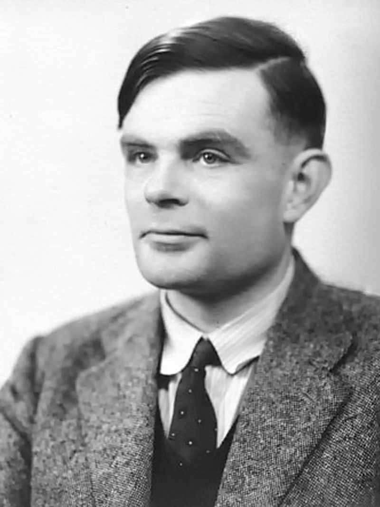
튜링"기계가 생각할 수 있는가" 1956 다트머스 회의'AI'라는 이름이 붙다
1957 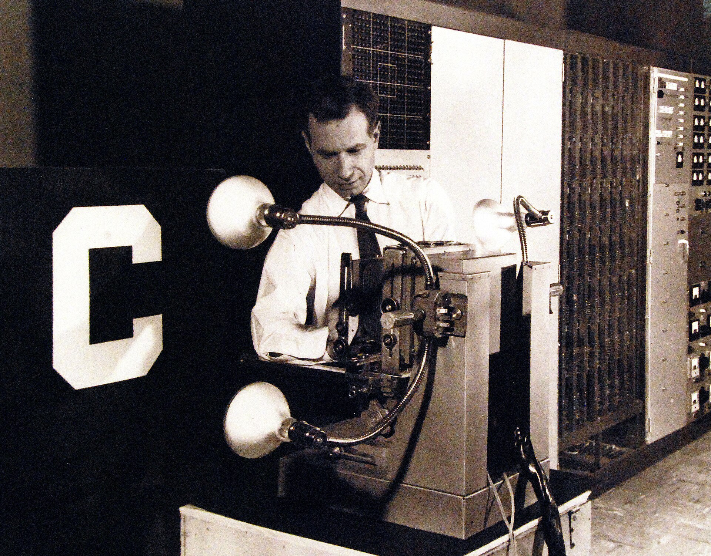
퍼셉트론1969 한계 지적 → 첫 겨울
사람이 if-then 규칙을 적으면 기계는 그대로 따른다
사진: Elliott & Fry(PD) · Kane5187(PD) · U.S. Navy Museum(PD) · Wikimedia Commons
AI 70년을 네 장으로 압축하는데, 다음 주 로봇팔 과정에 오시는 분은 거기서 더 길게 들으실 테니 오늘은 빠르게 가겠습니다. 1950년 튜링이 "기계가 생각할 수 있는가"를 물었고, 1956년 다트머스 회의에서 AI라는 이름이 붙었습니다. 1957년 로젠블랫의 퍼셉트론은 사진에서 보듯 캐비닛만 한 장치였는데 1969년 XOR 하나도 못 푼다는 지적을 받은 뒤로 AI 연구는 첫 겨울을 맞습니다.
이 무렵 나온 AI가 전문가 시스템인데요. if-then 규칙을 사람이 써 주면 기계는 시키는 대로 움직일 뿐이라 판단의 주인은 규칙을 쓴 사람이지요. 여러분이 2교시와 4교시에 "조도가 40보다 작으면 불을 켜라", "거리가 10cm 이하면 멈춰라"를 블록으로 짜는 것도 고스란히 이 시대 방식입니다.
로봇팔 과정(11/28)과 겹치는 장. 사진: Alan Turing (1951) · Elliott & Fry · PD / Dartmouth Hall · Kane5187 · PD / Mark I Perceptron · National Museum of the U.S. Navy · PD (Wikimedia Commons). 연도: 튜링 1950, 다트머스 1956, 퍼셉트론 1957(Rosenblatt), Minsky·Papert 1969.
도입 · AI 70년 압축 · 2/4
학습의 시대엔 판단이 데이터에서 나오기 시작했다
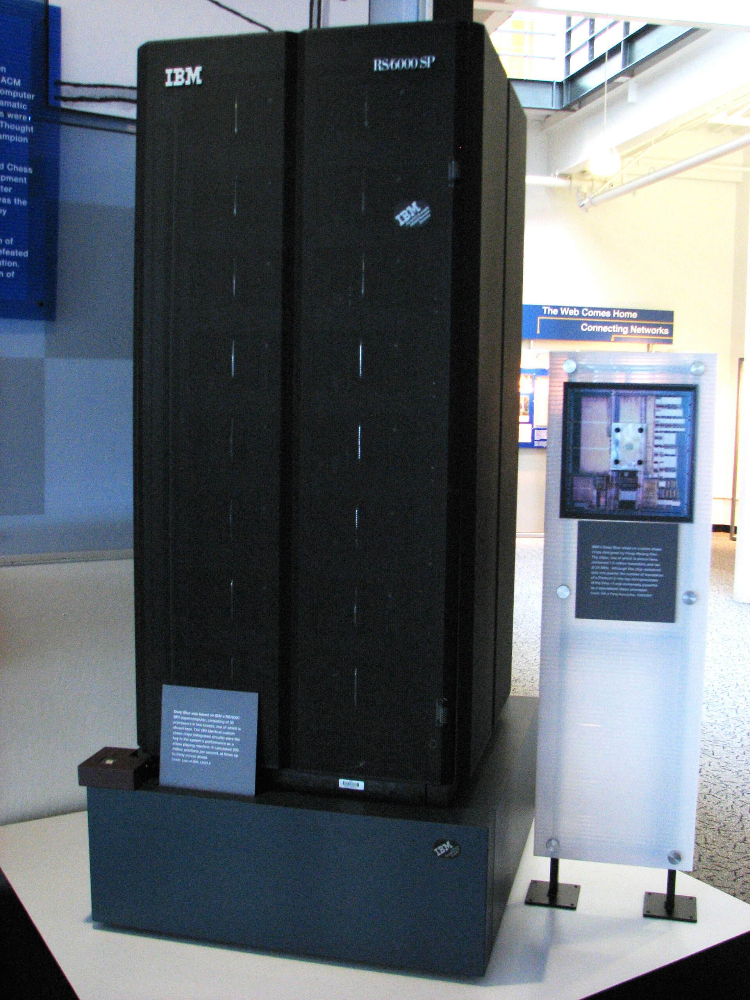
1997 · 딥블루사람이 적은 평가 규칙 + 초당 2억 수 탐색 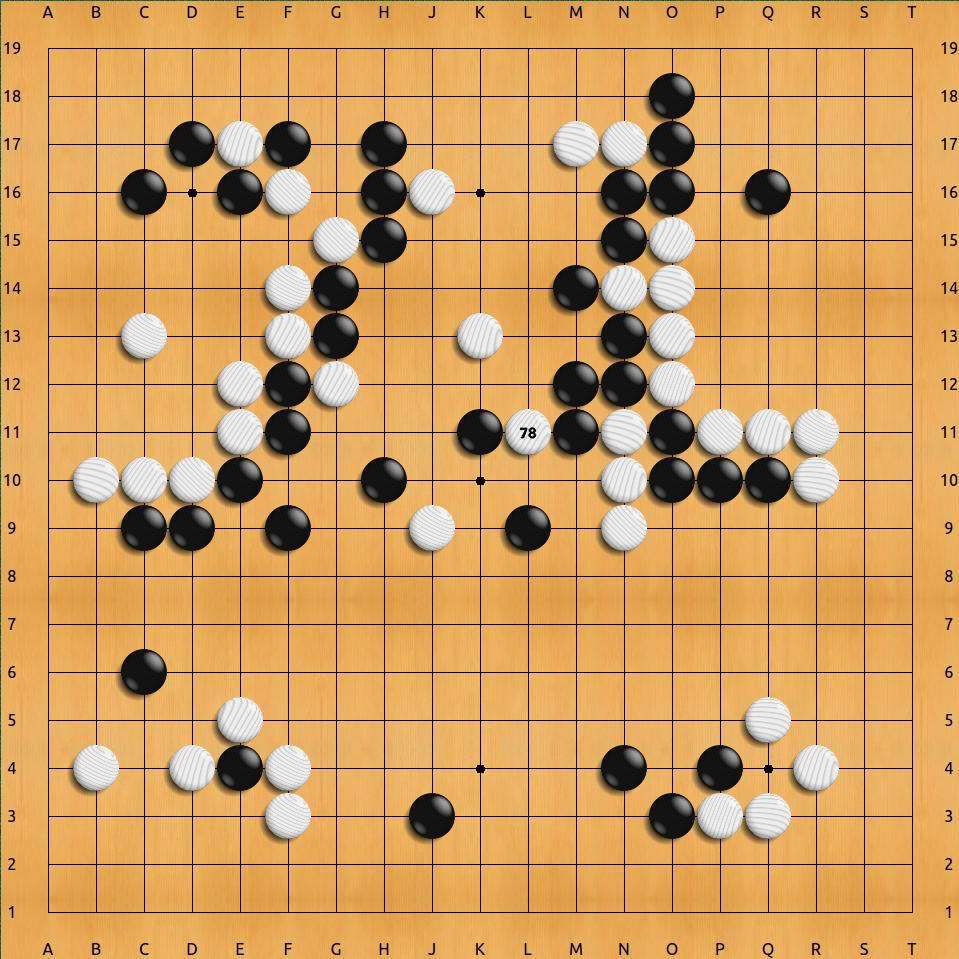
2016 · 알파고기보 수십만 판 + 자가 대국 수백만 판
1986 역전파 → 1997 딥블루 → 2016 알파고를 지나며 규칙을 적는 대신 데이터로 가르치게 된다
사진: Christina Xu(CC BY 2.0) · Axd(CC BY-SA 4.0) · Wikimedia Commons
1986년에는 역전파로 다층 신경망도 학습시킬 수 있게 되면서 학습의 시대로 넘어갑니다. 1997년 체스 챔피언 카스파로프를 꺾은 딥블루는 아직 사람이 짜 준 평가 규칙에 엄청난 탐색을 얹은 기계라 규칙의 시대 끝자락에 섰다고 보시면 됩니다.
갈림길은 2016년 알파고입니다. 바둑은 경우의 수가 워낙 많아 평가 규칙을 사람 손으로 적는 게 불가능했고, 알파고는 사람 기보 수십만 판을 익힌 다음 스스로와 수백만 판을 두며 판단하는 법을 혼자 깨쳤습니다. 오른쪽 화면은 이세돌 9단이 이긴 제4국 기보예요. 한국 선생님들은 다들 기억하실 텐데, 규칙을 사람이 일일이 적어 주던 방식이 저무는 순간을 그날 온 국민이 지켜봤습니다.
5교시에 하실 일도 이 방식 그대로입니다. 규칙은 한 줄도 쓰지 않고 손 모양 30개를 찍어 예시로 보여 주면 모델이 만들어집니다.
로봇팔 과정과 겹치는 장(로봇팔 덱 4·5장을 한 장으로). 사진: IBM rs6000 SP - Deep Blue · Christina Xu · CC BY 2.0 / Lee-sedol-alphago-divine-move · Axd · CC BY-SA 4.0 (Wikimedia Commons). 연도: 역전파 1986(Rumelhart·Hinton·Williams), 딥블루 1997, 알파고 2016.3(4:1), 알파고 제로 2017. 딥블루 사진은 왼쪽 끝 박물관 안내판 글자가 잘려 보여, 그림을 849px로 그리고 왼쪽 73px(원본 약 165px)을 clip-path로 가림(파일은 그대로).
도입 · AI 70년 압축 · 3/4
계산과 데이터가 갖춰진 2012년, 보는 AI가 터졌다
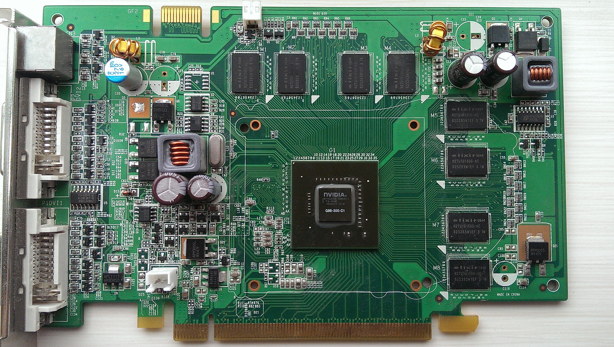
GPU2012 AlexNet · 게임용 그래픽카드 두 장으로 일주일 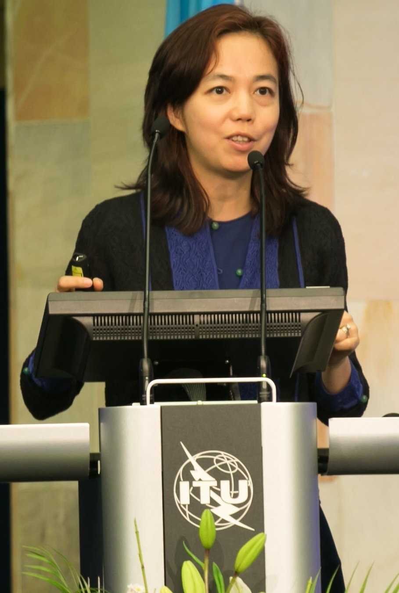
ImageNet · 페이페이 리사람이 이름표를 붙인 사진 1,400만 장
이름표 붙은 데이터로 판단을 배우는 원리는 오늘 오후 손 모양 30장도 같다
사진: Thomas Galvin(CC BY-SA 4.0) · ITU Pictures(CC BY 2.0) · Wikimedia Commons
2012년에 영상 인식 오류율이 한 해 만에 10%p 떨어지면서 '보는 AI'가 기본 부품이 됐습니다. 알고리즘 말고도 재료가 둘 있었는데 계산 쪽은 게임용 그래픽카드였습니다. 같은 계산을 수천 개 동시에 하는 데 강한데 신경망 학습이 바로 그런 계산이거든요. 데이터 쪽은 페이페이 리 팀이 만든 ImageNet, 사람이 이름표를 붙인 사진 1,400만 장입니다. 이름표가 없으면 학습이 안 됩니다.
두 재료 가운데 여러분은 데이터 쪽을 맡는데, 오후에 카메라 앞에서 손 모양을 30번 찍어 '가라', '멈춰라' 같은 이름표를 달아 주시면 계산은 노트북 브라우저가 알아서 합니다. 서버를 거치지 않고 노트북 안에서 학습이 끝나니 인터넷이 끊겨도 문제없습니다. 자율주행차의 카메라나 4교시 로봇의 라인 센서나 하는 일은 모두 보는 것이고, 본 것을 놓고 판단을 내리는 일이 사람 손을 떠난 게 2012년입니다.
로봇팔 과정과 겹치는 장(로봇팔 덱 10장). 사진: BFG NVIDIA GeForce 9500 GT · Thomas Galvin · CC BY-SA 4.0 / Fei-Fei Li at AI for Good 2017 · ITU Pictures · CC BY 2.0 (Wikimedia Commons). AlexNet 2012(GTX 580 2장, 5~6일), ImageNet 약 1,400만 장(Deng et al. 2009). ILSVRC top-5 오류율 2011 25.8% → 2012 16.4%. 페이페이 리 사진은 원본 왼쪽 끝 검은 띠(약 14px)를 clip-path로 가림(그림 794px, 왼쪽 18px 숨김).
도입 · AI 70년 압축 · 4/4
로봇의 판단은
규칙의 시대에는 사람이 내려 주던 판단을 학습의 시대부터는 기계가 데이터에서 배웁니다. 오늘은 사람이 직접 조종하는 경우까지 함께 봅니다.
하루 내내 붙들 질문
네 장을 모아 놓고 보면 로봇의 판단은 누가, 무엇으로 내리는가 하는 질문이 남습니다. 규칙의 시대엔 if-then을 사람이 적었지만 학습의 시대로 오면 모델이 데이터에서 판단을 익힙니다. 2012년 뒤로 데이터도 계산도 커졌고 이제는 그 판단에 몸이 붙고 있습니다.
로봇으로 오면 칸이 하나 늘어나는데, 사람이 아예 손으로 직접 모는 경우입니다. 자율주행 레벨로는 0에 해당하고 3교시에 라디오로 포니봇을 몰아 보는 시간이 바로 이 칸입니다. 오늘은 이렇게 세 칸을 모두 거치는데, 손으로 조종도 하고 규칙도 직접 적어 본 뒤 마지막엔 데이터로 모델을 학습시킵니다.
로봇팔 과정과 겹치는 장(로봇팔 덱 8장). 사진 없음(핵심 문장 장).
도입 · AI 70년 압축 · 교사에게 가장 불편한 문장
70년의 교훈은 교사에게 불편합니다
리처드 서튼 · 강화학습의 아버지 · 2024 튜링상
2019
사람이 아는 것을 넣어 주기보다, 계산과 학습에 맡기는 쪽이 결국 크게 이긴다
"The Bitter Lesson" · 체스 · 바둑 · 음성 · 영상 · 자율주행에서 반복
교사 몫은 무엇을 보여 주고 무엇을 맞다고 할지 정하기. 지식 넣기 말고
사진: SD 2025 - Richard Sutton 01 · Xuthoria · CC BY-SA 4.0 · Wikimedia Commons
시간이 있을 때만 꺼내는 장인데, 교사로서는 듣기 가장 불편한 문장이 담겨 있습니다. 강화학습의 아버지 리처드 서튼은 2019년 「The Bitter Lesson」에서 70년 AI 연구가 남긴 가장 큰 교훈을 이렇게 요약합니다. 사람이 아는 것을 넣어 주는 것보다 계산과 학습에 맡기는 일반적 방법이 결국 크게 이긴다는 겁니다. 체스, 바둑, 음성, 영상에서 이 일이 되풀이됐고 자율주행도 규칙 기반에서 학습 기반으로 옮겨 가는 중입니다.
그럼 교사는 무엇을 해야 할까요? 지식을 채워 넣기보다 무엇을 보여 주고 무엇을 정답으로 칠지, 다시 말해 데이터와 기준을 정하는 일입니다. 5교시에 여러분이 하실 일도 이것인데, '멈춰'에 해당하는 손 모양을 정하고 몇 장을 찍을지, 얼마나 확신할 때 보낼지를 직접 고르게 됩니다.
로봇팔 과정과 겹치는 장(로봇팔 덱 11장). 사진: SD 2025 - Richard Sutton 01 · Xuthoria · CC BY-SA 4.0 (Wikimedia Commons). Sutton, R. (2019). The Bitter Lesson. incompleteideas.net. 번역은 의역. 서튼·바르토 2024 튜링상.
도입 · 판단의 최소 단위
뉴런 하나는 더한 값이 임계값을 넘으면 켜진다
× w1
× w2
× w3
입력 1
거리
입력 2
밝기
입력 3
손 모양 점수
Σ
전부 더한다
합 ≥ 임계값?
기준값 하나가 가른다
발화 · 1
넘었다 → 행동
조용 · 0
못 넘었다 → 가만히
2교시 · 조도 < 40 → 불 켜기
5교시 · 신뢰도 ≥ 기준 → 명령 전송
8교시 · 거리 ≤ 30cm → 정지
오늘은 하루 종일 판단을 가르는 숫자 하나, 임계값을 정합니다
AI라는 거대한 것의 가장 작은 부품부터 보겠습니다. 뉴런 하나가 하는 일은 단순합니다. 들어오는 신호 여러 개에 각각 가중치를 곱해 전부 더한 뒤 그 합이 임계값을 넘으면 켜지고 못 넘으면 가만히 있는데, 생물 뉴런이든 인공 뉴런이든 이 틀은 같아요. 1957년 퍼셉트론이 이걸 전기 장치로 만들었고, 지금의 신경망은 이런 뉴런을 수십억 개 겹쳐 놓은 것입니다.
여기서 오늘 하루 붙들고 갈 문장이 나옵니다. 오늘은 하루 종일 판단을 가르는 숫자 하나, 임계값을 정합니다. 신호를 더하는 데까지는 계산이고, 어디에 선을 그을지 고르는 대목에서 판단이 나옵니다. 가령 2교시 블록에 조도가 40보다 작으면 불을 켜라고 넣었다면 그 40이 바로 임계값이에요. 손 모양 모델이 몇 % 이상 확신해야 로봇에 명령을 보낼지 5교시에 고르는 숫자도, 8교시에 로봇을 몇 cm 앞에서 세울지 정하는 30cm도 다 임계값입니다. 그 숫자를 고르는 사람은 언제나 여러분입니다.
기준값은 재서 정합니다. 2교시에는 조도 기준값을 연수장 조명에서 직접 재 보고, 5교시 신뢰도 기준은 모델이 틀리는 걸 보면서 올리거나 내립니다. 임계값만 바꿨는데 같은 입력에서 판단이 달라지는 걸 몸으로 겪어 보시면 학생에게 '기준이 판단'이라는 말도 설명하실 수 있습니다.
그림: 인라인 SVG(강사 작성). 가중치·임계값 모형: McCulloch–Pitts 1943, Rosenblatt 1957. 이 장 바로 뒤에 G 파트 체험 도구(뉴런·신경망 시각화)가 삽입됨. 기준값 수치(조도 40, 거리 30cm)는 2·8교시 덱과 일치시킬 것.
선택 체험 · 10분 · 도입
진짜 초파리 뇌를 브라우저에서 돌려 봅니다
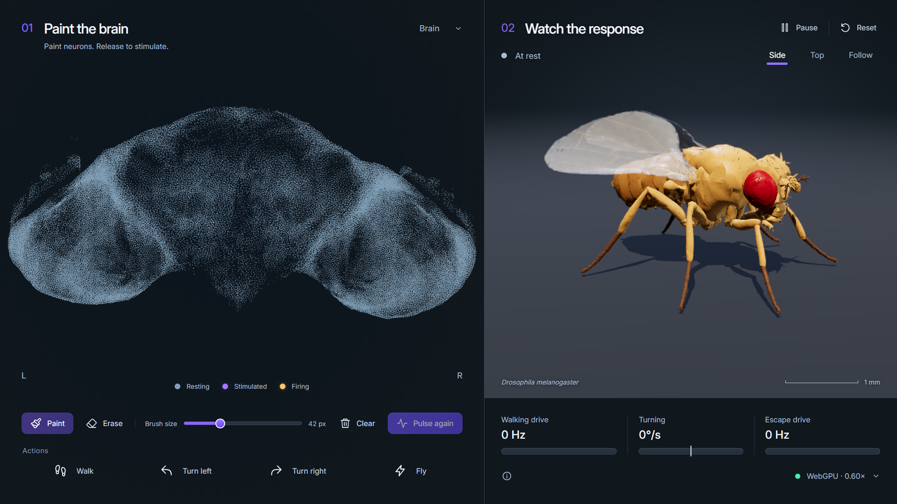
Neural Canvas · 왼쪽 뇌 점구름, 오른쪽 3D 파리
점 하나 = 뉴런 하나
왼쪽 점구름이 초파리 뇌 전체
Paint로 칠하면 깨어남 · 보라 → 노랑
오른쪽 3D 파리가 걷고 돌고 난다
아래 숫자 = 뇌가 몸에 보내는 명령
배선대로 판단한다
화면: 강사 캡처 2026-10-17 · 도구: xenova · Fruit Fly Simulation (Neural Canvas)
시간이 없으면 건너뛰거나 쉬는 시간 체험으로 안내합니다. 시간을 내려면 도입의 AI·로봇 발달 설명을 장당 1분씩 줄이면 됩니다.
방금 뉴런 하나가 하는 일을 봤습니다. 들어온 신호를 더해서 넘으면 켜지는 게 전부였죠. 그런 뉴런이 16만 6천여 개 모이면 어떻게 되는지 진짜 초파리 신경계를 열어 보겠습니다. 이 화면은 수컷 초파리 중추신경계 커넥톰을 브라우저 안에서 돌리는 것으로, 첫 화면에 뜨는 166,700 neurons가 그 뉴런 수입니다. 계산은 서버 없이 여러분 노트북이 맡습니다.
왼쪽 점구름에서는 점 하나가 뉴런 하나입니다. Paint 붓으로 칠하면 그 자리 뉴런이 깨어나는데, 보라색이 우리가 깨운 자리이고 노란색이 실제로 켜진 자리라서 신호가 번져 나가는 것이 보입니다. Actions의 Walk·Turn·Fly 버튼은 연구자들이 이미 아는 정답 자리입니다. 누르면 오른쪽 3D 파리가 걷고 돌고 납니다. 이때 아래 Walking drive 같은 칸에 뜨는 숫자가 뇌가 몸에 보내는 명령값입니다. 오른쪽 아래 모드 표시는 WebGPU든 JavaScript든 둘 다 정상입니다.
뉴런 하나만 보면 단순합니다. 걷고 나는 판단은 그 사이 배선, 즉 연결에서 나옵니다. 오후에 포니봇이 손 모양을 보고 go·stop 가운데 무엇을 보낼지 고를 때도 그 판단은 모델 속 연결에 담겨 있고요. 감지에서 판단을 지나 행동으로 가는 루프가 뇌에서는 이런 모습이라고만 봐 두셔도 충분합니다.
제작자가 남긴 주의 사항도 옮겨 둡니다. 바탕이 된 모형은 검증을 거쳤지만 데모 속 움직임까지 검증된 건 아니니, 교실에서는 '배선대로 판단한다'는 그림 정도로만 쓰세요.
화면: 강사 캡처 2026-10-17 (img/shot_flybrain_main.png). 도구: xenova, Fruit Fly Simulation / Neural Canvas (Hugging Face Space, xenova-fruit-fly-simulation.static.hf.space, 2026-10-19 접속 확인). 페이지 표기: MaleCNS v1.0 뉴런 166,700개, 가중치 76 MB(첫 화면 "166,700 neurons · 76 MB neural weights", 다음 장 그림). 노트의 뉴런 수는 이 표기를 따름. 참고: FlyWire 성체 초파리 전뇌는 약 139,000개로 다른 데이터셋. 이 장을 빼면 다음 장도 함께 뺍니다.
선택 체험 · 8분 · 2인 1조
Walk 버튼 없이 파리를 걷게 하세요
1 링크 열고 Download & start 76 MB · 1회만
2 Actions → Walk, 정답 반응 먼저 보기
3 Paint로 왼쪽 뇌 칠하고 손 떼기 · 약하면 Pulse again
4 걷는지 · 도는지 · 나는지 관찰
5 Clear 후 다른 자리 칠하기
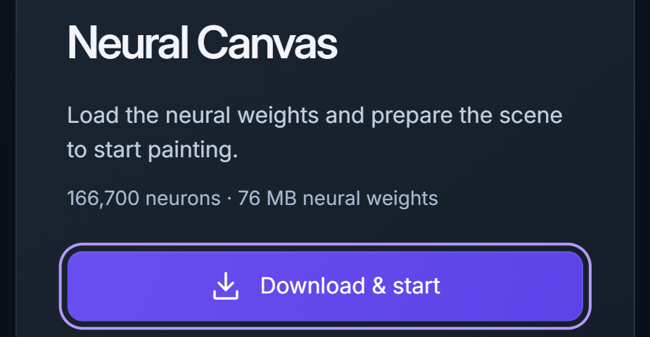
첫 화면 · 뉴런 166,700개 · 76 MB → Download & start xenova-fruit-fly-simulation.static.hf.space
열기 ↗
08:00 눌러서 시작 · 다시 누르면 멈춤 ↺ Walk 때와 같은 걸음이 나오는 자리 찾기
생각할 점 걷게 만든 자리는 어디였나요? 뉴런 하나는 단순해도 연결에 따라 움직임이 갈립니다.
화면: 강사 캡처 2026-10-17(대화상자 부분) · 도구: xenova · Fruit Fly Simulation (Neural Canvas)
시간이 없으면 건너뛰거나 쉬는 시간 체험으로 안내합니다. 앞 장과 묶어 10분이며, 앞 장 설명을 2분 안에 끝내면 체험 8분이 나옵니다.
8분 드리겠습니다. 링크를 열면 Download & start가 뜨는데 76 MB이고 한 번만 받으면 됩니다. 먼저 Actions에서 Walk를 눌러 파리가 걷는 정답 반응을 봅니다. 그다음 Paint 붓으로 왼쪽 뇌를 칠하고 손을 떼면 칠한 자리가 깨어나 신호가 번집니다. 반응이 약하면 Pulse again. 걷는지, 도는지, 나는지 관찰하고, Clear로 지운 뒤 다른 자리를 칠합니다. Walk 버튼 없이 붓만으로 걷게 하면 성공입니다.
돌다가 화면이 검은 PC가 있으면 F5로 새로고침합니다. 느리면 JavaScript 모드로 자동 전환된 것이고 정상입니다. 한 번에 반응이 안 나오는 팀은 붓 크기를 키워 넓게 칠하게 합니다.
다 하셨으면 여쭤 보겠습니다. 걷게 만든 자리는 어디였나요? 눈 쪽과 뒤쪽을 칠한 팀끼리 반응이 서로 달랐을 겁니다. 뉴런은 같아도 놓인 자리에 따라 행동이 바뀌니, 뉴런 하나는 단순해도 판단은 연결에 따라 갈립니다. 이런 연결이 바로 "모델이 배운 것"이라는 이야기는 오후에 손 모양 모델을 만들 때 다시 꺼내겠습니다.
화면: 강사 캡처 2026-10-17 (img/shot_flybrain_start_v2.png, 원본 shot_flybrain_start.png에서 대화상자 둘레만 자름). 도구: xenova, Fruit Fly Simulation / Neural Canvas (Hugging Face Space, 2026-10-19 접속 확인). 리허설: 연수장 PC에서 WebGPU 가능 여부와 76 MB 다운로드 시간 확인, 전날 모든 PC에서 한 번 열어 캐시.
도입 · 피지컬 AI
말하는 AI에서 움직이는 AI로
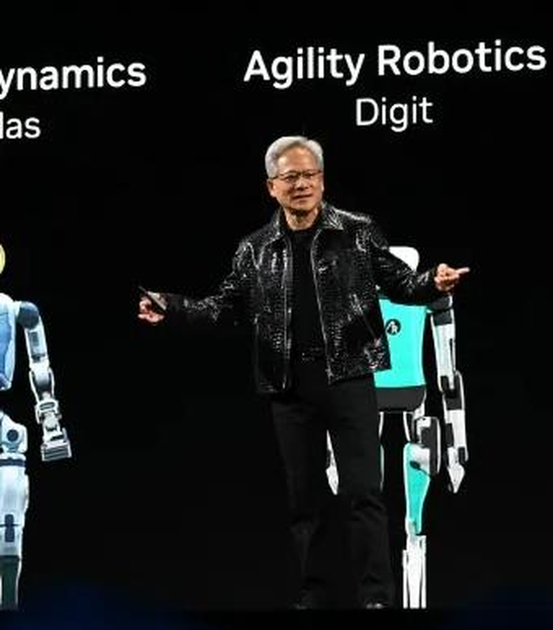
피지컬 AI의 정의물리 세계를 감지하고 · 이해하고 · 행동한다 (젠슨 황, CES 2025) 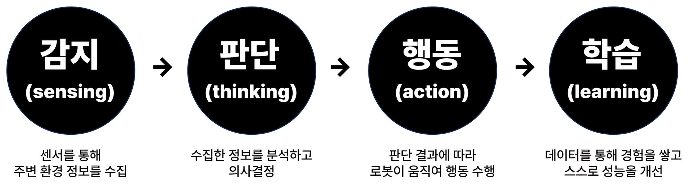
감지 → 판단 → 행동 → 학습오늘 모든 활동이 이 고리 한 바퀴
답을 내고 끝나는 화면 속 AI와 달리 몸이 있는 AI는 행동한 결과를 다시 본다
그림: boundaryX AI 포니봇 교안 13차시 p.22 (부분, 교안의 사진 출처 표기: nvidia) · p.18 (부분)
드디어 오늘의 주제어입니다. 말하고 그림을 그려 주는 챗봇은 물리 세계를 건드리지 않는 반면, 피지컬 AI는 센서로 세계를 감지해 상황을 이해한 다음 모터를 돌려 실제로 행동합니다. 왼쪽 사진 아래 적은 정의가 이 뜻인데, 이 말이 널리 퍼진 건 엔비디아 젠슨 황이 CES 2025 기조연설에서 "피지컬 AI의 ChatGPT 순간이 온다"고 말한 뒤부터입니다.
오늘은 종일 오른쪽 고리를 따라 움직입니다. 감지에는 초음파·라인 센서·카메라를 쓰고, 판단은 처음엔 여러분이 적은 규칙이 맡다가 오후가 되면 여러분이 학습시킨 모델 몫이 됩니다. 행동은 모터와 LED와 OLED가 담당하고, 마지막 학습 칸에서는 행동이 어떻게 됐는지 보고 데이터나 기준값을 손봅니다. 화면 속 AI는 답을 내면 할 일이 끝나지만 로봇은 움직인 결과를 다시 확인하니까 틀린 게 눈에 띄고, 눈에 띄어야 고칠 수 있지요.
교안 원문에는 젠슨 황 발언 시점이 다르게 적혀 있는 판이 있는데, CES 2025가 맞습니다. 학생 자료를 쓰실 때 확인해 주세요.
그림: boundaryX AI 포니봇 교안 13차시 p.22(정의), p.18(고리). 크롭: img/oc/L13_p22_jensen_huang_photo.png(p.22 쪽 안 사진 원본만 2배 확대. 사진 위 손글씨 말풍선·선, 정의 글머리 문단, 젠슨 황 설명 상자, 소년 캐릭터, 워터마크 제외 — 정의는 왼쪽 캡션으로 옮김) · img/oc/L13_p18_sense_think_act_learn.png(p.18 네 원·화살표·원 아래 설명만, D 파트 5교시 장과 같은 파일). 젠슨 황 피지컬 AI 발언: CES 2025 기조연설(2025.1.6, 라스베이거스). 대체: 고리를 lay-flow로 직접 그리려면 다음 장 사용.
선택 시연 · 3분 · 강사
노트북 안의 작은 모델이 웹캠을 보고 말합니다
강사 What do you see?
SmolVLM · 노트북 안에서 실행 A small four-wheeled robot with a blue circuit board on a desk.
강사 지금 뭐가 보여?
SmolVLM I see a robot… (짧아지거나, 영어로, 또는 틀림)
huggingface.co/spaces/webml-community/smolvlm-realtime-webgpu
열기 ↗
보는 모델 + 행동 = VLA
연결 이 모델은 본 것을 문장으로 말합니다. 오후의 손 모양 모델이 하는 말은 go·stop·left·right뿐입니다.
시간이 없으면 건너뛰거나 쉬는 시간 체험으로 안내합니다. 시간을 내려면 도입의 로봇 발달 설명을 1분 줄이면 됩니다. 강사 시연 3분이고 참가자 PC에는 열지 않습니다.
(강사 노트북 웹캠 켜기) AI가 말만 하다가 움직이기 시작하는 길목에서 한 조각을 보여 드리겠습니다. 웹캠에 비친 장면을 작은 비전·언어 모델이 영어로 풀어 주는데, 서버를 거치지 않고 노트북 안 WebGPU에서 돌아갑니다. 처음 실행할 때 수백 MB를 내려받아 두면 그다음부터는 인터넷 없이도 됩니다.
"What do you see?"를 넣습니다. 포니봇을 카메라 앞에 들어 보이고, 손, 마이크로비트, 활동지로 바꿔 가며 답을 읽습니다. 이번엔 한국어로 묻습니다. "지금 뭐가 보여?" 답이 짧아지거나 영어로 나오거나 틀리는데, 모델이 작을수록 더 심합니다. 교실에서 학생들도 바로 찾아낼 한계입니다.
오후에 만들 손 모양 모델이 go, stop, left, right 중 하나만 고른다면 이 모델은 눈에 보이는 것을 문장으로 풀어 말합니다. 비전·언어 모델에 '행동'을 얹은 것을 VLA, 비전·언어·행동 모델이라고 부릅니다. 우리는 오늘 분류에서 멈추고, 그 위에 쌓일 것은 방금 3분 동안 보여 드렸습니다. 이런 모델이 지시를 맡게 되더라도 로봇의 안전을 센서가 끝까지 지킨다는 오늘의 약속은 바뀌지 않습니다.
도구: SmolVLM Realtime WebGPU (webml-community, Hugging Face Space, 2026-10-19 Running 확인). 모델: SmolVLM (Hugging Face). 참가자 체험용이 아닌 강사 시연 전용. 사진 없음, 말풍선으로 구성. 말풍선의 영어 답은 예시이며 리허설에서 실제 답으로 바꿀 것. Chrome/Edge + WebGPU 필요.
도입 · 피지컬 AI · 고리를 오늘 교구에 대입
같은 고리를 포니봇에 대입하면
감지 2·4교시 초음파 거리 · 라인 L/R · 조도 · 노트북 카메라
판단 오전 규칙 · 오후 모델 만약 거리 ≤ 10 이면
행동 3교시 메카넘 네 바퀴 · LED 4개 · OLED
학습 5~7교시 틀린 손 모양 더 찍기 · 기준값 올리기
감지·행동·학습 칸은 그대로 두고 판단 칸만 규칙에서 모델로 바꿔 끼웁니다
학습 칸이 모델만의 일은 아닙니다. 2교시에 조도 기준값을 다시 재고 4교시에 정지 거리를 고치는 것도 학습인데 이때 배우는 쪽은 사람입니다. 모델 차례는 오후입니다.
앞 장 고리를 오늘 교구에 그대로 대입한 그림입니다. 감지 칸에는 포니봇의 초음파, 바닥 라인 센서 둘, 마이크로비트의 조도, 그리고 오후에는 노트북 카메라가 들어갑니다. 행동 칸은 메카넘 바퀴 넷과 LED 넷과 OLED입니다. 이 두 칸은 하루 종일 안 바뀝니다.
판단 칸만 바뀝니다. 처음엔 "거리가 10 이하면"처럼 여러분이 적은 규칙이 자리를 차지하다가 점심 뒤로는 "손 모양이 go이면"처럼 학습된 모델의 판정이 그 칸에 들어섭니다. 어느 쪽이든 '만약 ~이면' 블록이어서 오후에 열어 보시면 생김새가 거의 똑같고, 다른 점이라면 조건 안의 값이 센서값에서 모델의 판정으로 바뀐다는 것 정도입니다.
학습 칸에 모델만 들어간다고 생각하지는 마셨으면 합니다. 2교시에 기준값이 어긋나 다시 재 보거나 4교시에 정지 거리를 손볼 때도 이 칸이 돌아가는데, 그때 배우는 쪽은 사람입니다. 배우는 주체가 모델로 바뀌는 건 오후 일이고, 이 구분이 질문 ①의 답이기도 합니다.
사진 없음(흐름도). 앞 장과 둘 중 하나만 써도 됨. 교시 번호는 편성표 기준.
도입 · 모빌리티 축 로봇 65년 · 1/4
기억해 재생하는 팔 뒤에 스스로 길 찾는 바퀴가 나왔다
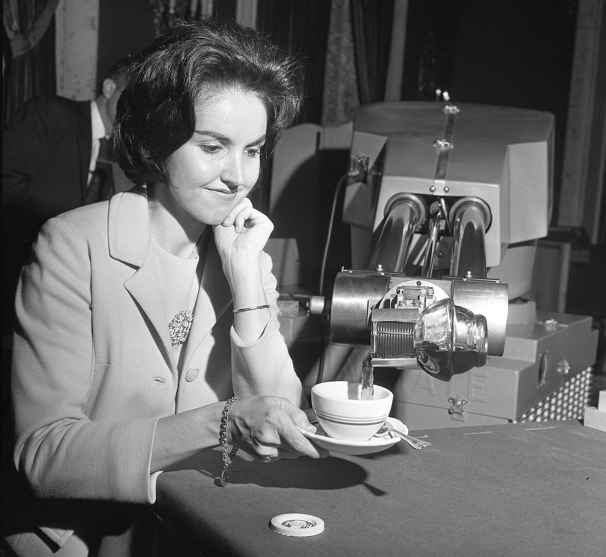
1961 · 유니메이트사람이 자세를 기억시키고 로봇이 재생 · 판단 없음 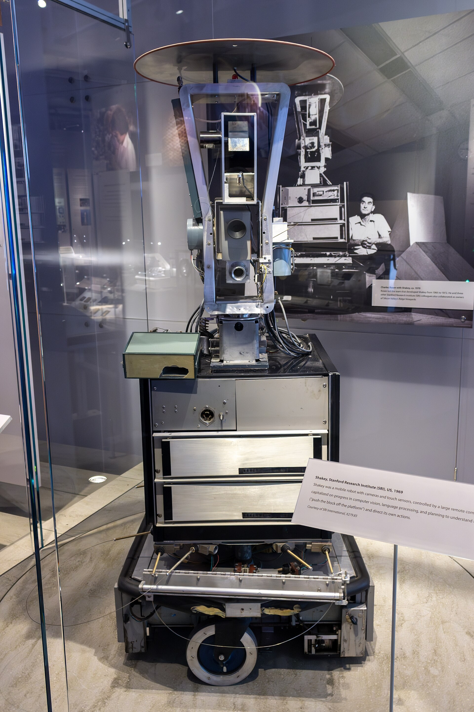
1966 · Shakey (SRI)카메라·거리 센서로 보고, 계획을 세워 움직인 첫 이동 로봇
Shakey는 느렸지만 길 찾기 알고리즘 A*가 여기서 나왔다
사진: Unimate · Frank Q. Brown, Los Angeles Times(CC BY 4.0) · Shakey · Wikimedia Commons (manifest 참조)
로봇 쪽 65년은 모빌리티 축으로 보겠습니다. 로봇팔 과정에서는 팔의 역사를 따라가지만 오늘은 바퀴 이야기이고, 출발점은 같습니다. 1961년 GM 공장에서 뜨거운 부품을 옮긴 유니메이트는 사람이 자세를 하나씩 기억시키면 그 순서대로 재생할 뿐이었고, 판단이 전혀 없어서 주변이 바뀌어도 같은 자리로 갔습니다.
그로부터 5년 뒤 스탠퍼드연구소에서는 방향이 다른 로봇 Shakey가 나옵니다. 카메라와 거리 센서로 방 안을 살피고 어디로 갈지 계획을 짠 다음 바퀴로 움직인 첫 로봇입니다. 이름처럼 덜덜거려서 한 번 움직이려면 수십 분이 들었는데도, 감지와 판단과 행동을 잇는 고리를 한 몸에 담은 건 Shakey가 처음입니다. 요즘 내비게이션이나 게임 속 길 찾기에 들어가는 A* 알고리즘도 이 프로젝트에서 태어났습니다.
포니봇에는 이 둘이 다 있습니다. 3교시에 사각형 주행을 블록으로 적어 재생하는 것이 유니메이트 쪽이고, 4교시에 초음파를 보고 멈추거나 라인을 따라가는 것이 Shakey 쪽입니다.
사진: Unimate pouring coffee at Biltmore Hotel, 1967 · Frank Q. Brown, Los Angeles Times · CC BY 4.0 / Shakey: img/mb_shakey.jpg · Wikimedia Commons (manifest 참조). 연도: Unimate 1961(GM Ewing), Shakey 1966~1972(SRI), A* 1968(Hart·Nilsson·Raphael).
도입 · 모빌리티 축 로봇 65년 · 2/4
규칙 대신 학습으로 사막 212km를 사람 없이 달린 날
2005
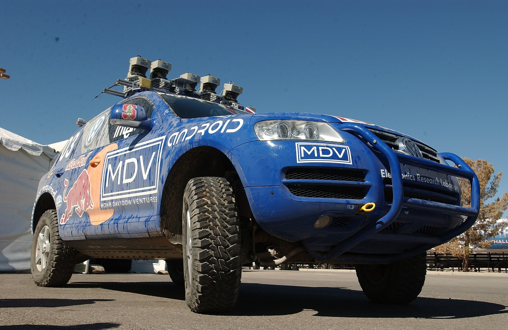
Stanley (스탠퍼드) · 지붕의 라이다 5대와 카메라 · 2004년 대회는 완주 0대, 2005년 6시간 53분 완주 카메라가 본 길을 라이다가 가르쳤다. 사람이 규칙을 적은 팀들은 사막에 남았다
사진: Wikimedia Commons (manifest 참조)
2004년 미국 국방부 DARPA가 사막 240km를 사람 없이 달리는 차에 상금을 걸었는데, 완주한 팀이 하나도 없었습니다. 1년 뒤 2005년에는 212km 코스에서 다섯 팀이 완주했고, 사진의 스탠퍼드 Stanley가 6시간 53분으로 우승했습니다. 지금의 자율주행차 회사 창업자 상당수가 이 두 대회 출신입니다.
Stanley가 이긴 이유는 오늘 수업과 맞닿아 있습니다. 지붕의 라이다는 정확하지만 가까운 곳만 보고, 카메라는 멀리 보는 대신 어디가 길인지 알 수 없고요. Stanley 팀은 라이다가 확인한 바로 앞의 '길'을 정답으로 삼아 카메라 영상 속 길의 모습을 실시간으로 학습시켰습니다. 사람이 "길은 이런 색이다"라고 규칙을 박아 둔 팀들은 그림자와 흙 색이 바뀌는 사막에서 멈춰 섰습니다.
Stanley 팀은 정확한 센서를 선생 삼아 넓게 보는 센서를 가르쳤습니다. 오후에 "지시는 AI, 안전은 센서"를 말할 때도 바탕은 여기입니다. 앞 장의 쓴맛 교훈을 보셨다면, 그 교훈이 들어맞은 현장이 2005년 사막이었습니다.
사진: img/mb_stanley.jpg · Wikimedia Commons (manifest 참조). 2004 DARPA Grand Challenge 완주 0대, 2005 완주 5대, Stanley 우승(Thrun et al. 2006, "Stanley: The Robot that Won the DARPA Grand Challenge"). 코스 길이 약 212km(132마일), 기록 6시간 53분. 리허설: 코스 거리·시간 표기 재확인.
도입 · 모빌리티 축 로봇 65년 · 3/4
사람 없이 달리는 바퀴가 2020년대엔 돈이 된다
도로 로보택시운전석 비운 유료 운행 · 레벨 4
보도 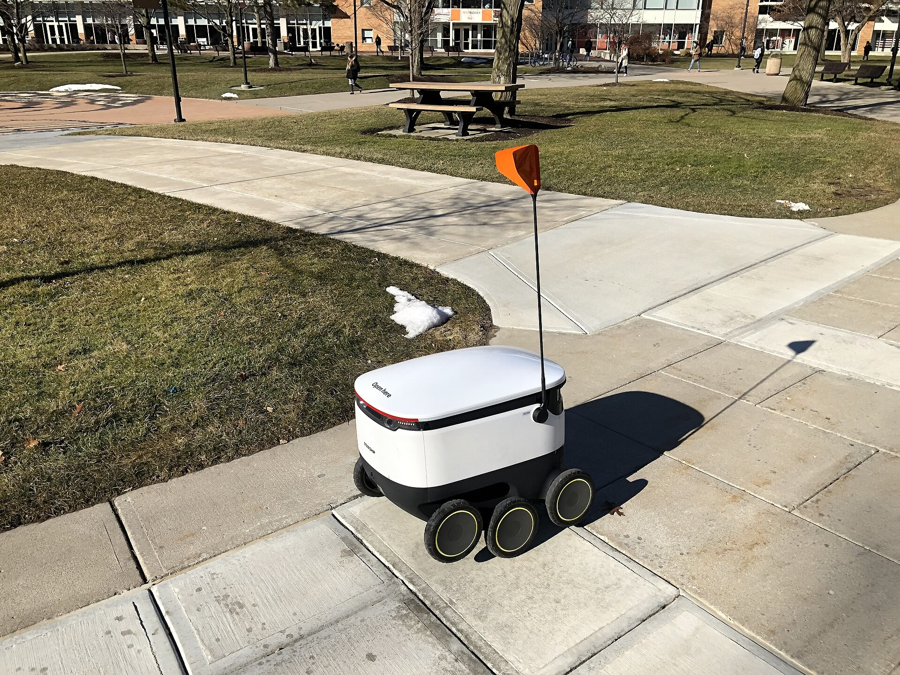
배달 로봇보도 위 · 횡단보도에서 멈추고 기다린다 창고 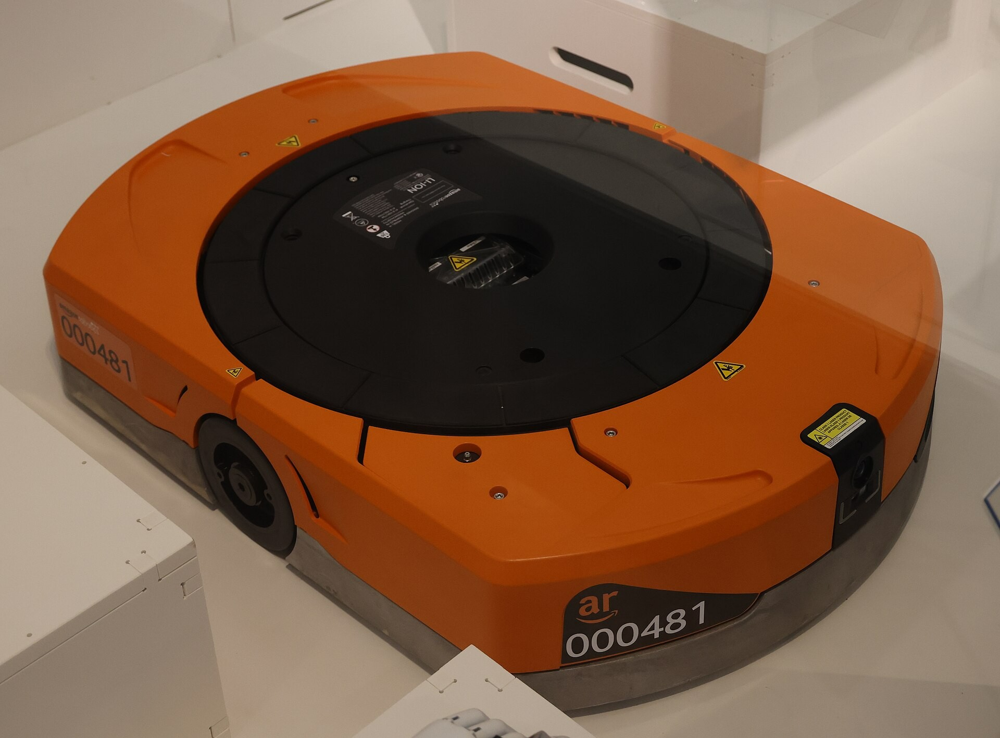
창고 로봇바닥 QR 코드를 읽고 선반째 나른다
도로·보도·창고. 환경이 단순할수록 먼저 무인이 됐다
사진: Wikimedia Commons (manifest 참조)
2005년 사막 대회 뒤로 20년이 흐른 지금, 바퀴 로봇은 돈을 버는 사업이 됐습니다. 빈 운전석으로 여러 도시를 누비며 요금을 받는 로보택시가 있고 대학 캠퍼스와 주택가 보도에는 배달 로봇이 다닙니다. 창고에서는 로봇 수십만 대가 선반째 물건을 옮깁니다.
어디가 먼저 무인이 됐는지 순서를 보시면 창고가 가장 빨랐습니다. 바닥은 평평하고 사람은 없는 데다 QR 코드까지 바닥에 깔 수 있으니까요. 보도가 그 뒤를 따랐고 도로가 가장 늦습니다. 환경이 단순하면 판단도 쉬워 규칙만으로 충분해서 초기 창고 로봇은 거의 규칙대로 움직였습니다. 바닥 표시를 읽어 가며 움직이니 잠시 뒤에 볼 AGV 쪽이고, 매트가 있어 4교시에 라인트레이싱을 하는 팀이라면 그 주행이 딱 그 창고 로봇입니다.
보도 배달 로봇이 횡단보도 앞에서 멈춰서 기다리는 장면을 보시면, 오늘 8교시 미션이 떠오르실 겁니다. 장애물 앞에서 멈추고, 지시가 오면 다시 갑니다.
사진: img/mb_waymo.jpg · img/mb_starship.jpg · img/mb_kiva.jpg · Wikimedia Commons (manifest 참조). 로보택시 운전석 무인 유료 운행: 피닉스·샌프란시스코·LA 등(2024~). 아마존 키바 인수 2012. 리허설: 각 사진의 저자·라이선스를 manifest에서 credit에 옮길 것.
도입 · 모빌리티 축 로봇 65년 · 4/4
조종할 수 없는 곳이라 스스로 판단해야 했다
2021
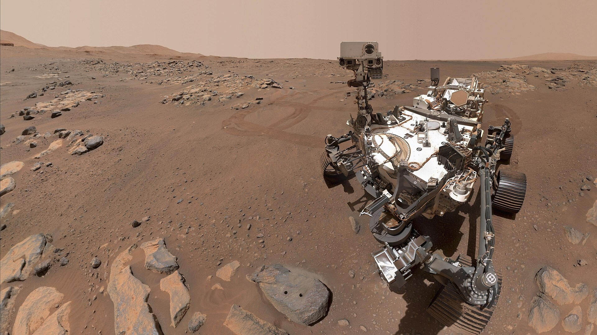
퍼서비어런스 (NASA) · 지구와 신호 왕복 6~45분 · 바위를 보고 스스로 피해 간다 "멈춰"가 도착할 때쯤이면 이미 늦으니 안전은 로봇 안에 둔다
사진: Wikimedia Commons (manifest 참조)
원격 조종이 안 되는 곳이 어딜까요? 화성입니다. 지구에서 보낸 신호가 가는 데만 3분에서 22분이 걸리니 "앞에 바위다, 멈춰"가 도착할 때쯤이면 이미 늦습니다. 화성 로버는 카메라로 바닥을 보면서 바위를 피해 갈 길을 스스로 정하고, 지구에서는 "저 언덕까지 가라"는 큰 목표만 보냅니다.
이 이야기를 머리에 넣어 두시면 오후가 한결 편합니다. 큰 방향의 지시는 멀리서 날아와도 눈앞의 안전은 로봇 몸 안에서 챙깁니다. 오늘도 손 모양 명령은 노트북에서 블루투스로 건너오지만, 장애물 앞에서 설지 말지는 포니봇에 들어 있는 초음파와 블록이 정합니다. 블루투스가 끊기거나 명령이 늦어도 로봇은 스스로 멈춥니다. 화성이든 책상 위든 다른 건 거리뿐이고요.
사진: img/mb_perseverance.jpg · Wikimedia Commons (manifest 참조). 퍼서비어런스 착륙 2021.2.18. 지구–화성 편도 통신 지연 약 3~22분(거리 약 5,500만~4억 km를 빛의 속도로 나눈 값), 왕복 약 6~45분. 자율 주행 AutoNav.
도입 · 자율주행 · SAE 레벨
레벨 0~5를 가르는 기준은 '누가 판단하나'
사람이 판단
시스템이 판단
L0 L1 L2 L3 L4 L5
자동화 없음 운전자 보조 부분 자동화 조건부 자율 고도 자율 완전 자율
사람이 다 한다
속도나 조향 하나만 시스템
둘 다 시스템, 사람이 계속 감시
시스템이 운전, 부르면 사람
정해진 구역에선 사람 없음
어디서나 사람 없음
3교시 라디오 조종
크루즈 컨트롤
양산차 대부분
일부 양산차 · 조건 제한
로보택시 · 창고
아직 없음
← 사람 책임 · 시스템 책임 →
L2와 L3 사이에 책임의 선이 있다. 오늘 저녁 포니봇은 몇 레벨일까
자율주행 뉴스에 늘 나오는 레벨은 숫자보다 '누가 판단하나'로 읽으시면 됩니다. 레벨 0은 사람이 다 합니다. 오늘 3교시에 라디오로 포니봇을 조종하는 게 레벨 0이지요. 레벨 1은 속도나 조향 중 하나만 시스템이 맡는데 크루즈 컨트롤이 그렇고, 4교시에 앞차와 거리를 유지하는 크루즈 활동도 여기 듭니다. 레벨 2는 둘 다 시스템이 하되 사람이 계속 지켜봐야 하는 단계이고, 지금 팔리는 차 대부분이 여기 있습니다.
레벨 2와 3 사이를 점선으로 끊어 둔 게 보이시나요? 책임이 거기서 넘어갑니다. 레벨 3부터는 정해진 조건 안에서 시스템이 운전하고 사람은 부를 때만 나서는데, 사고 책임을 누가 지느냐가 이 선에서 갈리니 양산차가 이 선을 넘기까지 오래 걸렸습니다. 레벨 4는 정해진 구역에 사람이 아예 없고 로보택시와 창고 로봇이 여기 속하지만, 어디서나 사람 없이 다니는 레벨 5 차는 아직 없습니다.
그러면 오늘 저녁 완성될 포니봇은 몇 레벨일까요. 손 모양으로 출발과 방향을 지시하고, 장애물 앞에서는 스스로 멈추고, 그다음 방향도 마지막 지시대로 돕니다. 다음 장에서 투표로 받겠습니다. 정답이 하나로 정해진 질문은 아닙니다.
그림: 인라인 SVG(강사 작성). 레벨 정의: SAE J3016. 양산차 레벨 3는 독일·미국 일부 지역에서 조건 제한 판매(메르세데스 Drive Pilot 등). 리허설: 국내 레벨 3 양산 현황을 연수 시점에 확인해 "일부 양산차" 문구 조정.
묻기 · 투표
오늘 저녁 포니봇은 몇 레벨일까요?
D 키 = 펜 · C 키 = 지우기 · L = 투표
8교시 미션 손 모양 go로 출발 → 30cm 앞 장애물에서 스스로 정지 → 마지막 손 모양(left/right)대로 회전 → 다시 전진. stop이나 연결 끊김은 즉시 정지.
판단은 누가?출발·방향은 사람,
L을 눌러 투표를 받겠습니다. 1분입니다. 정답 맞히기보다는 '누가 판단하나'를 따져 보자는 투표입니다.
투표가 끝나면 한 번 더 눌러 "판단은 누가?" 아래 답을 띄우고 결과를 보면서 나눠 봅니다. 출발과 방향은 사람이 손 모양으로 지시하니 레벨 0에 가깝고 장애물 앞에서 멈추는 순간만큼은 로봇이 스스로 하니 레벨 2나 3처럼 보입니다. 레벨 4라고 답하신 분은 "지시 없이도 장애물을 피해 계속 달린다"는 조건을 상상하셨을 텐데, 8교시에 유턴 기본값을 넣으면 실제로 그렇게 됩니다. 한 로봇 안에서도 기능마다 레벨이 다르고, 자동차도 마찬가지라서 레벨 숫자 하나로 차를 설명하는 기사는 조심해서 읽으셔야 합니다.
칠판에 사람 쪽과 로봇 쪽으로 나눠 적어 두고 사진을 찍습니다. 8교시 미션을 마치고 나서 이 사진을 떠올려 보시면 답이 바뀌었는지 각자 견주어 볼 수 있습니다.
투표(L): a_level. 선택지 글자는 A~D(레벨 숫자와 헷갈리지 않게). 손글씨 아래 줄(a400)은 클릭 한 번 뒤에 나타남. 연수 전에 a_level 시험 응답을 초기화할 것. 오후 덱에는 이 투표를 다시 여는 장이 없음. 시간이 없으면 투표 없이 앞 장 노트의 질문만 던지고 넘어감.
도입 · 자율주행 · 소프트웨어 정의 자동차
자동차를 소프트웨어로 바꾸는 SDV와 OTA
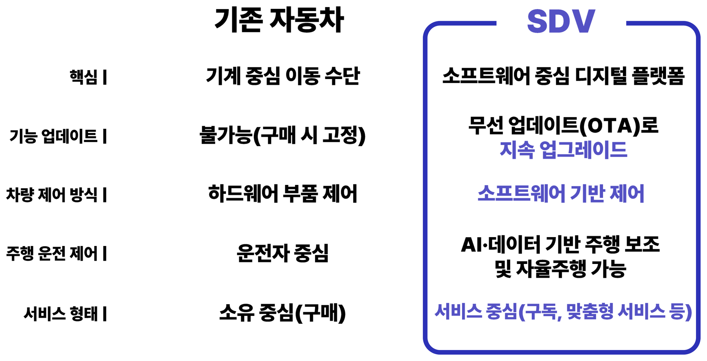
기존 자동차 vs SDV · 기능을 하드웨어 대신 소프트웨어에 담는다
판 뒤에도 차가 바뀐다
OTA · 무선으로 소프트웨어를 내려받아 기능이 추가·수정된다
두뇌만 갱신 · 하드웨어는 그대로인데 판단이 달라진다
정비소 대신 업데이트 · 리콜도 소프트웨어로
포니봇에 코드를 내려받는 것도 OTA의 축소판
그림: boundaryX AI 포니봇 교안 2차시 p.14 (부분)
자율주행 바로 옆에 붙어 있는 말이 SDV, 소프트웨어 정의 자동차입니다. 예전 차는 기능이 부품에 들어 있어서 기능을 바꾸려면 부품을 바꿔야 했지요. SDV는 기능이 소프트웨어에 있으니 차를 판 뒤에도 무선 업데이트로 기능을 더하거나 고치는데, 이걸 OTA라고 합니다. 자율주행 성능이 밤사이 올라가기도 하고 리콜을 정비소 대신 업데이트로 끝내기도 합니다.
포니봇도 사정이 비슷합니다. 하루 종일 바퀴와 센서에는 손을 대지 않고 1교시에서 8교시까지 코드만 여덟 번가량 새로 내려받거든요. USB나 블루투스로 코드를 내려받는 과정은 OTA를 작게 줄여 놓은 모습입니다. "같은 로봇, 세 가지 두뇌"라는 말도 몸은 그대로 둔 채 판단만 바꿔 넣을 수 있다는 데서 나왔습니다.
그림: boundaryX AI 포니봇 교안 2차시 p.14 → img/oc/L2_p14_car_vs_sdv_compare.png(비교표만: '기존 자동차'·'SDV' 머리와 다섯 줄. 제목 알약·말풍선 아이콘·워터마크·쪽 번호·저작권 줄 제외). SDV·OTA 일반 설명. 사례 회사명은 연수 시점에 맞게.
도입 · 감지 · 로봇의 눈 네 가지
로봇이 세상을 보는 법 · 소리 · 빛 · 반사 · 영상
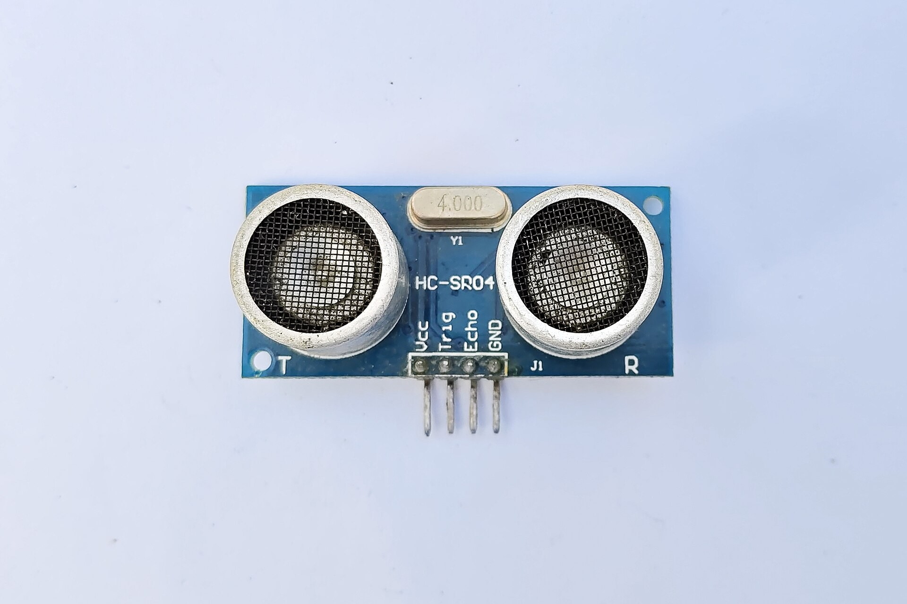
초음파소리를 쏘고 돌아오는 시간 → 거리 2~400cm · 포니봇 앞면 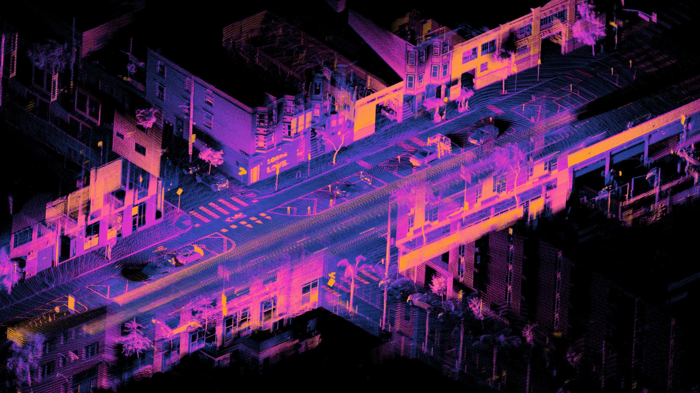
라이다레이저를 쏘고 돌아오는 시간 → 360° 거리 지도 · 자율주행차·서빙 로봇 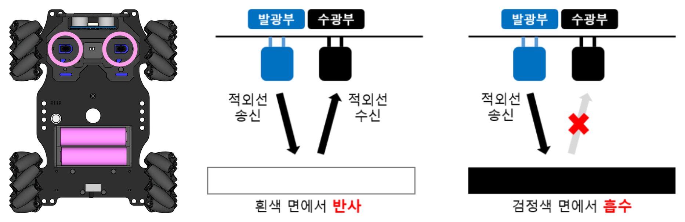
라인 센서적외선 반사 → 검정 1 · 흰색 0 · 포니봇 하판 앞 좌우 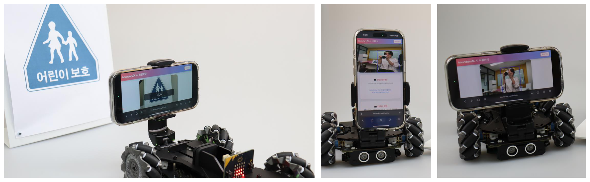
카메라영상 → 학습된 모델이 뜻을 읽는다 · 오늘은 노트북 웹캠
앞의 셋은 값이 숫자로 나온다. 카메라는 그림이라서 뜻을 읽으려면 모델이 필요하다
사진: Wikimedia Commons (manifest 참조) · 그림: boundaryX AI 포니봇 교안 9~10차시 p.14 (부분), 16차시 p.9 (부분)
이제 감지 칸을 열어 볼까요? 로봇의 눈은 크게 네 종류인데, 초음파는 소리를 쏘아 보내고 그 소리가 돌아오는 데 걸린 시간으로 거리를 잽니다. 포니봇 앞면의 눈 두 개가 바로 이 센서로, 2cm에서 400cm 사이를 잴 수 있습니다. 라이다도 원리는 같지만 레이저를 쓰면서 빙글 돌아 360도 거리 지도를 만드는데, 자율주행차 지붕이나 식당 서빙 로봇 머리에 달린 것이 라이다이고, 사진은 그 라이다가 만든 거리 지도입니다. 라인 센서는 바닥에 적외선을 쏜 뒤 반사되어 오는 양을 보는데요. 검정은 빛을 먹어서 1, 흰색은 돌려줘서 0이 나오고, 포니봇 하판 앞쪽 좌우로 둘 있습니다.
앞의 세 센서는 37cm, 1, 0처럼 숫자를 주니 규칙으로 곧바로 판단할 수 있습니다. 카메라는 사정이 달라서 수십만 개 숫자로 된 그림이 통째로 들어오는데, 거기 손이 있는지 표지판이 있는지는 규칙으로 적을 수 없습니다. 2012년에 사람 손을 떠났다던 그 일이라 카메라 뒤엔 학습된 모델이 붙어야 하고, 오후에 다룰 게 바로 그 부분입니다.
카메라는 로봇에 달지 않고 노트북 웹캠을 씁니다. 교안의 폰 거치 방식도 있지만 오늘은 노트북 앞에서 손 모양을 보여 주고 결과만 블루투스로 보냅니다. 무거운 계산은 노트북에 맡기고 로봇은 안전을 챙기도록 나눴습니다.
사진: img/mb_hcsr04.jpg · img/mb_lidar.jpg · Wikimedia Commons (manifest 참조). 그림: boundaryX AI 포니봇 교안 9~10차시 p.14(라인 센서), 16차시 p.9(폰 거치 사물 인식, 카메라 예시로만 사용). 크롭: img/oc/L9-10_p14_line_sensor_where_how_a.png(p.14 바닥면 렌더 원본 + 교안 분홍 위치 원 2개를 원래 좌표대로 다시 그림 + 작동 원리 도식 원본을 같은 높이로 나란히. 확대 사진 원·분홍 연결선·점선 화살표·'작동 원리' 알약·12mm 손글씨·설명 상자·워터마크 제외) · img/oc/L16_p09_phone_camera_strip.png(p.9 쪽 안 사진 원본 3장을 교안 순서대로 같은 높이로 다시 나란히. 설명 상자·소년 캐릭터·워터마크 제외). 초음파 사양: 2~400cm(측정 실패 시 0 가능성 → 4교시 리허설). 라인 센서 유효 거리 12mm.
선택 체험 · 10분 · 도입
규칙 한 줄 없이 차선을 바꾸는 차
화면 왼쪽 · 도로
노란 광선 5개 = 거리 센서 · 닿으면 검게 끊김파란 차 = AI · 광선 값 5개를 신경망에 넣는다회색 차 = 규칙 · 그냥 직진, 센서 없음연한 차 여러 대 = 뇌가 조금씩 다른 후보들
화면 오른쪽 · 신경망
입력 5 (광선) → 은닉 6 → 출력 4 (↑ ← → ↓)
선 = 가중치 · 노랑 + · 파랑 − · 흐르는 점선 = 켜진 길
버튼
💾 제일 잘 간 뇌 저장 · 🗑️ 뇌 지우기 · 🧬 변이 크기
🚗 차 수 · F5 = 다음 세대
↑ ← → ↓
광선 5 은닉 6 출력 4
포니봇도 똑같이 초음파 1 + 라인 2 = 센서 3개 → 판단 → 바퀴
시간이 없으면 건너뛰거나 쉬는 시간 체험으로 안내합니다. 시간을 내려면 1교시 OLED 출력 실습을 5분, 도입 설명을 3분 줄이면 됩니다. 캡처가 없어 도해로 그렸으니 실제 화면은 다음 장 링크를 띄워 보여 주세요.
로봇이 세상을 어떻게 보는지 봤으니 이제 그 눈으로 판단하는 장면을 보겠습니다. 이 자율주행 데모는 라이브러리 없이 자바스크립트로만 짰고, 설치도 다운로드도 없이 바로 열리는데요. 왼쪽 3차선 도로에서 파란 차가 AI입니다. 노란 광선 다섯 개가 차 앞에서 부채꼴로 뻗어 나가다 다른 차에 닿으면 그 뒤가 검게 끊기는데, 끊긴 지점까지의 길이를 센서값으로 씁니다. 포니봇 초음파가 앞 거리 하나를 잰다면 이 차는 다섯 방향을 한꺼번에 잽니다. 회색 차들은 어떨까요? 센서 없이 직진만 하는, 규칙 한 줄짜리 차들입니다.
오른쪽 그림이 파란 차의 뇌입니다. 입력 광선 다섯 개가 은닉층 여섯 개를 거쳐 앞·왼쪽·오른쪽·뒤 네 개의 출력으로 이어집니다. 선마다 가중치가 실려 있는데 노란 선은 플러스, 파란 선은 마이너스이고 켜진 길을 따라 점선이 흐릅니다. "왼쪽 광선이 짧으면 오른쪽으로"라는 문장은 이 안 어디에도 없는데도 차는 차선을 바꾸죠. 그 판단은 선의 굵기와 색, 그러니까 가중치 속에 들어 있습니다. 아까 초파리 뇌에서 본 배선을 떠올려 보세요.
버튼은 넷입니다. 💾 저장은 제일 멀리 간 차의 뇌를 남기고, 🗑️는 그걸 지웁니다. 후보를 만들 때 저장된 뇌를 얼마나 흔들지는 🧬로, 후보 차를 몇 대 띄울지는 🚗로 정하고요. 새로고침이 곧 다음 세대라서 저장하고 F5, 저장하고 F5를 거듭할수록 멀리 가는 차가 나옵니다. 포니봇은 어떨까요? 오늘 오전엔 규칙대로 갑니다. 초음파가 10cm 이하면 정지, 라인 센서가 검정이면 꺾기. 센서도 루프도 같지만 판단 기준을 데이터에서 배우는 건 이 차뿐입니다. 손 모양 모델이 붙는 오후에는 포니봇도 반쯤 이쪽으로 건너옵니다.
도구: Self-driving car – No libraries (Radu Mariescu-Istodor, MIT, radufromfinland.com/projects/selfdrivingcar). 2026-10-19 접속·소스 확인: 3차선, 규칙(DUMMY) 차 7대 직진, AI 차 센서 광선 5개(길이 150px, 90° 부채꼴), 신경망 5→6→4, 🧬 0.1~1.0(기본 0.5), 🚗 1·10·100·1000(기본 1), 첫 방문 시 미리 학습된 뇌가 localStorage에 들어감. 도해는 인라인 SVG(캡처 없음). 보조 후보: Jan Hünermann "Self-driving cars in the browser"(janhuenermann.com/blog/self-driving-cars-in-the-browser, 장애물 그리기·강화학습 DDPG) — 페이지는 열리나 데모 구동은 리허설 확인. 이 장을 빼면 다음 장도 함께 뺍니다.
선택 체험 · 8분 · 2인 1조
뇌를 지우고, 100대로 다시 키우세요
1 링크 열기 · 차가 바로 달림 다운로드 없음 · 미리 학습된 뇌 포함
2 광선이 회색 차에 닿아 검게 끊기는 순간 보기
3 오른쪽 신경망에서 점선이 흐르는 길 보기
4 🗑️ 뇌 지우기 → 🚗 100 → F5 무작위 뇌 100대, 대부분 부딪힘
5 제일 멀리 간 차(진한 차) 💾 → F5 · 반복 🧬 0.1과 1.0 비교
radufromfinland.com/projects/selfdrivingcar
열기 ↗
08:00 눌러서 시작 · 다시 누르면 멈춤 ↺ 규칙 한 줄 없이 회색 차 4대 넘기기
생각할 점 광선 5개로 "언제 꺾을지" 규칙을 말로 적어 보세요. 신경망은 그 규칙을 어디에 넣었나요?
시간이 없으면 건너뛰거나 쉬는 시간 체험으로 안내합니다. 앞 장과 묶어 10분이며, 앞 장 설명을 2분 안에 끝내면 체험 8분이 나옵니다. 다운로드가 없어 느린 PC에서도 바로 됩니다.
8분 드리겠습니다. 링크를 열면 미리 학습된 뇌가 들어 있어서 파란 차가 바로 달립니다. 먼저 광선이 회색 차에 닿아 검게 끊기는 순간과, 그때 오른쪽 신경망에서 어느 길에 점선이 흐르는지 봅니다. 그다음 🗑️로 뇌를 지우고 🚗를 100으로 바꾼 뒤 F5를 누르면 무작위 뇌 100대가 출발하는데, 대부분 벽이나 회색 차에 부딪힙니다. 제일 멀리 간 차 하나만 진하게 그려지니 그 차를 💾로 저장하고 다시 F5. 이걸 대여섯 번 반복하면 회색 차를 넘기는 뇌가 나옵니다. 🧬를 0.1로 낮추면 비슷한 후보만, 1.0으로 올리면 엉뚱한 후보가 많아집니다.
돌면서 봐 드릴 것은 둘입니다. 저장 없이 F5만 누르면 매번 처음부터 시작해 제자리걸음이니, 저장 확인창에서 OK를 눌렀는지 봐 주세요. 처음의 학습된 뇌로 돌아가려면 시크릿 창에서 다시 열면 됩니다. 1000대는 느리니 100대까지만 씁니다.
끝나면 여쭤 보겠습니다. 광선 다섯 개로 "언제 꺾을지" 규칙을 말로 적어 보세요. 가운데가 짧고 왼쪽이 길면 왼쪽으로, 이런 줄이 서너 개쯤 나오는데 4교시 라인트레이싱에 넣을 if 문이 바로 그런 모양이죠. 이 차의 신경망은 사정이 다릅니다. 그런 문장 없이 가중치만 들어 있어 사람 눈으로는 읽어 낼 수 없는 대신, 상황이 바뀌면 다시 키우면 그만입니다. 사람이 읽고 고치기 쉬운 건 규칙 쪽입니다. 포니봇은 오늘 지시를 모델에게서 받되 안전은 규칙에 맡기기로 합니다.
도구: Self-driving car – No libraries (Radu Mariescu-Istodor, MIT 라이선스, 2026-10-19 접속 확인). 동작: 🗑️는 localStorage의 bestBrain 삭제, 첫 방문 플래그가 남아 있어 새로고침 뒤 무작위 뇌로 시작. 💾는 가장 멀리 간 차(fitness 최대)의 뇌 저장. 세대 = 새로고침. 리허설: 연수장 PC에서 저장 확인창(confirm)이 차단되지 않는지, 100대에서 프레임이 유지되는지 확인. 캡처 권장: 리허설 때 화면을 찍어 img/shot_selfdriving.png로 넣으면 앞 장 도해를 대체할 수 있음.
도입 · 감지 · 센서의 한계
거짓말은 안 해도 센서는 틀립니다
1 초음파 · 천과 비스듬한 면 소리를 먹는 천, 옆으로 튕기는 비스듬한 벽은 '없음'으로 보인다. 유리는 오히려 잘 본다. 못 재면 0이 올 수 있다
2 라이다 · 카메라 · 유리와 역광 유리는 레이저가 통과하고 카메라에는 반사만 찍힌다. 해를 마주 보면 영상이 하얗게 날아간다
3 라인 센서 · 직사광과 검은 바닥 창가 직사광은 적외선을 덮어 값을 뒤집는다. 바닥이 전부 검으면 양쪽 다 1이라 선이 없다
센서를 섞어 쓰고 못 보는 상황에선 멈추게 설계합니다
센서가 엉터리 값을 지어내지는 않지만, 자기 눈에 안 잡히는 건 '없다'고 보고합니다. 소리를 쓰는 초음파는 천이나 스펀지처럼 소리를 먹는 물체나 소리를 옆으로 튕기는 비스듬한 벽 앞에서 아무것도 없다고 답합니다. 그럼 유리는 어떨까요? 거꾸로 소리를 잘 돌려줘서 초음파 눈에는 또렷이 잡힙니다. 빛을 쓰는 라이다와 카메라는 사정이 정반대여서, 레이저는 유리를 그냥 뚫고 지나가고 카메라는 유리에 비친 모습을 찍어 버립니다. 해를 정면으로 보면 영상이 하얗게 날아가기도 하고요.
포니봇의 라인 센서는 적외선 반사를 보니 창가 직사광 아래서는 값이 뒤집히는데, 4교시에 매트를 창가에 깔아 보시면 바로 겪으십니다. 바닥이 온통 검은 교실에서는 양쪽 센서가 다 1이라 선이 있는지 없는지 알 수 없습니다. 초음파도 측정에 실패하면 0이 올 때가 있어서 "거리가 10 이하면 멈춰라"라고만 적어 두면 아무것도 없는데 멈추는 일이 생깁니다.
해결 방향은 두 가지로, 원리가 다른 센서를 섞어 하나가 못 보는 것을 다른 것이 보게 하고 그래도 못 보는 상황이면 멈추도록 설계합니다. 자율주행차가 카메라와 라이다와 레이더를 다 다는 것도, 오후에 "애매하면 멈춘다"를 설계 원칙으로 삼는 것도 이 때문입니다. 센서 한계는 2교시와 4교시 실습에서 다시 만납니다.
사진 없음(카드). 초음파 측정 실패 시 0 반환 여부는 4교시 리허설에서 확인. 라인 센서 직사광 영향은 연수장 창가에서 사전 확인.
도입 · 바퀴 로봇 · 두 세대
선을 따르던 AGV가 지도를 갖추면 AMR이 된다
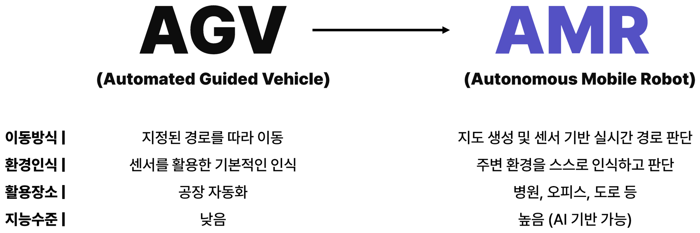
AGV vs AMR · 이동 방식 · 환경 인식 · 활용 장소 · 지능 수준
선만 따르는 로봇도 판단하는가
AGV · 바닥의 자석 테이프·선·QR을 따라간다 · 장애물 앞에서는 멈추고 기다린다
AMR · 라이다로 지도를 만들고 경로를 스스로 짠다 · 장애물을 돌아간다
포니봇 라인트레이싱은 AGV 방식 · 초음파 회피를 얹으면 AMR 쪽으로 반 걸음
4교시에 AGV를 만들고, 8교시에 반 걸음 나갑니다
그림: boundaryX AI 포니봇 교안 9~10차시 p.11 (부분, 첫 줄 오탈자 정리)
창고 로봇은 두 세대로 나뉘는데, 앞 세대인 AGV는 바닥의 자석 테이프나 선, QR 코드를 따라 달리다가 앞에 사람이 서면 멈춰서 비켜 주기만 기다립니다. 길은 바닥에 깔려 있고 로봇은 그걸 읽어 갈 뿐이니까요. 뒤 세대인 AMR은 라이다로 주변 지도를 그리고 목적지까지 길을 스스로 짜서 사람이 막아도 비켜 돌아갑니다. 길을 정하는 판단이 바닥에서 로봇으로 넘어온 게 두 세대를 가르는 차이입니다.
4교시의 포니봇은 AGV처럼 라인을 따라가는데, 라인 센서 둘이 선을 읽으면 "왼쪽만 검정이면 왼쪽으로" 같은 여러분의 규칙이 판단합니다. 거기에 초음파로 장애물을 보고 멈추거나 돌아가는 동작을 얹으면 AMR 쪽으로 반 걸음 나가는데, 8교시 미션이 그 반 걸음입니다. 지도를 만드는 진짜 AMR은 라이다가 있어야 하니 오늘은 거기까지 가지 않습니다.
교안 다음 쪽(9~10차시 p.12)에 장단점이 정리돼 있는데, 학생에게는 "바닥에 선을 그을 수 없는 곳이 어디인가"를 물으시면 AMR이 왜 필요한지 스스로 찾습니다. 병원 복도, 학교 급식실, 사람 집이 그 답입니다.
그림: boundaryX AI 포니봇 교안 9~10차시 p.11(AGV vs AMR 비교표), 장단점은 p.12. 크롭: img/oc/L9-10_p11_agv_vs_amr.png('AGV → AMR' 머리와 네 줄 표만. 제목 알약·'모바일 로봇의 미래! AMR' 문장·소년 캐릭터·워터마크 제외. 교안 첫 줄 '지정된 경로를 따라 이동' 뒤에 다음 줄 머리말 '환경인식'이 겹쳐 남아 있어 지우고 문장을 열 가운데로 옮김). 매트가 없는 연수장이면 4교시는 크루즈(초음파 거리 유지) 활동으로 대체되며, 그때는 이 장 노트의 "4교시 라인"을 "4교시 크루즈"로 바꿔 말함.
도입 · 바퀴 로봇 · 이미 곁에 있는 것들
바퀴 로봇은 이미 집과 공장, 거리에 있다
집 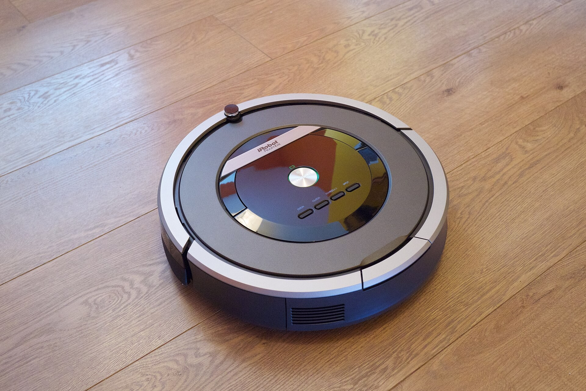
로봇청소기구형은 범퍼 규칙, 신형은 카메라로 양말·전선을 인식 공장 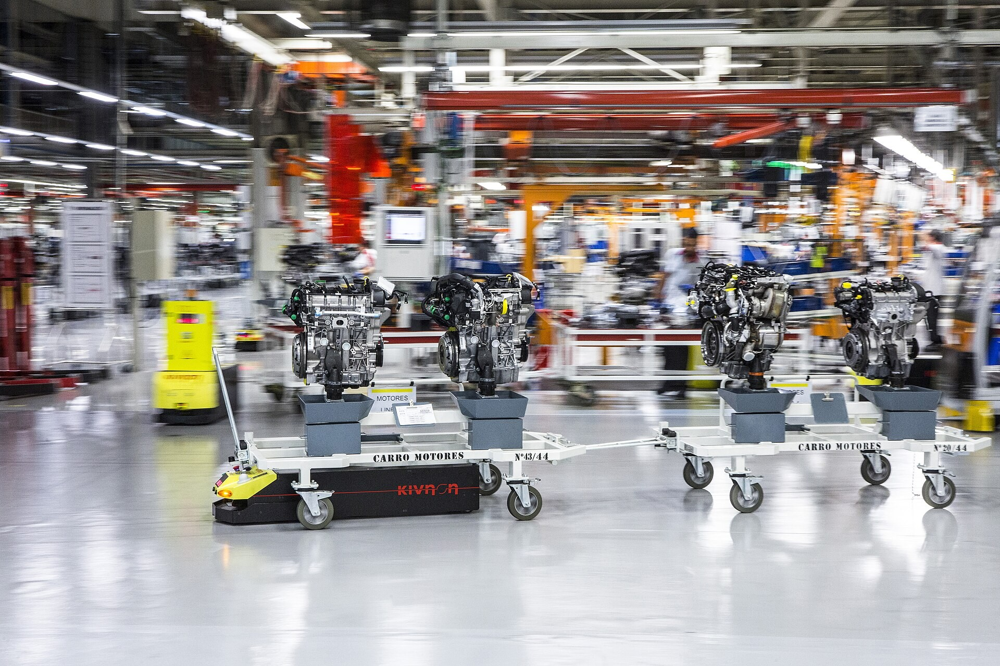
공장 AGV바닥 선을 따라 자재를 나른다 거리 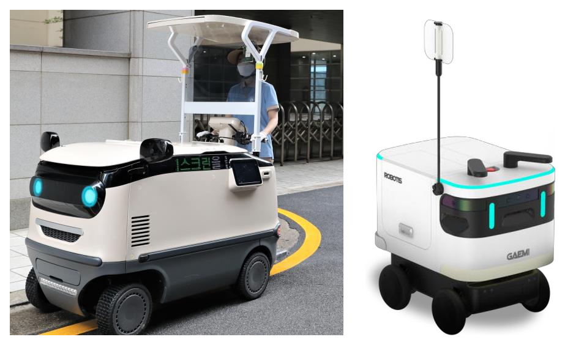
배달 로봇전동 카트 · 자율주행 배달 로봇 (교안 사례)
로봇청소기 하나만 봐도 규칙 세대와 학습 세대로 나뉜다
사진: Wikimedia Commons (manifest 참조) · 그림: boundaryX AI 포니봇 교안 9~10차시 p.8 (부분, 교안의 이미지 출처 표기: 한국야쿠르트 · 로보티즈)
학생에게 가장 가까운 바퀴 로봇은 집의 로봇청소기입니다. 이 한 종류 안에 오늘 연수의 축이 다 들어 있습니다. 구형은 범퍼에 부딪히면 방향을 바꾸는 규칙으로 돕니다. 피지컬컴퓨팅이지요. 신형은 카메라로 양말과 전선을 알아보고 피하고, 라이다로 집 지도를 그립니다. 피지컬AI입니다. 같은 제품군에서 세대가 갈립니다.
매트가 있어 4교시에 라인트레이싱을 하는 팀이라면, 그 주행은 공장에서 바닥 선을 따라 자재를 나르는 AGV와 같은 방식이고 학교라면 급식 카트를 떠올리시면 됩니다. 거리 그림은 교안의 배달용 전동 카트와 자율주행 배달 로봇이고, 서빙·순찰 로봇은 말로 덧붙이셔도 좋습니다. "이 중에 사람이 짠 규칙으로 판단하는 것과 데이터로 배워 판단하는 것을 나눠 보라"고 하시면 학생이 질문 ①을 제 손으로 풀어냅니다. 로봇청소기처럼 답이 둘로 갈릴 만한 것도 일부러 섞어 두세요.
사진: img/mb_roomba.jpg · img/mb_agv.jpg · Wikimedia Commons (manifest 참조). 그림: boundaryX AI 포니봇 교안 9~10차시 p.8 → img/oc/L9-10_p08_delivery_robots.png('서비스용 로봇' 칸의 원본 두 장만: 배달용 전동 카트(프레시 매니저) 사진 + 자율주행 배달 로봇 누끼를 같은 높이로 나란히. 가정용·산업용 사진, 알약·설명 상자·출처 줄·워터마크 제외). 교안 p.8에는 서빙·순찰 로봇 사진이 없음 — 노트의 '배달·서빙·순찰'은 말로만 덧붙일 것. 전동 카트는 사람이 몰고 배달 로봇은 스스로 간다는 차이가 '판단을 누가 만드나' 질문의 첫 예로 쓸 만함.
도입 · 바퀴 로봇 · 한국
우리 학생들이 일할 나라, 로봇 밀도 세계 1위
한국
1,012
싱가포르
770
중국
470
독일
429
일본
419
미국
295
세계 평균
162
제조업 노동자 1만 명당 산업용 로봇 대수 · IFR World Robotics 2024 (2023년 기준)
로봇은 세계 평균의 여섯 배인데 가르치는 사람은 적습니다
시간이 남을 때 보여 드리는 장입니다. 제조업 노동자 1만 명당 산업용 로봇 대수를 따지면 한국이 1,012대로 세계 1위이고, 세계 평균 162대의 여섯 배를 웃돕니다. 반도체·자동차·배터리 산업이 로봇을 많이 들여놓은 결과이고, 공장에는 산업용 팔 말고도 AGV·AMR이 함께 돌아다닙니다. 우리 학생들이 장차 일할 곳이 이런 나라인데, 로봇의 판단을 설계하는 쪽 교육은 충분할까요? 아직 얇습니다.
로봇팔 과정과 겹치는 장. IFR World Robotics 2024: 한국 1,012, 싱가포르 770, 중국 470, 독일 429, 일본 419, 미국 295, 세계 평균 162(2023년 기준). 연수 시점의 최신 보고서로 갱신.
도입 · 오늘 연수 전체의 지도
같은 로봇, 세 가지 두뇌
사람 조종 3교시 · 라디오 · 레벨 0 기울이면 간다. 판단은 전부 사람의 손에
규칙 (if) 2·4교시 · 피지컬컴퓨팅 거리 ≤ 10이면 정지. 멈출 조건을 사람이 적는다
학습 모델 5~8교시 · 피지컬AI 손 모양 30장을 데이터 삼아 판단을 배운다
몸은 두고 두뇌만 세 번 바꿉니다. 그 차이를 오늘 손으로 겪어 봅니다
틀리면 조종은 손을, 규칙은 코드를 고칩니다. 모델이 틀렸을 때 손볼 곳은 데이터입니다. 7교시에 이 셋째 칸을 집중해서 봅니다.
오늘 연수 전체를 한눈에 보는 지도인데, 포니봇 한 대에 두뇌만 세 차례 바꿔 끼웁니다. 3교시엔 사람이 마이크로비트를 기울여 라디오로 직접 모니까 판단이 고스란히 사람 손에 있습니다. 레벨로 따지면 0. 2교시에는 "15cm 안으로 들어오면 경보", 4교시에는 "10cm 이하면 정지" 같은 규칙을 블록에 심어 사람이 정한 기준대로 굴러가게 하는데, 이 단계를 피지컬컴퓨팅이라 부릅니다. 오후 5교시부터는 손 모양 사진 30장으로 가르친 모델의 판정을 받아 로봇이 움직이니, 판단의 근거가 데이터로 넘어간 피지컬AI 단계입니다.
세 칸을 가르는 가장 쉬운 기준은 틀렸을 때 어디를 고치느냐입니다. 조종이 틀리면 손을 고치고 규칙이 틀리면 코드의 숫자를 고치는데, 모델이 틀리면 데이터를 더 찍거나 기준값을 올려야 합니다. 학생이 "이건 AI예요?"라고 물으면 "틀렸을 때 뭘 고치니?"라고 되물어 보세요.
몸을 바꾸지 않는다는 점이 핵심입니다. 바퀴와 센서, 블록 편집기까지 종일 그대로라서 두뇌가 달라진 것만 뚜렷이 드러나거든요. 로봇을 세 종류나 장만하지 않아도 한 종류로 세 가지 판단 방식을 모두 다뤄 보는 수업 구조를 가져가시면 됩니다.
사진 없음(흐름도). 교시 번호는 편성표 기준. 이 장은 하루 중 3교시 머리, 5교시 머리, 8교시 정리에서 다시 비춤.
선택 체험 · 10분 · 도입
실제 판매 로봇을 브라우저에서 밀어 봅니다
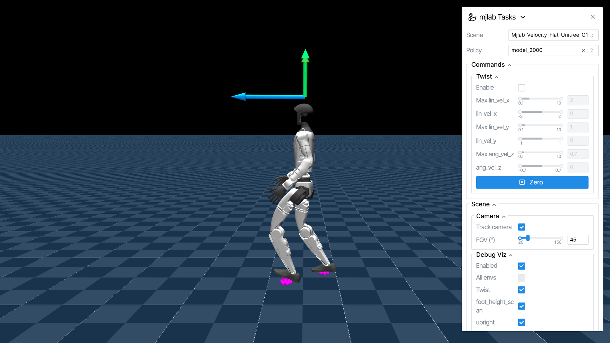
mjswan · Unitree G1, 오른쪽이 Scene·Commands 패널
Unitree G1 · MuJoCo 물리
Interact → Push · 몸통 클릭 = 밀기
Pull + Spring 슬라이더 = 끌기
Twist → Enable · lin_vel_x = 1 → 걷기
넘어지면 Reset · Scene에서 다른 로봇
'밀리면 버텨라'를 코딩한 사람은 없다
화면: 강사 캡처 2026-10-17 · 도구: ttktjmt · mjswan (MuJoCo · Unitree G1)
시간이 없으면 건너뛰거나 쉬는 시간 체험으로 안내합니다. 시간을 내려면 1교시 첫 다운로드 실습을 3분, 2교시 오토라이트 실습을 2분 줄이면 됩니다.
누가, 무엇으로 판단을 내리는지 앞에서 물었습니다. 이번에는 데이터에서 배운 판단으로 서 있는 로봇을 손수 밀어 보겠습니다. 화면의 Unitree G1은 실제로 시판되는 로봇인데, MuJoCo라는 물리 엔진에 얹어 브라우저 안으로 가져왔습니다. 오른쪽 패널 Interact를 Push에 맞추고 몸통을 클릭해 보세요. 로봇이 밀려 휘청하다가 다시 중심을 잡습니다. Pull로 바꾼 뒤 Spring 슬라이더를 높이면 끌려오고, 걷게 하려면 Commands의 Twist를 Enable하고 lin_vel_x를 1로 줍니다. ang_vel_z를 넣으면 돌고, 멈추려면 Zero, 넘어졌으면 Reset, 다른 로봇은 Scene에서 고릅니다.
화면에 적힌 손글씨를 보세요. '밀리면 버텨라'를 코딩한 사람은 없습니다. 시뮬레이션 속에서 로봇이 수없이 넘어지며 스스로 익힌 정책인데, 이렇게 배우는 방식을 강화학습이라고 합니다. 오늘 같은 포니봇을 세 가지 두뇌로 움직여 본다고 했죠. 사람 조종도 규칙도 아닌 세 번째, 학습된 모델이 몸을 움직이는 장면으로는 이 균형 잡기만 한 게 없습니다.
다만 학습 때 겪어 보지 못한 상황에서는 넘어집니다. 아주 세게 밀거나 걷는 중에 옆에서 밀 때가 그렇습니다. 이걸 분포 밖의 실패라고 부르는데, 오후에 여러분 손 모양 모델이 조명이 바뀌거나 다른 사람 손을 만나 틀리는 것도 여기에 들어갑니다. 다리를 움직이는 모델이든 카메라 영상을 분류하는 모델이든 학습한 범위를 벗어나면 똑같이 무너집니다.
화면: 강사 캡처 2026-10-17 (img/shot_mjswan.png). 도구: mjswan (ttktjmt, ttktjmt.github.io/mjswan, 2026-10-19 접속 확인) · MuJoCo WASM · Unitree G1 강화학습 정책. 이 장을 빼면 다음 장도 함께 뺍니다.
선택 체험 · 8분 · 팀당 1대
넘어뜨려 보고 걷게 한 뒤 다른 로봇으로
1 링크 열고 수십 초 대기 물리 + 신경망을 내 PC가 계산
2 Interact → Push, 몸통 클릭
3 Pull로 바꿔 끌기 · Spring 조절
4 Commands → Twist → Enable, lin_vel_x = 1
5 Zero 멈춤 · 넘어지면 Reset · Scene 바꾸기
ttktjmt.github.io/mjswan
열기 ↗
08:00 눌러서 시작 · 다시 누르면 멈춤 ↺ 넘어뜨리기 → 걷게 하기 → 다른 로봇
생각할 점 넘어뜨린 팀은 어떻게 했나요? 학습 때 겪지 않은 상황이었을 겁니다.
시간이 없으면 건너뛰거나 쉬는 시간 체험으로 안내합니다. 앞 장과 묶어 10분이며, 앞 장 설명을 2분 안에 끝내면 체험 8분이 나옵니다. 팀당 1대로 돌립니다. 물리와 신경망을 전부 PC가 계산하니 느린 노트북 여러 대보다 사양 좋은 한 대에 모여서 하는 편이 낫습니다.
8분 동안 팀별로 해 봅니다. 링크를 열면 로봇이 뜨기까지 수십 초 걸립니다. Interact를 Push로 바꾸고 몸통을 클릭해서 휘청하다 서면 성공입니다. Pull로 바꾸고 Spring을 조절해 끌어 본 다음, Commands에서 Twist를 Enable하고 lin_vel_x를 1로 두면 걷습니다. Zero로 멈추고, 넘어지면 Reset. 넘어뜨려 보고 걷게 해 본 뒤, 마지막으로 Scene에서 다른 로봇을 골라 다시 해 보면 됩니다.
돌면서 503이 뜬 자리가 있으면 새로고침해 줍니다. 클릭해도 안 밀리면 Interact가 View로 돼 있는지 확인합니다. 저사양 PC는 느립니다. 물리와 신경망을 전부 PC가 돌리기 때문인데, 느린 것 자체도 배울 거리입니다. 포니봇의 손 모양 판단도 노트북 브라우저가 계산해서 블루투스로 보내 주니까요.
끝나면 이렇게 물어봅니다. 넘어뜨린 팀은 어떻게 했나요? 대개 아주 세게 밀었거나 걷는 중에 옆에서 밀었을 텐데, 모두 학습 때 겪지 않은 상황입니다. 안 본 손이나 안 본 조명 앞에서 손 모양 모델이 틀리는 것도 이와 다르지 않으니, 7교시 모델 개선 때 이 이야기를 다시 꺼냅니다.
도구: mjswan (ttktjmt, GitHub Pages, 2026-10-19 접속 확인). 로봇: Unitree G1, MuJoCo 물리, 강화학습 보행 정책. 리허설: 연수장 PC에서 로딩 시간과 프레임 확인.
도입 · 학습 로봇의 최근 흐름 · 1/4
남이 80종을 가르친 모델, COCO-SSD를 빌려 쓴다
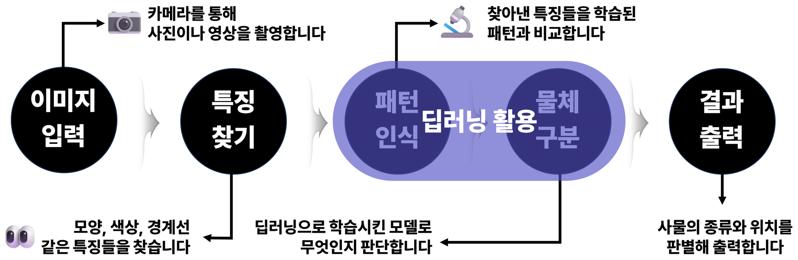
사물 인식 5단계 · 이미지 입력 → 특징 찾기 → 패턴 인식 → 물체 구분 → 결과 출력
사람 · 컵 · 의자 · 자동차 …
COCO 데이터셋 33만 장으로 미리 학습된 모델 · 80종을 바로 알아본다
가르칠 게 없는 대신 내가 정한 것도 없다
7교시 선택 · 사람을 따라가는 포니봇
오늘은 AI를 써 보고 만들어도 봅니다
그림: boundaryX AI 포니봇 교안 16차시 p.12 (부분)
여기부터 네 장은 확장인데, 학습 로봇의 최근 흐름을 네 갈래로 보되 교실에서 직접 쓰는 건 첫째 갈래인 사전학습 모델뿐입니다. COCO라는 사진 33만 장짜리 데이터셋으로 미리 학습된 모델이라서 사람, 컵, 의자, 자동차 같은 80종을 바로 알아봅니다. 제가 만든 도구의 사물 인식 페이지에서 이 모델이 브라우저로 돌아가고, 7교시 선택 활동에서 사람을 따라가는 포니봇을 만들 때 씁니다.
따로 가르칠 게 없으니 5분이면 돌아가는 대신 내가 정해 둔 것도 없어서, 80종 밖의 물건은 끝내 알아보지 못하고 틀려도 데이터를 손볼 수가 없습니다. 오후에 만들 손 모양 모델은 그 반대라서 느리고 보는 범위도 좁지만 클래스를 내가 정하고 틀린 건 내가 고칩니다. 학교에서는 사물 인식처럼 바로 되는 사전학습 AI를 쓰실지, 손 모양처럼 직접 만드는 모델을 쓰실지, 아니면 둘 다인지 지금 마음속으로 하나 골라 두세요. 8교시에 같은 질문을 투표로 여쭙고 지금 고른 답과 견주어 봅니다.
그림: boundaryX AI 포니봇 교안 16차시 p.12 → img/oc/L16_p12_object_recognition_flow.png(흐름도만: 원·딥러닝 알약·화살표·단계 설명·아이콘. 제목 알약·말풍선 아이콘·워터마크·쪽 번호·저작권 줄 제외). COCO-SSD: COCO 2017 데이터셋(약 33만 장, 80 클래스), TensorFlow.js 모델. microbit-ai-control object 페이지가 사용. 출처 수준: 공개 모델 문서. 노트 끝 질문은 오후 8교시 투표(e_which, 3지: 사전학습 AI · 내가 만든 모델 · 둘 다)의 예고. 오전에는 투표 없이 질문만 던짐.
도입 · 학습 로봇의 최근 흐름 · 2/4
시범을 보거나 넘어지면서 배운다
모방학습 · 2023~사람이 수십 번 시범 → 동작이 데이터 → 로봇이 따라 한다 (ALOHA · SO-101) 강화학습 · 2019~시뮬레이션에서 수백만 번 넘어지며 보상을 최대화 (Unitree G1 보행)
규칙을 적지 않기는 둘 다 같다. 시범이든 보상이든 데이터로 배운다
사진: TheRobotStudio SO-ARM100(Apache-2.0) · 화면: mjswan(ttktjmt) 강사 캡처
둘째와 셋째 갈래로 넘어가면, 모방학습에서는 사람이 보여 준 시범 동작이 그대로 데이터가 되고 로봇은 그걸 따라 합니다. 왼쪽 사진은 사람이 손으로 움직이는 작은 리더 팔입니다. 이걸 움직이면 따로 둔 팔로워 팔이 똑같이 따라오는데, 그렇게 남긴 기록 수십 번이 학습 데이터입니다. 2023년 스탠퍼드 ALOHA 이후 저가 로봇팔로 번졌고 다음 주 로봇팔 과정에서 체험하실 수 있습니다.
강화학습은 시뮬레이션 안에서 수백만 번 넘어지면서 "넘어지지 않으면 점수"라는 보상을 최대화하는 방식입니다. 오른쪽 휴머노이드가 걷는 법이 이렇게 만들어졌습니다. 누구도 "밀리면 버텨라"를 코딩하지 않았습니다. 바퀴 로봇에서도 좁은 길을 지나가거나 울퉁불퉁한 바닥을 가는 정책이 이렇게 학습됩니다.
오늘 할 손 모양 학습은 이 둘과 달리 사진마다 이름표를 붙여 가르치는 지도학습입니다. 규칙을 적지 않기는 셋 모두 마찬가지이고, 데이터로 사진을 쓰는지 동작이나 보상을 쓰는지만 갈립니다.
사진: SO-101 리더 팔 · TheRobotStudio SO-ARM100 · Apache-2.0 (img/shot_so101_leader.webp). 화면: mjswan(ttktjmt, MuJoCo WASM, Unitree G1 강화학습 보행 정책) 강사 캡처 2026-10-17 (img/shot_mjswan.png). 출처 수준: ALOHA(Zhao et al. 2023), LeRobot SO-100/101(Hugging Face 2024~25). 로봇팔 과정에서 체험 장으로 다시 나옴.
도입 · 학습 로봇의 최근 흐름 · 3/4
시뮬레이션에서 배워 실물로 옮기는 sim-to-real
브라우저 속 물리 시뮬레이터 · 공식(ENGINEERED)과 학습(LEARNED)을 나란히
실물은 느리고 부서지는 데다 비싸다
시뮬레이션에서 수천 대를 동시에, 실시간보다 빠르게 연습
조명·마찰·무게를 일부러 흔들어 가르친다 · 실물의 차이를 견디게
시뮬레이션에서 안 본 것은 실물에서도 틀린다
로봇 0대 학교의 길이기도 합니다. 시뮬레이터에서 먼저
화면: sim2browser(rotvie) · 강사 캡처
실제 로봇을 수백만 번 훈련시키는 건 무리입니다. 느리고 망가지기 쉬운 데다 돈도 많이 드니까요. 요즘 학습 로봇 대부분이 시뮬레이션 속에서 배우는데, 물리 엔진 안에서는 로봇 수천 대를 동시에, 실시간보다 훨씬 빠르게 돌릴 수 있습니다. 문제는 시뮬레이션과 실물 사이의 간극입니다. 마찰이며 조명이며 모터 반응까지 다 어긋나니 학습하는 동안 조명과 마찰과 무게를 일부러 뒤흔들어 "이 정도 차이는 견디라"고 가르칩니다. 이걸 통틀어 sim-to-real이라고 하죠.
화면은 브라우저 안에서 도는 로봇팔 시뮬레이터입니다. 공식으로 푸는 쪽과 학습된 정책이 나란히 있어서 둘의 차이를 눈으로 볼 수 있습니다. 로봇팔 과정에서 체험 장으로 씁니다.
로봇이 0대인 학교라면 이 이야기를 흘려들을 수 없습니다. 마이크로비트 시뮬레이터가 센서값을 흉내 내 주니 블록은 거기서 미리 짜고, 손 모양 모델도 노트북 하나로 학습됩니다. 로봇은 한 대만 돌려 가며 확인하면 되니, 규모만 작을 뿐 이 흐름이 sim-to-real 그대로입니다. 8교시 운영안에서 다룹니다.
화면: sim2browser(rotvie, rotvie.github.io/sim2browser) 강사 캡처 2026-10-17 (img/shot_sim2browser.png). sim-to-real·도메인 랜덤화 일반 설명(OpenAI 2017~, NVIDIA Isaac 등). 출처 수준: 일반 문헌. 수치 없음.
도입 · 학습 로봇의 최근 흐름 · 4/4
한 모델로 보고 듣고 움직이는 VLA
한 모델 (VLA) 중간에 사람이 읽을 글자가 없다 말 “빨간 컵을 집어” 영상 카메라 한 장면 언어 인코더 말 → 숫자 묶음 비전 인코더 그림 → 숫자 묶음 행동 디코더 로봇 동작 관절 값 VLA 구조 · 2023~영상 + 말 → 한 모델 → 로봇 동작 (RT-2 · OpenVLA · π0) CES 2025"피지컬 AI의 ChatGPT 순간" · 엔비디아 기조연설
오늘은 판단(모델)과 행동(블록)이 떨어져 있어서 학생이 '왜'를 들여다볼 수 있다
그림: 강사 작성(Natblida99의 CC0 구조도를 우리말로 다시 그림) · 사진: Pronoia(CC0) · Wikimedia Commons
마지막 갈래가 VLA, 비전·언어·행동 모델입니다. 카메라 영상과 "빨간 컵을 집어"라는 말을 한 모델이 받아서 로봇 관절 동작을 바로 출력합니다. 2023년 구글 딥마인드 RT-2가 시작이고, 2024년 OpenVLA가 공개됐으며 π0도 이듬해 초 내려받을 수 있게 됐습니다. 엔비디아가 CES 2025에서 "피지컬 AI의 ChatGPT 순간"이라고 한 것이 이 흐름을 두고 한 말입니다.
VLA를 오늘 우리 구조 옆에 놓아 볼까요? 오늘은 노트북에 있는 손 모양 모델이 판단을 맡고 포니봇 속 블록이 몸을 움직이는데, 둘 사이에는 go, stop 같은 글자 한 줄만 오갑니다. VLA에서는 한 모델이 판단부터 행동까지 다 해 버려서 중간에 글자가 끼어들 틈이 없고, 성능은 더 강력해도 로봇이 왜 그렇게 움직였는지 사람이 읽을 방법이 없습니다. 오늘 구조는 그 전 단계이지만 학생이 '왜'를 들여다볼 수 있는 단계는 여기뿐입니다. 블록만 열면 "거리가 30보다 작으면"이 보이니까요.
과장은 피하셨으면 합니다. 2026년 현재 VLA는 연구실과 일부 시범 현장에 있고, 휴머노이드 시연 영상 상당수는 뒤에서 사람이 조종합니다. 이 이야기는 비판적 읽기 장에서 다시 합니다.
그림: 인라인 SVG(강사 작성). 원본은 General architecture of a vision-language-action model · Natblida99 · CC0 (Wikimedia Commons)이며 가로로 긴 영문 도식이라 칸에 맞춰 우리말로 다시 그림(img/rv_A_vla_architecture.png는 더 쓰지 않음) / 사진: Jensen Huang - Nvidia Keynote - CES 2025 Las Vegas (1) · Pronoia · CC0 (Wikimedia Commons). 연도: RT-2 2023(Google DeepMind), OpenVLA 2024, π0 2024.10 발표 · 2025.2 가중치 공개(Physical Intelligence, openpi). CES 사진은 무대 아래쪽(PHYSICAL AI 곡선과 연사)이 보이게 object-position 50% 92%. 출처 수준: 각 논문·공개 발표. 로봇팔 과정과 겹치는 장.
도입 · 틀린 AI · 그리고 책임
멈추지 않은 설계의 책임은 누가 지는가
2018
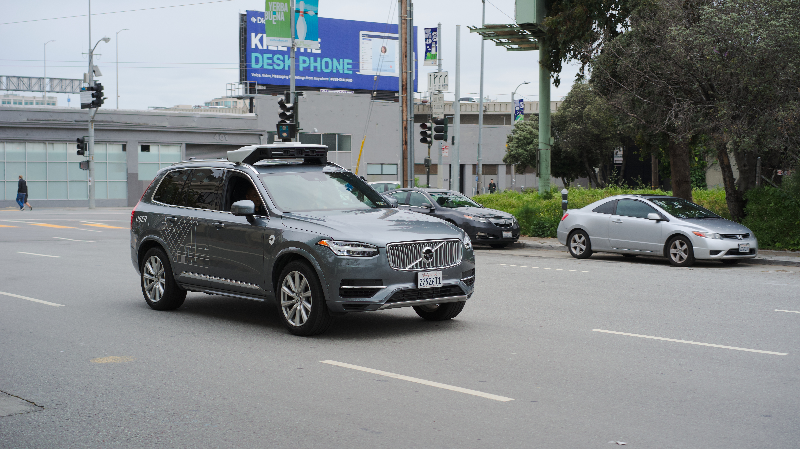
우버 자율주행 시험차량(샌프란시스코) · 2018년 3월 애리조나 템피에서 같은 종류의 차량이 보행자 사망 사고 모델은 늦게 알아봤고, 긴급 제동은 꺼져 있었고, 사람은 화면을 보고 있었다
사진: Uber self-driving Volvo, San Francisco · Dllu · CC BY-SA 4.0 · Wikimedia Commons
잘 되는 이야기만 하고 넘어갈 수는 없습니다. 2018년 3월 애리조나 템피에서 우버 자율주행 시험차량이 밤길을 건너던 보행자를 치어 숨지게 했습니다. 조사해 보니 세 겹이 다 뚫려 있었는데, 모델은 보행자를 자전거로, 다른 물체로 바꿔 가며 분류하다 늦게야 알아봤습니다. 차에 원래 있던 긴급 제동은 자율주행 모드에서 꺼져 있었고 시험 운전자는 그때 화면을 보고 있었습니다.
책임은 어디로 갔을까요. 형사 책임은 시험 운전자만 졌고 회사는 기소되지 않았습니다. 모델을 만든 사람도, 긴급 제동을 끈 사람도 법정에 서지 않았습니다. 이 결과가 옳은지는 지금도 논쟁 중이고, 8교시 토의 주제입니다.
이 사고가 오늘 수업에 남기는 교훈은 설계에 관한 것인데, 애매한 상황에서 어떻게 할지 정해 주지 않으면 모델은 가장 그럴듯한 답을 골라 그대로 밀고 갑니다. 긴급 제동처럼 낮은 수준의 안전을 모델 밖에 따로 마련해 두지 않으면 모델이 틀리는 순간 기댈 곳이 사라집니다. 제가 하루 내내 "지시는 AI, 안전은 센서"를 입에 달고 다니는 건 이 사고 때문입니다.
로봇팔 과정과 겹치는 장. 사진: Uber self-driving Volvo, San Francisco · Dllu · CC BY-SA 4.0 (Wikimedia Commons). 사례: 2018.3.18 우버 템피 사고, NTSB 조사 보고(2019). 시험 운전자 2023년 유죄 인정(과실치사 아닌 위험 초래 혐의, 보호관찰). 지역·시의성에 맞게 교체 가능.
도입 · 틀린 AI · 공식 교안의 코드를 읽는다
신뢰도를 안 보면 오분류도 최고 속도 255
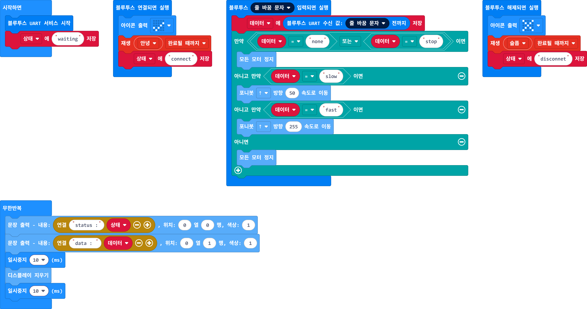
공식 교안 14차시 · 입력되면 실행 덩이 · 신뢰도 확인 없음
나머지 덩이 넷은 글로 시작하면 · 블루투스 UART 서비스 시작, 상태 = waiting
이 코드에 없는 것 모델이 얼마나 확신했는지 묻는 칸
'어린이 보호'를 'fast'로 잘못 읽으면 그대로 255. 오늘은 애매하면 멈춥니다
블록: boundaryX AI 포니봇 교안 14차시 정답 코드(hex) MakeCode 렌더
멀리 갈 필요도 없이 오늘 교안 속에도 비슷한 구멍이 있는데, 14차시 표지판 미션의 정답 코드가 그렇습니다. 카메라가 표지판을 보고 none, stop, slow, fast 가운데 하나를 보내면 로봇은 그 글자에 따라 정지하거나 50으로, 혹은 255로 달립니다. 블록만 보면 깔끔한데 모델이 얼마나 확신했는지를 묻는 칸이 아예 빠져 있습니다.
분류 모델은 항상 뭔가 하나를 고릅니다. 어린이 보호 표지판이 조명 탓에 51% fast, 49% slow로 나와도 모델은 fast를 보내고 로봇은 최고 속도 255로 달립니다. 템피의 차가 보행자를 자전거로, 다른 물체로 바꿔 가며 분류하다 늦게 알아본 것과 다를 게 없지요. 이 코드를 교실에서 그대로 쓰면 학생은 "AI가 틀리면 로봇이 더 빨리 간다"는 걸 배우게 됩니다.
그래서 오늘 설계 원칙은 "애매하면 멈춘다"입니다. 제가 만든 도구는 신뢰도가 기준에 못 미치면 보내지 않고 같은 결과가 몇 번 연속 나올 때만 보내며, 로봇 쪽 블록은 모르는 글자가 오거나 연결이 끊기면 정지합니다. fast도 255가 아니라 120으로 두는데, 5교시에 공식 코드와 오늘 코드를 나란히 놓고 이 차이를 다시 봅니다.
블록: img/blocks/L14_sign.png (boundaryX AI 포니봇 교안 14차시 정답 hex를 MakeCode로 렌더). 교안 원문 fast=255, 신뢰도 처리 없음, 끊김 시 정지 없음 → 연수 코드 P8_sign_drive(slow 50 · fast 120 · 그 외 정지 · 끊김 정지). 오후 5교시 대조 장(확장)과 짝. 10-20 재점검: 덩이 다섯 개를 한 판에 줄여 글자가 8~9px이던 것을 '블루투스 … 입력되면 실행' 덩이만 CSS 창으로 잘라 크게 싣고(글자 약 13px, 그림 파일은 그대로), fast → 255 두 줄에 빨간 테두리. 시작하면·연결·해제·무한반복 덩이는 오른쪽 글로 옮김(해제되면 덩이에 모터 정지가 없음).
분류 모델은 '모르겠다'를 못 합니다.합이 1인 확률은 반드시 하나를 고릅니다.
오늘의 안전장치: 신뢰도 기준값 · 같은 결과 N회 연속 · 모르는 명령은 정지 · 끊기면 정지 · 그리고 센서.
애매하면 멈춘다
왜 이렇게 틀리는지 짧게 말씀드리면, 분류 모델의 마지막 층 softmax가 확률의 합을 1로 만들기 때문입니다. 어떤 입력이 들어와도 반드시 하나가 가장 크게 나오니 빈 책상을 보여 줘도 go나 stop 중 하나를 고릅니다. '모르겠다'라는 출력이 애초에 없으니까요. 오늘 손 모양에 쓰는 KNN 방식도 마찬가지여서 가장 가까운 샘플 다섯 개 가운데 많은 쪽을 고를 뿐, 멀다고 안 고르지는 않습니다. 가까운 다섯 개는 처음 보는 손 앞에서도 늘 있으니 신뢰도가 100%로 나올 수도 있습니다.
그러니 안전장치를 바깥에 겹겹이 겁니다. 신뢰도가 기준값 아래면 안 보내고 같은 결과가 몇 번 연속 나와야 보내며, 로봇은 모르는 글자가 오거나 연결이 끊기면 멈춥니다. 이 모든 것과 별개로 초음파가 30cm 앞에서 로봇을 세웁니다. 신뢰도 기준값은 5교시에 처음 정해 보고, 7교시에는 팀마다 기준값이나 연속 확인 횟수를 바꿔 보며, 8교시 미션에서는 센서가 마지막 줄을 지킵니다.
클래스 설계에서도 같은 원칙이 나옵니다. 5교시에는 go·stop·left·right 네 클래스로 시작하고, 손이 없을 때나 어정쩡한 자세일 때를 맡을 '중립' 클래스는 7교시에 한 팀이 직접 넣어 정지로 보내 봅니다. 교안 15차시의 '차렷'이 후진이었던 걸 오늘은 정지로 바꾸는 이유입니다.
로봇팔 과정과 겹치는 장(softmax 설명). handpose는 KNN(최근접 이웃)이라 softmax와 메커니즘은 다르지만 "반드시 하나를 고른다"는 점은 같음. 웹앱 신뢰도 = 가장 가까운 샘플 5개 중 득표율(20% 단위), 기본 기준 60%, 연속 확인 기본 4회. 안전장치 목록은 microbit-ai-control 전송 규칙과 P 시리즈 코드 기준.
도입 · 틀린 AI · 데이터 밖에서
AI는 늘 데이터 밖에서 틀립니다
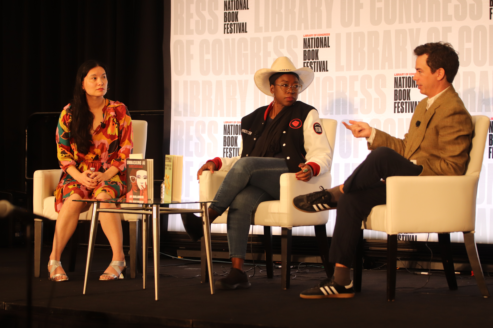
조이 부올람위니(가운데) · Gender Shades 연구자 · 2024 미 의회도서관 북페스티벌
2018
얼굴 인식의 편향
어두운 피부 여성 오류율 34.7%
밝은 피부 남성 오류율 0.8%
성능은 학습 데이터의 분포를 그대로 따라갑니다
사진: Taylordw (CC0), Wikimedia Commons
시간이 있을 때 꺼내는 장입니다. 2018년 조이 부올람위니와 팀닛 게브루의 Gender Shades 연구입니다. 상용 얼굴 분석 AI 세 가지를 성별과 피부색으로 나눠 시험했더니 어두운 피부 여성에서 오류율이 최대 34.7%, 밝은 피부 남성은 0.8%였습니다. 모델이 나빠서가 아니라 학습 데이터에 어두운 피부 여성이 적었기 때문입니다.
오후에 이 일을 작게나마 직접 겪으실 텐데, 한 사람 손만 보고 배운 손 모양 모델은 옆 사람 손에서 틀리고 밝은 창가에서 찍어 만든 모델은 어두운 구석에서 틀립니다. 성능은 학습 데이터의 분포를 그대로 따라갑니다. 7교시 실패 원인 목록에 "누구 손으로, 어디서 찍었나"를 넣는 것도 그래서입니다.
로봇팔 과정과 겹치는 장. 사진: Joy Buolamwini (center) at Library of Congress Book Festival 2024 · Taylordw · CC0 (Wikimedia Commons). 수치: Buolamwini & Gebru (2018), Gender Shades, FAT* 2018.
화면 속 AI는 틀려도 아무 일이 없습니다.바퀴 달린 AI는 틀리면 책상에서 떨어집니다.
정확도가 물리적 결과로 드러납니다. 실패가 보여야 원인 분석이 시작되고 안전과 책임도 설계로 풀 문제가 됩니다.
그래서 바퀴입니다
왜 굳이 몸이 있어야 할까요? 챗봇은 틀려도 화면에 틀린 글자가 남는 게 전부지만, 손 모양 모델이 틀리면 로봇은 엉뚱한 데로 내달리다가 책상 모서리에서 떨어지고 맙니다. 학생 눈에는 정확도 90%가 "열 번에 한 번은 떨어진다"는 장면으로 보이고, 그 순간부터 왜 틀렸는지 묻기 시작합니다. 데이터와 기준값 이야기는 그 질문 끝에 저절로 딸려 나옵니다.
안전이나 책임 같은 주제도 손에 잡힐 만큼 구체적이 됩니다. "AI 윤리"로 토론을 벌이는 대신 "애매하면 멈추게 할까, 느리게 갈까"를 블록으로 고르니까요. 교사가 그 경험을 먼저 치러 보는 날이 오늘이고, 거기엔 바퀴 로봇이 딱입니다. 팔보다 싸고 떨어지면 단번에 티가 나는 데다 책상 하나면 충분합니다.
발표자 정리. 로봇팔 덱의 "왜 몸인가" 장을 바퀴 로봇에 맞게 고침. 책상에서 떨어지는 사고 방지: 3교시 안전 장(책상 가장자리 테이프, 바닥 주행 권장)과 연결.
도입 · 학교 현장 · 2022 개정 교육과정
교육과정은 이미 '만드는' 수업을 요구합니다
초 실과 · 「로봇」 센서로 감지하고 움직이는 로봇
중 정보 · 「피지컬 컴퓨팅」 센서 → 판단 → 액추에이터를 블록으로
고 정보 · 「인공지능」 데이터로 모델을 만들고 평가 · 5~8교시
같은 교구로 초·중·고가 다른 단원을 합니다. 두뇌만 바꾸면 됩니다
학교는 어디쯤 와 있는지 보겠습니다. 2022 개정 교육과정에서 초등 실과에 로봇 단원이 있고, 중학교 정보에 피지컬 컴퓨팅이, 고등학교 정보에 인공지능이 있습니다. 성취기준 번호를 외우실 필요는 없고, 단원명만 보셔도 오늘 활동이 어디에 꽂히는지 보입니다.
초등 실과 로봇 단원은 센서로 감지하고 움직이는 로봇을 다루니 오늘 2·3·4교시에 6교시 손 모양 조종을 더해 수업 자료로 바로 쓰실 수 있습니다. 중학교 피지컬 컴퓨팅은 센서에서 판단을 거쳐 액추에이터로 가는 구조를 블록으로 만드는 단원이라 2·4교시 센서 규칙이 중심이고, 8교시 미션처럼 손 모양 출발을 얹으면 인공지능 단원으로 확장됩니다. 고등 인공지능 단원은 데이터로 모델을 만들고 평가하는 게 골자여서 5교시부터 8교시까지가 통째로 들어가고, 신뢰도나 클래스 설계, 실패 분석 같은 말도 교과서 용어와 맞습니다.
두뇌만 바꾸면 같은 교구로 세 학교급이 서로 다른 단원을 할 수 있다는 점이 오늘 구조의 장점입니다. 활동 하나하나에 학교급 꼬리표를 달아 두었으니 8교시에 조립해 보겠습니다.
학교급별 조각은 오후 8교시 수업 설계 장(초 3·6교시, 중 2·4·8교시, 고 5·7교시)과 겹치게 맞춤. 2022 개정 교육과정 단원명만 사용(실과 「로봇」, 정보(중) 「피지컬 컴퓨팅」, 정보(고) 「인공지능」). 성취기준 번호는 쓰지 않음. 고등 선택 과목명은 시도별 편제 확인.
학생은 AI를 쓰는 데 익숙하지만만든 경험이 없습니다.
챗봇·필터·추천은 매일 쓰지만 클래스를 정하고 데이터를 모아 모델이 틀리는 걸 본 적은 없습니다. 오늘 오후에는 교사가 먼저 겪어 봅니다.
도구보다 경험이 문제
학생은 AI를 쓰는 데는 이미 능숙해서 챗봇으로 숙제를 하고 사진 필터를 쓰고 추천 영상을 봅니다. 하지만 클래스를 정하고 데이터를 모아서 모델이 틀리는 걸 보고 데이터를 고쳐 다시 학습시켜 본 경험은 거의 없습니다. 만들어 본 적이 없으니 왜 틀리는지도 모르고, 그러니 믿거나 무시하거나 둘 중 하나가 됩니다.
그런 경험을 가장 작은 크기로 맛보는 게 오후의 손 모양 학습입니다. 클래스 네 개를 정하고 30장씩 찍어서 틀리는 걸 보면 더 찍고 기준값도 높여 보는데, 이 과정이 한 시간이면 끝납니다. 어떤 도구를 쓰더라도 이 경험은 교사가 설계해 주지 않으면 생기지 않습니다.
발표자 정리. 디지털교과서 관련 언급은 연수 시점 정책 상황에 맞게.
도입 · 학교 현장 · 교사가 하는 일
AI를 만드는 교실에서 교사가 하는 일
1 문제와 데이터 규칙으로는 못 푸는 문제를 고른다 · 누구 손으로, 어디서, 몇 장 찍을지 학생이 정하게 한다
2 기준 신뢰도 기준값 · 정지 거리 · 멈춤 조건을 토의로 정한다 · '멈춤의 비용'을 학생 언어로
3 안전과 실패 책상 가장자리 · 끊김 정지 · 얼굴 금지 · 실패를 AI 탓과 로봇 탓으로 가르는 말을 준다
지식 설명은 그 뒤에. 실패한 뒤 설명하면 10분, 먼저 하면 50분
이 구조에서 교사가 하는 일을 세 묶음으로 보겠습니다. 먼저 문제와 데이터입니다. 규칙으로 쉽게 풀리는 문제로는 AI 수업이 안 됩니다. "거리가 10 이하면"으로 되는 걸 굳이 모델로 할 이유가 없지요. 손 모양처럼 규칙으로 못 적는 문제를 고른 뒤 누구 손으로 어디서 몇 장 찍을지는 학생이 정하게 합니다. 데이터 규칙을 학생이 직접 세워 두면 7교시 실패 분석은 저절로 따라옵니다.
다음은 기준인데요. 신뢰도 기준값이나 정지 거리, 멈춤 조건에는 정답이 없으니 토의로 정합니다. 기준을 높게 잡을수록 안전하긴 해도 로봇이 툭하면 서 버리고, 낮추면 잘 달리는 대신 가끔 틀립니다. 이 '멈춤의 비용'을 학생 눈높이로 풀어 주는 게 교사 일입니다.
마지막은 안전과 실패. 책상 가장자리와 연결 끊김 정지부터 카메라에 얼굴이 찍히지 않게 하는 개인정보까지 챙깁니다. 실패했을 때 "모델이 틀렸나, 전송이 늦었나, 모터가 안 돌았나"를 가를 수 있는 말도 학생에게 쥐여 주고요. 지식 설명은 그다음입니다. KNN이 뭔지, softmax가 뭔지는 학생이 틀려 본 뒤에 설명하면 10분이면 되는데 먼저 하면 50분이 걸리고, 오늘 덱도 그 순서로 짰습니다.
발표자 정리. 세부는 5교시(클래스·데이터), 7교시(실패 분석), 3교시(안전)에서 실습.
도입 · 학교 현장 · 학생과 함께 읽기
기사 제목 말고 만든 사람의 말을 읽는다
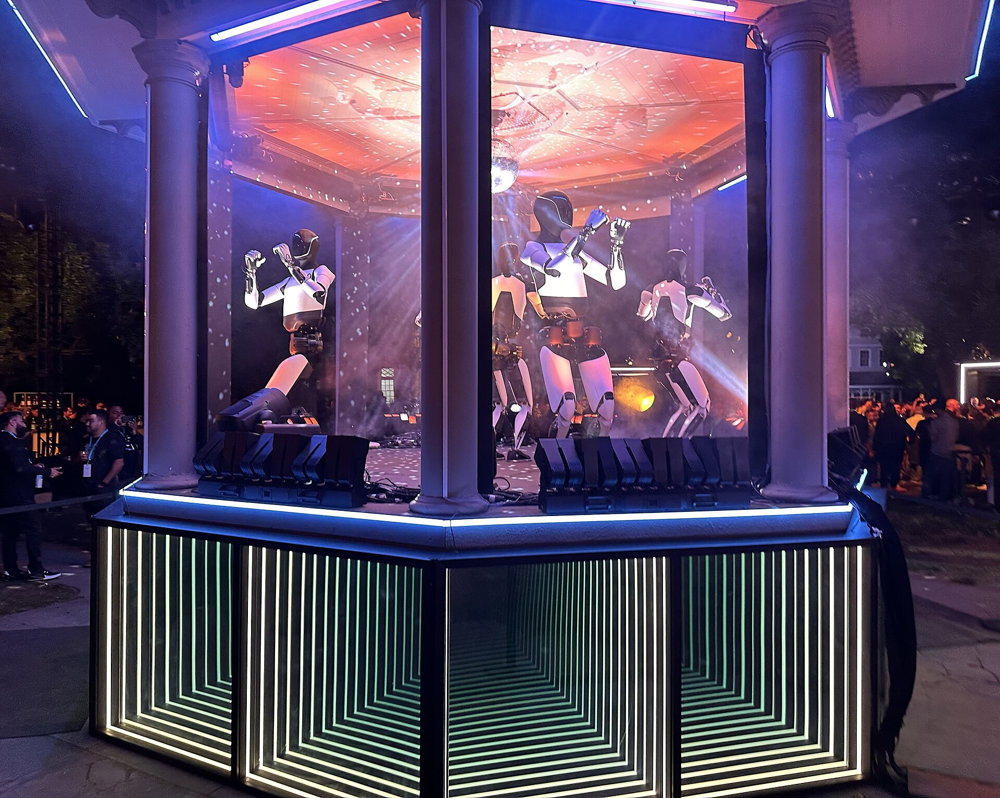
2024년 10월 테슬라 행사의 옵티머스 · 행사 뒤 "원격으로 사람이 조종했다"는 보도
시연 영상에서 물어볼 것
원격 조종인가, 사전 녹화인가, 자율인가 · 셋 다 '로봇이 움직였다'로 보도된다
몇 번 중 몇 번 성공했나 · 영상은 성공한 한 번
어떤 환경에서 · 조명·바닥·물건이 바뀌어도 되나
오늘 저녁 여러분은 '만든 사람'이 됩니다. 그때 이 질문이 몸에 붙습니다
사진: Robo-dancing dance dance revolution (Tesla Optimus, 2024-10) · Steve Jurvetson · CC BY 2.0 · Wikimedia Commons
학생과 함께 뉴스를 읽을 때 쓰실 틀입니다. 2024년 10월 테슬라 행사에서 휴머노이드 옵티머스가 춤추고 음료를 따르고 손님과 대화했습니다. 영상이 전 세계로 퍼지고 며칠 뒤 상당 부분을 사람이 원격으로 조종했다는 보도가 나왔습니다. 처음 기사 제목은 "로봇이 춤췄다"였는데, 만든 쪽은 "사람이 뒤에서 움직였다"는 이 보도를 부인하지 않았지요.
시연 영상 앞에서는 먼저 원격 조종인지, 미리 녹화한 동작인지, 스스로 판단한 것인지 묻게 하세요. 이 셋은 모두 "로봇이 움직였다"로 보도됩니다. 이어서 몇 번 중 몇 번 성공했는지 묻습니다. 영상에 담긴 건 성공한 한 번이니까요. 마지막으로 조명과 바닥과 물건이 바뀌어도 되는지 묻습니다. 이 질문들은 오늘 아침에 본 레벨 표와 세 가지 두뇌를 그대로 옮겨 온 것입니다.
오늘 저녁이면 여러분도 직접 만들어 본 사람이 됩니다. 열 번 중 몇 번 됐는지 세고 조명이 바뀔 때 틀리는 것도 본 데다 손 모양이 애매하면 멈추게 설계까지 하실 테니까요. 시연 영상을 제대로 읽으려면 이런 경험이 있어야 하고, 학생도 마찬가지입니다.
사진: Robo-dancing dance dance revolution (Tesla Optimus, 2024-10 'We, Robot' 행사) · Steve Jurvetson · CC BY 2.0 (Wikimedia Commons). 원격 조종 보도: 2024.10 블룸버그 등 복수 언론, 테슬라 측 공식 부인 없음. 출처 수준: 언론 보도. 리허설: 연수 시점의 더 최근 사례가 있으면 교체.
도입 · 학교 현장 · 평가 설계
AI를 만드는 순서는 탐구·설계 과정과 모양이 같다
문제 정의 클래스 · 기준 go·stop·left·right
데이터 수집 · 분리 누구 손 · 어디서 · 몇 장
모델 · 적용 학습 · 로봇 연결 신뢰도 기준 + 블록 조건문
평가 · 개선 실패 가르기 · 변인 통제 하나만 바꾼다
평가는 실패를 얼마나 잘 분석했는지로
성공률로 점수를 매기면 학생은 시험용 손 모양을 학습 데이터에 넣습니다. "무엇을 바꿨고 왜 바뀌었는지"를 적게 하면 통제변인을 배웁니다.
시간이 있을 때 보는 장입니다. 문제 정의, 데이터, 모델과 적용, 평가와 개선으로 이어지는 순서가 익숙하지 않으신가요? 과학 탐구의 가설·변인 통제·결론 도출이나 기술의 공학 설계 과정과 겹칩니다. 문제 정의 단계에서 클래스를 정하고 7교시처럼 중립 클래스를 더할지도 여기서 정하며, 데이터 단계에서는 누구 손으로 어디서 몇 장을 찍을지 정한 뒤 학습용과 시험용을 가릅니다. 모델을 로봇에 연결할 때는 신뢰도 기준과 블록 조건문이 판정을 행동으로 이어 주고, 평가에서는 실패를 AI 문제와 로봇 문제로 가른 뒤 하나만 바꿉니다.
평가를 어떻게 짜느냐가 특히 중요합니다. 성공률로 점수를 매기면 학생들은 시험에 나올 손 모양을 학습 데이터에 섞어 점수를 올리거든요. "무엇을 바꿨고 왜 바뀌었는지"를 쓰게 하면 통제변인이 몸에 붙는데, 7교시 변수 실험이 그 평가지 원형입니다. 실패가 드러나도록 평가를 짜 주세요.
로봇팔 과정과 겹치는 장(손 모양 과제로 고침). 2022 개정 교육과정 과학 탐구 과정 · 기술 공학 설계 과정과의 대응.
하루 흐름 · 8교시
몸부터 익히고 판단은 오후에
1 09:20 마이크로비트·MakeCode 기초 로봇의 두뇌를 손에 쥔다 마이크로비트 · 전용 MakeCode
2 10:20 센서를 활용한 제어 기준값은 재서 정한다 조도·초음파 값 읽기 · if 규칙 · LED·OLED
3 11:20 포니봇 기본 주행 사람이 조종한다 메카넘 8방향 · 사각형 주행
4 12:10 센서 기반 주행 미션 규칙대로 판단한다 크루즈(거리 유지) 또는 라인트레이싱
5 14:10 머신러닝과 분류 손 모양을 가르친다 클래스 설계 · 30장 · 신뢰도 기준값
6 15:10 AI 모델로 로봇 제어 내 손 모양이 로봇을 움직인다 블루투스 연결 · go/stop/left/right → 주행
7 16:10 모델 개선과 확장 틀린 것을 데이터로 고친다 실패 가르기 · 변수 실험(기준값·연속 확인·중립)
8 17:10 자율주행 미션·나눔 지시는 AI, 안전은 센서 go → 30cm 정지 → 마지막 방향으로
점심 13:10~14:10 · 교시 사이 10분(4교시는 휴식 포함 60분) · 쉬는 시간마다 충전
오전 네 교시 동안은 포니봇이라는 몸과 친해집니다. 1교시에 마이크로비트와 전용 MakeCode를 띄워 첫 코드를 내려받아 보고, 2교시엔 센서값을 읽은 뒤 기준값을 재서 if 규칙을 씁니다. 메카넘 바퀴로 달려 보고 라디오로 조종하는 건 3교시 몫이고, 4교시에는 매트가 있으면 라인트레이싱, 없으면 크루즈를 골라 규칙이 판단하는 주행을 완성합니다.
점심 뒤에는 그 몸 위에 여러분이 학습시킨 모델을 얹는데, 5교시에 노트북 앞에서 손 모양 네 가지를 가르치고 공식 교안 코드와 오늘 코드를 맞대 보면 6교시엔 그 손짓이 블루투스를 타고 로봇을 움직입니다. 7교시는 팀마다 변수 하나씩을 바꿔 가며 틀린 걸 데이터로 바로잡는 시간입니다. 8교시 미션에선 손 모양 지시를 따르다 장애물 앞에서 센서가 멈춰 세우는 자율주행을 완성하고 학교 운영안까지 씁니다.
점심은 13시 10분부터 한 시간이고 교시 사이에는 10분씩 쉽니다. 3교시와 4교시 사이에는 쉬는 시간이 따로 없어서 4교시 60분 안에서 10분을 쉬고 들어갑니다. 포니봇은 쉬는 시간마다 충전 어댑터를 꽂아 둡니다. 어댑터 불이 빨강이면 충전 중, 초록이면 완료입니다.
연수 편성표(2026-11-21). 배터리 지속 시간은 리허설에서 실측해 "쉬는 시간마다 충전"이 충분한지 확인. 4교시 둘 중 하나: 매트 유무에 따라.
오늘의 구조
같은 로봇에 두뇌를 세 번 갈아 끼웁니다
① 사람 조종 3교시 · 라디오 기울이면 간다
② 규칙 2·4교시 · 센서 + if 거리 · 조도 · 라인 → 블록이 판단
③ 학습 모델 5~8교시 · 손 모양 내가 가르친 모델이 지시한다
지시는 AI, 안전은 센서. 8교시 미션에서 ②와 ③이 한 로봇 안에서 만납니다.
손 모양 클래스 이름(go · stop · left · right)은 5교시에 정하면 저녁까지 그대로 씁니다. 8교시 미션 코드에도 4교시에 짠 것과 같은 '가까우면 멈춘다' 규칙이 30cm로 들어 있습니다.
오늘의 구조를 한 장으로 정리하면, 3교시의 사람 조종과 2교시·4교시의 규칙 판단을 거쳐 5교시부터 학습 모델이 지시를 맡습니다. 8교시 미션에서는 ②와 ③이 한 로봇 안에서 만나는데, 손 모양 모델이 출발과 방향을 지시하고 초음파와 블록 규칙이 장애물 앞에서 멈춥니다. 모델이 틀리거나 연결이 끊겨도 장애물 앞에서는 센서가 로봇을 세웁니다. 지시는 AI, 안전은 센서. 오늘 가장 많이 반복할 문장입니다.
오늘 쓸 말을 먼저 정리해 드리겠습니다. 클래스, 샘플, 신뢰도 기준값, 연속 확인, 중립 클래스, 센서 기준값, 조건문, 그리고 감지·판단·행동·학습. 4교시에 익힌 '가까우면 멈춘다' 규칙은 8교시 미션 코드에도 그대로 들어갑니다. 모델은 출발과 방향만 정하고, 장애물 앞에서 멈추는 일은 끝까지 센서 규칙이 맡습니다.
그럼 1교시로 들어가겠습니다. 로봇의 두뇌, 마이크로비트부터입니다.
발표자 정리. 8교시 미션 정의는 WRITER_GUIDE 4절(P3_hand_autodrive)과 일치. 6교시는 새 프로젝트로 시작하고 8교시는 강사 코드 P3(30cm 정지)를 받으므로 4교시 코드를 이어 쓴다고 말하지 않음. 신뢰도 기준은 7교시 가 팀이 바꿔 봄. 이 장 다음에 B 파트 1교시 머리가 옴.
1
1교시 · 09:20~10:10
마이크로비트와 MakeCode 기초 — 몸을 먼저 익힙니다
편성표: 개발환경 구성 및 기초 실습
하드웨어 투어 10분 → 편집기 열기 5분 → 첫 다운로드 8분 → OLED 출력 12분 → 입력·처리·출력 → 묻기
로봇은 아직 안 달립니다
1교시에는 로봇을 달리게 하지 않습니다. 하루 동안 같은 로봇에 세 가지 두뇌를 넣어 볼 텐데, 그러려면 몸이 어떻게 생겼는지와 코드가 PC에서 어떻게 넘어가는지부터 손에 익어야 합니다. 첫 다운로드 길을 한 번 뚫어 두면 나머지 일곱 교시도 모두 그 길로 다닙니다.
하드웨어를 10분 둘러보고 전용 편집기로 하트 하나를 내려보냅니다. 그다음 OLED에 글자와 숫자를 찍는 연습까지 마치면 2교시에 센서값을 읽을 준비가 됩니다.
연수 편성표(2026-11-21). 책상마다 포니봇 1대·USB 케이블·충전 어댑터가 있는지 시작 전에 확인.
1교시 · 하드웨어 투어 · 1/2
바퀴 넷에 모터 넷, 모서리마다 LED 하나
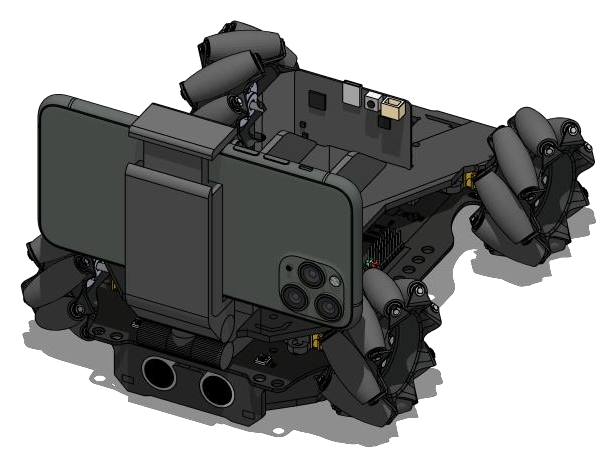
AI 포니봇마이크로비트 V2 + 메카넘휠 4 + 초음파·라인·컬러 + OLED + LED 4 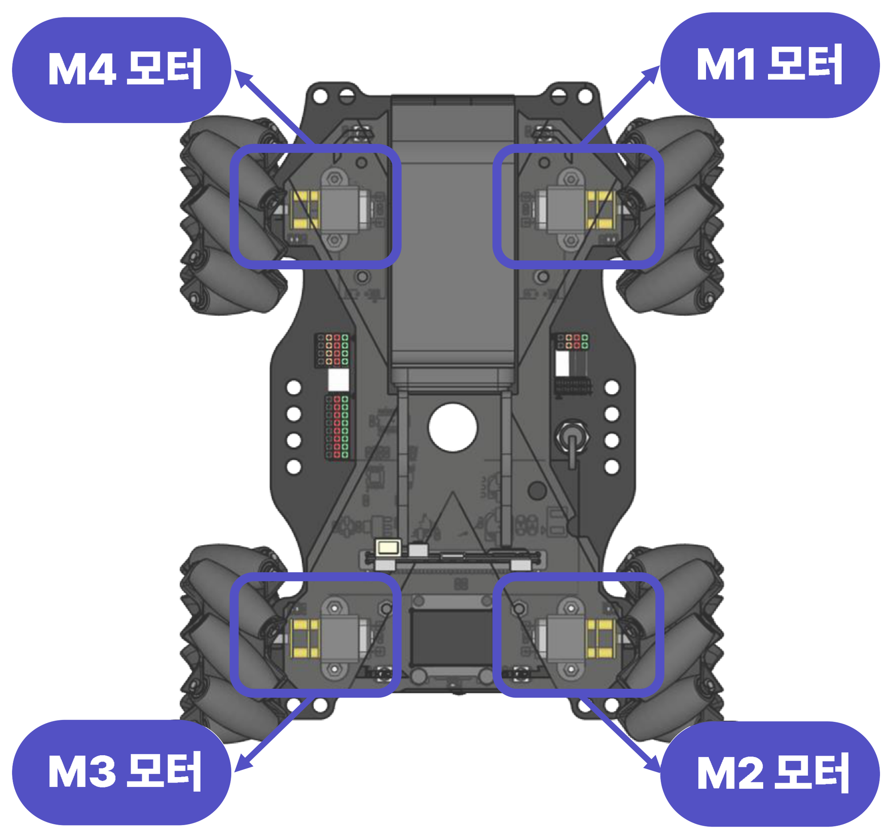
모터 M1~M4M1 우상 · M2 우하 · M3 좌하 · M4 좌상 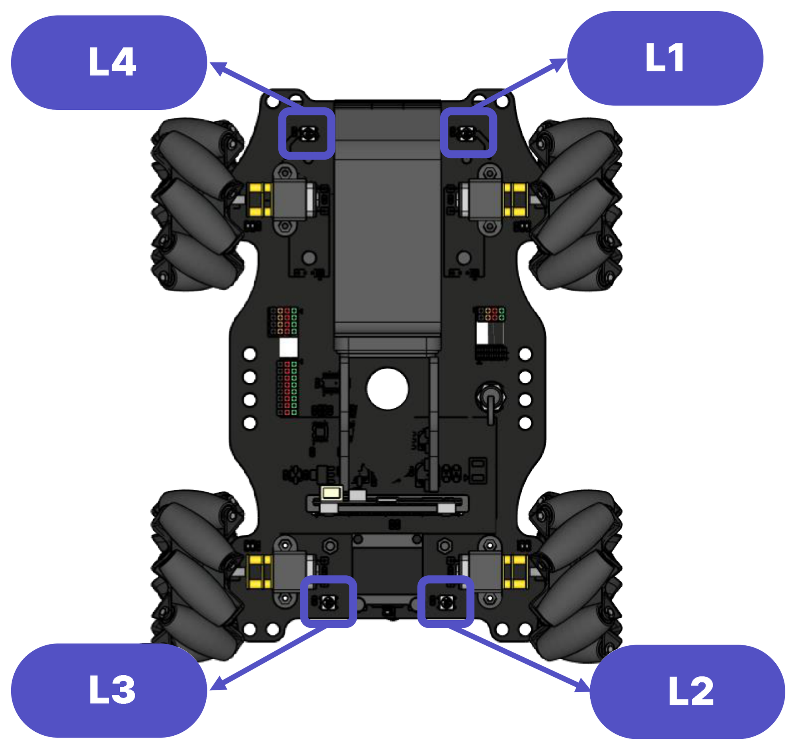
LED L1~L4L1 우상 · L2 우하 · L3 좌하 · L4 좌상 · 코드의 0번째 = L1
바퀴마다 모터가 따로 있어 옆으로도 대각선으로도 갑니다
그림: boundaryX AI 포니봇 교안 1차시 p.1 · 3~4차시 p.13 · 5~6차시 p.9 (부분, 3~4차시 p.13 라벨 정정)
몸부터 보겠습니다. 가운데 세로로 꽂힌 것이 마이크로비트 V2이고 그 아래 보드가 포니봇 본체입니다. 바퀴는 메카넘휠이라 바퀴마다 모터가 따로 달렸고, 네 모터를 어느 방향으로 돌리느냐에 따라 앞뒤뿐 아니라 옆걸음과 대각선으로도 움직이거든요. 그 조합은 3교시에 직접 짜 봅니다.
모터 번호는 M1이 오른쪽 앞, M2 오른쪽 뒤, M3 왼쪽 뒤, M4 왼쪽 앞입니다. 교안 원본 도면에는 왼쪽 위에도 M3라고 잘못 적혀 있어 화면 그림은 M4로 고쳐 두었습니다. LED도 같은 순서로 L1부터 L4까지 모서리에 하나씩 있고, 코드에서는 0번째부터 세니까 0번째가 L1입니다.
포니봇 블록은 이 보드에 명령을 보내는데, 블록 하나로 모터 넷을 한꺼번에 돌릴 수도 있고 하나씩 돌릴 수도 있습니다. 번호를 알아 두면 로봇이 이상하게 돌 때 어느 바퀴 탓인지 바로 짚어 냅니다.
그림: img/oc/L1_p01_ponybot_render.png(교안 1차시 p.1 표지 안 렌더 원본, E 파트와 같은 파일) · img/oc/L3-4_p13_motor_layout_m4_b.png(3~4차시 p.13 윗면 도면과 M1~M4 알약만. 제목 띠·설명 상자·워터마크 제외. 왼쪽 위 알약의 '3'을 같은 교안 5~6차시 p.9 'L4' 알약의 '4' 글자 모양으로 바꿔 'M4'로 라벨 정정) · img/oc/L5-6_p09_led_layout_b.png(5~6차시 p.9 윗면 도면과 L1~L4 알약만. '첫번째~네번째 LED' 손글씨·오른쪽 실물 사진·말풍선 제외. 확인: L1 우상 · L2 우하 · L3 좌하 · L4 좌상). 모터·LED 번호: WRITER_GUIDE 4절.
1교시 · 하드웨어 투어 · 2/2
앞을 보는 초음파, 바닥을 보는 라인 센서
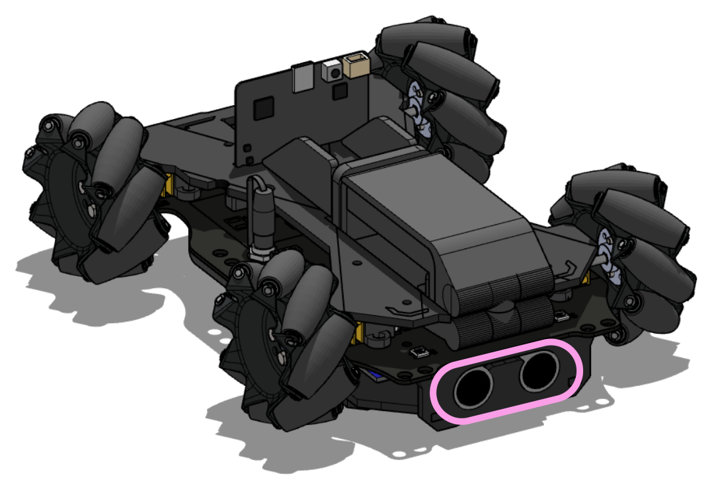
초음파 거리 센서 · 앞 하단 두 눈약 2~400cm · 소리를 쏘고 돌아오는 시간으로 거리 계산 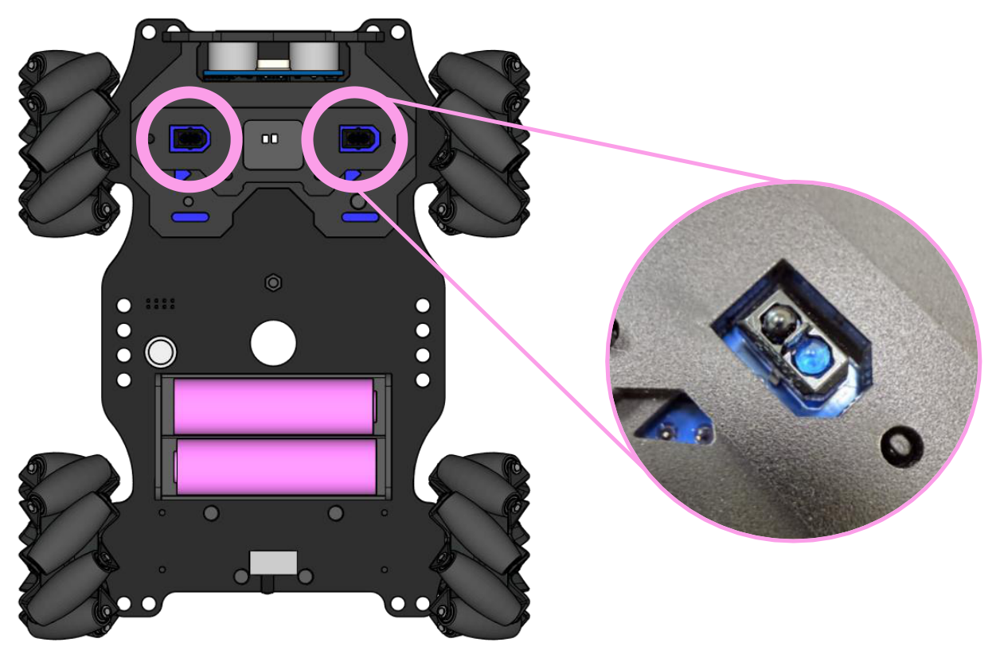
라인 센서 · 하판 앞 좌우 2개적외선 반사 · 12mm 이내 · 검정 1, 흰색 0
오늘 오후 AI가 '가라'고 해도 멈추게 하는 건 이 센서들입니다
그림: boundaryX AI 포니봇 교안 7~8차시 p.11 · 9~10차시 p.14 (부분)
센서는 앞을 보는 쪽과 바닥을 보는 쪽으로 나뉩니다. 앞 하단의 두 눈은 초음파 거리 센서로, 한쪽이 소리를 쏘면 다른 쪽이 받아서 그 사이 시간으로 약 2cm에서 400cm까지 거리를 셈합니다. 2교시 주차 경보는 이 센서로 만듭니다.
하판 앞쪽 좌우의 라인 센서 두 개는 바닥에 적외선을 쏴서 흰 바닥에서는 반사되고 검은 선에서는 흡수되는 차이를 읽습니다. 동작 거리가 12mm 안이라 로봇을 들어 올리면 값이 이상해집니다. 같은 하판 앞 중앙에는 빨강·초록·파랑 값을 따로 읽는 컬러 센서가 하나 더 있고 4교시 매트 주행에서 둘 다 씁니다.
오후에 손 모양이나 표지판을 보고 AI가 출발 신호를 보내도 앞을 막는 장애물은 초음파가 잡아 세우고, 선을 벗어나는 건 라인 센서가 붙잡습니다. 높은 수준의 지시를 AI에게 맡기더라도 낮은 수준의 안전은 끝까지 센서 몫으로 두는 구조를 오늘 내내 지킵니다.
그림: img/oc/L7-8_p11_ultrasonic_ring_b.png(교안 7~8차시 p.11 왼쪽 렌더와 분홍 테두리만. 점선 화살표·'초음파 거리 감지 센서' 글자·오른쪽 반사 도식·설명 상자 제외) · img/oc/L9-10_p14_line_sensor_where.png(9~10차시 p.14 밑면 도면과 확대 사진, C 파트와 같은 파일). 컬러 센서 위치는 9~10차시 p.26(4교시에서 사용).
1교시 · 준비
꽂고, 켜고, 충전하기
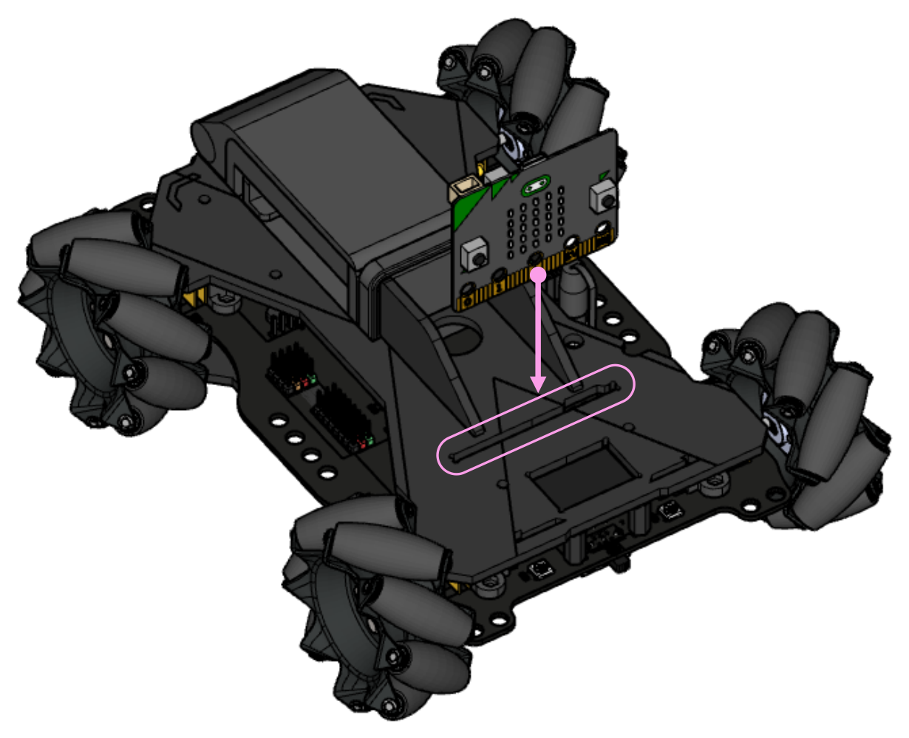
① 결합본체 슬롯에 세로로, LED 면이 앞으로 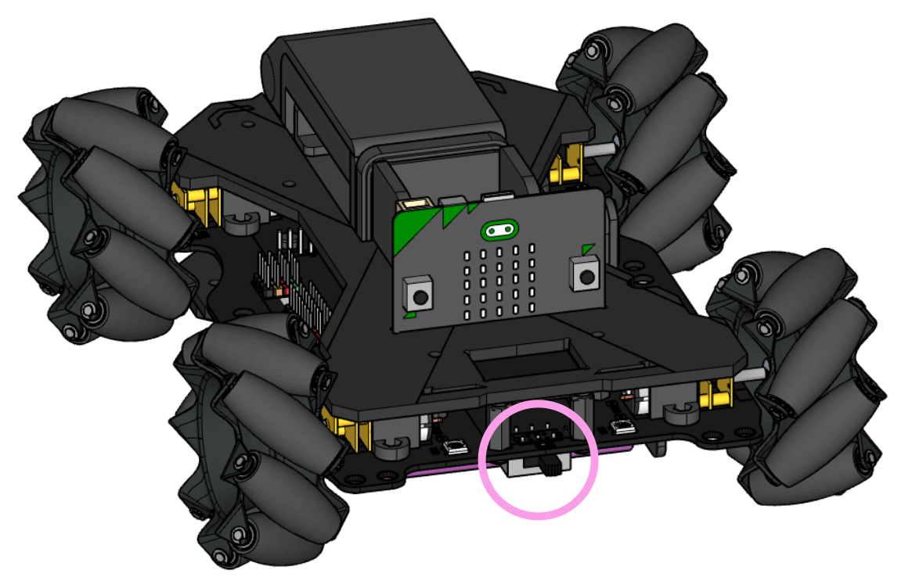
② 전원 스위치켜야 모터·센서·LED·OLED가 동작 · 파란 표시등 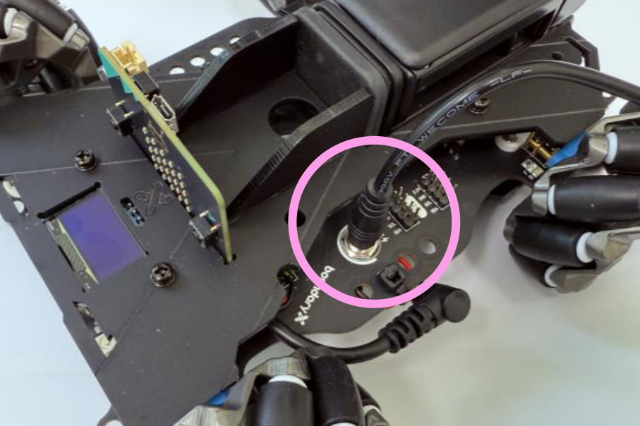
③ 충전전원 커넥터 분리 → 충전구에 어댑터 · 빨강 충전 중 · 초록 완료
다운로드는 됐는데 로봇이 가만히 있으면, 스위치부터 봅니다
그림: boundaryX AI 포니봇 교안 1차시 p.24 · p.25 · p.26 (부분)
마이크로비트는 본체 슬롯에 세로로 꽂는데 핀 쪽이 아래로, LED 면이 로봇 앞쪽을 보게 끝까지 밀어 넣습니다. 반대로 꽂히지는 않지만 덜 꽂히면 OLED가 안 켜집니다.
하단의 전원 스위치가 꺼져 있으면 마이크로비트만 USB 전원으로 살아 있을 뿐 모터·센서·LED·OLED는 전부 죽어 있습니다. 오늘 가장 많이 나올 질문이 "다운로드는 됐는데 왜 안 움직여요"인데, 답의 절반이 이 스위치입니다. 반대로 다운로드할 때는 스위치를 꺼 두는 편이 안전한데 그 까닭은 잠시 뒤 첫 다운로드에서 설명합니다.
충전은 전원 커넥터를 먼저 빼고 충전구에 어댑터를 꽂습니다. 어댑터 LED가 빨강이면 충전 중, 초록이면 끝입니다. 점심시간에 전부 충전해 두겠습니다.
그림: img/oc/L1_p24_microbit_insert_b.png(1차시 p.24 왼쪽 결합 전 렌더와 분홍 화살표·슬롯 표시만. 오른쪽 결합 후 렌더·'쏘옥' 손글씨·설명 상자 제외) · img/oc/L1_p25_power_switch_b.png(p.25 왼쪽 렌더와 스위치 분홍 원만. 오른쪽 전원 표시등 사진과 손글씨·설명 상자 제외) · img/oc/L1_p26_charge_port_b.png(p.26의 02 사진 안쪽만, '02' 번호·단계 알약·01/03 그림 제외). 리허설 확인:완충 상태에서 모터 구동 시 실제 지속 시간(교안에 수치 없음), 점심 1시간 충전으로 오후가 되는지.
1교시 · 개발환경
boundaryx.io → EDU → AI 포니봇 코딩하기
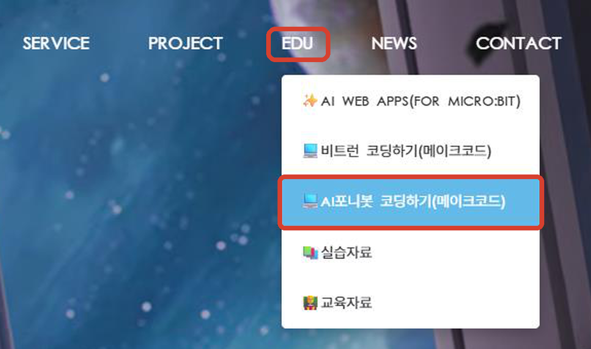
① boundaryx.io → [EDU]「AI 포니봇 코딩하기(메이크코드)」 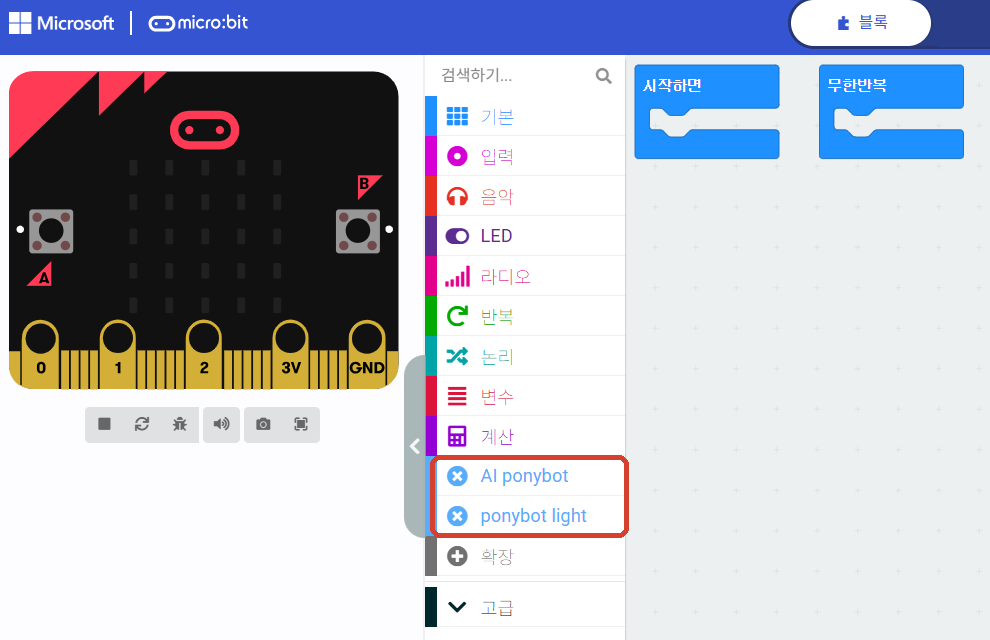
② 팔레트에 두 줄이 보이면 준비 끝「AI ponybot」 「ponybot light」
확장이 미리 들어간 편집기입니다. 두 줄이 안 보이면 다음 장
그림: boundaryX AI 포니봇 교안 1차시 p.27 · p.28 (부분, 빨간 테두리는 덱 표시)
편집기는 마이크로비트 MakeCode인데 포니봇 확장이 미리 들어간 주소로 엽니다. 구글에서 바운더리엑스를 검색해 boundaryx.io에 들어간 뒤 위 메뉴 EDU에서 「AI 포니봇 코딩하기(메이크코드)」를 누릅니다. 주소는 책상 위 카드에 적어 두었습니다.
열리면 왼쪽 팔레트부터 봅니다. 기본·입력·음악 같은 마이크로비트 카테고리 아래에 「AI ponybot」과 「ponybot light」 두 줄이 보이면 준비는 끝났습니다. 바퀴·센서·OLED 블록은 AI ponybot에, LED 블록은 ponybot light에 들어 있습니다. 두 줄이 안 보이면 확장이 안 붙은 일반 MakeCode를 연 것이니 다음 장의 방법으로 직접 넣습니다.
브라우저는 Chrome이나 Edge여야 합니다. 뒤에 나오는 USB 다운로드와 오후의 블루투스 연결이 둘 다 이 두 브라우저에서만 되니까요.
그림: img/oc/L1_p27_boundaryx_edu_menu_b.png(1차시 p.27 쪽 안 원본 홈페이지 화면에서 위 메뉴와 펼친 EDU 목록만. 구글 검색 화면·'클릭' 말풍선·보라 상자 대신 덱 빨강 테두리) · img/oc/L1_p28_makecode_ponybot_palette_v2.png(p.28 쪽 안 원본 MakeCode 화면의 왼쪽 부분. '코딩 준비 완료!!' 캐릭터·점선 화살표·보라 상자 대신 덱 빨강 테두리. _b에서 오른쪽 위 반쯤 잘린 'JavaScript' 탭을 머리 띠 색으로 지움). 리허설 확인:연수장 네트워크에서 boundaryx.io 접속과 MakeCode 로딩(첫 로딩 수십 MB), 전날 모든 PC에서 한 번 열어 캐시.
확장 · 학교 PC용 · 1교시
전용 링크가 막혔을 때, 확장을 직접 넣습니다
1 makecode.microbit.org → 새 프로젝트
2 팔레트 맨 아래 [확장] 클릭 또는 ⚙ → 확장
3 검색창에 boundary-x/ai_ponybot_basic 입력 → 카드 클릭
4 팔레트에 「AI ponybot」 「ponybot light」가 생겼는지 확인
5 프로젝트 이름을 붙여 저장 → 다음부터는 홈의 '내 프로젝트'에서 열기
makecode.microbit.org
열기 ↗
확장은 프로젝트마다 붙습니다
학교에서 학교 필터가 boundaryx.io를 막아도 makecode.microbit.org와 GitHub만 열리면 됩니다.
이 장은 연수장에서는 건너뛰고 학교에 돌아가서 쓰실 때를 위한 장입니다. 전용 링크가 열리지 않거나 학교 필터에 걸릴 때 일반 MakeCode에 확장을 직접 넣는 방법입니다.
makecode.microbit.org에서 새 프로젝트를 만들고 팔레트 맨 아래 [확장]을 누릅니다. 검색창에 boundary-x/ai_ponybot_basic을 그대로 입력하면 GitHub에서 확장을 받아 와 카드가 뜨고, 카드를 누르면 팔레트에 포니봇 카테고리가 생깁니다. 확장은 프로젝트 단위로 붙어서 새로 만들 때마다 다시 넣어야 합니다. 한 번 넣은 프로젝트에 이름을 붙여 저장해 두고 복제해 쓰는 편이 빠릅니다.
오후에 블루투스를 쓸 때는 이 확장 중 LED 부분이 bluetooth와 충돌해 제거 경고가 뜨는데, 그 처리는 6교시에서 합니다.
확장 이름: boundary-x/ai_ponybot_basic (v1.0.2, WRITER_GUIDE 4절). 리허설 확인: 이 확장 하나로 「ponybot light」까지 같이 들어오는지, 아니면 light가 별도 확장인지. 사진 없음(절차 장).
1교시 · 실습 8분 · 1인 1PC
하트 하나를 마이크로비트에 내려보냅니다
1 포니봇 전원 OFF 확인 → 마이크로비트와 PC를 USB로 연결
2 [기본] → 시작하면 안에 아이콘 출력 ♥
3 [다운로드] → 「장치 연결」 창 → BBC micro:bit CMSIS-DAP 선택 → 연결 한 번 연결하면 그 뒤로는 버튼 한 번
4 뒷면 노란 LED가 깜빡이다 멈추면, 앞면에 하트
5 연결창이 안 뜨면 내려받은 .hex 파일을 MICROBIT 드라이브에 복사 · "Connection failed"면 오른쪽 그림
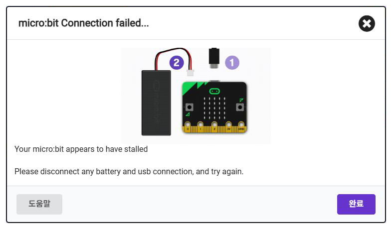
Connection failed → 포니봇 전원 OFF → USB 재연결 → 다시 다운로드 08:00 눌러서 시작 · 다시 누르면 멈춤 ↺ 다운로드는 전원 OFF, 확인은 전원 ON
생각할 점 지금 막힌 자리는 학교 컴퓨터실에서도 똑같이 막힙니다. 어떻게 막혔는지 적어 두세요.
그림: boundaryX AI 포니봇 교안 1차시 p.29 (부분)
8분 드리겠습니다. 포니봇 전원이 꺼져 있는지 보고 마이크로비트를 USB로 PC에 연결한 뒤 [기본]에서 「시작하면」 블록 안에 「아이콘 출력」을 넣고 하트를 고릅니다. 그다음 아래 [다운로드]를 누르면 「장치 연결」 창이 뜨는데, 브라우저 목록에서 BBC micro:bit CMSIS-DAP를 고르고 연결을 누르세요. 한 번 짝을 지어 두면 그 뒤로는 다운로드 버튼 한 번으로 바로 들어갑니다. 뒷면 노란 LED가 빠르게 깜빡이다가 멈추면 앞면에 하트가 뜹니다.
연결창이 안 뜨는 PC에서는 .hex 파일이 다운로드 폴더에 떨어지는데, 그 파일을 탐색기의 MICROBIT 드라이브로 복사해도 똑같이 들어갑니다. 느려도 어느 PC에서나 되는 길이니 학교에서는 이쪽을 기본으로 가르쳐도 됩니다.
"micro:bit Connection failed"가 뜨면 포니봇 쪽 배터리가 마이크로비트에 전원을 넣고 있어서 다운로드가 막힌 경우입니다. 포니봇 전원을 끄고 USB를 뺐다가 다시 꽂은 뒤 다시 다운로드하면 되는데, 이 일을 피하려고 오늘 내내 다운로드는 전원 OFF에서 하고 확인할 때 전원을 켭니다.
막힌 자리를 적어 두시라고 한 건 그 자리가 학교 컴퓨터실에서도 그대로 되풀이되기 때문입니다. 끝나고 묻기에서 모읍니다.
그림: img/oc/L1_p29_connection_failed_b.png(1차시 p.29 쪽 안 원본 화면에서 대화상자만. 빨간 테두리·화살표·'배터리가 연결된 상태에서…' 문구·캐릭터·설명 상자 제외, 해결 순서는 캡션으로). 리허설 확인:연수장 PC의 Chrome/Edge 버전에서 WebUSB 「장치 연결」이 뜨는지, 관리자 정책으로 USB 장치가 막혀 있지 않은지, MICROBIT 드라이브 복사 경로. 순회: USB 케이블이 충전 전용인 경우(데이터 선 없음) 교체.
1교시 · OLED 출력
128 × 64, 왼쪽 위가 (0, 0)
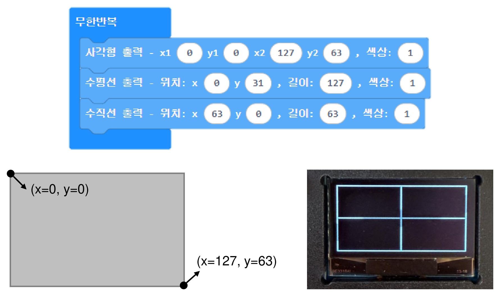
사각형 (0,0)~(127,63) · 수평선 y=31 · 수직선 x=63 → 4분할
로봇의 '말'은 여기 찍힙니다
문장 출력 - 내용 · 위치: (열) 열 (행) 행 · 색상 1 — 열 0~120, 행 0~7
숫자 출력 - 내용 · 줄바꿈: 참 — 센서값은 이걸로
디스플레이 지우기 — 무한반복 안에서 겹침 방지
사각형 · 수평선 · 수직선 · 픽셀 — 좌표 0~127 × 0~63
2교시 센서값은 여기에
그림: boundaryX AI 포니봇 교안 3~4차시 p.29 (부분)
본체 가운데 작은 화면이 OLED입니다. 가로 128, 세로 64 점이고 왼쪽 위가 (0, 0), 오른쪽 아래가 (127, 63)입니다. 교안 그림은 사각형 하나에 수평선과 수직선을 하나씩 그어 화면을 넷으로 나눈 예입니다.
블록은 AI ponybot 카테고리에 있습니다. 「문장 출력」은 내용과 위치를 받는데 위치의 열은 0부터 120, 행은 0부터 7까지입니다. 글자 한 줄이 8점 높이라 행은 여덟 줄입니다. 「숫자 출력」은 줄바꿈을 참으로 두면 값이 바뀔 때마다 다음 줄에 찍히는데, 2교시에 조도값과 거리값을 찍을 때 이 블록을 씁니다. 「디스플레이 지우기」를 무한반복 맨 앞에 두지 않으면 글자가 겹쳐 쌓이니 같이 기억해 두세요.
OLED는 오늘 하루 로봇의 입 노릇을 합니다. 지금 센서가 보는 숫자나 오후에 AI가 보낸 명령을 여기에 찍어 두면, 로봇이 이상할 때 코드를 뒤지지 않고 화면만 봐도 됩니다.
그림: img/oc/L3-4_p29_oled_code_coords_combo_b.png(3~4차시 p.29의 블록 코드 · TIP 좌표 도식 · OLED 실물 사진(쪽 안 원본)을 다시 배치. 제목 띠·코드 링크 줄·'TIP' 알약과 제목·회색 판·손글씨·캐릭터·설명 상자 제외). 블록 문구·범위: WRITER_GUIDE 4절(좌표 0~127×0~63, 텍스트 열 0~120·행 0~7). 리허설 확인: 「문장 출력」의 '열'이 픽셀 x인지 글자 칸인지 실제 출력으로 확인.
선택 실습 · 5분 · 1교시
OLED에 디지털 주차 번호판을 만듭니다
1 시작하면 안에 사각형 출력 - x1 0 y1 0 x2 127 y2 63, 색상 1
2 수평선 출력 - 위치: x 0 y 31, 길이 127, 색상 1 화면을 위아래로 나눔
3 문장 출력 - 내용: parking, 위치: 40 열 1 행, 색상 1
4 문장 출력 - 내용: 010-1234-5678, 위치: 20 열 5 행, 색상 1
5 전원 OFF에서 다운로드 → 전원 ON → 화면 확인 위치 숫자를 바꿔 가운데 맞추기
05:00 눌러서 시작 · 다시 누르면 멈춤 ↺ 생각할 점 글자 위치를 숫자로 적어야 합니다. 학생에게 좌표를 가르치는 가장 짧은 활동입니다.
그림: boundaryX AI 포니봇 교안 3~4차시 p.31 (부분)
시간이 있으면 5분짜리 미션 하나 합니다. 교안의 디지털 주차 번호판인데 화면 테두리에 사각형을 그리고 가운데 수평선으로 나눈 뒤 위 칸에 parking, 아래 칸에 전화번호를 찍습니다. 전화번호는 가짜로 넣으세요.
글자 위치는 열과 행 숫자로 잡습니다. 처음엔 왼쪽으로 쏠릴 테니 열 값을 키워 가운데로 옮기세요. 좌표라는 말을 꺼내지 않고도 학생이 좌표를 쓰게 되는 활동이라 초등 수업 도입으로 좋습니다. 다운로드는 전원 OFF, 확인은 전원 ON.
그림: img/oc/L3-4_p31_oled_parking_b.png(3~4차시 p.31 쪽 안 원본 OLED 사진에서 화면 둘레만. 'MISSION' 알약·캐릭터·안내 문장 제외). 열·행 값(40·1, 20·5)은 예시이며 리허설에서 실제 출력으로 맞출 것. 이 장을 뺄 때 같이 뺄 장 없음.
1교시 · 구조
감각 · 두뇌 · 운동, 로봇에도 같은 세 부분
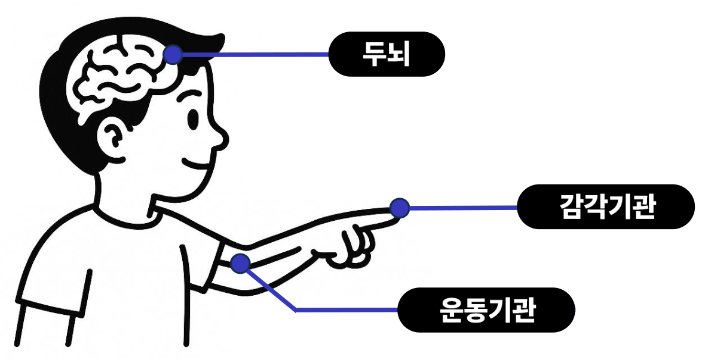
사람손끝으로 느끼고, 두뇌가 판단하고, 팔이 움직인다
감각기관
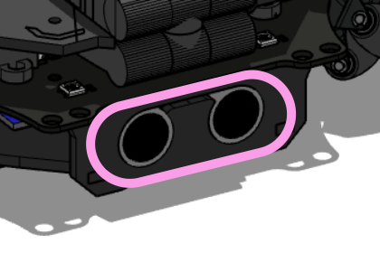
센서 입력 초음파 · 라인 · 컬러
두뇌
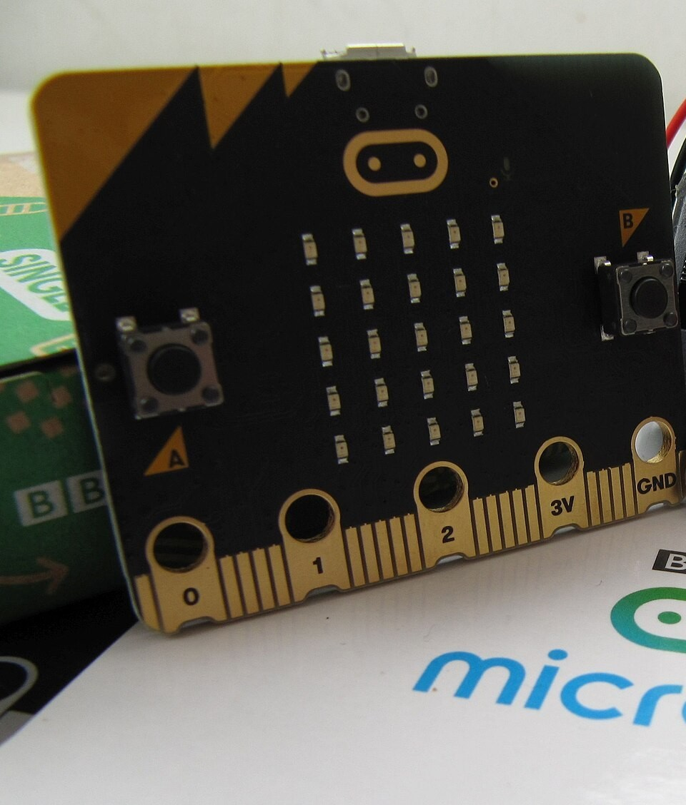
컨트롤러 처리 마이크로비트 V2 · 오늘 바꾸는 건 여기 넣는 코드
마이크로비트가 두뇌, 본체 보드는 신경, 모터가 근육
그림: boundaryX AI 포니봇 교안 1차시 p.7(사람 그림 부분) · p.1 · 7~8차시 p.11 (부분) · 사진: micro:bit V2, Crash48, Wikimedia Commons (CC0)
학생용 교안에 있는 비유인데 교사에게도 쓸모가 있어 한 장 넣었습니다. 사람은 손끝과 눈·귀로 느끼고 두뇌가 판단하고 근육이 움직이듯, 로봇은 센서가 느끼고 컨트롤러가 판단하고 액추에이터가 움직입니다. 포니봇에서는 초음파·라인·컬러 센서가 감각기관, 마이크로비트가 두뇌, 모터와 LED가 운동기관입니다. 본체 보드는 신호를 모터와 센서로 실어 나르는 신경에 가깝습니다.
비유 속 부품 가운데 오늘 갈아 끼우는 건 두뇌뿐이고 몸은 그대로입니다. 사람의 조종도 넣고 규칙도 넣어 보다가 오후가 되면 학습된 모델을 넣습니다.
그림: 덱에서 다시 구성. 왼쪽 img/oc/L1_p07_body_parts_v2.png(1차시 p.7 쪽 렌더에서 소년 그림과 두뇌·감각기관·운동기관 라벨만 잘라 냄. 설명 문장·[사람]·[로봇 또는 모빌리티]·아두이노/AI 보드 그림·점선 화살표·제목 띠·설명 상자·워터마크 제외). 오른쪽 세 칸은 HTML 카드, 작은 그림은 img/oc/L7-8_p11_ultrasonic_thumb_v2.png(덱의 L7-8_p11_ultrasonic_ring_b.png에서 초음파 둘레만) · img/mb_microbit_v2_front.jpg(Crash48, Wikimedia Commons, CC0) · img/oc/L1_p01_ponybot_render.png. 이전 그림 img/oc/L1_p07_brain_controller_b.png는 교안 쪽을 거의 통째로 옮긴 모양이라 쓰지 않음. 시간이 없으면 다음 장(입력·처리·출력)으로 바로 갑니다.
1교시 · 구조
입력·처리·출력 = 감지·판단·행동
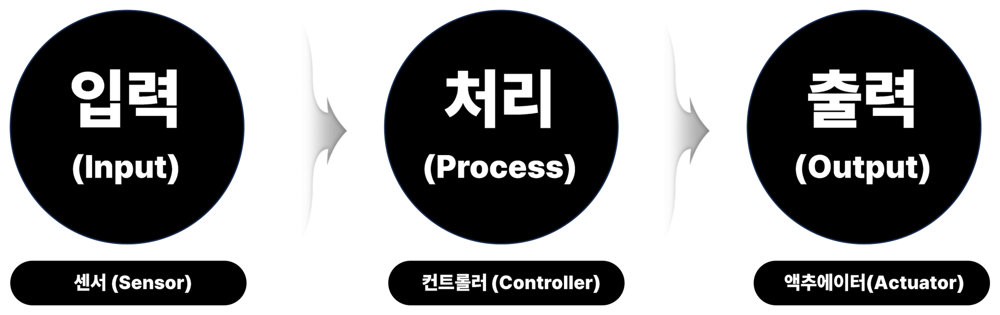
센서(입력) → 컨트롤러(처리) → 액추에이터(출력) 오늘은 가운데 '처리'만 바꾼다. 규칙을 쓰다가 오후에 학습 모델을 넣는다
그림: boundaryX AI 포니봇 교안 3~4차시 p.10 (부분)
교안은 이 그림을 입력·처리·출력이라 부르는데, 도입에서는 같은 그림을 감지·판단·행동이라는 이름으로 보여 드렸습니다. 센서가 왼쪽, 마이크로비트가 가운데, 모터·LED·OLED·스피커가 오른쪽 칸입니다.
하루 내내 갈아 끼우는 건 가운데 처리 칸 하나이고 왼쪽과 오른쪽은 그대로 둡니다. 2교시와 4교시엔 여러분이 짠 if 규칙을 넣고, 3교시엔 사람이 손으로 직접 조종합니다. 오후 몫은 학습된 모델인데, 도입 때 네 번째 칸으로 소개한 학습은 데이터에 따라 처리가 달라지는 과정이라 그때 함께 붙입니다.
학생에게 로봇을 설명할 때도 이 세 칸에서 출발하면 센서 수업과 조건문 수업, AI 수업을 한 그림 위에 올려놓을 수 있습니다.
그림: img/oc/L3-4_p10_input_process_output_b.png(3~4차시 p.10의 세 원·화살표·아래 알약만. 제목 띠·설명 상자·워터마크 제외). 도입의 감지→판단→행동→학습 도식은 13차시 p.18(파트 A).
묻기 · 칠판 · 투표
첫 다운로드, 어디서 막혔나요?
D 키 = 펜 · C 키 = 지우기 · L = 투표
연결창이 안 뜬 자리 Chrome·Edge가 아니거나, 다른 탭이 이미 마이크로비트를 잡고 있거나, 케이블이 충전 전용. 셋 다 학교에서 그대로 만납니다.
오늘 막힌 자리
L로 투표를 엽니다. 다운로드 성공, 장치 연결창이 안 뜸, Connection failed 메시지, 기타 넷 중 하나를 고릅니다. 분포를 보고 연결창이 안 뜬 자리가 많으면 .hex 복사 방법을 한 번 더 시연합니다.
막힌 이유를 칠판에 모아 보면 대개 브라우저, 다른 탭, 케이블, 포니봇 전원으로 추려집니다. 이 목록은 그대로 학교 컴퓨터실 점검표가 되니 사진으로 남겨 두시고, 8교시 운영안을 쓸 때 다시 꺼냅니다.
투표(L): b_first. 칠판 기록은 넘기기 전 사진.
휴식 10분
10:00 눌러서 시작 · 다시 누르면 멈춤 ↺
돌아오기 전에: 포니봇 전원 OFF, USB는 꽂은 채로. 2교시에는 센서가 보는 숫자를 읽습니다
2교시 10:20 · 센서를 활용한 제어 · 조도 → 오토라이트, 초음파 → 주차 경보
10분 쉬겠습니다. 포니봇 전원은 끄고 USB는 꽂은 채로 두세요. 2교시에는 센서가 실제로 어떤 숫자를 보는지 OLED에 찍어 보고, 그 숫자로 규칙을 적습니다.
연수 편성표(2026-11-21).
2
2교시 · 10:20~11:10
센서를 활용한 제어 — 숫자를 보고, 규칙을 적습니다
편성표: 센서 활용 프로그래밍
센서 3단계 5분 → 조도값 재기 8분 → 오토라이트 10분 → 초음파 원리 5분 → 15cm 경보 10분 → 핵심 · 묻기
기준값은 재서 정합니다
2교시는 센서입니다. 조도로 오토라이트를, 초음파로 주차 경보를 만들 텐데 두 활동 다 숫자부터 재고 기준을 정한 다음에야 규칙을 짭니다. 센서가 넘겨주는 건 숫자 하나뿐이라 사람이 그 위에 선을 그어 줘야 판단을 내릴 수 있으니까요.
규칙 기반이라는 오전의 두뇌를 이 교시에 몸으로 익혀 두면 오후에 데이터가 기준을 대신 정할 때 무엇과 견줘야 할지 보입니다.
연수 편성표(2026-11-21).
2교시 · 센서의 개념
센서는 자극을 숫자로 바꾼다
자극 Stimulus 빛 · 온도 · 소리 같은 물리적 · 화학적 변화
감지 Sensing 센서 안의 소자가 자극을 전기 신호로 바꿈
신호 처리 Signal Processing 아날로그(연속값)나 디지털(0과 1)로 처리
예 · 조도 센서 (마이크로비트 LED 매트릭스)
손으로 가리면 빛이 줄어듦 → 빛의 세기를 전압으로 → 빛 밝기 0~255
예 · 라인 센서 (포니봇 하판 앞)
검은 선은 적외선을 흡수 → 반사된 적외선을 전압으로 → 검정 1 · 흰색 0
센서(sensor)는 '느끼다'라는 뜻의 라틴어 sentire에서 왔습니다
마이크로비트 V2 안의 센서
가속도계 — 기울기 · 흔들림 (3교시 라디오 조종)
자기 센서 — 나침반 방향
온도 — 프로세서 내부 온도
조도 — LED 매트릭스가 빛을 잰다 · 0~255
마이크 · 터치 로고 — V2부터
자이로·습도는 없습니다
내용: boundaryX AI 포니봇 교안 5~6차시 p.19 '작동 흐름' (덱에서 다시 구성)
센서라는 말은 느끼다라는 뜻의 라틴어 sentire에서 왔고, 교안은 센서가 일하는 과정을 세 단계로 나눕니다. 빛이나 소리 같은 자극이 들어오면 센서 안의 소자가 이를 전기 신호로 바꾸고, 마지막 단계에서 그 신호를 연속된 아날로그 값이나 0과 1의 디지털 값으로 처리합니다. 라인 센서가 0과 1을, 조도 센서가 0에서 255를 주는 차이가 여기서 생깁니다.
마이크로비트 V2 안에는 가속도계, 자기 센서, 온도, 조도, 마이크, 터치 로고가 들어 있습니다. 조도는 따로 부품이 있는 게 아니라 앞면 LED 매트릭스를 거꾸로 써서 빛을 재기 때문에 LED에 뭔가 띄우면 조도값이 흔들립니다. 교안 1차시 9쪽에는 온습도 센서라고 적혀 있는데 습도 센서는 없습니다. 자이로도 없어서 회전 속도는 못 재고 기울기는 가속도계로 중력 방향을 읽어 구합니다.
초음파·라인·컬러 센서는 포니봇 본체 보드에 붙어 있고 조도·가속도·마이크는 마이크로비트에 들어 있습니다. 이렇게 갈라 두면 학교에 포니봇이 없어도 마이크로비트 하나로 할 수 있는 활동이 눈에 들어옵니다.
그림 없음(흐름 상자). 5~6차시 p.19 '작동 흐름' 1·2·3과 '어원 및 개념'을 덱 글자로 다시 씀. 이전 그림 img/oc/L5-6_p19_sensor_flow_b.png는 교안 글자 문단을 캡처한 것이라 쓰지 않음. 아래 예시 두 줄(조도 0~255, 라인 검정 1·흰색 0)은 이 덱의 다른 장과 같은 값. 센서 목록: micro:bit V2 사양(가속도·자기·온도·조도·마이크·터치). 교안 1차시 p.9 '온습도센서' 오류는 WRITER_GUIDE 5절.
2교시 · 센서의 개념 · 사례
바깥의 로봇도 같은 센서를 더 많이 달았을 뿐
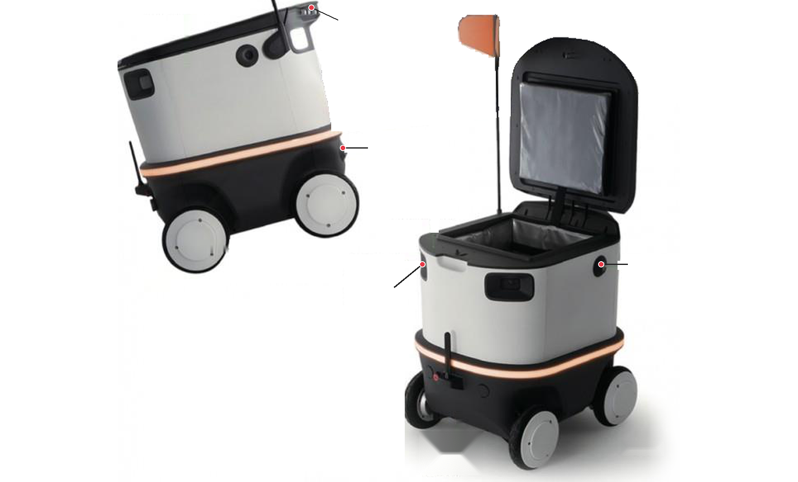
전면 카메라 초음파 센서 후면 카메라 측면 카메라 배달 로봇 (로보티즈)카메라(앞 · 뒤 · 옆) · 초음파 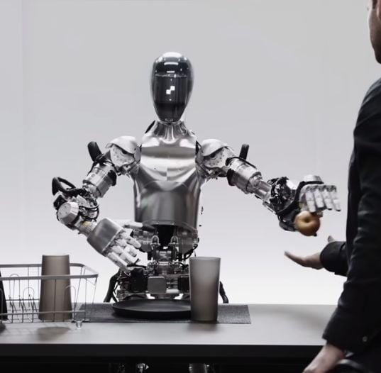
휴머노이드 (Figure)카메라 · 마이크 · 터치 · 조도 · 온도
초음파·조도·마이크·터치까지는 포니봇에도 있습니다. 카메라는 오후에 노트북이 맡습니다
그림: boundaryX AI 포니봇 교안 5~6차시 p.21(이미지: 로보티즈, 센서 이름표는 덱에서 다시 붙임) · p.22(이미지: Figure) (부분)
교안에는 사례가 두 장 실려 있습니다. 왼쪽 배달 로봇은 앞·뒤·옆에 카메라를 달고, 몸통 아래쪽 초음파로 가까운 물체까지 거리를 잽니다. 휴머노이드라면 카메라·마이크를 AI와 엮고 손끝에 터치 센서까지 붙입니다.
오늘 만드는 로봇을 장난감 수준의 축소판으로 보실 까닭은 없습니다. 초음파는 포니봇 앞에 달려 있고 조도·가속도·나침반·마이크·터치는 마이크로비트 안에 다 들어 있으니까요. 빠진 건 카메라인데 오후에 노트북 웹캠으로 채웁니다. 짜임은 실제 로봇과 같고 부품 수만 적을 뿐입니다.
그림: img/oc/L5-6_p21_delivery_robot_sensors_v3.png(v2에서 로봇 뒤에 남아 있던 회색 노면(횡단보도) 조각을 흰색으로 지움. 그 밖에는 v2와 같음: 5~6차시 p.21 쪽 안 원본 그림에서 잡지식 라벨 글자 9개·지시선·잠금장치 사진·오른쪽 아래 크레딧 글자·위 '횡단보도' 띠를 빼고, 센서 넷(전면·후면·측면 카메라, 초음파)의 지시선만 원래 가리키던 자리에 다시 그림. 이름표는 HTML 덱 글자. 헤드램프·스피커·구동부·배터리·인공지능 시스템 라벨은 센서가 아니라 뺌) · img/oc/L5-6_p22_figure_humanoid_v2.png(p.22 쪽 안 원본 사진, 위 검은 띠 잘라 냄). 제목 띠·오른쪽 센서 목록 문단·출처 줄은 캡션과 credit으로. 확인 필요: p.21 원본 그림 오른쪽 아래에 '뉴빌리티' 표기가 있어 교안의 출처 표기(로보티즈)와 다름(화면 그림에서는 크레딧 글자를 지웠고 출처 표기는 결정 대기). 교안 p.21의 자이로 언급은 휴머노이드 일반 이야기이며 마이크로비트에는 자이로가 없음(앞 장). 시간이 없으면 건너뜀.
2교시 · 실습 8분 · 2인 1조
손으로 가렸을 때와 뗐을 때, 숫자 둘을 적습니다
1 [입력]에서 빛 밝기 블록 찾기 0~255 · LED 매트릭스가 센서
2 무한반복 안에 숫자 출력 - 내용: 빛 밝기, 줄바꿈: 참
3 전원 OFF에서 다운로드 → 전원 ON → OLED에 숫자
4 손으로 LED 매트릭스를 가렸을 때 / 뗐을 때 값을 활동지에 창가 팀과 안쪽 팀을 비교
5 참여 벽(L)에 두 숫자 입력
[입력] → 빛 밝기 · OLED에는 숫자만 한 줄씩 찍힘
08:00 눌러서 시작 · 다시 누르면 멈춤 ↺ 어두울 때 ___ · 밝을 때 ___
생각할 점 같은 교실, 같은 로봇인데 팀마다 숫자가 다릅니다. 기준을 누가 정해야 할까요.
그림: boundaryX AI 포니봇 교안 5~6차시 p.25 (부분, 빨간 테두리는 덱 표시)
8분입니다. [입력] 카테고리의 「빛 밝기」 블록은 0에서 255 사이 숫자를 주는데 마이크로비트 앞면 LED 매트릭스가 센서 역할을 합니다. 「무한반복」 안에 「숫자 출력」을 넣고 내용에 빛 밝기를 끼우면 OLED에 숫자가 계속 찍힙니다. 전원을 끄고 다운로드한 뒤 켜서 확인합니다.
손으로 LED 매트릭스를 가렸을 때 숫자와 뗐을 때 숫자를 활동지에 적습니다. 창가 팀과 안쪽 팀, 형광등 바로 아래와 그늘에서 숫자가 저마다 다를 겁니다. 참여 벽에 두 숫자를 넣으면 교실 전체 분포가 보입니다.
마이크로비트가 세로로 꽂혀 LED 면이 로봇 앞쪽을 향하니 가릴 때는 앞에서 손바닥으로 덮어 주세요. 값이 0에서 꿈쩍하지 않으면 LED 매트릭스에 다른 출력이 켜져 있지 않은지 확인합니다. 1교시 하트가 남아 있으면 그 하트가 빛을 냅니다.
그림: img/oc/L5-6_p25_light_block_v2.png(5~6차시 p.25 쪽 안 원본 블록 이미지만, '빛 밝기'에 덱 빨강 테두리. 왼쪽 팔레트 화면·'클릭' 말풍선·검은 강조 상자·연결선·캐릭터·설명 상자 제외. 이전 _b 그림에 함께 있던 교안 OLED 사진은 'cds value :' 글자를 붙여 찍은 출력이라 숫자만 찍는 이 블록과 맞지 않아 뺌). 참여 벽(L): b_light(어두울 때·밝을 때). 블록 그림 L56_6은 기준 200짜리라 쓰지 않음. 리허설 확인: 연수장 조명에서 가렸을 때·뗐을 때 대략값, 하트 아이콘이 남아 있을 때 조도값 영향.
2교시 · 측정 → 판단 → 대입
기준값은 재서 정한다
① 재기 측정
어두울 때손으로 가렸을 때
0
밝을 때손을 뗐을 때
192
② 선 긋기 판단
40
어둡다
밝다
0
192
두 숫자 사이에 선 하나40보다 작으면 어둡다
③ 조건에 넣기 선택 구조
교안은 40. 우리 숫자는 방금 쟀습니다. 두 숫자 사이에 선을 긋습니다
값·블록: boundaryX AI 포니봇 교안 5~6차시 p.28 예시 (덱에서 다시 구성, 블록은 부분)
참여 벽 숫자를 보면 어두울 때가 0에서 20쯤, 밝을 때가 100에서 200 사이쯤 나왔을 겁니다. 교안의 예시는 0과 192이고, 이제 그 사이 어딘가에 선을 긋습니다. 교안은 블록에 40을 넣었는데 같은 쪽 판단 칸 그림에는 '50 아래'라고 적혀 있습니다. 화면은 블록 값 40으로 맞춰 두었습니다. 교안 안에서도 숫자가 흔들리는 건 이 값이 정답이 없고 재서 정하는 값이기 때문입니다.
순서가 중요합니다. 재는 게 먼저이고, 숫자를 들여다보며 판단한 다음에야 조건에 넣습니다. 학생들은 흔히 조건부터 써 놓고 숫자를 지어 넣다가 교실을 옮기는 순간 틀리고 말죠. 이제 우리 팀 숫자로 선을 그어 보세요. 어두울 때 최대와 밝을 때 최소 사이에서 가운데쯤 잡으면 무난합니다.
선을 그은 사람이 누구인지 기억해 두세요. 이 교시 끝에 다시 묻습니다.
그림: 덱에서 다시 구성. ①·②는 HTML 상자(값 0·192·40은 5~6차시 p.28 예시), ③은 img/oc/L5-6_p28_condition_block_v2.png(이전 그림 L5-6_p28_measure_judge_condition_b.png에서 블록만 잘라 냄, 쪽 안 원본 블록 이미지). 이전 그림은 교안 3단 도식(단계 알약·학생 대사·꺾쇠 장식)을 거의 통째로 옮긴 모양이라 쓰지 않음. 교안 오류: ② 판단 칸 '50 아래' vs 블록 '<40' vs hex 원본 '>200' → 덱은 <40을 출발점으로 두고 연수장에서 재서 정함(WRITER_GUIDE 5절).
2교시 · 실습 10분 · 오토라이트
기준값보다 어두우면 흰색, 아니면 끄기
P6 · 시작하면에서 기준값에 40 저장 → 무한반복에서 빛 밝기 < 기준값 이면 흰색, 아니면 끄기
변수 '기준값' 하나로 판단한다
라이트 블록은 「ponybot light」 카테고리 · 40은 방금 그은 우리 팀 숫자로
40을 바꾼 사람이 판단한 셈
10:00 눌러서 시작 · 다시 누르면 멈춤 ↺ 블록: 강사 작성 P6_autolight_fixed (교안 5~6차시 p.27 오토라이트를 변수형으로)
10분입니다. 「시작하면」에서 ponybot light의 strip에 P8에 연결된 4개 라이트를 저장하고, 변수 기준값에 40을 넣습니다. 「무한반복」에서는 조도값을 OLED에 찍고, 빛 밝기가 기준값보다 작으면 라이트를 모두 흰색으로 켜고 아니면 모두 끕니다. 교안 코드는 조건 안에 40을 직접 적는데 변수로 빼 둔 건 숫자를 한 군데서만 바꾸게 하고 이 숫자가 '정해 넣는 값'이라는 걸 눈에 보이게 하려는 겁니다.
40을 방금 그은 우리 팀 선으로 바꾸고 다운로드합니다. 전원을 켜고 손으로 가리면 켜지고 떼면 꺼져야 합니다. 경계 근처에서 깜빡거리는 팀도 있을 텐데 고장이 아니라 다음 장에서 다룰 일입니다.
오늘 오전 두뇌가 하는 일은 사람이 정해 둔 숫자와 센서 숫자를 견주는 것 하나라서 이 코드 안에 다 들어 있죠. 잠시 뒤 15cm 경보도, 4교시 라인트레이싱도 이걸 키워서 만듭니다.
블록: img/blocks/P6_autolight_fixed.png (강사 작성, 교안 5~6차시 p.27 변형, 기준 <40). LED는 P8에 4개, GRB. 블록 그림이 가로로 길어 그림 칸을 화면 폭 전체로 넓히고 설명 글은 아래 한 줄로 줄임(2026-10-20 점검).
2교시 · 오토라이트 · 깊이 보기
경계 근처에서 깜빡이면, 기준을 두 개로
조도값(빛 밝기)의 시간 변화 · 손을 천천히 가릴 때
0
20
40
60
끄기 기준 45 · 이 위로 올라가야 끈다
켜기 기준 35 · 이 아래로 내려가야 켠다
↑ 빨간 선 = 기준 하나(40)
깜빡 깜빡 깜빡 깜빡 깜빡
기준 둘이면 → 35 아래로 내려간 뒤에야 한 번 켜짐
시간 →
35 아래서 켜고 45 위에서 끈다. 사이 10은 '그대로'
경계 근처에서 불이 깜빡인 팀이 있었을 겁니다. 가만히 놔둬도 조도값은 1, 2씩 오르내리거든요. 기준이 40 하나뿐이면 39와 41을 오갈 때마다 불이 들어왔다 나갔다 합니다. 전조등이 그렇게 깜빡이면 마주 오는 차가 미칩니다.
기준을 둘로 떼어 놓으면 됩니다. 켜는 건 35 아래로 내려갔을 때, 끄는 건 45 위로 올라갔을 때로 정해 두면 그 사이 열 칸에서는 지금 상태가 그대로 가니까요. 온도조절기와 자동차 전조등도 이렇게 작동하는데 이걸 히스테리시스라고 부릅니다. 블록으로는 「만약 빛 밝기 < 35 이면 켜기」와 「아니면 만약 빛 밝기 > 45 이면 끄기」 두 갈래로 쓰고, 둘 다 아니면 아무것도 하지 않게 두는 게 요점입니다.
'손 모양이 go'라는 판정을 오후에 AI가 내릴 때도 이 문제는 다시 생깁니다. 신뢰도가 기준 60% 언저리에서 오락가락하면 로봇은 출발과 정지만 되풀이하니까 microbit-ai-control은 같은 결과가 몇 번 이어질 때만 보냅니다. 방금 본 그래프의 AI판이고, 그 횟수는 7교시에 직접 바꿔 봅니다.
그래프는 인라인 SVG(개념도, 실측 아님). 켜기 35·끄기 45는 예시이며 팀 숫자에 맞춰 ±5 정도로. 이 장을 뺄 때 같이 뺄 장 없음.
확장 · 로봇 0대 학교용
조도 센서는 마이크로비트 안에
1 입력은 그대로 「빛 밝기」는 마이크로비트 자체 센서. 포니봇 없이 USB만 꽂아도 같은 숫자가 나옵니다.
2 출력은 LED 매트릭스로 OLED·라이트 대신 「아이콘 출력」. 어두우면 ☾, 밝으면 ☀. 단, LED를 켜면 조도값이 흔들리니 기준을 넉넉히.
3 시뮬레이터로도 MakeCode 시뮬레이터의 빛 밝기 슬라이더로 기준값 실험. 마이크로비트가 1인 1대가 아니어도 됩니다.
포니봇이 꼭 필요한 건 초음파 · 라인 · OLED · 바퀴뿐
포니봇이 아예 없거나 한두 대뿐인 학교를 위해 넣은 장입니다. 오토라이트의 입력인 조도 센서는 마이크로비트 안에 있어서 로봇 없이 USB만 꽂아도 숫자가 똑같이 나오거든요. 출력만 OLED와 라이트 대신 앞면 LED 매트릭스로 바꿔 어두울 때는 달, 밝을 때는 해 아이콘을 띄우면 그대로 오토라이트가 됩니다. LED 불빛까지 조도 센서가 같이 읽어 버리니 기준값은 조금 넉넉히 잡아야 하는데, 왜 그런지 학생에게 물어볼 만합니다.
마이크로비트조차 모자라면 MakeCode 시뮬레이터로 갑니다. 시뮬레이터 화면에도 빛 밝기 슬라이더가 붙어 있어 기준값을 이리저리 바꾸며 켜지고 꺼지는 걸 지켜볼 수 있으니, 재서 정하는 경험의 절반쯤은 여기서도 됩니다. 초음파, 라인 센서, OLED, 바퀴는 그래도 포니봇이 있어야 하니까 8교시 운영안에서 0대·1대·모둠별로 나눌 때 이 구분을 다시 꺼냅니다.
사진 없음(카드 장). 시뮬레이터 빛 밝기 슬라이더: MakeCode 시뮬레이터에서 「빛 밝기」 블록을 쓰면 자동으로 나타남. 리허설 확인: 아이콘 출력 시 조도값 변화 폭.
2교시 · 초음파 센서
거리는 센서가 잰 시간으로 계산합니다
발사 → 반사 → 수신 · 약 2~400cm · 정확도 3mm 이내 (교안 사양)
왕복 시간 × 340 m/s ÷ 2
소리는 1cm를 갔다 오는 데 약 58µs
블록 「[센티미터▾] 단위로 측정한 거리」 — 드롭다운에 마이크로초가 있는 이유
너무 가깝거나(2cm 미만) 비스듬한 면·천·먼 곳 → 0 또는 튀는 값
이 값을 OLED에 찍고, 손을 대 보고 믿기
58 마이크로초 = 1cm
그림: boundaryX AI 포니봇 교안 7~8차시 p.11 (부분)
초음파 센서는 거리를 직접 재지 않습니다. 사람 귀에 안 들리는 높은 소리를 한쪽 눈으로 내보내고 되돌아온 소리를 다른 눈으로 받는데, 센서가 재는 건 그 사이에 흐른 시간입니다. 소리는 공기 속에서 초속 약 340m로 움직이니 왕복 시간에 340을 곱해 반으로 나누면 거리가 나오고, 1cm를 오가는 데 약 58마이크로초가 걸리니까 시간을 58로 나누기만 하면 센티미터입니다.
단위 드롭다운에 센티미터와 나란히 마이크로초가 들어 있는 것도 그래서입니다. 센서가 원래 재는 건 시간이고 센티미터는 블록이 대신 나눠 준 결과니까요. 중학교 과학의 속력 공식이 고스란히 들어 있으니 정보와 과학을 엮는 수업 재료로 좋습니다.
교안 사양은 약 2cm에서 400cm, 정확도 3mm 이내입니다. 하지만 2cm보다 가까이 붙으면 돌아오는 소리를 받기도 전에 다음 소리가 나가 버리고, 비스듬한 면이나 천에 맞은 소리는 엉뚱한 데로 튀어 돌아오지 않습니다. 0이나 터무니없이 큰 값이 찍히는 게 이런 때라서 다음 실습에서는 값을 OLED에 띄워 손을 대 보고 믿을 만한지부터 확인합니다.
그림: img/oc/L7-8_p11_ultrasonic_reflect_spec_combo_b.png(7~8차시 p.11의 반사 도식 · 센서 위치 렌더 · 사양 알약을 위아래로 다시 배치. 제목 띠·점선 화살표·'초음파 거리 감지 센서' 글자·설명 상자·워터마크 제외). 음속 약 340m/s(20°C 공기 343m/s) → 왕복 1cm = 2cm ÷ 34,000cm/s ≈ 58.8µs. 리허설 확인: 측정 실패 시 0이 나오는지 400 이상이 나오는지(WRITER_GUIDE 4절).
2교시 · 초음파 센서 · 숫자로
15cm 앞의 손은 약 880 마이크로초 뒤에 돌아옵니다
발사 → 수신까지 걸린 시간 (마이크로초, µs) · 거리 = 시간 × 340 m/s ÷ 2
발사 0 µs
5 cm
15 cm
100 cm
≈ 290 µs
≈ 880 µs ← 오늘의 경보 기준
≈ 5,900 µs (5.9 ms)
10 cm 왕복 ÷ 34,000 cm/s
30 cm 왕복 ÷ 34,000 cm/s
「마이크로초 단위로 측정한 거리」를 OLED에 찍으면 이 숫자가 그대로 보입니다. 58로 나누면 센티미터.
센티미터 블록은 이 시간을 58로 나눠 준 것
숫자로 한 번 보겠습니다. 5cm 앞에 손이 있으면 소리가 10cm를 왕복하니 34,000으로 나눠 약 290마이크로초, 15cm면 약 880마이크로초, 1m면 약 5,900마이크로초, 그러니까 6밀리초쯤입니다. 마이크로비트는 이 정도 시간을 충분히 잽니다.
시간이 있으면 드롭다운을 마이크로초로 바꿔 OLED에 찍어 보세요. 손을 15cm 앞에 대면 880 근처 숫자가 나오고, 그걸 58로 나누면 15입니다. 센티미터 블록이 하는 일이 그 나눗셈 하나뿐이라는 걸 학생이 제 눈으로 확인하게 됩니다.
인라인 SVG(계산값). 2d ÷ 34,000cm/s: 5cm→294µs, 15cm→882µs, 100cm→5,882µs. 리허설 확인: 마이크로초 단위 선택 시 블록이 돌려주는 값이 왕복 시간인지 편도인지(값이 440 근처면 편도).
2교시 · 실습 10분 · 2인 1조
거리를 재서 OLED에 찍고, 15cm 안이면 삑삑
1 [변수]에서 센서_값 만들기
2 무한반복 → 센서_값 에 [센티미터] 단위로 측정한 거리 저장
3 숫자 출력 - 내용: 센서_값, 줄바꿈: 참 → 다운로드해서 손을 대 보고 숫자 확인전원 OFF 다운로드 → 전원 ON
4 만약 센서_값 < 15 이면 도 (Hz) 소리 내기 → 일시중지 100 → 모든 소리 끄기 → 일시중지 100
5 아니면 모든 소리 끄기 → 손을 가까이 · 멀리 하며 확인
교안 정답 L78_2 · 15cm 경보
10:00 눌러서 시작 · 다시 누르면 멈춤 ↺ 숫자를 먼저, 조건은 나중에
생각할 점 15는 누가 정했나요. 주차 보조라면 몇 cm가 맞을까요.
블록: boundaryX AI 포니봇 교안 7~8차시 정답(hex) 렌더 L78_2
10분입니다. 변수 센서_값을 만들고 무한반복 안에서 「센티미터 단위로 측정한 거리」를 저장합니다. 먼저 숫자 출력으로 OLED에 찍고 다운로드해서 손을 센서 앞에 대 봅니다. 손을 가까이 하면 줄고 멀리 하면 늘어나는지, 손을 치우면 벽까지 거리가 나오는지 보고, 여기까지 되면 조건을 붙입니다.
센서_값이 15보다 작으면 도 소리를 내고 100밀리초 쉬고 끄고 100밀리초 쉽니다. 그러면 삑, 삑, 삑 하고 0.2초마다 울립니다. 조건이 아닐 때는 소리를 끕니다. 「아니면」 칸에 끄기를 빠뜨리면 손을 치워도 소리가 계속 나니, 조건이 거짓일 때 할 일도 적어 둬야 한다는 걸 여기서 배웁니다.
소리는 마이크로비트 V2의 내장 스피커에서 납니다. 조도 때와 순서는 같아서 숫자를 먼저 보고 기준을 정한 뒤 조건에 넣습니다. 15는 교안이 정한 숫자인데 실제 주차 보조라면 몇 cm가 맞을지 생각해 보세요.
블록: img/blocks/L78_2.png(교안 7~8차시 정답 hex 렌더). 블록 문구: WRITER_GUIDE 4절. 리허설 확인: 20명이 동시에 삑삑거릴 때 소음, 손 대신 공책을 세워 쓰게 할지. 측정 실패 시 0이 나오면 0 < 15라 소리가 나는 문제 → 확장 장(초음파 0) 참고.
2교시 · 초음파 · 생각해 보기
진짜 주차 보조는 가까울수록 빨리 울립니다
손을 대면 OLED에 거리교안 7~8차시 p.15
멀면 삐 삐 삐, 가까우면 삐~~~교안 7~8차시 p.18
'빨리'를 숫자로 어떻게 쓸까요. 지금 가진 숫자는 센서_값 하나뿐
그림: boundaryX AI 포니봇 교안 7~8차시 p.15 · p.18 (부분)
방금 만든 경보는 15cm 안에만 들어오면 늘 같은 박자로 울리는데 실제 차의 주차 보조는 다릅니다. 멀 때는 띄엄띄엄 울리다가 가까워질수록 빨라지고 거의 붙으면 연속음이 되니까, 운전자는 화면을 안 보고도 귀로 거리를 알죠.
이걸 블록으로는 어떻게 쓸까요. 10cm, 5cm 하는 식으로 조건을 여러 개 쌓을 수도 있지만 지금 손에 쥔 숫자는 센서_값 하나뿐입니다. 이 숫자를 소리 사이의 쉬는 시간으로 그대로 써 보면 어떨지, 다음 장에서 봅니다.
그림: img/oc/L7-8_p15_hand_ultrasonic_oled_b.png(7~8차시 p.15 쪽 안 사진과 보라 원 두 개만. 손글씨 안내·점선 화살표·캐릭터·'초음파 센서로 거리 측정하기' 알약 제외) · img/oc/L7-8_p18_beep_far_near_b.png(p.18 로봇 네 대·화살표·'삐' 소리 표기만. 캐릭터·물음표·아래 질문 문장 제외, 질문은 캡션과 제목으로). 시간이 없으면 건너뛰고 다음 장에서 질문만 말로.
2교시 · 초음파 · 한 줄 바꾸기
일시중지에 센서값 × 10
교안 정답 L78_3 · 일시중지 (센서_값 × 10) ms
같은 숫자를 조건에도, 시간에도
15cm → 150ms 간격 · 5cm → 50ms 간격 · 2cm → 거의 연속음
조건 「센서_값 < 15」는 그대로, 일시중지 두 곳만 바꿈
4교시에는 이 숫자가 속도(0~255)로 들어갑니다
센서값은 숫자라서
블록: boundaryX AI 포니봇 교안 7~8차시 정답(hex) 렌더 L78_3
바꾸는 건 한 줄입니다. 일시중지 100 두 곳을 센서_값 곱하기 10으로 바꿉니다. 15cm면 150밀리초마다, 5cm면 50밀리초마다 울리고 2cm까지 붙으면 거의 연속음이 됩니다. 교안에서는 소리도 높은 도로 올려 두었습니다. 코드를 고쳐 다운로드하고 손을 천천히 가져가 보세요.
여기서 하나 짚고 가겠습니다. 방금 조건에서 15와 견주던 값과 일시중지에 넣은 시간은 같은 센서값이었습니다. 센서한테서 오는 건 그냥 숫자이고, 어디에 쓸지는 우리가 고르죠. 이 숫자는 4교시에 모터 블록의 속도 칸(0에서 255)에도 들어갑니다. 거리가 멀수록 빨리 달리다 가까워지면 느려지는 크루즈 주행이 그렇게 나옵니다.
곱하기 10은 또 누가 정했을까요? 10을 20으로 늘리면 삑 소리 사이가 벌어지고 5로 줄이면 다급해집니다. 따져 보면 기준값 40도 거리 15도 배수 10도 모두 사람이 고른 값입니다.
블록: img/blocks/L78_3.png(교안 7~8차시 정답 hex 렌더, p.19). 「비례 변환」 블록은 4교시 크루즈에서(파트 C).
확장 · 깊이 보기
센서는 틀립니다. 규칙에 '틀릴 때'를 넣습니다
1 0이 나온다 소리가 안 돌아오면 측정 실패. 0 < 15라서 경보가 울립니다. 조건을 「센서_값 > 0 그리고 센서_값 < 15」로.
2 값이 튄다 한 번은 15, 다음은 180. 세 번 재서 가운데 값을 쓰거나, 두 번 연속 15 아래일 때만 울리기.
3 비스듬한 면 · 천 · 모서리 소리가 다른 데로 튑니다. 공책을 정면으로 세워 재면 잘 되고, 소파·커튼은 안 잡힙니다.
오후의 AI도 틀립니다. '틀릴 때' 칸을 비워 두지 않는 습관을 여기서 들입니다
실습하다가 손을 치웠는데도 삑삑거린 팀이 있었을 겁니다. 소리가 안 돌아오면 센서는 0을 주는데, 0은 15보다 작으니 경보가 울립니다. 조건에 「센서_값이 0보다 크고」를 붙이면 되는데 논리 카테고리의 「그리고」 블록을 씁니다.
15, 16, 180, 15처럼 값이 한 번씩 튀는 일도 흔합니다. 세 번 재서 가운데 값을 쓰는 방법과 두 번 연속으로 15 아래일 때만 울리게 하는 방법이 있는데, 두 번째 방법은 변수 하나면 되니까 학생도 해낼 수 있습니다. 비스듬한 면이나 천에서는 소리가 되돌아오지 않으니 실습할 때는 손 대신 공책을 정면에 세우게 합니다.
틀릴 때 할 일까지 규칙에 채워 두는 습관은 지금 센서에서 들여 두면 오후에 AI를 다룰 때까지 그대로 이어집니다. AI가 손 모양을 잘못 보거나 연결이 끊겨도 똑같이 처리합니다. 모르는 명령이면 정지, 끊기면 정지.
사진 없음(카드 장). 리허설 확인: 측정 실패 시 실제 반환값이 0인지 400 이상인지(WRITER_GUIDE 4절) → 카드 1의 조건을 그에 맞춰 수정.
2교시 · 실생활 연결
전조등도 차로 보조도 같은 구조
조도 센서 안전 시스템 (현대자동차)어두운데 전조등이 꺼져 있으면 운전자에게 알림
자동차 속 안전 시스템카메라 · 레이더 · 스티어링 센서 — 모두 센서 + 규칙
자동차의 센서 안전 기능 대부분이 오늘 적은 if 구조입니다
그림: boundaryX AI 포니봇 교안 5~6차시 p.30(영상: 현대자동차) · 7~8차시 p.8 (부분)
오늘 만든 둘은 실제 차에도 그대로 들어 있습니다. 어두운데 전조등을 안 켜면 조도 센서가 알려 주는 기능, 그리고 뒤에 뭐가 있으면 초음파가 재서 가까울수록 빨리 울리는 주차 보조 말이죠. 어느 쪽이든 센서 숫자 하나를 기준값 하나와 견주는 규칙입니다.
자율주행차 한 대 안에 규칙 기반과 학습 기반이 섞여 있다는 얘기를 학생에게 꺼낼 때는 오른쪽 그림을 보여 주세요. 차로 이탈 방지, 차로 유지, 운전자 주의 경고가 실려 있는데 센서로 카메라와 레이더를 쓰고 처리가 복잡할 뿐 뼈대는 오늘 만든 것과 다르지 않습니다. 차선을 카메라로 '본다'는 앞단만 오후에 배울 학습 모델 몫이고, '벗어나면 경고'라는 뒷단은 오늘 짠 if 그대로입니다.
그림: img/oc/L5-6_p30_headlight_off_night_v2.png(5~6차시 p.30 쪽 안 영상 장면 원본에서 가운데 영상 칸만. 위 SNS형 말풍선과 세로 영상의 흐린 좌우 채움은 잘라 내고 번호판은 흐림 처리. 제목 띠·'영상 자료' 안내·설명 상자·출처 줄 제외, 설명은 캡션으로). 제목은 오른쪽 그림(차로 이탈·차로 유지·운전자 주의)에 맞춰 '주차 보조'에서 '차로 보조'로 바꿈(주차 보조는 앞 장들과 노트에서 다룸) · img/oc/L7-8_p08_car_safety_sensors_b.png(7~8차시 p.8 세 카드의 아이콘·제목 알약과 '활용되는 센서'만 한 줄씩 다시 배치. 카드 테두리·'작동 원리' 문단·제목 띠 제외). 시간이 없으면 건너뜀.
2교시 · 핵심
판단을 내린 건
빛 밝기 < 40, 거리 < 15, 곱하기 10. 오늘 오전의 두뇌인 규칙 기반에서는 사람이 적은 숫자를 로봇이 그대로 따릅니다. 오후에는 이 숫자를 데이터로 정합니다.
규칙 기반은
2교시는 화면의 이 문장 하나로 닫습니다. 판단을 내린 건 기준값을 정한 사람. 로봇은 비교만 했을 뿐이고 오토라이트의 40, 경보의 15, 배수 10은 여러분이 직접 재고 들여다보며 정했습니다. 도입에서 본 AI 첫 시대의 전문가 시스템도 사람이 기준을 정해 코드에 넣는 이 규칙 기반 방식이었습니다.
규칙 기반은 숫자만 읽어 봐도 판단한 까닭이 훤히 드러나고 틀렸을 때는 그 숫자만 바꿔 주면 됩니다. 하지만 교실이 바뀌면 처음부터 다시 재야 하고, 손 모양처럼 숫자 하나로는 적을 수 없는 입력을 만나면 규칙이 끝도 없이 불어납니다. 오후에 그 자리를 학습 모델에 넘겨 데이터가 기준을 정하게 할 텐데, 그때 오늘 정한 40을 떠올려 주세요.
사진 없음(핵심 문장 장). 이 장 뒤에 체험 도구(파트 G)가 삽입됩니다.
선택 체험 · 10분 · 2교시
뇌도 임계값으로 결정합니다
Fly Brain Escape · 색 = 역할, 오른쪽 아래 결정 막대와 점수판
위협 회피 회로 · 뉴런 4,296개
하늘 = 눈 · 주황 = 켜라 · 분홍 = 꺼라
연두 = 결정 · 흰 = 근육
← ↑ → 로 위협 발사 → 신호가 흐른다
막대가 0.70을 넘으면 피한다
if 결정값 > 0.70 → 피해라
화면: 강사 캡처 2026-10-20 · 도구: ak7660 · Fly Brain Escape
시간이 없으면 건너뛰거나 2~3교시 사이 쉬는 시간 체험으로 안내합니다. 시간을 내려면 2교시 오토라이트 실습을 3분, 조도값 재기 실습을 2분 줄이면 됩니다.
규칙이 판단한다고 했습니다. 조도가 40보다 작으면 켜라, 거리가 15보다 작으면 울려라. 뇌도 이렇게 움직인다는 걸, 도입에서 본 초파리 신경계에서 '위험을 보고 피한다' 회로 하나만 떼어 와 확인해 보겠습니다. 이 회로에 든 뉴런이 4,296개입니다. 색마다 맡은 역할이 달라서 하늘색이 눈, 주황이 켜라, 분홍이 꺼라, 연두가 결정, 흰색이 근육입니다. 키보드 왼쪽·위·오른쪽 화살표로 위협을 날리면 하늘색에서 주황, 연두, 흰색으로 신호가 흐르면서 파리가 반사적으로 피합니다.
오른쪽 아래 막대가 결정값이고 0.70을 넘으면 피하니, 여러분이 방금 적은 if 문으로 치면 기준값 자리에 해당합니다. 점수판에는 틀림, 놓침, 헛반응이 쌓입니다. 위협이 왔는데 엉뚱한 쪽으로 피하면 틀림, 아예 안 피하면 놓침, 위협이 없는데 피하면 헛반응입니다. 조도 센서로 치면 어두운데 안 켜지는 게 놓침이고 밝은데 켜지는 게 헛반응입니다. 키는 S 느리게, N 잡음, L 층 보기, R 다시, 물음표는 도움말. 주소 끝에 demo=1을 붙이면 자동 시연이라 설명할 때 틀어 두기 좋습니다.
화면: 2026-10-20 다시 캡처 (img/shot_flyescape_v2.png, 창 1024×576 · 1.875배, ← 위협 직후 Dodge right 0.91 장면. 이전 캡처 shot_flyescape.png는 Decision 패널의 Dodge right/left 글자가 겹쳐 교체). 도구: Fly Brain Escape (ak7660, ak7660.github.io/fly-brain-escape, ?present=1 발표 모드 · ?demo=1 자동 시연, 2026-10-19 접속 확인 "Loading 4,296 neurons"). 뉴런 4,296개, 임계값 0.70: 제작자 표기. 이 장을 빼면 다음 장도 함께 뺍니다.
선택 체험 · 8분 · 2인 1조
잡음을 켜면 헛반응과 놓침이 생깁니다
1 링크 열기 다운로드 없음 · 느린 PC도 됨
2 ← ↑ → 로 위협 발사, 피하는 방향 보기
3 S 느리게 → 하늘→주황→연두→흰 신호 길 보기
4 10번 쏘고 Score 기록
5 N 잡음 켜고 10번 → 두 점수 비교 L로 숫자 2개 올리기: 잡음 없이 / 잡음 켜고
ak7660.github.io/fly-brain-escape/?present=1
열기 ↗
08:00 눌러서 시작 · 다시 누르면 멈춤 ↺ 잡음 없이 vs 잡음 켜고
생각할 점 기준값 0.70은 그대로인데 잡음만 켰습니다. 헛반응과 놓침 중 어느 쪽이 늘었나요? 포니봇 센서값이 흔들릴 때도 같은 일이 생깁니다.
시간이 없으면 건너뛰거나 2~3교시 사이 쉬는 시간 체험으로 안내합니다. 앞 장과 묶어 10분이며, 앞 장 설명을 2분 안에 끝내면 체험 8분이 나옵니다. 다운로드가 없어 느린 PC에서도 바로 됩니다.
8분 동안 진행합니다. 링크를 열고 화살표 왼쪽·위·오른쪽으로 위협을 쏴서 파리가 어느 쪽으로 피하는지 봅니다. S를 눌러 느리게 하면 하늘, 주황, 연두, 흰 순서로 신호가 흐르는 길이 보입니다. 그다음 10번 쏘고 Score를 적습니다. N을 눌러 잡음을 켜고 다시 10번. 두 점수는 잡음 없이, 잡음 켜고 순서로 L에 올립니다. 참여 벽에 숫자 두 개가 모이면 칠판에 비교합니다.
키가 안 먹는 PC는 화면을 한 번 클릭해 포커스를 줍니다. R은 다시 시작, 물음표는 도움말입니다.
끝나면 여쭤 보겠습니다. 기준값 0.70은 그대로 두고 잡음만 켰을 때 헛반응과 놓침 가운데 어느 쪽이 늘었나요? 대개는 둘 다 늘어나는데 헛반응이 먼저 늡니다. 포니봇 사정도 비슷해서 손 그림자만 스쳐도 조도값이 흔들리고 초음파는 이따금 0을 찍습니다. 기준값 하나로만 가르면 그 흔들림이 켜졌다 꺼졌다로 고스란히 드러나니, 오후에 손 모양 모델을 붙일 때는 신뢰도 기준에 더해 같은 결과가 몇 번 이어질 때만 보내는 장치를 하나 둡니다. 그 장치는 5교시에 소개하고, 횟수는 7교시에 직접 바꿔 봅니다.
참여 벽(L): g_noise, 숫자 2개(잡음 없이 / 잡음 켜고). 도구: Fly Brain Escape (ak7660, GitHub Pages, 2026-10-19 접속 확인). 키: S 느리게 · N 잡음 · L 층 · R 다시 · ? 도움말. 리허설: 초음파 측정 실패 시 0이 나오는지 연수장 포니봇으로 확인(노트의 "가끔 0" 언급은 그 결과에 맞춰 수정).
확장 · 학교 수업용
1·2교시를 학생 수업으로 옮기면
초 실과 '로봇' 단원 하드웨어 투어 + 첫 다운로드 + 조도 오토라이트. 2차시. 기준값을 모둠마다 다르게 재는 것이 핵심 활동.
중 정보 '피지컬 컴퓨팅' 단원 센서 3단계 + 초음파 원리(속력 공식) + 15cm 경보 → ×10 비례. 과학의 속력과 묶으면 3차시.
고 정보 '인공지능' 단원의 앞 차시 히스테리시스 · 센서 오류 처리 · '기준을 누가 정하나' 토론 → 다음 차시 학습 모델과 대비.
2022 개정 단원명만 적었습니다. 성취기준 번호는 학교 과정안에서
교사용 장입니다. 오전 두 교시를 학생 수업으로 옮길 때 어디서 끊을지는 학교급마다 다른데요. 하드웨어 투어에서 첫 다운로드를 거쳐 조도 오토라이트까지 가는 2차시가 초등 실과 로봇 단원에 알맞고, 이때는 모둠마다 기준값을 다르게 재 보는 활동을 가운데에 둡니다. 중학교 정보 피지컬 컴퓨팅 단원에선 초음파 원리를 과학 시간의 속력 공식과 엮어 15cm 경보에서 곱하기 10 비례까지 가는데, 그러면 3차시가 나옵니다. 고등학교 정보 인공지능 단원은 앞 차시를 히스테리시스와 센서 오류 처리, 기준을 누가 정하느냐는 토론에 쓰고 다음 차시에서 학습 모델과 맞대어 봅니다.
단원명만 적어 두었으니 성취기준 번호는 학교 과정안에 맞춰 넣어 주세요. 이 카드는 8교시 운영안 활동에서 다시 꺼냅니다.
사진 없음(카드 장). 교육과정 문구: WRITER_GUIDE 4절(2022 개정 실과 '로봇', 정보(중) '피지컬 컴퓨팅', 정보(고) '인공지능' 단원명만).
묻기 · 칠판 · 숫자 모으기
우리 팀 기준값은 몇이었나요?
D 키 = 펜 · C 키 = 지우기 · L = 숫자 모으기
창가 팀과 안쪽 팀 같은 교실, 같은 로봇, 같은 코드인데 기준값이 다릅니다. 교실을 옮기면 또 달라집니다. 그럼 기준을 누가 정해야 할까요.
숫자가 다 다르다
L로 숫자를 모읍니다. 팀마다 오토라이트 기준값을 넣어 주세요. 분포가 한 줄로 나오는데 아마 20대부터 80대까지 퍼질 겁니다. 창가 팀이 높고 안쪽 팀이 낮았는지 물어봅니다.
교실도 로봇도 코드도 같은데 팀마다 숫자가 제각각이고, 교실을 옮기면 또 바뀝니다. 규칙 기반에서는 사람이 그때마다 다시 재야 하지만 오후에 배울 학습은 이런 숫자를 데이터에서 뽑아냅니다. 5교시 임계값 장에서 다시 볼 테니 이 분포 사진을 찍어 두세요.
참여 벽(L): b_thr. 모은 숫자는 5교시 신뢰도 기준값 장의 비교 기준으로 씁니다.
휴식 10분
10:00 눌러서 시작 · 다시 누르면 멈춤 ↺
돌아오기 전에: 포니봇을 책상 가운데에, 전원 OFF. 3교시에 처음 달립니다
3교시 11:20 · 포니봇 기본 주행 · 바퀴 넷의 방향 조합, 메카넘 옆걸음, 사각형 주행
10분 쉬겠습니다. 포니봇을 책상 가운데로 옮기고 전원은 꺼 두세요. 3교시에 처음으로 바퀴가 도니, 다운로드 전까지는 책상 가운데에 두고 달릴 때는 바닥에 내려놓습니다.
연수 편성표(2026-11-21).
3
3교시 · 11:20~12:10
포니봇 기본 주행 — 시간으로 움직이기
편성표: 로봇 제어 및 주행 실습
모터·이동 블록 7분 → 첫 주행 8분 → 사각형 미션 12분 → 개루프의 한계 3분 → 메카넘 8방향 12분 → 묻기 5분
바닥에서,
3교시부터는 포니봇이 바닥을 달립니다. 마이크로비트와 센서를 책상 위에서 다룬 앞 교시와 달리 이번에는 바퀴 네 개가 돕니다. 이 교시에 쓰는 주행 명령은 전부 '이 속도로 몇 초'라는 시간 명령뿐인데, 그 방식이 어디서 무너지는지는 교시가 끝날 무렵 직접 확인하시게 됩니다.
시작 전에 약속 하나만 하겠습니다. 전원을 켜고 달려 볼 때는 처음부터 로봇을 바닥에 내려놓습니다. 책상 위에서 버튼을 눌렀다가 떨어지는 로봇이 매번 한 대씩은 나오니까요. 모터는 포니봇 아래쪽 전원 스위치를 켜야 돌아서 USB만 꽂아 두면 마이크로비트 화면은 켜져도 바퀴는 움직이지 않습니다.
연수 편성표 3교시(11:20~12:10) '포니봇 기본 주행 · 로봇 제어 및 주행 실습'. 내용: boundaryX AI 포니봇 교안 3~4차시. 리허설: 팀별 바닥 주행 공간(최소 1.5m×1.5m)과 출발점 테이프 준비.
3교시 · 몸 살펴보기
바퀴마다 모터가 하나씩, 모두 넷
왼쪽 DC모터 · 전압이 크면 빨리, 전류 방향(+−)을 바꾸면 거꾸로 │ 오른쪽 윗면 배치 · M1 오른쪽 위 → M2 오른쪽 아래 → M3 왼쪽 아래 → M4 왼쪽 위
교안 원본은 왼쪽 위도 'M3' — 화면 그림은 M4로 고쳤습니다
그림: boundaryX AI 포니봇 교안 3~4차시 p.12 · p.13 (부분, 한 장으로 재배치 · p.13 왼쪽 위 라벨 정정 M3→M4 · p.12 라벨 글자 키움, 표기 '브러쉬'→'브러시')
포니봇 바퀴 네 개에는 DC모터가 하나씩 달려 있습니다. 이 모터는 전압을 크게 걸수록 빨리 돌고 전류 방향을 뒤집으면 거꾸로 도는데, 블록에서 고르는 속도 0~255가 바로 그 전압의 크기를 정합니다. 보통은 전원을 아주 빠르게 켰다 껐다 하는 PWM 방식으로 평균 전압을 맞춥니다. 255를 '시속 몇 km'가 아니라 '최대 출력의 몇 %'로 읽도록 학생에게도 짚어 주세요.
모터 번호는 오른쪽 위 M1에서 시계 방향으로 M2, M3, M4입니다. 교안 13쪽 그림에는 왼쪽 위와 왼쪽 아래가 둘 다 M3로 적혀 있는데 왼쪽 위가 M4입니다. 화면에는 고친 라벨을 덮어 두었고, 학생 활동지에 이 그림을 쓰실 때도 고쳐서 내 주세요.
모터가 바퀴마다 하나씩 따로 붙어 있다는 사실은 뒤에서 메카넘휠을 다룰 때 다시 중요해집니다. 네 바퀴를 각각 다른 방향으로 돌릴 수 있어야 옆으로 가는 움직임이 나오니까요.
그림: img/oc/L3-4_p12_p13_motor_combo_v2.png = 교안 3~4차시 p.12 쪽 안 DC모터 원본 이미지 2장(구조 라벨 그림 + N·S·+·− 그림, 배경 흰색 정리) + p.13 윗면 도면 영역 크롭(제목 띠·설명 상자·워터마크 제외)을 한 장으로 합성. p.13의 M3 중복 오류는 왼쪽 위 알약의 '3'만 같은 글꼴(Pretendard ExtraBold)·크기로 '4'로 고쳐 그림. v2(10-20 점검): DC모터 라벨 다섯 개를 맑은 고딕 굵게로 크게 다시 쓰고 '브러쉬'를 표준어 '브러시'로. 하드웨어: M1 우상 · M2 우하 · M3 좌하 · M4 좌상.
3교시 · 블록 익히기
이동 블록은 두 가지, 속도는 0~255
포니봇 블록↑ 앞 · ↓ 뒤 · 아래 두 칸은 그 자리에서 회전
메카넘 블록8방향 + 가운데 S(정지)
포니봇 블록은 자동차처럼, 옆으로 갈 땐 메카넘 블록
그림: boundaryX AI 포니봇 교안 3~4차시 p.16 · p.23 (부분)
「AI ponybot」 카테고리에서 주로 쓰는 이동 블록은 두 개이고, 왼쪽이 포니봇 [↑] 방향 (0) 속도로 이동 입니다. 방향은 앞, 뒤, 그리고 두 가지 회전이 있습니다. 회전이라고 해서 앞으로 가면서 꺾는 게 아니라 왼쪽 바퀴와 오른쪽 바퀴를 반대로 돌려 그 자리에서 돕니다.
오른쪽 블록은 메카넘 [↖] 방향 (0) 속도로 이동 으로, 3×3 방향판에서 여덟 방향을 고를 수 있고 가운데 S는 정지입니다. '앞으로'는 양쪽에 다 있지만 이쪽에는 옆과 대각선으로 가는 칸까지 있다는 게 다른 점입니다. 속도는 두 블록 모두 0이 정지, 255가 최고입니다.
이동 블록은 '이 방향으로 계속 가라'는 명령이라 다음 명령이 오기 전까지 멈추지 않습니다. 그러니 일시중지 (2000) (ms) 로 시간을 준 뒤 마지막에 모든 모터 정지 를 반드시 붙여야 합니다. 학생이 처음 짠 코드에서 로봇이 벽까지 내달리는 건 대개 이 정지 블록을 빠뜨려서입니다.
그림: boundaryX AI 포니봇 교안 3~4차시 p.16(포니봇 방향·속도 블록 풀이 + 같은 쪽 오른쪽의 '모든 모터 정지' 블록을 아래로 옮겨 붙임), p.23(메카넘 방향판, 'TIP' 상자·'S는 정지입니다!' 손글씨 제외). 두 쪽 모두 '[최고속도]'가 두 줄로 끊겨 있던 것을 같은 글꼴로 한 줄로 다시 씀 → img/oc/L3-4_p16_ponybot_move_block.png · img/oc/L3-4_p23_mecanum_block.png. 블록 문구: 확장 ai_ponybot_basic v1.0.2. 리허설: 회전 화살표(↶/↷)와 실제 회전 방향이 일치하는지 확인 — 교안 정답 코드들은 '오른쪽으로 돌기'에 일관되게 같은 회전 칸을 씀(라디오 2번·게임패드 R·라인 ○●).
확장 · 학교 수업용 · 5분
모터를 하나씩 돌리면 번호가 보입니다
모터 개별 제어 블록 · 번호 · 정회전/역회전 · 속도
번호를 손으로 확인한다
모터 1 정회전 50 → 어느 바퀴가 도나?
1 → 2 → 3 → 4 순서로 1초씩
정회전이 '앞으로'인지 바퀴마다 확인
왼쪽 위가 M4인지 직접 찾기
도면을 믿기 전에 돌려 본다
그림: boundaryX AI 포니봇 교안 3~4차시 p.17 (부분 · 블록 풀이만)
학교 수업에서는 첫 차시를 여는 활동으로 권하고, 연수에서는 시간이 남는 팀만 해 보시면 됩니다. [모터 1] 모터 [정회전] 방향 (50) 속도로 회전 을 1초 돌리고 모든 모터 정지 , 그다음 모터 2, 3, 4로 바꿔 가며 어느 바퀴가 도는지 적게 합니다. 교안 그림의 M3 중복을 학생이 스스로 찾아내는 활동이 되기도 합니다.
정회전의 방향도 한번 보세요. 왼쪽과 오른쪽 모터가 서로 거울처럼 붙어 있어서 똑같이 '정회전'을 줘도 한쪽 바퀴는 앞으로, 다른 쪽은 뒤로 굴러갈 수 있습니다. 이동 블록이 그 차이를 안에서 맞춰 주니까 학생은 모터를 하나씩 제어해 보고 나서야 이걸 알게 됩니다.
그림: img/oc/L3-4_p17_motor_each_block.png(교안 3~4차시 p.17 오른쪽 블록 풀이만. 왼쪽 도면은 M3 중복 라벨이 있어 빼고, '*이미지 참고' 표시·제목 띠도 제외). 블록: [모터 1~4] 모터 [정회전/역회전] 방향 (속도) 속도로 회전. 리허설: 바퀴별 '정회전'이 실제로 앞으로 구르는지 확인해 노트 문장 수정.
실습 · 8분 · 팀별
A 버튼: 50, 125, 255로 2초씩
1 오른쪽 블록 그대로 만들어 전원 OFF로 다운로드 [A] 버튼 누를 때 안에 이동 3개 + 끝에 모든 모터 정지
2 USB 빼고 바닥에 내려놓은 뒤 전원 ON 책상 위 금지 · 앞쪽 1.5m 비우기
3 A 버튼 → 세 속도를 눈으로 비교 각 속도 사이 일시중지 (2000) (ms)
4 기록: 50에서 출발했나요? 안 움직이면 10씩 올려 '출발 속도'를 찾아 적기
교안 정답 · 50 → 125 → 255 08:00 눌러서 시작 · 다시 누르면 멈춤 ↺ 생각할 점 50을 줘도 꿈쩍 않는 로봇이 있습니다. 고장이 아니라면 왜일까요?
블록: boundaryX AI 포니봇 교안 3~4차시 정답 코드(p.15 A버튼 속도 코드)를 MakeCode로 렌더
8분 드리겠습니다. 오른쪽 블록을 그대로 만들어 포니봇 전원을 끈 채 내려받습니다. 그다음 USB를 빼고 로봇을 바닥에 내려놓은 뒤 전원을 켜 A 버튼을 누르면 50, 125, 255로 2초씩 달리다 멈춥니다. 다운로드가 안 되면 포니봇 전원이 꺼져 있는지 보고 USB를 다시 꽂아 보세요.
기록할 것은 한 가지입니다. 50에서 출발했는지. 꿈쩍하지 않았다면 10씩 올려 가며 처음 움직이는 속도를 찾아 적어 주세요. 모터는 기어와 바닥 마찰을 이겨 낼 만큼 힘이 나야 돌기 시작하는데, 그 아래 구간을 데드밴드, 우리말로 불감대라고 부릅니다. 이 값은 로봇마다 다르고 배터리 상태나 바닥에 따라서도 달라집니다.
이 숫자는 4교시까지 챙겨 가세요. 4교시 크루즈 코드는 최저 속도를 30으로 잡아 두었는데, 우리 로봇이 30에서 출발하지 못하면 코드에는 문제가 없어도 로봇이 '멈춘 것처럼' 보입니다. 학생 수업에서 "코드가 맞는데 왜 안 가요?"라는 질문도 상당수가 여기서 나옵니다.
블록 그림: img/blocks/L34_2.png(교안 3~4차시 정답 hex, A 버튼 50→125→255 각 2000ms → 모든 모터 정지). 다운로드 실패 대처: 포니봇 전원 OFF → USB 재연결(교안 1차시 p.29). 리허설: 연수용 포니봇 여러 대로 출발 최저 속도 측정(50에서 출발하는지, 30에서는 어떤지).
미션 · 12분 · 팀별
사각형을 그리고 제자리로 돌아오기
교안 미션 · 앞으로 → 90° 회전을 네 번 · 빨간 점 = 로봇 앞쪽
회전은 시간으로 맞춘다
↑ 255로 1초 → 회전 255로 ?ms
?를 바꿔 가며 90°에 맞추기
네 번 돌고 출발점 테이프에 서면 성공
찾은 ms는 참여 벽에
400ms에서 시작
그림: boundaryX AI 포니봇 교안 3~4차시 p.18 (부분)
교안의 사각형 미션입니다. 앞으로 1초, 90° 회전, 이걸 네 번 하면 출발점에 돌아와야 합니다. 포니봇 블록에는 '90° 돌아라'가 없고 '이 속도로 돌아라'만 있으니 각도는 시간으로 맞추는 수밖에 없습니다. 출발값은 속도 255에 400ms로 드리겠습니다.
처음부터 네 번을 다 돌리지 말고 앞으로 한 번, 회전 한 번만 실행해 각도부터 맞추세요. 90°를 넘게 돌면 시간을 줄이고 덜 돌면 늘립니다. 바닥 테이프 모서리에 로봇 옆면을 맞춰 두면 각도가 한눈에 들어옵니다. 교안 그림은 오른쪽으로 꺾는 사각형이지만 방향은 어느 쪽이든 괜찮습니다.
맞춘 시간은 잠시 뒤 참여 벽에 숫자로 받겠습니다. 팀마다 다른 숫자가 나올 텐데, 그 분포를 이 교시 마지막 이야기의 재료로 씁니다.
그림: img/oc/L3-4_p18_square_mission.png(교안 3~4차시 p.18 사각형 주행 도식만. 'MISSION' 알약·캐릭터·안내 문장 제외). 출발값 400ms는 연수 정답 코드 P7 기준. 리허설: 연수장 바닥에서 255·400ms가 실제로 몇 도인지 측정해 출발값 조정(교실 타일·카펫에 따라 다름).
미션 계속 · 참여 벽(L) 숫자
90°를 찾았으면 4번 반복으로 묶기
1 ↑ 1초 + 회전 400ms를 한 번만 실행 많이 돌면 줄이고, 덜 돌면 늘리기
2 50ms씩 고쳐 가며 90° 찾기 테이프 모서리에 로봇 옆면 맞춰 보기
3 맞으면 반복 블록 하나로 네 변을 같은 블록을 네 번 붙이지 말고 반복 (4)회
4 참여 벽에 우리 팀 90° 시간(ms) 입력 출발점과 도착점이 몇 cm 어긋났는지도
연수 정답 · 4번 반복 (400ms는 출발값) 12:00 눌러서 시작 · 다시 누르면 멈춤 ↺ 생각할 점 모든 팀이 같은 블록을 썼는데 90° 시간은 왜 다를까요?
블록: 연수용 정답 코드 P7(강사 작성) · MakeCode 렌더
각도를 찾은 팀은 반복 블록으로 묶습니다. 같은 두 블록을 네 번 붙여도 돌긴 하지만, 그러면 각도를 고칠 때 네 군데를 다 고쳐야 합니다. 반복으로 묶으면 고칠 곳이 한 군데로 줄어들죠. 학생에게 반복문을 가르칠 때 '짧아진다'보다 '고칠 곳이 하나가 된다'는 쪽이 더 잘 와닿습니다.
네 번 돌고 나면 처음엔 보이지 않던 오차가 드러납니다. 한 번 회전에서 5°만 모자라도 네 번이면 20°가 비틀어지니 로봇은 출발점에서 꽤 떨어진 곳에 섭니다. 오차가 쌓이는 모습을 보여 주기에는 반복 구조만 한 게 없습니다.
L 키로 참여 벽을 엽니다. 우리 팀이 찾은 90° 시간을 ms로 넣어 주세요. 다 모이면 분포를 함께 보고 다음 장으로 넘어갑니다.
참여 벽(L): c_turn(숫자, 100~2000ms). 블록 그림: img/blocks/P7_square_loop.png(A 버튼 → 4회 반복 {↑ 255 · 1000ms · 회전 255 · 400ms} → 모든 모터 정지). 리허설: 400ms 출발값으로 실제 각도 확인.
3교시 · 정리
같은 400ms인데 각도가 다릅니다
위에서 본 포니봇 · 오른쪽 회전 255 · 400ms
출발 방향
90°
아까 맞춘 시간 → 90°
배터리가 줄면
바닥이 바뀌면
짐을 실으면
블록·속도·시간이 모두 같아도
각도는 개념 예시 · 실제 값은 오늘 참여 벽 숫자
개루프 · 3교시
명령
바퀴
?
명령만 보내고 결과는 보지 않는다
폐루프 · 4교시
명령
바퀴
센서
결과를 보고 다음 명령을 정한다
명령을 보내고 결과를 볼 길이 없으니 센서가 필요합니다 → 4교시
참여 벽 숫자를 보겠습니다. 블록도 속도 255도 똑같은데 90° 시간은 팀마다 제각각입니다. 충전이 덜 된 로봇은 같은 255를 받아도 힘이 달려 덜 돌고, 바닥이 미끄러운지 거친지에 따라서도 메카넘 롤러가 미끄러지는 정도가 다릅니다. 로봇 무게나 모터 한 개 한 개의 개체 차도 마찬가지. 화면 속 화살표 각도는 경향만 보여 주려고 그린 예시라서 실제 숫자는 방금 참여 벽에 모인 값으로 보셔야 합니다.
더 곤란한 건 아까 꼭 맞춰 둔 400ms도 배터리가 닳거나 교실이 바뀌면 어긋난다는 점입니다. 명령만 내보내고 결과는 들여다보지 않는 이런 방식을 개루프, 오픈 루프 제어라고 부릅니다. 바퀴가 몇 바퀴 돌았는지 읽어 오는 블록이 포니봇에는 없으니 시간 명령은 언제나 개루프일 수밖에 없습니다.
그럼 어떻게 풀까요? 결과를 보면 됩니다. 지금 상태를 센서로 읽은 뒤 거기 맞춰 다음 명령을 고르는 방식이 폐루프, 다른 말로 피드백 제어입니다. 4교시에는 초음파로 앞차와의 거리를 재고 라인 센서로 선을 읽으면서 이 고리를 닫습니다.
그림: 발표자 제작 SVG(개념도, 각도 수치 없음 — 실제 경향은 리허설에서 확인). 리허설: 배터리 가득/절반, 교실 바닥/카펫에서 255·400ms 회전 각도를 재어 이 장에서 말로 보탤 것.
3교시 · 메카넘휠
롤러가 45° 기울어 있어 옆으로 갑니다
메카넘휠 · 바퀴 둘레에 45° 롤러가 자유롭게 돈다
바퀴는 앞으로 돌아도 힘은 비스듬히
롤러는 바퀴 축과 45°, 스스로 헛돈다
바닥을 미는 힘도 45°로 비스듬해진다
대각선 바퀴끼리 롤러 방향이 같다
네 바퀴 힘의 합 = 로봇이 가는 방향
옆 힘이 서로 지우면 직진
그림: boundaryX AI 포니봇 교안 3~4차시 p.20 (부분 · 45° 도해 원출처: James Provost, jamesprovost.com · 교안에 실린 makeagif.com 캡처의 사이트 표기·영문 설명은 지우고 '45°'를 크게 다시 씀)
포니봇 바퀴는 1973년 스웨덴 메카넘 사의 벵트 일론이 만든 메카넘휠입니다. 바퀴 둘레에 작은 롤러가 축과 45° 기울어진 채 붙어 있고, 롤러가 제 축으로 자유롭게 헛돌기 때문에 바퀴가 바닥을 밀어도 롤러 축 방향으로는 힘이 전달되지 않습니다. 힘이 나가는 방향은 그와 수직인 비스듬한 쪽뿐입니다.
네 바퀴를 모두 앞으로 돌려 볼까요? 바퀴마다 비스듬한 힘이 생기지만 왼쪽과 오른쪽의 옆 성분은 서로 지워지고 앞 성분만 남아 로봇이 직진합니다. 대각선 바퀴끼리는 롤러가 같은 방향을 보도록 끼워져 있어서, 이 대각선 쌍을 서로 반대로 돌리면 이번엔 앞뒤 성분이 사라지고 옆 성분만 남아 로봇이 옆으로 갑니다.
학생에게는 '바퀴마다 비스듬한 화살표를 그리고 네 화살표를 더해 보자'고 하면 됩니다. 벡터의 합을 몸으로 확인하는 드문 장면이니 수학·과학 시간과 엮어 보셔도 좋겠습니다.
그림: img/oc/L3-4_p20_mecanum_wheel_45_v2.png = 교안 3~4차시 p.20 쪽 안 원본 이미지 2장(바퀴 렌더 알파 → 흰 배경, 45° 도해)을 나란히 합성. '롤러' 손글씨·설명 문단·SIDEWINDER 영상 캡처(정지 화면이라 옆 이동이 안 보임)는 제외. v2(10-20 점검): 도해 안 JAMESPROVOST.COM 사선 띠·makeagif.com 상자·영문 설명 3줄(7px, 'omni wheels'라는 부정확한 설명 포함)을 노란 바탕으로 지우고, 각 표시 호와 '45°'를 다시 그림. 도해를 바퀴보다 크게 배치. 메카넘휠: Bengt Erland Ilon, Mecanum AB(스웨덴), 1973.
선택 · 메카넘휠 · 3분
바퀴 조합 12가지, 방향은 힘의 합
첫 줄 앞·뒤·왼쪽·오른쪽 · 둘째 줄 대각선 · 셋째 줄 회전·곡선
바퀴 색 = 도는 방향
초록 CW(시계) · 빨강 CCW(반시계) · 흑백 = 정지
옆 이동: 대각선 바퀴끼리 같은 방향
대각선 이동: 두 바퀴만 돈다
제자리 회전: 왼쪽·오른쪽이 반대로
옆으로 가려면 대각선 바퀴끼리 같은 쪽
그림: boundaryX AI 포니봇 교안 3~4차시 p.21 (부분 · 도표 안 출처 표기: ZLTECH)
앞 장 원리를 표로 확인하는 장이라 시간이 없으면 건너뜁니다. 첫 줄에서 전진·후진·좌·우를 견줘 보면 옆으로 갈 때는 대각선 위치의 두 바퀴가 같은 쪽으로 돌고 나머지 둘은 그 반대로 돕니다. 둘째 줄의 대각선 이동은 네 바퀴 중 둘만 돌고 둘은 쉬기 때문에 같은 속도를 줘도 더 느리고 어긋나기도 쉽습니다. 잠시 뒤 실습에서 직접 확인해 보세요.
하나 구분해 둘 것이 있습니다. 현대모비스가 선보인 '크랩 주행'도 차가 옆으로 움직이다 보니 메카넘휠과 같은 것으로 소개되곤 합니다. 크랩 주행은 바퀴 넷을 각각 옆으로 꺾는 4륜 독립 조향이라 바퀴가 향하는 방향 자체를 바꾸지만, 메카넘은 바퀴 방향을 그대로 둔 채 롤러로 힘의 방향만 바꿉니다. 학생 자료에서 둘이 섞이지 않게 해 주세요.
그림: img/oc/L3-4_p21_wheel_combos.png(교안 3~4차시 p.21 쪽 안 원본 도표 이미지를 2배 확대, 교안 출처 ZLTECH 표기는 도표 안에 그대로. 오른쪽 포니봇 렌더·설명 문단 제외. 큰 그림 한 장 → 그림+범례 배치로 바꿈). 정정: 현대모비스 크랩 주행 = 4륜 독립 조향(e-코너 모듈), 메카넘휠 아님.
실습 · 12분 · 팀별
A는 십자, B는 대각선으로 돌아오기
1 A 버튼: ↑ → ↓ ← 를 0.5초씩 메카넘 [↑] 방향 (255) 속도로 이동 + 일시중지 (500) (ms)
2 B 버튼: ↖ ↗ ↘ ↙ 를 0.5초씩 두 버튼 모두 끝에 모든 모터 정지
3 출발점 테이프에서 돌아온 거리(cm) 기록 몸통 방향이 돌아갔는지도 보기
4 도전: 속도 120으로 내려 다시 비교 어느 방향이 가장 많이 어긋나나?
교안 정답 · 왼쪽 A 십자 · 오른쪽 B 대각선 12:00 눌러서 시작 · 다시 누르면 멈춤 ↺ 생각할 점 몸통은 그대로인데 자리만 바뀝니다. 바퀴를 꺾는 자동차로는 안 되는 움직임입니다.
블록: boundaryX AI 포니봇 교안 3~4차시 정답 코드(p.22와 같은 코드)를 MakeCode로 렌더
12분 드리겠습니다. A 버튼에는 앞, 오른쪽, 뒤, 왼쪽을 0.5초씩, B 버튼에는 대각선 네 방향을 0.5초씩 넣습니다. 둘 다 순서대로 다 돌고 나면 출발점으로 돌아와야 합니다. 같은 코드가 교안 22쪽에 버튼 위치 그림과 함께 실려 있습니다.
출발점에 테이프로 십자를 붙여 두고, 돌아왔을 때 몇 cm 어긋났는지와 몸통이 돌아가 있는지를 적어 주세요. 대개 대각선 쪽이 더 많이 어긋나는데, 앞 장 표에서 봤듯 대각선은 두 바퀴만 돌기 때문입니다. 바닥이 미끄러우면 옆 이동도 덜 나갑니다. 여기도 시간 명령이니 사각형 미션에서 겪은 문제가 그대로 따라옵니다.
시간이 남는 팀은 속도를 120으로 낮춰 비교해 보세요. 느리게 가면 미끄러짐이 줄어 더 정확해지는지, 아니면 출발 속도 밑으로 떨어져 아예 안 도는 바퀴가 생기는지 볼 수 있습니다.
블록 그림: img/blocks/L34_3.png(교안 3~4차시 정답 hex: A 버튼 ↑ → ↓ ← · B 버튼 ↖ ↗ ↘ ↙, 각 255·500ms → 모든 모터 정지). 교안 p.22는 같은 코드라 화면에는 렌더 그림만 씀. 리허설: 연수장 바닥에서 옆 이동·대각선 이동이 제대로 나오는지 확인.
선택 · 사람이 조종하기 · 2인 1조
기울이면 로봇이 숫자를 받아 바퀴를 돌린다
조종기 마이크로비트를 기울여 조종로봇에 하나, 손에 하나 · 마이크로비트 2개
어디로 갈지는 아직 조종하는 사람이 정합니다
조종기를 기울인 쪽 → 보내는 숫자
로봇 쪽 수신 코드 · 숫자 0~4마다 바퀴 동작과 LED 색 · 긴 덩이는 둘로 나눠 실음(왼쪽 아래 → 오른쪽 위)
그림: boundaryX AI 포니봇 교안 11~12차시 p.27 (부분) · 블록: 교안 11~12차시 정답 코드(수신)를 MakeCode로 렌더
시간이 남을 때, 혹은 학교 수업에 '사람 조종' 단계를 넣고 싶을 때 쓰는 활동입니다. 교안 11~12차시 내용을 앞으로 당겨 왔는데, 마이크로비트 두 개 가운데 하나는 로봇에 꽂고 다른 하나는 손에 쥐고 조종기로 씁니다. 조종기가 기울기를 읽어 숫자 0~4를 라디오로 보내면 로봇은 받은 숫자대로 움직입니다.
약속은 오른쪽 그림과 같습니다. 평평하게 두면 0이고 정지, 왼쪽·오른쪽으로 기울이면 1·2로 제자리 회전, 앞·뒤로 기울이면 3·4로 메카넘 앞뒤 이동입니다. 숫자마다 LED 색을 다르게 해 두어서 지금 어떤 명령을 받았는지 로봇 쪽에서도 눈으로 확인할 수 있습니다.
조종기를 쥔 사람이 판단을 도맡고 로봇은 아무것도 보거나 생각하지 않은 채 들어온 숫자를 따를 뿐입니다. '같은 로봇, 세 가지 두뇌'로 오늘을 나누면 이 사람 조종이 첫 번째 두뇌죠.
그림: img/oc/L11-12_p27_tilt_drive.png(교안 11~12차시 p.27 쪽 안 영상 캡처 원본, 세로로 들어 있던 것을 바로 세움. 왼쪽 아래 영상 UI 흰 조각은 위쪽 맞춤 크롭으로 뺌). 블록: img/blocks/L1112_radio_rx.png 한 장을 CSS 창으로 나눠 실음(수신 덩이 앞부분 0~2 · 뒷부분 3~4 · 시작하면). 10-20 점검 전에는 교안 p.24 캡처(L11-12_p24_radio_rx_code.png, 블록 글자 약 5px)를 썼으나 렌더 블록으로 바꿈. 다음 장 실습에서 이 장 그림을 보고 수신 코드를 만들기 때문. 준비물: 팀당 마이크로비트 2개(교안 11~12차시 p.15 '2인 1조'). 리허설: 여분 마이크로비트 수량 확인 — 부족하면 이 장과 다음 장은 강사 시연으로.
선택 실습 · 10분 · 2인 1조
그룹 번호를 팀 번호로 바꾸고 조종하기
1 조종기에 송신 코드, 로봇에 수신 코드 오른쪽이 조종기 · 수신 코드는 앞 장 그림
2 두 코드의 라디오 그룹을 (1) 로 설정 을 팀 번호로 같은 번호끼리만 통신 · 옆 팀과 겹치면 서로 조종됨
3 조종기 A = 켜기(✓), B = 끄기(✗) 평평하게 들면 0 = 정지
4 멈출 때는 평평하게 → 그다음 B B만 누르면 숫자를 안 보낼 뿐, 로봇은 마지막 명령대로 계속 간다
10:00 눌러서 시작 · 다시 누르면 멈춤 ↺ 안전 조종기를 꺼도 로봇은 멈추지 않습니다. 먼저 평평하게, 그다음 끄기.
블록: boundaryX AI 포니봇 교안 11~12차시 정답 코드(조종기)를 MakeCode로 렌더
10분입니다. 오른쪽 송신 코드는 손에 든 조종기 쪽에, 앞 장의 수신 코드는 로봇 쪽 마이크로비트에 넣으세요. '시작하면' 안의 라디오 그룹 번호가 두 코드 다 1인데, 이걸 각 팀 번호로 고쳐야 합니다. 안 고치면 열 팀이 전부 1번이라 내 조종기로 옆 팀 로봇까지 움직이게 되거든요. 그것도 한 번 겪어 보면 통신에 '채널'이 왜 필요한지 바로 이해하긴 합니다.
안전 이야기는 꼭 하고 넘어가겠습니다. 조종기의 B 버튼은 숫자를 그만 보낼 뿐이지 로봇에게 '멈춰'라고 말해 주지 않습니다. 로봇은 마지막으로 받은 명령을 계속 수행하니까 앞으로 기울인 채 B를 누르면 그대로 달려 나갑니다. 조종기가 통신 거리 밖으로 나가도 마찬가지. 멈출 때는 먼저 평평하게 들어 0을 보내고 나서 끕니다.
라디오에는 '연결'이라는 개념이 없어서 조종기가 사라져도 로봇은 그걸 알 길이 없습니다. 학교 수업이라면 '마지막으로 받은 지 0.5초가 지나면 정지'를 수신 쪽에 넣어 보는 개선 과제를 줘 보세요. 6교시 블루투스 코드에는 연결이 끊기면 정지하는 부분을 미리 넣어 두었습니다.
블록 그림: img/blocks/L1112_radio_tx.png(교안 11~12차시 정답 hex: A 활성화·B 비활성화, 그룹 1, 화면 위=0 · 왼쪽=1 · 오른쪽=2 · 가속도 Y<−500=3 · Y>500=4). 10-20 점검: 네 덩이를 한 줄로 줄여 넣어 글자가 4~5px이던 것을 같은 그림을 CSS 창으로 나눠 작은 덩이 셋은 왼쪽 열, 무한반복은 오른쪽에 크게 배치. 수신 코드: 앞 장(렌더 블록, 시작하면 포함), 다음 확장 장에도 전체. 리허설: 그룹 번호 1~10 배정표, 조종기 전원(USB 또는 배터리 팩).
확장 · 학교 수업 인쇄용
숫자마다 동작과 색을 하나씩 짝지은 로봇 쪽 코드
교안 정답 · 수신 · 속도 120, 회전은 70 · LED는 P8에 4개 · 수신 덩이는 둘로 나눠 실음(가운데 아래 → 오른쪽 위)
'아무것도 안 오면 정지'는 비워 두고 학생이 채우게 한다
블록: boundaryX AI 포니봇 교안 11~12차시 정답 코드(수신)를 MakeCode로 렌더
연수에서는 넘어가는 장으로, 학교 수업 자료로 인쇄하실 분을 위해 넣어 두었습니다. 시작하면 라디오 그룹을 정하고 속도 변수를 120으로 둔 뒤 LED 네 개를 P8에 연결합니다. 숫자가 들어올 때마다 다섯 경우로 나눠 움직이며 색을 바꿉니다. 회전 속도를 속도에서 50을 뺀 70으로 해 둔 건 기울기로 조종할 때 너무 빨리 돌지 않게 하려는 장치입니다.
앞 장에서 말한 안전장치가 이 코드에는 빠져 있습니다. 학생에게 '조종기가 꺼지면 로봇은 어떻게 될까?'부터 묻고 실제로 꺼 보게 하세요. 그런 다음 마지막으로 받은 시각을 기억해 두었다가 일정 시간이 지나면 멈추는 코드를 학생이 직접 넣게 하면 한 차시가 꽉 찹니다.
블록 그림: img/blocks/L1112_radio_rx.png(교안 11~12차시 정답 hex). 10-20 점검: 한 장 그대로면 판 높이에 맞춰 줄어 글자가 약 6px이라, 같은 그림을 CSS 창으로 나눠 시작하면 · 수신 앞부분(0~2) · 수신 뒷부분(3~4)을 가로로 놓음. LED 확장 ponybot light는 P8에 4개(GRB). 이 장을 빼면 앞 장 노트의 '다음 확장 장' 언급만 지우면 됨.
확장 · 사람이 조종하기 ②
웹 게임패드로 조종하기 (블루투스)
버튼마다 글자 하나 · U D L R · A B · SL S
버튼 → 글자 → 이동
U 전진 · D 후진 · L·R 회전 · B 정지
웹 게임패드 사이트를 써야 함(외부 의존)
블루투스 확장을 넣으면 LED·라디오 확장은 빠짐
페어링 설정은 6교시에 자세히
끊겨도 달린다 → 다음 장
그림: boundaryX AI 포니봇 교안 11~12차시 p.41 (부분)
교안 11~12차시에 나오는 두 번째 조종 방식입니다. 휴대폰이나 노트북 브라우저로 게임패드 웹 페이지를 열어 블루투스로 포니봇과 이으면, 버튼을 누를 때마다 U, D, L, R 같은 글자가 하나씩 날아가고 로봇은 그 글자를 읽어 움직입니다.
연수에서 이걸 빼는 데는 이유가 있습니다. 외부 웹 사이트에 기대야 하는 데다 블루투스 페어링 설정도 따로 해야 하는데, 그 설정은 6교시에 우리 AI 도구를 연결하면서 한꺼번에 합니다. 블루투스 확장을 넣으면 LED 확장과 라디오가 호환되지 않는다며 빠져 버린다는 점도 미리 알아 두세요.
학교에서는 라디오 조종부터 하시고, 게임패드는 6교시 연결 방식을 익힌 다음 확장 활동으로 두시기를 권합니다.
그림: img/oc/L11-12_p41_gamepad_keys.png(교안 11~12차시 p.41 게임패드 그림과 분홍 글자 표시만, 제목 띠·설명 상자 제외). 블루투스 설정: 프로젝트 설정 「페어링이 필요하지 않습니다」 ON, bluetooth 확장 추가 시 ws2812b·radio·ai-ponybot-light 제거 경고(교안 p.30·p.32). 외부 사이트 주소는 교안 원문 확인.
확장 · 학교 수업 인쇄용
끊기면 속도만 0, 모터는 그대로
교안 정답 · 블루투스 수신 · 연결 시 속도 60 · 끊기면 속도 변수만 0 · 입력 덩이는 둘로 나눠 실음(가운데 아래 → 오른쪽 위)
연수 코드(P 시리즈)는 끊기면 '모든 모터 정지'
블록: boundaryX AI 포니봇 교안 11~12차시 정답 코드(블루투스 수신)를 MakeCode로 렌더
교안의 게임패드 수신 코드입니다. 글자가 들어오면 U는 전진, D는 후진, L·R은 회전, B는 정지입니다. 연결되는 순간 체크 표시와 소리가 나면서 속도 변수가 60이 되고, 끊기면 X 표시가 뜨며 속도 변수가 0이 됩니다.
속도 변수를 0으로 바꾼다고 모터가 서는 건 아닙니다. '60으로 앞으로'를 이미 받은 이동 블록은 새 이동 블록이 실행될 때까지 그 명령대로 바퀴를 계속 돌립니다. 앞으로 가던 중에 연결이 끊기면 로봇은 라디오 때와 똑같이 멈추지 않고 달리죠.
오후에 쓰는 연수용 코드는 연결이 끊기거나 모르는 명령이 들어오면 모든 모터 정지 가 실행되도록 손봐 두었습니다. 그 차이는 6교시에 다시 짚습니다.
블록 그림: img/blocks/L1112_ble_rx.png(교안 11~12차시 정답 hex). 10-20 점검: 네 덩이를 한 줄로 줄여 글자가 6~7px이던 것을 같은 그림을 CSS 창으로 나눠 [시작하면 · 연결되면] | 입력 앞부분(U·D·R) | [입력 뒷부분(L·B) · 해제되면]으로 배치. 오류 정정: 끊김 시 모터 정지 없음 → 연수 P 시리즈 코드는 정지(WRITER_GUIDE 5절).
묻기 · 칠판 · 5분
지금까지 포니봇의 판단은 누가 했나요?
D 키 = 펜 · C 키 = 지우기
그때그때 조종하는 손
도입의 세 두뇌 지도로 보면 ① 사람 조종을 해 봤고 ② 규칙은 가장 단순한 형태인 시간까지 써 봤습니다. 로봇이 바깥을 본 적은 아직 없습니다.
4교시부터는 센서값에 따라 움직이는 규칙을 짭니다. 데이터로 배운 모델은 오후 몫입니다.
지금까지 포니봇이 움직일 때 판단은 누가 했을까요? 칠판에 받아 보겠습니다. 라디오로 몰아 본 팀이라면 판단은 조종하는 사람이 했습니다. 매 순간 눈으로 확인하며 손을 움직였으니까요. 사각형 미션이라면 400ms 뒤 회전을 미리 박아 둔 코드 작성자가 답이고, 로봇은 바닥 사정이나 배터리 상태와 상관없이 그 숫자만 지켰습니다.
도입 때 펼친 세 두뇌 지도에서 우리는 ① 사람 조종을 마쳤고 ② 규칙 칸도 제일 단순한 '시간 규칙'까지 와 있습니다. 둘 중 어느 쪽에서도 로봇은 바깥을 내다본 적이 없습니다. 다음 4교시에는 센서 값이 들어오고 규칙이 그걸 읽어 판단하니 거리에 따라 속도가, 선에 따라 방향이 달라집니다. 그 규칙조차 사람 손을 떠나 데이터로 배운 모델 몫이 되는 건 점심 이후고요.
칠판 기록은 4교시 비교표와 정리 장에서 다시 씀. 넘기기 전에 사진. 연결: 도입 파트의 '같은 로봇, 세 가지 두뇌' 지도.
휴식 10분 · 4교시 안에서
10:00 눌러서 시작 · 다시 누르면 멈춤 ↺
돌아오기 전에: 매트가 있으면 펼치고, 없으면 'AI 포니봇' 상자 하나를 바닥에
4교시(12:10~13:10)는 3교시에 바로 이어지고, 이 10분도 4교시 60분에 들어 있습니다. 쉬고 나면 50분 · 끝나면 점심. 포니봇 전원은 끄고, 충전이 필요한 팀은 지금.
3교시가 끝났습니다. 4교시는 12시 10분에 쉬는 시간 없이 바로 이어지는데, 4교시 60분 가운데 처음 10분을 쉬는 시간으로 쓰겠습니다. 돌아오기 전에 주행 매트가 있는 팀은 바닥에 펼쳐 두시고, 매트가 없는 팀은 'AI 포니봇' 상자 하나를 팀 자리 옆 바닥에 꺼내 두세요. 포니봇이 들어 있던 바로 그 상자가 4교시에 앞차가 됩니다. 쉬는 동안 로봇 전원은 끄고, 배터리가 약한 팀은 충전해 주세요.
쉬고 나면 4교시 남은 50분을 이어서 하고 바로 점심입니다. 3교시에 적어 둔 출발 속도 기록지는 버리지 말고 들고 오세요. 크루즈든 라인트레이싱이든 최저 속도를 정할 때 다시 꺼내 씁니다.
공식 시간표: 3교시 11:20~12:10, 4교시 12:10~13:10(60분, 3·4교시 사이 쉬는 시간 없음) → 이 10분은 4교시 60분 안의 휴식(10-20 점검으로 고침). 매트 유무에 따라 4교시 경로 A(크루즈, 매트 없음) 또는 B(라인트레이싱, 매트 있음). 충전 어댑터 LED 빨강 = 충전 중, 초록 = 완료.
4
4교시 · 12:10~13:10 (60분)
센서 기반 주행 미션 — 보고 움직이기
편성표: 센서와 주행을 연계한 미션
휴식 10분 뒤 경로 A 어댑티브 크루즈 또는 경로 B 라인트레이싱비교·정리 10분
매트 없으면 A,
4교시는 60분이고, 앞의 쉬는 시간 10분이 여기에 들어 있어 활동은 50분입니다. 끝나면 바로 점심입니다. 시간 명령이 흔들리는 이유를 3교시에 확인했으니 이번엔 센서로 결과를 살피며 움직여 봅니다. 준비한 경로는 둘인데 오늘은 그중 하나만 합니다. 주행 매트가 없는 팀은 초음파로 앞차와의 거리를 재며 속도를 바꾸는 경로 A 어댑티브 크루즈, 매트가 있는 팀은 라인 센서로 검은 선을 따라가는 경로 B 라인트레이싱입니다.
어느 경로를 고르든 흐름은 같습니다. 원리를 보고 코드를 읽은 다음 12분 실습하고, 시간이 되는 만큼 선택 미션을 한 뒤 마지막에 3교시의 사람 조종·시간 규칙과 함께 비교표로 묶습니다.
연수 편성표 4교시(12:10~13:10) '센서 기반 주행 미션 · 센서와 주행을 연계한 미션'. 경로 A = 교안 7~8차시, 경로 B = 교안 9~10차시. 쓰지 않는 경로의 장(A: 크루즈 6장 / B: 라인 7장)은 당일 건너뜀. 리허설: 매트 수량 확정 후 경로 결정.
경로 A · 매트 없음 · 어댑티브 크루즈
앞차와의 거리를 재며 속도를 바꾼다
ACC 두 단계 · ① 앞차 거리 측정 → ② 거리에 맞춰 가감속 · 정지 · 재출발
ACC = 거리 → 속도
자동차: 카메라·레이더로 앞차 거리
멀면 설정 속도까지 가속
가까우면 감속, 필요하면 정지
포니봇: 초음파 거리 → 모터 속도
보고 정해서 움직이는 동안에도 계속 본다
그림: boundaryX AI 포니봇 교안 7~8차시 p.10 (부분, 재배치 · 교안 안 영상 출처 표기: 현대자동차 · 영상 제목 글자 아래는 잘라 냄)
어댑티브 크루즈 컨트롤, 줄여서 ACC는 요즘 나오는 차라면 대부분 갖춘 기능입니다. 운전자가 속도와 차간거리 단계를 정해 두면 차는 전방 카메라와 레이더로 앞차까지의 거리를 쉬지 않고 재면서 알아서 가속과 감속을 합니다. 앞차가 서면 따라 서고 다시 출발하면 같이 출발합니다.
포니봇은 레이더 대신 앞쪽 아래에 달린 초음파 센서로 거리를 잽니다. 쏜 초음파가 반사돼 돌아오기까지 걸린 시간을 거리로 바꾸는 방식이고, 대략 2cm에서 4m까지 잴 수 있습니다. 오늘 쓰는 규칙은 이 거리를 보고 모터 속도를 정하는 것입니다. 3교시 시간 명령과 달리 매 순간 결과를 다시 들여다보니 바닥이나 배터리가 바뀌어도 거리가 알아서 맞춰집니다.
그림: img/oc/L7-8_p10_acc_steps_combo_v2.png = 교안 7~8차시 p.10 쪽 안 영상 캡처 원본(현대자동차) + 두 단계 제목·아이콘(레이더·속도계 원본)을 한 줄로 다시 묶음. 단계별 설명 문단은 오른쪽 글로 옮김. v2(10-20 점검): 교안에 실린 장면이 신차 안내 영상의 제목 화면이라 'The all-new SANTA FE How-To' 글자와 엠블럼 아래를 잘라 냄. 교안 쪽 안에 다른 프레임이 없어 앞차가 보이는 장면으로는 못 바꿈 → 캡션에 'ACC 작동 장면은 아님'을 적음. 초음파: 측정 범위 약 2~400cm(교안 7~8차시 p.11 사양). 리허설: 측정 실패 시 0이 나오는지 OLED로 확인.
경로 A · 코드 읽기 · 8분
10cm 이하면 정지, 멀수록 빠르게
교안 정답 · ≤10cm 정지 · 그 밖은 비례 변환 10~60cm → 30~60 (연수에서는 30~80으로) 교안은 쪽마다 출력 범위가 다릅니다 → 30~80으로 통일
블록: boundaryX AI 포니봇 교안 7~8차시 정답 코드를 MakeCode로 렌더
코드를 위에서부터 읽어 보겠습니다. 무한반복 안에서 먼저 [센티미터] 단위로 측정한 거리 를 변수에 담아 OLED에 숫자로 띄웁니다. 10cm 이하로 가까워지면 모터를 모두 세우면서 효과음을 냅니다. 그보다 멀 때는 거리를 비례 변환해 얻은 속도로 전진하고요. 거리를 재서 속도를 정하고 움직인 뒤 또다시 거리를 재는 이 되풀이가 3교시에 그림으로 본 폐루프입니다.
비례 변환은 10~60cm를 속도 30~60으로 옮깁니다. 그런데 교안은 쪽마다 이 출력 범위가 30~60, 30~80, 30~50으로 다르게 적혀 있습니다. 연수에서는 30~80으로 통일하겠습니다. 30~60이면 멀리 있어도 너무 느려서 따라가는 맛이 덜하니까요. 제한 블록의 범위도 같이 30~80으로 바꿔 주세요.
최저값 30을 다시 보세요. 3교시에 적어 둔 출발 속도가 30보다 높은 로봇이라면 앞차에 가까워졌을 때 속도 30을 받고도 실제로는 꼼짝하지 않습니다. 그때는 최저값을 그 출발 속도까지 올려 주세요. 초음파가 측정에 실패해 0을 내면 이 코드는 10 이하로 보고 멈추니까 실패하더라도 안전한 쪽으로 실패합니다.
블록 그림: img/blocks/L78_4.png(교안 7~8차시 정답 hex: ≤10 정지·효과음, 비례 변환 10~60→30~60, 제한 30~60). 오류 정정: 교안의 출력 범위가 쪽마다 다름(30~60/30~80/30~50) → 30~80 권장, 정지 조건 10cm. 리허설: 연수용 로봇이 속도 30에서 출발하는지.
선택 · 경로 A · 블록 두 개 · 3분
범위를 옮기고 넘치면 막는 블록 두 개
비례 변환: 10~60cm → 30~80교안 도식의 '50(빠르게)'를 블록 값 80으로 고침 · 그림 속 '센서 값' = 코드의 '센서_값'
제한: 30~80 밖으로 못 나가게최소값과 최대값 사이로 고정
변환만 쓰면 60cm 너머에서 80을 넘는다 → 제한으로 막는다
그림: boundaryX AI 포니봇 교안 7~8차시 p.22 · p.28 (부분 · p.22 도식 숫자 정정 50→80)
코드 가운데 두 블록을 따로 보겠습니다. 비례 변환은 한 범위의 값을 다른 범위로 옮기는 블록입니다. 10cm는 30으로, 60cm는 80으로, 그 사이는 같은 비율로 옮깁니다. 교안 22쪽 원본 도식에는 60일 때 50이라고 적혀 있어 아래 블록 값 80과 어긋나는데, 화면 그림은 80으로 고쳐 두었습니다. 학생 자료를 만드실 때도 80으로 맞춰 주세요. 그림 속 변수 이름 '센서 값'은 앞 장 코드의 '센서_값'과 같은 변수입니다.
비례 변환은 범위를 벗어난 값까지 같은 비율로 계속 키워 버립니다. 앞이 1m쯤 비어 있기만 해도 속도가 100을 훌쩍 넘으니 제한 블록으로 30~80 안에 가둬 둡니다. 학생에게는 '변환은 자, 제한은 울타리'라고 하면 금방 알아듣습니다. 이 두 블록은 오후에 신뢰도나 센서값을 다룰 때 또 만납니다.
그림: img/oc/L7-8_p22_map_block_fixed.png(교안 7~8차시 p.22 도식+블록만, 도식의 '50(빠르게)' 중 '5'를 같은 글꼴·색으로 '8'로 고쳐 블록 값 80과 맞춤 — 범위 30~80 통일), img/oc/L7-8_p28_constrain_block.png(p.28 도식+블록만, '30부터 80까지로 값이 제한됨' 손글씨와 설명 상자 제외). 두 그림 모두 가로로 길어 사진 칸 높이를 314px로 줄임. MakeCode의 비례 변환은 범위 밖 값을 잘라 주지 않음 → 제한 블록 필요.
경로 A 실습 · 12분 · 팀별
'AI 포니봇' 상자를 앞차로 삼아 따라가기
1 코드를 만들고 출력 범위·제한을 30~80으로 교안 그림의 60·50 대신 80
2 상자를 30cm 앞에 두고 전원 ON OLED 숫자가 상자까지 거리인지 먼저 확인
3 상자를 손으로 천천히 밀었다 멈췄다 멀어지면 빨라지고, 가까우면 느려지나?
4 상자를 세우면 몇 cm에서 서는지 기록 30에서 출발 못 하면 최저값을 출발 속도로
앞차 = 포니봇이 담겨 온 'AI 포니봇' 상자. 초음파 높이에 상자 면이 정면으로 오게.
12:00 눌러서 시작 · 다시 누르면 멈춤 ↺ 섰다가 다시 따라가면 성공
생각할 점 앞차가 갑자기 서면 10cm면 충분할까요? 실제 차라면?
12분 드리겠습니다. 포니봇이 담겨 온 'AI 포니봇' 상자를 앞차로 씁니다. 상자를 30cm쯤 앞에 두고 전원을 켜면 OLED에 거리 숫자가 뜨는데, 그 숫자가 상자까지의 실제 거리와 맞는지부터 확인하세요. 상자 면이 초음파 쪽을 정면으로 향해야 반사가 잘 돌아오고, 비스듬하면 초음파가 엉뚱한 데로 튕겨 나가 이상한 값이 나옵니다.
한 사람이 상자를 천천히 밀었다 멈췄다 해 보세요. 상자가 멀어지면 로봇이 빨라지고 가까워지면 느려지다가 10cm에서 서는지, 다시 밀면 따라 출발하는지 봅니다. 몇 cm에서 섰는지도 기록합니다. 10cm로 정했는데 실제로는 더 가까이서 서는 팀도 나옵니다. 측정하고 판단하고 멈추는 데 걸리는 시간 동안 로봇은 계속 굴러가니까요.
그 차이가 '생각할 점'의 답입니다. 실제 ACC도 속도가 빠를수록 차간거리를 길게 잡습니다. 시간이 남은 팀은 다음 장으로 넘어가 차간거리 설정을 해 보세요.
실습 준비물: 팀당 'AI 포니봇' 상자 1개(포니봇 포장 상자). 정지 조건 10cm, 출력 30~80. 리허설: 상자 크기와 초음파 높이가 맞는지, 상자를 밀 때 바닥에서 미끄러지는지.
선택 미션 · 경로 A · 12분
버튼으로 차간거리를 정하고 오차만큼 달린다
실제 ACC 계기판 · ① 차간거리 단계 · ② 설정 속도
P제어: 속도 = 오차 × 2
A −1cm · B +1cm (5~50cm, 처음 15)
오차 = 지금 거리 − 목표 거리
오차 > 0: 오차×2를 30~80으로 제한
오차 ≤ 0: 20+오차×2를 10~30으로 제한
5cm 이하는 무조건 정지
멀수록 빨리, 가까울수록 천천히
그림: boundaryX AI 포니봇 교안 7~8차시 p.24 (부분)
시간이 남는 팀을 위한 미션입니다. 실제 ACC 계기판에서는 운전자가 차간거리 단계를 골라 앞차와 얼마나 떨어져 갈지 정합니다. 포니봇에서는 A 버튼이 목표 거리를 1cm 줄이고 B 버튼이 1cm 늘립니다. 범위는 5~50cm, 처음 값은 15cm이고 바꿀 때마다 OLED에 목표 거리가 뜹니다.
이번에는 거리 자체가 아니라 목표와의 차이, 즉 오차로 속도를 정합니다. 목표보다 멀리 있으면 오차에 2를 곱한 값으로 30~80 사이에서 달리고, 목표보다 가까울 때는 20에 오차×2를 더해 10~30 사이로 아주 천천히 다가갑니다. 출력을 오차에 비례하게 정하는 이 방식을 P제어, 비례 제어라고 하는데 공장 설비에 쓰이는 PID 제어의 P가 바로 이 비례입니다.
짚어 둘 게 하나 있습니다. 가까울 때 쓰는 속도 10~30은 3교시에 잰 출발 속도보다 낮을 가능성이 큽니다. 그렇다면 코드가 뜻한 '천천히'가 데드밴드에 걸려 '정지'로 바뀌고, 로봇은 사실상 서 버립니다. 학생과 함께 찾아보기 좋은 관찰거리입니다.
그림: img/oc/L7-8_p24_acc_cluster.png(교안 7~8차시 p.24 쪽 안 계기판 원본 이미지만 2배 확대, 연회색 바탕은 흰색으로 정리. '더 나아가기' 띠·캐릭터·안내 문장 제외). 코드 내용: 다음 장 L78_5(목표 15cm, A −1 · B +1, 5~50cm, 오차×2 → 30~80 / 20+오차×2 → 10~30, ≤5cm 정지, 100ms 간격).
선택 미션 · 경로 A · 코드
목표와의 차이에 비례해 속도를 정한다
교안 정답 · 무한반복 덩이 · 100ms마다 오차 × 2
나머지 덩이 셋은 글로 시작하면 · 목표 거리(차간거리설정) 15cm
오차에 비례해 속도를 내는 P제어라 가까울 때 10~30은 출발 속도보다 낮을 수 있다
블록: boundaryX AI 포니봇 교안 7~8차시 정답 코드를 MakeCode로 렌더(교안 p.26 거리오차 P제어 코드와 같은 내용)
앞 장 규칙을 블록으로 옮겨 놓은 모습입니다. 버튼 두 개로 목표 거리를 바꾸고, 무한반복이 100ms마다 거리를 재서 오차를 계산합니다. 맨 앞 줄의 '5cm 이하면 무조건 정지'를 눈여겨봐 주세요. 계산이 어떻게 나오든 이 줄을 먼저 검사하니 마지막 안전선 노릇을 합니다.
목표 거리를 15cm, 25cm, 40cm로 바꿔 가며 상자를 따라가게 해 보세요. 목표가 멀수록 로봇이 일찍 감속하는지, 목표 근처에서 딱 서지 못하고 조금씩 다가가는지가 보입니다. 오차가 0이어도 속도 20을 주도록 짜여 있어서 그 값이 데드밴드보다 높으면 로봇이 조금씩 밀고 들어가는 거죠. 어떻게 고칠지는 팀마다 답이 달라도 됩니다.
블록 그림: img/blocks/L78_5.png(교안 7~8차시 정답 hex). 10-20 점검: 다섯 덩이를 한 판에 줄여 글자가 약 5px이던 것을 무한반복 덩이만 CSS 창으로 잘라 크게 싣고, 시작하면·A·B 덩이는 오른쪽 글(큰값(5, 목표−1) · 작은값(50, 목표+1))로 옮김. 오차 정의: 센서_값(앞쪽 거리) − 차간거리설정(목표 거리). 리허설: 목표 15cm에서 실제로 몇 cm에 머무는지, 속도 20에서 로봇이 움직이는지.
경로 B · 매트 있음 · 라인트레이싱
흰 바닥은 반사, 검은 선은 흡수
하판 앞쪽 왼쪽·오른쪽에 하나씩바닥에서 12mm 안쪽 · 포니봇 전원을 켜야 동작
적외선을 쏘고 돌아오는지 본다흰색 = 반사 = 0 · 검정 = 흡수 = 1
센서 둘이면 경우는 넷
그림: boundaryX AI 포니봇 교안 9~10차시 p.14 (부분, 재배치)
매트가 있는 경로 B입니다. 포니봇 하판 앞쪽에는 라인 센서가 왼쪽에 하나, 오른쪽에 하나 달려 있습니다. 센서마다 적외선을 쏘는 발광부와 되돌아온 빛을 받는 수광부가 짝을 이루는데, 흰 바닥은 빛을 반사해 돌려보내고 검은 선은 빛을 흡수해 거의 돌려보내지 않습니다. 블록이 돌려주는 값은 검정이면 1, 흰색이면 0입니다.
바닥과의 거리가 12mm 안쪽이어야 감지되므로 매트가 울었거나 로봇을 손으로 들고 있으면 값이 엉뚱하게 나옵니다. 라인 센서 역시 포니봇 전원 스위치를 켜야 작동합니다. "값이 안 바뀌어요"의 대부분이 전원 아니면 높이 문제입니다.
센서가 둘이고 값이 각각 0 아니면 1이니 경우는 넷뿐이고, 잠시 뒤 이 넷이 그대로 규칙 네 줄이 됩니다.
그림: img/oc/L9-10_p14_line_sensor_where.png(교안 9~10차시 p.14 바닥면 도면+확대 사진 영역, 오른쪽 점선 화살표 끝 제외), img/oc/L9-10_p14_ir_reflect.png(같은 쪽 안 반사 원리 원본 이미지, 1.4배). 한 장에 붙어 있던 두 그림을 나눠 나란히 놓고, '12mm 이내' 설명 상자는 캡션으로 옮김. 블록: [왼쪽] 라인 센서 값 읽기(검정 1 · 흰색 0), 두 라인 센서의 값이 [○○|●●|●○|○●].
선택 · 경로 B · 값부터 읽기 · 3분
매트 위에서 L·R 값을 먼저 읽어 봅니다
양쪽 L1·R1 · 왼쪽만 L1·R0 · 오른쪽만 L0·R1 — OLED에 표시
값을 먼저 읽고 규칙을 쓴다 · 2교시 기준값과 같은 순서
그림: boundaryX AI 포니봇 교안 9~10차시 p.17 (부분 · OLED 값 글자를 크게 다시 씀, 매트 인쇄 로고 가림)
규칙을 쓰기 전에 값부터 읽습니다. OLED에 왼쪽과 오른쪽 센서 값을 띄워 두고 로봇을 손으로 매트 위에서 옮겨 보세요. 교차부의 굵은 가로선 위라면 둘 다 1, 선이 왼쪽 센서 밑에 오면 L만 1, 오른쪽 밑에 오면 R만 1입니다. 일자 선 한가운데에 똑바로 놓으면 선이 두 센서 사이를 지나가니 둘 다 0이 나옵니다.
2교시 조도 센서 때도 기준값부터 재고 나서 조건을 썼습니다. 학생 수업에서도 '센서 값 먼저 화면에 띄우기'를 습관으로 잡아 주시면 디버깅 시간이 크게 줄어듭니다.
그림: img/oc/L9-10_p17_mat_lr_values_v2.png(교안 9~10차시 p.17 매트 3장면과 OLED 확대 상자만, 제목 띠·설명 상자·워터마크 제외). v2(10-20 점검): OLED 확대 상자 안 'L : 1 / R : 1' 글자가 화면에서 약 10px이라 같은 값을 상자 안에 크게 다시 씀(Consolas Bold), 매트 왼쪽 아래 거꾸로 찍힌 boundaryX 인쇄 로고는 흰색으로 가림. OLED 출력: 문장 출력 - 내용: 연결 "L : " + 왼쪽 라인 센서 값(교안 p.21 코드 윗부분).
경로 B · 규칙 만들기
센서 둘에 경우 넷, 행동도 넷
둘 다 0 전진 · 오른쪽 1 우회전 · 왼쪽 1 좌회전
표 그대로 코드로
L R 블록 칸 행동 0 0 ○○ ↑ 전진 0 1 ○● 우회전 1 0 ●○ 좌회전 1 1 ●● 정지 (교차부)
중간이 없으니 뱅뱅 제어
그림: boundaryX AI 포니봇 교안 9~10차시 p.18 (부분)
네 경우를 표로 옮겨 볼까요? 둘 다 0이면 선이 두 센서 사이를 지나고 있다는 뜻이니 그대로 직진합니다. 오른쪽만 1이 뜨면 선이 오른쪽으로 치우친 것이니 오른쪽으로 돌고, 왼쪽만 1이면 반대로 왼쪽으로 돕니다. 둘 다 1이라면 굵은 가로선, 즉 교차부에 닿았으니 멈춥니다. 블록 두 라인 센서의 값이 [○●] 에서는 ●가 선 위, 왼쪽 칸이 왼쪽 센서입니다.
이런 방식을 뱅뱅 제어, 또는 온오프 제어라고 부릅니다. 선에서 벗어났는지만 알 뿐 얼마나 벗어났는지는 모르니 행동도 '돌기'와 '안 돌기' 두 가지밖에 없습니다. 그러다 보니 선을 따라가는 로봇이 좌우로 흔들립니다. 경로 A의 크루즈가 거리에 비례해 속도를 바꾼 것과 견줘 보세요.
학생 수업에서는 이 표를 종이에 먼저 채우게 한 다음 코드로 옮기게 해 보세요. 표 한 줄이 코드 한 칸에 그대로 대응하니 코드를 몰라도 판단의 뼈대부터 세울 수 있습니다.
그림: img/oc/L9-10_p18_line_rules.png(교안 9~10차시 p.18 세 장면만 잘라 아래 맞춤으로 다시 늘어놓음. 장면 아래 설명 상자는 빼고 캡션으로 — 교안 문구 '우측 센서 값이 모두 1일 때'는 '오른쪽 센서만 1일 때'가 맞음). 진리표: 교안 p.21 코드와 연수 코드 P4 기준.
경로 B · 코드 읽기 · 8분
진리표를 옮긴 만약–아니면 만약 네 칸
교안 정답 · 속도 30 · OLED에 L·R · ○○ 전진 / ○● 우회전 / ●○ 좌회전 / 그 밖 정지
코드 한 칸에 표 한 줄씩
그림: boundaryX AI 포니봇 교안 9~10차시 p.21 (부분 · 풀이 앞 ○○·○●·●○·●● 표시는 덧붙임)
교안의 정답 코드입니다. 무한반복 안에서 속도를 30으로 두고 OLED 첫 줄과 둘째 줄에 L과 R 값을 띄운 다음, 만약–아니면 만약으로 네 경우를 나눕니다. 앞 장 진리표와 한 줄씩 맞춰 보세요. 마지막 '아니면'이 ●●, 교차부에서 멈추는 칸입니다.
속도를 왜 30으로 낮게 뒀을까요. 센서가 선을 놓치기 전에 돌기 시작해야 하는데, 빠르면 반응하기도 전에 선을 넘어가 버립니다. 반대로 로봇이 30에서 출발하지 못하면 아예 움직이지 않으니 3교시에 적은 출발 속도를 여기서도 확인하세요.
매트가 있는 교실이면 8교시 미션에서 이 뼈대를 다시 만납니다. 손 모양으로 '출발'을 받으면 이 라인트레이싱을 돌고 앞에 장애물이 있으면 멈추는 코드(P4)를 강사가 드리는데, 그 바탕이 지금 읽는 네 칸입니다.
그림: img/oc/L9-10_p21_line_code_v2.png(교안 9~10차시 p.21 코드와 풀이 화살표만. 코드 링크·'주행 매트를 활용해 테스트해보세요!' 손글씨·매트 그림·설명 상자 제외). v2(10-20 점검): 블록 안 조건 칸의 ○●가 화면에서 거의 안 보여 풀이 화살표를 줄이고 그 자리에 ○○·○●·●○·●● 표시를 크게 넣음. 교안 코드 링크: https://makecode.microbit.org/#pub:77456-37627-39531-69854 연수 코드 P4_line_autodrive는 같은 규칙 + 15cm 장애물 정지 + 블루투스 명령.
경로 B 실습 · 12분 · 팀별
선을 따라 끝까지, 교차부에서 정지
1 OLED에 L·R 값부터 띄워 매트 위에서 확인 선 위 1 · 흰 바닥 0이 아니면 전원·높이 확인
2 네 칸 규칙 만들기, 속도 30 두 라인 센서의 값이 [○○ ] 블록으로
3 선 위에 놓고 전원 ON → 끝까지 교차부(●●)에서 서면 성공
4 속도 30 → 50 → 80, 어디서 놓치나 놓친 속도와 위치(커브·교차부) 기록
매트 이음매에서 로봇이 튀면 테이프로 고정. 출발은 직선 구간에서.
12:00 눌러서 시작 · 다시 누르면 멈춤 ↺ 커브에서 놓치면 속도부터 내린다
생각할 점 센서가 둘뿐이라 '얼마나' 벗어났는지는 모릅니다.
12분 드리겠습니다. 먼저 OLED에 L·R 값을 띄워 매트 위에서 손으로 옮기며 확인하고, 그다음 네 칸 규칙을 만듭니다. 선 위에 놓고 전원을 켜면 바로 출발하고, 교차부에서 멈추면 성공입니다.
성공한 팀은 속도를 50, 80으로 올려 보세요. 어느 속도에서 어디서 선을 놓치는지 적어 보면 대개 커브에서 먼저 놓칩니다. 센서가 선을 감지하고 코드가 판단해 모터가 돌기 시작할 때까지 로봇은 앞으로 굴러가고, 빠를수록 그 사이에 가는 거리도 깁니다. 크루즈였다면 10cm로 정해 놓고도 더 가까이서 서는 것도 같은 이유입니다.
센서가 하나 더 있거나 값이 0과 1이 아니라 연속값으로 나왔다면 '조금 벗어나면 조금 돌기'도 가능했을 겁니다. 학생과는 '센서를 늘리면 무엇이 좋아질까'라는 물음으로 수업을 이어 가 보세요.
매트: boundaryX 포니봇 주행 매트(교안 9~10차시). 리허설: 매트 이음매 단차, 연수장 조명에서 L·R 값이 안정적인지, 속도 30으로 커브를 도는지.
선택 미션 · 경로 B · 12분
교차부에서 서고, 빨간 칸이면 유턴
컬러 센서로 바닥 색 읽기하판 앞 중앙 · 위: 교차부 빨간 칸·7색 컬러 박스 · 아래: 박스 위에 올리기
통합 코드의 '아니면'(●●) 칸정지 → 효과음 → 빨강이면 LED·유턴
빨강이 아니면 영원히 그 자리 → '빠져나가기'를 더해야 한다
그림: boundaryX AI 포니봇 교안 9~10차시 p.29 · p.33 (부분 · 매트 인쇄 로고 띠 가림, p.33은 앞 블록 조각을 빼고 다시 자름)
시간이 남는 팀을 위한 미션으로, 교안에서는 스마트 물류 로봇이라고 부릅니다. 라인을 따라가다 교차부를 만나면 멈춰서 효과음을 내고, 바닥이 빨간 칸이면 LED를 빨갛게 켠 뒤 제자리에서 돌아 유턴합니다. 바닥 색은 하판 앞 중앙의 컬러 센서로 읽고, 블록은 감지된 색상이 [빨간색] (임계값 40) 을 씁니다.
교안 코드를 그대로 돌려 보면 문제가 하나 드러납니다. 교차부 색이 빨강이 아니면 로봇은 멈추고 효과음을 내는 칸만 계속 반복하면서 그 자리에 영원히 서 있습니다. 교차부를 지나가게 하는 조건이 없거든요. 빨강이 아닐 때 잠깐 앞으로 가서 교차부를 벗어나는 줄을 더해 보세요. 규칙 기반 로봇을 다룰 때 가장 중요한 감각은 이렇게 '규칙이 빠뜨린 경우'를 찾아내는 일입니다.
그림: img/oc/L9-10_p29_color_box_combo_v2.png(교안 9~10차시 p.29 좌우 두 매트 장면을 위아래로 다시 놓음. '컬러 박스' 말풍선·손글씨·두 장면 사이 화살표 제외. v2: 위 매트 오른쪽의 세로 로고 띠(매트 인쇄)를 흰색으로 가림), img/oc/L9-10_p33_logistics_else_v2.png(p.33 오른쪽 '아니면' 칸과 풀이만. 앞부분 라인트레이싱은 p.21과 같아 뺌. v2: 코드 쪽 윗변을 '아니면' 줄에 맞춰 앞 블록 조각(파랑·빨강 띠)을 뺌). 통합 코드: 회전 100·900ms 유턴. 오류 보완: 빨강이 아니면 정지·효과음 무한 반복 → 빠져나가기 조건 추가. 리허설: 연수장 조명에서 빨간 칸이 임계값 40으로 인식되는지, 900ms가 실제로 180°인지.
확장 · 학교 수업용 · 2차시 묶음
매트를 이어 붙여 팀 서킷 만들기
교실에서 매트를 이어 만든 서킷
4~5명이 매트를 이어 서킷
각자 매트를 연결해 트랙 만들기
코드는 그대로, 속도만 바꿔 완주 시간
커브마다 놓치는 속도가 다르다
곧은 구간만 빨리 → 조건 추가로
빠를수록 놓치는데 느리면 진다
그림: boundaryX AI 포니봇 교안 9~10차시 p.24 (부분)
연수에서는 하지 않고 학교 수업용으로만 소개합니다. 교안의 '서킷 메이커' 활동인데, 4~5명이 저마다 매트를 이어 붙여 서킷을 만든 뒤 가장 빨리 완주하도록 코드의 속도를 손봅니다. 빠르면 커브에서 선을 놓치고 느리면 기록이 처지니 학생들이 알아서 균형점을 찾아갑니다.
한 단계 더 나아가면 '곧은 구간에서는 빠르게, 한쪽 센서가 선을 만나면 느리게'처럼 상황마다 속도를 바꾸는 규칙이 나오는데, 이 생각이 경로 A의 비례 제어와 맞닿아 있습니다. 2차시 묶음으로 짜면 첫 차시에 트랙 만들기와 기본 주행을, 둘째 차시에 속도 규칙과 기록 경쟁을 하도록 나누기 좋습니다.
그림: img/oc/L9-10_p24_circuit_class.png(교안 9~10차시 p.24 쪽 안 교실 사진 원본만. 캐릭터·'서킷 메이커' 글자·스톱워치·렌더·번호 설명 제외. E 파트와 같은 파일). 매트 여러 장 필요 — 학교 보유 수량에 따라.
비교 · 8분 · 팀별 → 투표(L)
조종, 시간 규칙, 센서 규칙 비교하기
① 사람 조종 (라디오·게임패드) ② 시간 규칙 (사각형·8방향) ③ 센서 규칙 (크루즈·라인) 첫 성공까지 시간 ? ? ? 조건이 바뀌면 ? ? ? 학생 수업에서 쓸 단계 ? ? ? 데이터로 스스로 배우나 ? ? ?
노란 줄은 지금 셋 다 '아니오'. 오후에 '예'가 나옵니다
L = 투표 · 학생 첫 수업은 어느 쪽으로?
오늘 오전에 포니봇을 움직인 방식을 세 칸으로 나눠 봅니다. 사람이 조종한 것, 시간으로 미리 정한 것, 센서를 보고 규칙이 정한 것. 라디오 조종을 안 해 본 팀은 짐작으로 채우셔도 됩니다. 칸마다 첫 성공까지 걸린 시간과 배터리·바닥·앞차 같은 조건이 바뀌면 어떻게 되는지, 학생 수업이라면 몇 번째 차시에 쓸지를 적습니다.
표에서 무게가 가장 실리는 건 '조건이 바뀌면 어떻게 되는가' 줄입니다. 시간 규칙은 맥없이 틀어지지만 사람 조종은 사람이 눈으로 보고 바로잡으니 견뎌 냅니다. 센서 규칙은 미리 생각해 둔 범위 안이라면 문제없다가 물류 로봇처럼 빠뜨린 경우와 마주치면 멈춰 서 버리죠.
L 키로 투표를 엽니다. 학생 첫 수업은 어느 쪽으로 하시겠어요? 정답은 없습니다. 조종으로 열면 아이들이 금방 빠져들고, 반복문과 오차를 가르치기엔 시간 규칙이 좋습니다. 피지컬 컴퓨팅 본론은 센서 규칙이고요. 노란 줄 '데이터로 스스로 배우나'는 지금 셋 다 아니오인데, 오후에 네 번째 칸이 생깁니다.
참여(L): c_cmp(투표 3지선다). 표는 활동지 비교표와 같은 항목으로 쓸 것. 3교시 묻기 칠판 사진과 함께 정리.
오전 정리
센서로 보고 규칙대로 움직였을 뿐
지금까지 로봇을 움직인 10cm, 30~80, 네 칸의 진리표, 400ms는 모두 사람이 정했습니다. 데이터를 보고 스스로 판단하는 법은 같은 포니봇이 오후에 배웁니다.
다음엔 로봇이 배운다
오전에는 센서가 보고 규칙이 정했는데, 그 규칙과 숫자는 누가 골랐을까요? 사각형의 400ms부터 크루즈의 10cm와 30~80, 라인트레이싱의 네 칸까지 하나같이 여러분이 정한 숫자와 규칙입니다. 로봇은 그 규칙대로 아주 충실히 움직였을 뿐 배운 건 아직 하나도 없습니다.
오늘 아침부터 돌린 감지·판단·행동·학습 루프에서 앞쪽 세 칸은 로봇이 맡았고 학습 칸은 사람이 맡았습니다. 2교시에 기준값을 다시 재고 4교시에 정지 거리를 고친 일이 그 학습입니다. 로봇이 스스로 배우는 학습 칸은 점심을 먹고 와서 채웁니다. 출발 신호로 쓸 손 모양을 보여 주고 데이터를 모아 학습시키면 그 손 모양을 알아보는 판단은 모델이 맡고 사람은 따로 규칙을 짤 필요가 없습니다. 다만 장애물 앞에서 서는 일만은 모델에 넘기지 않습니다. 8교시 코드에도 오전에 익힌 '가까우면 멈춘다' 규칙이 들어가 센서가 그 일을 맡습니다. 지시는 AI, 안전은 센서입니다.
사진 없음(핵심 문장 장). 연결: 연수 축 '감지 → 판단 → 행동 → 학습', '지시는 AI, 안전은 센서'(오후 5~8교시).
점심 · 13:10~14:10
60:00 눌러서 시작 · 다시 누르면 멈춤 ↺
가기 전에: 포니봇 전원 OFF · 충전 케이블 연결 · 프로젝트는 팀명_04로 저장
점심 뒤에는 내 손 모양을 포니봇에게 학습시켜 그 손짓으로 지시합니다.
점심 드시러 가기 전에 포니봇 전원을 끄고 충전 케이블을 꽂아 주세요. 충전 어댑터 LED가 빨간색이면 충전 중, 초록색이면 완료입니다. 오늘 만든 프로젝트는 팀명_04로 저장해 두세요. 라인트레이싱을 한 팀은 8교시 매트 코스에서 이 뼈대를 다시 봅니다.
점심 뒤에는 로봇이 배울 차례입니다. 노트북 카메라 앞에서 손 모양을 보여 주며 모델을 학습시키고, 그 모델의 지시로 포니봇이 출발하고 방향을 틉니다. 13시 10분부터 한 시간, 14시 10분에 5교시로 시작합니다.
충전: 어댑터 LED 빨강 = 충전 중, 초록 = 완료. 오후 도구: microbit-ai-control 손 모양(handpose) 학습.
5
5교시 · 14:10~15:00
머신러닝과 분류의 이해모델이 분류를 배우는 원리
오전 내내 if 규칙에 맡겼던 '판단'을 이제 학습 모델에 넘깁니다.
복습 3분 → 지도학습·손 관절 8분 → 데이터 규칙 4분 → 손 모양 학습 실습 12분 → 신뢰도 10분 → 속이기 게임(선택) → 정리
오후엔 로봇을 가르칩니다
점심 잘 드셨습니까. 지금부터 판단은 학습 모델 몫입니다. 포니봇이라는 몸을 익힌 오전에는 조건문이 판단했고 조도 40 미만이면 켜기, 거리 10 이하면 멈추기처럼 기준은 사람이 정해 넣었죠. 5교시 동안 로봇은 꺼 둡니다. 준비물은 노트북 웹캠과 손뿐입니다. 5교시에 가르친 모델로 포니봇을 움직이는 건 6교시입니다.
오늘 쓰는 도구는 제가 만든 웹앱 micro:bit AI 제어이고 그중 손 모양 학습 페이지가 중심입니다. 로그인도 설치도 없고 영상이 기기 밖으로 나가지 않으니 학교 교실에서 그대로 쓸 수 있습니다.
연수 편성표(2026-11-21). 5교시는 로봇 없이 진행, 포니봇은 충전 상태로 둠.
5교시 · 오전 복습 3분
감지 → 판단 → 행동, 판단을 누가 하나
감지 → 판단 → 행동 → 학습 · 오전은 세 번째 원까지, 오후는 네 번째 원
같은 로봇, 다른 두뇌
오전 · 판단 = 사람이 적은 if 규칙
조도 < 40, 거리 ≤ 10, 라인 ●○
오후 · 판단 = 데이터로 배운 모델
기준을 사람이 적지 않는다
규칙과 달리 모델은 코드 말고 데이터를 고친다
그림: boundaryX AI 포니봇 교안 13차시 p.18 (부분)
교안에 나온 네 원 그림으로 돌아가 봅시다. 조도 센서 실습이든 라인트레이싱이든 초음파 크루즈든 오전에 한 일은 모두 감지, 판단, 행동 세 원을 도는 것이었습니다. 빛을 감지해 40보다 낮으면 켠다는 규칙으로 판단하고 LED가 행동하는 식이었는데 판단에 쓴 기준값을 정한 사람은 매번 여러분이었습니다.
네 번째 원인 학습은 오후에 들어옵니다. 이번에는 기준을 사람이 숫자로 정해 주지 않고 카메라에 손이 잡혔을 때 그게 go인지 stop인지 가리는 일을 여러분이 샘플로 가르친 모델이 맡습니다. 포니봇은 그 판단에 따라 움직입니다. 그럼 틀리면 어디를 고칠까요? 오전 로봇이 틀리면 코드의 숫자를 고쳤지만 오후 로봇이 틀리면 데이터를 고칩니다. 7교시 실패 분석은 이 차이에서 시작합니다.
그림: img/oc/L13_p18_sense_think_act_learn.png (교안 13차시 p.18에서 네 원·화살표·원 아래 설명만 잘라 냄. 제목 띠·글머리 문단·'핵심 요소' 알약·워터마크 제외, PDF 원본에서 다시 렌더). 오전 기준값: 오토라이트 <40(연수장에서 측정), 크루즈 정지 10cm.
5교시 · 지도학습 · 개념 4분
모델은 "왜 고양이라고 생각했나요?"에 답하는 기준
라벨 붙은 사진 6장 → 새 사진 "개 or 고양이?"왜 고양이라고 생각했나 → 코가 작다, 꼬리가 길다 = 특징
데이터에서 생긴 기준(규칙) = 모델예측·분류에 쓴다
정답이 붙은 데이터 → 특징 → 기준, 사람은 기준 대신 정답을 붙인다
그림: boundaryX AI 포니봇 교안 14차시 p.12 · p.13 (부분)
교안의 개·고양이 장면입니다. 정답이 달린 사진 여섯 장을 먼저 보고 새 사진을 고양이라고 했을 때 "왜 그렇게 생각했나"라고 되물으면 코가 작다, 꼬리가 길다 같은 특징이 근거로 나옵니다. 이 과정을 기계가 대신하게 하는 것이 지도학습이고 정답(라벨)이 달린 데이터를 받은 기계가 거기서 특징을 찾아 세운 기준을 모델이라고 부릅니다.
교사가 짚어 줄 대목은 기준이 데이터에서 나온다는 점입니다. 개 사진만 모두 잔디밭에서 찍었다면 잔디까지 '개'의 기준에 섞여 들어갑니다. 오늘 손 모양이라고 다를까요? 한 사람 손으로만 가르치면 모델은 그 사람 손을 배웁니다. 이걸 막는 방법은 잠시 뒤 데이터 규칙에서 다룹니다.
수업에서는 이 두 장을 학생에게 그대로 물어보면 충분합니다. "왜 고양이라고 생각했니"에 학생이 말한 특징을 칠판에 적은 뒤 "그 특징을 네가 정했니, 사진을 보고 알아냈니"라고 되물으면 지도학습 정의는 거기서 다 나옵니다.
그림: img/oc/L14_p12_labeled_data.png(p.12 라벨 사진 6장 → 새 사진. '생각해보기'·'정답은?'·손글씨 답·소년 캐릭터 제외) · img/oc/L14_p13_rule_is_model.png(p.13 새 사진 → 기준(규칙) → 기준 = 모델. 글머리 문단·'정답은?'·워터마크 제외). 용어: 지도학습(supervised learning), 라벨, 특징(feature), 모델.
5교시 · 지도학습 · 더 나아가기
숫자를 맞히면 회귀, 이름을 맞히면 분류
지도학습 = 정답(라벨)이 붙은 데이터로 가르친다'개' 묶음 · '고양이' 묶음
구매수량(양) → 회귀 · 구매여부(범주) → 분류오늘은 분류: go · stop · left · right
모델의 답이 네 이름 중 하나라서 오늘은 분류입니다
그림: boundaryX AI 포니봇 교안 14차시 p.11 · p.15 (부분, 표 자료 출처: 생활코딩 머신러닝 야학)
시간이 있으면 한 장 더 봅니다. 같은 표에서 구매수량처럼 양을 맞히면 회귀이고, 구매 여부처럼 범주를 맞히면 분류입니다. 오늘 손 모양 모델은 go, stop, left, right 네 이름 가운데 하나로 답하니 분류에 속합니다. 오전 크루즈에서 거리를 속도로 바꾼 비례 변환 블록은 사람이 세운 식이었는데 그 관계를 데이터에서 배우게 했다면 회귀 문제였을 겁니다.
중등 정보 수업이라면 이 구분을 묻는 평가 문항 하나가 나올 만합니다. 초등에서는 "이름을 맞히는 AI"로만 말해도 됩니다.
그림: img/oc/L14_p11_labeled_dog_cat.png(p.11 '개'·'고양이' 라벨 상자 두 개만. 글머리 문단·로봇 이모지·워터마크 제외) · img/oc/L14_p15_regression_vs_classification.png(p.15 표 두 개와 회귀·분류 라벨. '더 나아가기'·글머리·출처 줄은 credit으로). 이 장을 빼도 뒤 장과 연결에 문제 없음.
5교시 · 손 모양 학습 · 원리 4분
손 모양은 어떻게 숫자가 되나
웹캠 MediaPipe Hands 손 관절 21점의 좌표를 찍는다
정규화 손목 기준 · 손 크기 나누기 화면 어디에 있든, 멀든 가깝든 같은 숫자
KNN 가까운 샘플 5개 다수결 저장한 샘플 중 제일 비슷한 다섯 개가 답을 정한다
명령 go · stop · left · right 신뢰도 기준을 넘으면 micro:bit로
배경도 거리도 숫자에 안 들어간다. 카메라 인식률 걱정을 줄이려고 손을 골랐다.
이미지 분류는 사진 전체를 배우지만 여기선 관절 21점 × (x, y) 좌표만 배우니 교실 조명이나 뒤 배경이 바뀌어도 잘 버팁니다.
손 모양으로 가는 이유부터 말씀드리겠습니다. 교안이 원래 택한 길은 로봇에 스마트폰을 거치하고 Teachable Machine으로 표지판 사진을 분류하는 방식입니다. 다만 사진 분류는 조명과 배경과 거리를 모두 탑니다. 카메라 인식률 때문에 교실 수업이 무너져 본 경험, 다들 한 번씩 있으시지 않습니까? 손 모양으로 가면 그런 변수가 처음부터 숫자에 섞이지 않습니다.
흐름은 이렇습니다. MediaPipe가 웹캠 영상에서 손 관절 21점을 찾아 좌표로 찍으면 이 좌표를 손목이 원점이 되게 옮긴 다음 손 크기로 나눕니다. 이렇게 하면 손이 화면 왼쪽 위에 있든 오른쪽 아래에 있든, 카메라에서 멀든 가깝든 거의 같은 숫자가 나오고 배경은 처음부터 들어가지도 않죠. 분류에는 가장 가까운 이웃 방식인 KNN을 씁니다. 저장해 둔 샘플 가운데 새로 들어온 손 모양 숫자와 제일 비슷한 몇 개를 찾아 다수결로 답하는 방식이라 신경망처럼 가중치를 오래 학습할 필요 없이 샘플을 넣자마자 반영됩니다.
KNN에는 교육적인 장점이 하나 더 있는데 "왜 주먹이라고 했니"에 "저장된 이 샘플들과 제일 비슷해서"라고 답할 수 있다는 점입니다. 다만 처음 보는 손 앞에서도 반드시 하나를 고르는 건 신경망과 같습니다. 신경망 분류기는 마지막 층 softmax에서 확률의 합이 1로 맞춰져 어떤 입력에도 하나를 골라 버리고, KNN도 입력이 아무리 낯설어도 가장 가까운 샘플 다섯 개는 늘 있어서 그중 다수를 답으로 냅니다. 그 대책은 잠시 뒤 신뢰도 장과 7교시에서 봅니다.
단점도 있습니다. 샘플이 수천 개로 늘면 매번 전부와 비교하느라 느려지고 손이 화면 밖으로 나가거나 두 손이 겹치면 관절점을 못 찾습니다. 실습 때는 손 하나만, 화면 안에서, 손바닥이 카메라를 향하게 해 주세요.
그림: 직접 작성(흐름도). 손 관절: MediaPipe Hands 21 landmarks. 정규화·KNN: micro:bit AI 제어 handpose.html 구현(강사 제작). 웹앱 화면 확인(2026-10-20): k = 5, 신뢰도 = 가장 가까운 샘플 5개 중 득표율(20% 단위), 신뢰도 기준 기본 60%(5개 중 3표). 처음 보는 손에도 5표가 한쪽으로 몰리면 100%.
5교시 · 더 나아가기 · 3분
눈을 빌려 쓰고 판단만 새로 배우니 10분이면 된다
MobileNet · PoseNet · FaceNet — 미리 학습된 큰 모델
전이학습
특징 뽑기: 수백만 장으로 미리 배운 모델
그 위에 작은 분류기만 내 데이터로
Teachable Machine 이미지 = MobileNet 위
손 모양 = MediaPipe 관절 위에 KNN
내 모델은 빌린 눈이 보는 만큼만 본다
그림: boundaryX AI 포니봇 교안 15차시 p.13 (부분)
샘플 30개로 어떻게 모델이 되는지 한 장만 짚어 볼까요? Teachable Machine 이미지 프로젝트는 사진 수백만 장으로 미리 학습해 둔 MobileNet에서 특징 뽑는 부분을 통째로 빌려 오고 내 사진으로는 마지막 분류기만 새로 배웁니다. 이런 방식을 전이학습이라고 부릅니다. 포즈 프로젝트는 PoseNet 위에 작은 분류기를, 오늘 손 모양은 MediaPipe 손 관절 위에 KNN을 얹었으니 짜임이 같습니다.
한계도 고스란히 물려받습니다. 빌려 온 눈이 못 보는 건 내 모델도 못 보니까요. 장갑 낀 손이나 어두운 손을 MediaPipe가 놓치면 KNN은 손쓸 방법이 없습니다. 속이기 게임에서 이 약점을 노려 보셔도 좋습니다.
그림: img/oc/L15_p13_net_models.png (교안 15차시 p.13에서 [ ] NET → 모델 이름 세 개와 그 위 설명만. 소년 캐릭터·'더 나아가기'·아래 안내 문장·워터마크 제외, 안내 문장 뜻은 캡션으로). Teachable Machine 이미지 모델의 기반: MobileNet(Google). 이 장을 빼도 함께 빠지는 언급 없음.
5교시 · 데이터 규칙 · 4분
네 클래스, 서른 개씩, 네 가지 규칙
go
30+
보 · 손바닥 펴기
stop
30+
주먹
left
30+
검지 하나
right
30+
엄지 하나
↔
위치 바꾸기
⇲
거리 바꾸기
↻
각도 바꾸기
✋✋
시험은 짝의 손
짝의 손은 학습에 넣지 않고 시험에만 씁니다
클래스는 go, stop, left, right 넷이고 손 모양은 보, 주먹, 검지 하나, 엄지 하나로 통일합니다. 팀마다 손 모양이 다르면 속이기 게임과 7교시 비교가 안 되니 이 넷은 꼭 지켜 주세요. 6교시 마이크로비트 코드는 받은 글자를 그대로 비교하는데, 클래스 이름을 영문 소문자로 지어 두면 웹앱이 그 이름을 보낼 명령으로 그대로 채워 줍니다.
샘플은 클래스마다 30개 이상 모으고 네 클래스의 수를 비슷하게 맞춥니다. 한쪽으로 쏠리면 KNN 다수결도 그쪽으로 기우니까요. 규칙은 넷입니다. 위치를 바꿔 찍고 거리를 바꿔 찍고 각도도 바꿔 찍으세요. 위치와 거리는 손목 기준 정규화 덕에 이론상 영향이 없지만 관절 추출 자체가 각도에 따라 흔들리니 다양하게 찍어 둘수록 처음 보는 손을 잘 알아봅니다. 입력이 사진에서 관절 좌표로 바뀌면 데이터 규칙도 따라 바뀝니다. 다음 주 로봇팔 과정에 오시면 이미지 분류 규칙이 "배경 고정, 손 금지"라서 오늘과 정반대라는 걸 보시게 됩니다.
넷째로 짝의 손은 학습에 넣지 않습니다. 내 손으로 가르치고 짝의 손으로 시험해야 모델이 '손 모양'을 배웠는지 '내 손'을 배웠는지 드러납니다. 틀리면 그때 짝의 손 샘플을 추가하는데 그러면 시험용이 없어지니 다른 팀 사람에게 시험을 부탁합니다.
그림: 직접 작성(SVG). 명령어 약속: go(보)·stop(주먹)·left(검지)·right(엄지), back은 선택. 6교시 P2 코드와 일치.
5교시 · 화면 읽기 · 2분
카메라 · 연결 · 학습 · 명령 연결 · 실행, 다섯 칸
오늘 누를 곳
① 권한이 막히면 주소창 자물쇠에서 허용
② 「연습 모드」 체크
③ 이름 → [추가] → [누르고 있기]
④ 보낼 명령이 이름과 같은 글자인지
⑤ [분류 시작]
「가위바위보 만들기」는 쓰지 않음
Teachable Machine이 필요 없습니다
화면: micro:bit AI 제어 손모양 학습 (강사 서광민 제작, 2026) · 2026-10-20 캡처, 다섯 칸만 모아 배치 · 빨간 테두리는 덱에서 표시
실습 전에 화면만 2분 봅니다. 웹앱 화면 왼쪽에는 카메라 창이 있어 손 관절이 인식되면 그 위에 점이 찍히고, 오른쪽은 위에서 아래로 다섯 칸입니다. 여기 그림은 그 다섯 칸만 모아 놓은 것입니다. ①에서 카메라 권한이 거부됐다는 빨간 띠가 보이면 주소창 자물쇠 아이콘에서 허용해 주세요. ②는 6교시 일이고 오늘은 「연습 모드」만 체크합니다. 체크하면 micro:bit 없이도 분류 결과가 기록되니 전송 정책까지 전부 시험할 수 있습니다. ③에서 손모양 이름을 넣고 추가한 뒤, 그 손 모양을 카메라에 보인 채 [누르고 있기]를 누르고 있으면 샘플이 쌓입니다.
④는 손모양마다 micro:bit로 보낼 명령을 적는 칸입니다. 클래스 이름이 영문이면 같은 글자가 미리 채워지니 go, stop, left, right로 지었다면 확인만 하면 됩니다. 이름을 한글로 지으면 c1, c2 같은 글자가 들어가니 그때는 직접 고쳐야 합니다. ⑤에 신뢰도 기준과 연속 확인이 있고 [분류 시작]도 여기 있습니다. 「가위바위보 만들기」 버튼은 체험용 기본 세트라 오늘은 쓰지 않습니다.
화면: img/oc/mbai_handpose_5cards_v2.png (2026-10-20 handpose.html 캡처, 예시 클래스 go·stop·left·right와 샘플 수는 화면 설명용으로 넣은 값. 카메라 창·안내 문구 상자·전송 방식 칸은 빼고 다섯 칸을 두 줄로 배치). 확인 결과: '전송 명령' 칸은 ④ 손모양 → 명령 연결의 '보낼 명령'으로 있음. 영문 클래스 이름은 그대로 기본 명령, 한글 이름은 c1·c2…로 자동 배정. 기본값 신뢰도 60%·연속 확인 4회.
5교시 · 실습 12분 · 2인 1조 · 로봇 없이
손 모양 넷을 30개씩 가르치고, 짝의 손으로 시험하세요
1 허브 → 손모양 → 카메라 허용 → 「연습 모드」 체크 로그인 없음 · 설치 없음 · Chrome 또는 Edge
2 클래스 등록: go · stop · left · right (④ 보낼 명령도 같은 글자) 영문 소문자, 띄어쓰기 없이
3 클래스마다 [누르고 있기]로 샘플 30개 이상 · 위치·거리·각도 바꾸며
4 [분류 시작] → 내 손으로 넷 다 맞는지 → 짝의 손으로 시험
5 틀리면 그 손으로 샘플 추가 → 다시 시험 → [파일로 내보내기]로 팀 모델 저장 받은 handpose-training.json을 팀명_hand.json으로
샘플이 쌓이면 이렇게 보입니다
qksrhrrltnf-ctrl.github.io/microbit-ai-control/handpose.html
열기 ↗
12:00 눌러서 시작 · 다시 누르면 멈춤 ↺ 짝의 손에서도 넷 다 맞으면 합격
생각할 점 left와 right가 자주 섞이나요? 검지와 엄지는 관절 좌표에서 얼마나 다를까요.
화면: micro:bit AI 제어 (강사 서광민 제작, 2026) · 강사 캡처 2026-10-17
12분 드리겠습니다. 허브에서 손모양으로 들어가 카메라를 허용하고 연습 모드를 체크한 뒤 클래스 넷을 go, stop, left, right로 등록하고 ④ 보낼 명령에 같은 글자가 들어갔는지 봅니다. 클래스마다 [누르고 있기]를 누른 채 손을 화면 안에서 이리저리 옮기고, 멀리 뒀다 가까이 뒀다, 손목을 돌려 가며 30개 이상 모읍니다. 넷을 다 모았으면 분류를 시작해 내 손으로 넷이 다 맞는지 본 다음 짝의 손으로 시험합니다.
틀리면 그 손 샘플을 추가합니다. KNN이라 추가하는 순간 반영되니 학습 버튼을 다시 누를 필요는 없습니다. 끝나면 ③ 칸 아래 [파일로 내보내기]로 팀 모델을 저장해 두세요. 학습 내용은 이 브라우저에 자동으로 남지만 6교시에 다른 노트북으로 옮기거나 브라우저 데이터가 지워질 때를 대비해서입니다. 내려받은 handpose-training.json은 팀명_hand.json으로 이름을 바꿔 둡니다.
순회하면서 볼 것들입니다. 관절점이 안 찍히면 손이 화면 밖이거나 역광이고 두 손이 보이면 다른 손을 내립니다. left와 right가 섞이는 팀이 꼭 나오는데, 검지 하나와 엄지 하나는 펴진 손가락 하나의 위치만 다르고 나머지 네 손가락이 접힌 모양이 같아서 좌표상 거리가 가깝죠. 엄지를 옆으로 확실히 벌리게 하고 그 자세로 샘플을 더 모으면 풀립니다. 7교시에 이 팀의 데이터를 사례로 씁니다.
화면 아래 질문은 실습이 끝나면 함께 봅니다. 사람 눈에는 영 딴판인 두 손 모양도 숫자로 보면 가까울 수 있습니다. 모델과 사람이 서로 다른 것을 본다는 감각은 여기서 처음 생깁니다.
화면: img/shot_mbai_handpose.png (강사 캡처 2026-10-17, 예시 클래스는 주먹·보·가위). 도구: micro:bit AI 제어 handpose.html (강사 서광민 제작, 2026, MIT). 웹앱 화면 확인(2026-10-20): 버튼 이름 [파일로 내보내기]·[파일 불러오기](③ 칸 아래), 내려받는 파일 이름 handpose-training.json, 전송 명령 칸은 ④ '보낼 명령'(영문 클래스 이름이면 같은 글자가 기본값).
5교시 · 신뢰도 · 개념 5분 + 실험 5분
확신이 60%일 때도 로봇을 움직여야 할까요?
0.6 잘 반응하지만 자주 틀린다 5표 중 3표 · 반응 우선 · 오동작 위험
N회 연속 같은 결과가 이어질 때만 전송 기본 4회 · 결과가 바뀔 때만 보낸다
0.9 거의 안 틀리지만 자주 멈춘다 5표 전부 · 안전 우선 · 답답함
웹앱의 전송 정책: 최고 확률이 기준을 넘고 , 같은 결과가 N회 연속 일 때만 명령이 나갑니다. 둘 중 하나라도 못 넘으면 아무것도 보내지 않습니다. 애매하면 멈춥니다.
05:00 기준 0.6 → 0.9 바꿔 가며 애매한 손 10회 ↺ 애매한 손(반쯤 편 손) 10회: 0.6과 0.9에서 명령이 몇 번 나갔나, 몇 번 틀렸나
go라고 답하는 모델은 그 답을 얼마나 확신하는지도 함께 보여 줍니다. 오늘 웹앱의 KNN이라면 가장 가까운 샘플 다섯 개 가운데 몇 표를 받았는지가, Teachable Machine 같은 신경망 분류기라면 softmax 확률이 그 확신입니다. 다섯 표로 세니 손 모양 신뢰도는 20%, 40%, 60%, 80%, 100% 가운데 하나로 나옵니다. 1등이 늘 100%는 아니어서 반쯤 편 손이면 다섯 표 중 세 표를 받아 go 60%, stop 40% 같은 식이 됩니다. 그 60%에 로봇을 움직여도 될까요? 오늘 따져 볼 질문입니다.
웹앱은 두 겹으로 걸러서 최고 확률이 신뢰도 기준을 넘고 같은 결과가 N회 연속으로 나와야 그때 한 번 보냅니다. 한 프레임 튄 오분류는 연속 조건에서 걸러지고 애매한 손은 기준에서 걸러집니다. 보내는 것도 결과가 바뀔 때뿐이라 go가 계속이면 go를 한 번만 보내고 조용히 있다가 stop으로 바뀌면 그때 stop을 보냅니다. 블루투스 UART는 느리고 20바이트씩이라 매 프레임 보내면 밀리니까요. 인식을 중지하면 마지막에 stop을 한 번 보내서 로봇이 서게 합니다.
5분 실험입니다. 반쯤 편 손 같은 애매한 손을 일부러 10회 보이면서 기준이 0.6일 때와 0.9일 때 나간 명령 수, 그중 내 뜻과 어긋난 횟수를 셉니다. 기준은 ⑤ 인식 설정의 신뢰도 기준 슬라이더를 60%와 90%로 옮겨 바꿉니다. 다섯 표로 세니 90%는 다섯 표를 모두 받아야 넘는 값입니다. 0.6에서는 잘 반응하는 만큼 실수도 잦습니다. 0.9로 올리면 실수는 거의 사라지는데 명령이 아예 안 나가는 때가 늘고요. 어느 쪽이 나은지는 로봇에게 맡긴 일에 따라 다릅니다. 바닥을 달리는 로봇은 엉뚱한 go 한 번에 벽이나 사람 발에 부딪히니 오늘은 애매하면 멈추는 쪽으로 둡니다.
교사용으로 하나 더. softmax가 낸 0.8은 보정된 확률이 아니라서 '80% 확률로 맞다'는 뜻으로 읽으면 안 됩니다. softmax는 합이 1이 되도록 맞추는 탓에 처음 보는 입력에도 반드시 하나를 고르니 이런 모델이라면 '없음' 클래스를 따로 두는 것이 안전장치입니다. KNN도 사정은 같습니다. 신뢰도가 가장 가까운 샘플 다섯 개의 득표율이라, 처음 보는 손이라도 다섯 표가 한쪽으로 몰리면 100%가 나옵니다. 그래서 손 모양에서도 '아무것도 아님' 클래스를 따로 두는 것이 안전장치이고, 7교시에 라 팀이 그 일을 맡습니다. 0.6과 0.9가 무엇을 바꾸는지는 뒤의 '0.6과 0.9' 그림 장에 담았습니다.
전송 정책: micro:bit AI 제어 공통(신뢰도 기준 + N회 연속, 결과 변화 시 전송, 중지 시 stop\n). 웹앱 화면 확인(2026-10-20): ⑤ 인식 설정 & 실행 칸에 신뢰도 기준(기본 60% = 가까운 샘플 5개 중 3표, 슬라이더 10~99%)과 연속 확인(기본 4회, 1~15회), 전송 방식(결과가 바뀔 때만 보내기 권장). 전송 기록은 ⑤ 아래 「전송 기록」 칸. 활동지: 신뢰도 표(0.6 / 0.9 × 나간 횟수 / 틀린 횟수).
선택 체험 · 10분 · 5교시
GPT-2가 다음 단어를 고르는 장면
Transformer Explainer · 왼쪽 토큰, 오른쪽 끝 다음 단어 확률
오른쪽 끝 = 후보와 %
문장이 토큰으로 쪼개진다
어텐션이 앞 단어 중 볼 것을 고른다
끝에 다음 단어 후보와 %가 나온다
Temperature = 확률을 뾰족하게·평평하게
1등 단어도 100%가 아니다
화면: 강사 캡처 2026-10-17 · 도구: Transformer Explainer (Polo Club of Data Science, Georgia Tech)
시간이 없으면 건너뛰거나 5~6교시 사이 쉬는 시간 체험으로 안내합니다. 시간을 내려면 5교시 손 모양 샘플 수집 실습을 3분, 표지판 분류 소개를 2분 줄이고, 나머지 5분은 5~6교시 사이 쉬는 시간에서 가져옵니다.
신뢰도 기준과 연속 확인을 방금 살펴봤으니 그 %가 어디서 나오는지 가장 유명한 모델에서 보겠습니다. 이 페이지는 2019년 모델인 GPT-2 small, 파라미터 1억 2천4백만 개를 브라우저 안에서 실제로 실행합니다. 문장이 토큰으로 쪼개져 숫자가 되면 어텐션이 앞 단어 중 어떤 것을 볼지 정하고, 마지막에 다음 단어의 확률이 나옵니다. 그 흐름이 왼쪽에서 오른쪽으로 다 보입니다.
오른쪽 끝을 봐 주세요. 1등조차 100%가 되지 못하는 건 줄줄이 늘어선 후보 단어들이 저마다 %를 나눠 갖기 때문입니다. 여러분 손 모양 모델이 가까운 샘플 다섯 개 가운데 셋은 go, 둘은 stop이라 "go 60%, stop 40%"라고 알려 줄 때도 이렇게 갈립니다. Temperature는 이 확률을 뾰족하게도 평평하게도 바꾸는 손잡이라서, 낮추면 1등만 뽑히고 올리면 아래쪽 후보도 자주 뽑힙니다.
신뢰도 기준은 그래서 필요합니다. 방금 본 두 장치를 거치면 1등이어도 기준에 못 미친 판정은 걸러지고, 100%가 떴어도 한 번에 그친 판정은 나가지 않습니다. 이 모델이 술술 말하는 것도 틀리는 것도, 로봇이 손 모양을 잘 알아보는 것도 가끔 엉뚱한 데로 가는 것도 모두 확률로 고르는 데서 나옵니다.
화면: 강사 캡처 2026-10-17 (img/shot_transformer_explainer.png). 도구: Transformer Explainer (Polo Club of Data Science, Georgia Tech, poloclub.github.io/transformer-explainer, 2026-10-19 접속 확인: GPT-2 small 1억 2,400만 파라미터, ONNX Runtime). 이 장을 빼면 다음 장도 함께 뺍니다.
선택 체험 · 8분 · 2인 1조
1등 단어의 %를 읽으세요
1 링크 열기 첫 실행 약 600 MB · 전날 받아 둠
2 "The capital of France is" 입력
3 오른쪽 끝 후보 단어와 % 읽기 · 1등 % 기록
4 Temperature 내리고 올리며 1등 % 비교
5 한국어 문장 넣어 토큰이 잘게 쪼개지는 것 보기
poloclub.github.io/transformer-explainer
열기 ↗
08:00 눌러서 시작 · 다시 누르면 멈춤 ↺ 1등 %가 몇이면 로봇을 보낼까
생각할 점 Paris가 1등인데 100%가 아닙니다. 여러분 손 모양 모델의 신뢰도 기준은 몇 %로 두셨나요?
시간이 없으면 건너뛰거나 5~6교시 사이 쉬는 시간 체험으로 안내합니다. 앞 장과 묶어 10분이며, 앞 장 설명을 2분 안에 끝내면 체험 8분이 나옵니다.
8분 드리겠습니다. "The capital of France is"를 넣고 오른쪽 끝을 보면 Paris가 1등인데도 100%가 아니고 그 아래 후보들도 몇 %씩 나눠 가집니다. 1등 %를 적어 두세요. Temperature를 내리면 1등이 커지고 올리면 평평해집니다. 토큰에 마우스를 올리면 어떤 앞 단어를 참고했는지 선이 그어집니다. 마지막에 한국어 문장을 넣어 보세요. 영어 전용 모델이라 한국어는 토큰이 아주 잘게 쪼개져서, 한국어 한 글자가 토큰 여러 조각으로 나뉩니다.
첫 실행에 PC마다 약 600 MB를 받으니 전날 모든 PC에서 한 번 열어 캐시해 둡니다. 느린 PC는 두 팀이 한 화면을 같이 봅니다.
끝나면 여쭤 보겠습니다. 1등 %가 몇이면 로봇을 보낼까요. 손 모양 설정에서 골라 둔 신뢰도 기준과 연속 횟수를 이 %와 나란히 놓고 따져 보세요. 기준을 높게 잡으면 엉뚱한 명령이 줄어드는 대신 로봇이 굼떠지고, 거꾸로 낮추면 반응은 빨라지지만 가끔 틀린 쪽으로 갑니다. 2교시 기준값 때와 똑같은 저울질입니다. 7교시 모델 개선에서 이 값을 다시 만지게 됩니다.
도구: Transformer Explainer (Polo Club of Data Science, Georgia Tech, 2026-10-19 접속 확인). 영어 전용. 리허설: 전날 캐시, 1등 % 실제 값 메모. 앞 장 노트의 "go 60%, stop 40%"는 손 모양 모델 예시(신뢰도 = 가까운 샘플 5개 중 득표율이라 20% 단위).
5교시 · 신뢰도 · 기준값의 뜻
기준을 올리면 무엇이 오르고 무엇이 내려갈까요?
정밀도 ↑
재현율 ↓
헛 명령 많음
놓친 손 모양 적음
0
0.5
1.0
5표 중 3표
5표 전부
0.6
0.9
← 더 자주 움직인다
더 자주 멈춘다 →
정밀도와 재현율은 함께 오르지 않으니 어느 쪽 실수가 더 비싼지부터 정합니다
손 모양으로 한 0.6·0.9 실험을 옮긴 그림으로, 신뢰도 기준을 나타내는 아래 막대의 0.6과 0.9 자리에 손잡이 두 개가 걸려 있습니다. 기준을 높여 가면 파란 선은 올라가고 빨간 선은 내려갑니다. 파란 선인 정밀도는 나간 명령 가운데 내 뜻대로 나간 것의 비율이라 확실한 것만 보낼수록 높아집니다. 빨간 선인 재현율은 손 모양을 보였을 때 명령이 실제로 나간 비율이어서 애매한 손이 걸러질수록 낮아지거든요. 두 선을 함께 끌어올릴 수는 없으니 '어느 쪽 실수가 더 비싼가'부터 정해야 합니다.
모델이 같아도 용도가 다르면 기준값은 달라집니다. 놓친 go 한 번은 손을 다시 보이면 그만이지만 잘못 나간 go 한 번은 바닥을 달리는 오늘 로봇을 벽에 부딪히게 하죠. 그래서 달리는 로봇이라면 손잡이를 오른쪽으로 옮기고 싶어집니다. 다만 다섯 표로 세는 손 모양 웹앱에서 0.9는 다섯 표를 모두 받아야 넘는 값이라 손이 조금만 흔들려도 명령이 안 나갑니다. 실험이 끝나면 기준은 기본값 0.6으로 돌려 두세요. 0.9로 올린 채 로봇을 달려 보는 일은 7교시 가 팀이 맡습니다. 게임 컨트롤러처럼 반응이 생명이라면 손잡이를 왼쪽으로 내려야 하고요.
교안의 원래 코드에는 이 기준이 없어서 Teachable Machine이 none, stop, slow, fast 중 하나를 고르면 그대로 속도가 됩니다. 손이 반쯤 가린 표지판을 fast로 오인하면 255로 달려 나갑니다. 다음 장에 그 코드를 그대로 두었으니 어디가 비어 있는지 보시면 됩니다.
그림: 직접 작성(SVG), 곡선은 개념도. 정밀도 = 맞는 명령 / 나간 명령, 재현율 = 나간 명령 / 보인 손 모양. 손 모양 웹앱 신뢰도는 가까운 샘플 5개 득표율이라 0.6 = 5표 중 3표(웹앱 기본값), 0.9 = 5표 전부. 7교시 가 팀은 0.6 → 0.9로 바꿔 비교. 대조: 교안 14차시 코드(img/blocks/L14_sign.png)는 신뢰도 처리 없음, fast 255 → 덱에서는 120.
5교시 · 대조 · 공식 교안 14차시
기준이 없으면 로봇은 오분류한 대로 달립니다
교안 원문 코드 · 받은 문자열이 fast면 바로 255 · 신뢰도 조건이 없다
비어 있는 자리
웹앱이 보낸 글자를 그대로 믿는다
fast 255 → 오인 한 번이 전력 질주
끊겨도 모터가 서지 않는다
오늘 코드: 기준+연속 확인 · 끊기면 정지 · fast 120
코드 밖 웹앱에도 안전장치가 있다
블록: boundaryX AI 포니봇 교안 14차시 hex 원본을 MakeCode에서 렌더
중등 심화 수업에서 쓰기 좋은 장으로, 교안 14차시 코드를 그대로 가져왔습니다. 마이크로비트 쪽에서 보면 구조는 6교시에 만들 코드와 거의 같아서 줄 바꿈 문자가 들어오면 데이터에 저장하고 문자열을 비교해 모터를 돌립니다. 다른 건 보내는 쪽입니다. 교안의 웹앱은 Teachable Machine이 고른 클래스를 신뢰도와 상관없이 보내니, 표지판을 반쯤 가린 순간 fast가 나가면 255로 달려 나갑니다. 블루투스가 끊겼을 때 모터를 세우는 블록도 없고요.
오늘 조합에서는 fast를 120으로 낮췄습니다. 웹앱엔 기준과 연속 확인이 걸려 있고 마이크로비트는 연결이 끊기든 모르는 명령이 오든 정지합니다. 안전 설계 수업은 질문 하나면 됩니다. 두 코드를 학생 앞에 나란히 펼쳐 놓고 "무엇이 빠졌고 그래서 무엇이 달라지는가"를 물어보세요.
블록: img/blocks/L14_sign.png (교안 14차시 hex 원본, none/stop 정지 · slow 50 · fast 255). 교안 오류 정정: 신뢰도 없음, 끊김 시 정지 없음 → P 시리즈 코드로 보완.
5교시 · 게임 8분 · 옆 팀과
옆 팀 모델을 틀리게 만드세요
1 옆 팀 노트북 앞에서 모델이 틀리는 손을 3개 찾습니다 배경 바꾸기 · 멀리서 · 화면 끝에서 · 다른 사람 손 · 장갑 · 손등
2 왜 틀렸는지 그 팀 샘플을 보고 추측합니다 샘플 수 · 찍은 위치와 각도 · 두 클래스가 닮음
3 방어: 샘플 10개 추가 → 재공격. 막히면 1점
모델은 사람과 다른 것을 본다 · 방법과 원인을 참여 벽에
08:00 공격 3분 → 방어 3분 → 재공격 2분 ↺ 그림: Illustration of imperceptible adversarial pertubation · Joshuaclymer · CC BY-SA 4.0 · Wikimedia Commons
시간이 있으면 8분 게임을 합니다. 옆 팀 노트북 앞으로 가서 배경을 바꿔 보고 멀리서도 해 보고, 화면 끝에 손을 두거나 다른 사람 손으로, 손등을 보이거나 장갑을 끼고도 해 보면서 그 팀 모델이 틀리는 손을 셋 찾습니다. 틀렸으면 그 팀 샘플 수와 찍은 방식을 보고 왜 틀렸는지 추측합니다. 공격 3분, 방어 3분, 재공격 2분. 방어 팀은 틀린 그 손으로 샘플 10개를 추가하고 다시 공격을 받습니다. 막히면 1점입니다.
어떤 공격이 먹힐지 미리 귀띔해 드리면 배경 바꾸기는 대개 실패합니다. 관절 좌표에는 배경이 들어 있지 않으니까요. 멀리서 하는 공격도 정규화 덕분에 잘 안 통하고 각도를 크게 틀거나 손등을 보이거나 MediaPipe가 관절을 못 잡게 만드는 쪽이 먹힙니다. 입력 표현이 다르면 약점도 다르다는 걸 게임에서 직접 겪어 보시게 되는데 사진 분류 모델이었다면 오히려 배경 공격이 가장 잘 먹혔을 겁니다.
그림 속 비글과 타조는 적대적 예제로, 사람 눈에 안 보이는 잡음을 섞어 모델을 속인 사례죠. 게임 결과에도 용어를 붙여 주시면 좋습니다. 한 사람 손만 익힌 모델이 다른 손에서 틀리면 분포 변화, 방어 샘플을 더 넣으면 데이터 보강입니다. 모델이 사람과 다른 것을 본다는 점은 오늘 게임과 엮어 설명해 주세요.
그림: img/rv_C_adversarial.png (Wikimedia Commons, CC BY-SA 4.0, Joshuaclymer). 이 장을 빼면 다음 묻기 장도 함께 뺌.
묻기 · 참여 벽
무엇이 먹혔고, 무엇이 안 먹혔나요?
D 키 = 펜 · C 키 = 지우기 · L = 참여 벽
배경을 바꾼 팀 "뒤에 사람이 지나가도 멀쩡했습니다. 손등을 보이니까 그제야 틀렸어요."
배경? 거리? 각도? 다른 손?
틀리게 만든 방법과 그 원인은 참여 벽에 한 줄씩 올려 주세요. 칠판은 먹힌 공격과 안 먹힌 공격 두 칸으로 나눕니다. 배경과 거리가 안 먹힌 쪽에 쌓이면 손 관절 정규화가 무엇을 지워 줬는지가 눈에 들어옵니다. 먹힌 쪽에는 각도, 손등, 다른 사람 손이 올라올 텐데 이 목록이 그대로 7교시 데이터 보강 목록입니다.
넘기기 전에 칠판을 사진으로 남깁니다. 7교시 실패 원인 가르기에서 이 사진을 다시 띄웁니다.
참여 벽(L): d_fool. 칠판 기록은 7교시에 재사용.
5교시 · 선택 경로 1/2 · 표지판 이미지 분류
사진으로 가르칠 때 여는 TM 이미지 프로젝트
새 프로젝트 → 이미지 프로젝트 → 표준 이미지 모델빨간 테두리 = 누를 곳
none · stop · slow · fast → 웹캠 길게 눌러 녹화 → 모델 학습시키기학습이 끝나면 미리보기 · 출력 막대 = 클래스별 확률, 합 100%
스마트폰 거치 없이 표지판을 노트북 웹캠에 보여 줍니다
그림: boundaryX AI 포니봇 교안 14차시 p.17 · p.19 (화면 부분, 빨간 테두리는 덱에서 표시)
교안의 원래 경로인 표지판 분류도 같은 웹앱으로 되는데 손 모양을 끝낸 팀이나 학교에서 사진 분류를 하고 싶은 분을 위한 선택 경로입니다. Teachable Machine에서 이미지 프로젝트, 표준 이미지 모델을 고르고 클래스를 none, stop, slow, fast로 만듭니다. 출력물 표지판을 웹캠에 보이며 길게 눌러 녹화하고 모델 학습시키기를 누르면 오른쪽 미리보기에 막대가 뜨는데 softmax 확률이라 합이 100%입니다.
오늘은 표지판을 손에 들고 노트북 웹캠에 보여 주는 방식으로 갑니다. 교안처럼 스마트폰을 로봇에 거치해 카메라로 쓰지 않으니 거치대도 폰도 필요 없고 노트북 앞에서 조종하면 됩니다. 다만 사진 분류는 조명과 거리를 많이 탑니다. 표지판은 학습할 때와 비슷한 거리에서 보여 주시고 none 클래스에는 빈 배경과 손만 보이는 장면을 섞어 두세요.
그림: img/oc/L14_p17_tm_new_image_project.png(p.17 쪽 안 원본 화면 2장에서 새 프로젝트 카드 줄과 새 이미지 프로젝트 창만 잘라 위아래로 재배치, 교안 보라 상자 대신 덱 빨강 테두리) · img/oc/L14_p19_tm_trained.png(p.19 학습 완료 화면 원본). Teachable Machine은 구글 계정 없이 사용 가능하나 모델 업로드(공유 링크)에는 로그인 불필요 여부를 리허설 확인.
5교시 · 선택 경로 2/2 · 표지판 이미지 분류
모델 내보내기 → 업로드 → 주소를 웹앱 이미지 분류에
모델 내보내기 → Tensorflow.js → [모델 업로드] → 공유 링크 복사빨간 테두리 = 누를 곳 · 업로드 뒤 나오는 코드 스니펫은 쓰지 않음
웹앱 이미지 분류 ③ 학습된 모델 불러오기 → 주소 또는 ID → [모델 불러오기]
신뢰도 기준 · 연속 확인 · 클래스 → 명령은 손 모양 때와 같습니다
그림: boundaryX AI 포니봇 교안 14차시 p.20 (화면 부분, 빨간 테두리는 덱에서 표시) / 화면: micro:bit AI 제어 이미지 분류 ③ 칸 (강사 서광민 제작, 2026) · 2026-10-20 캡처
학습이 끝나면 모델 내보내기에서 Tensorflow.js 탭, 업로드를 누르면 공유 링크가 생깁니다. 이 링크를 메모장에 복사해 둔 다음 웹앱 이미지 분류 페이지의 세 번째 칸에 붙여 넣고 모델 불러오기를 누릅니다. 전체 주소를 넣든 끝의 짧은 ID만 넣든 됩니다. 파일로 불러오기를 고르면 Teachable Machine에서 다운로드한 모델 파일을 직접 올릴 수도 있어서 업로드를 피하고 싶은 학교에서 씁니다.
이 뒤는 손 모양과 같아서 ④에서 클래스마다 보낼 명령을 정하고 ⑤의 신뢰도 기준과 연속 확인을 거쳐 micro:bit로 갑니다. 마이크로비트 코드는 P8, slow 50과 fast 120으로 둔 것을 씁니다. 학교에서 손 모양과 표지판 중 하나를 고르라면 저는 인식률이 안정적이고 모델 업로드가 필요 없는 손 모양을 권합니다. 표지판은 실제 자율주행과 닮은 맛이 있어서 중등 프로젝트에 잘 어울립니다.
그림: img/oc/L14_p20_tm_export_link.png (교안 14차시 p.20 쪽 안 원본 화면 2장: 업로드 전 내보내기 줄 ↓ 업로드 뒤 공유 링크 줄. 코드 스니펫 부분은 텍스트 코드라 잘라 냄) · 화면: img/oc/mbai_image_step3_v2.png (2026-10-20 image.html 캡처, ③ 칸만. 이 페이지에도 ④ 클래스 → 명령 연결이 있고 ⑤ 기본값은 신뢰도 70%·연속 확인 3회). 코드: img/blocks/P8_sign_drive.png(7~8교시 파트에서 사용). 출력물: 다음 장.
5교시 · 선택 경로 · 준비물
A4 그대로 출력하는 표지판 4종, 코팅하면 반사 주의
출력물 1-1 · 속도 표지판 3장정지 → stop · 어린이보호 → slow · 100 → fast · 한 쪽에 세로로 3장, 잘라 씀
출력물 1-2 · 우회전교안 방향 모델용 · 오늘 코드에서는 안 씀
출력물 1-3 · 좌회전교안 방향 모델용
출력물 1-4 · 유턴교안 방향 모델용
조명이 비치면 흰 반사까지 특징으로 배우니 무광으로 출력하고 창을 등지고 보여 줍니다
그림: boundaryX AI 포니봇 교안 출력물 1 p.1~4 (표지판 부분)
표지판 경로를 쓸 때는 교안 출력물 1을 A4 그대로 뽑아 준비합니다. 코팅하면 조명이 반사돼 흰 점이 생기고 사진 분류 모델은 그 반사를 특징으로 배워 버립니다. 무광으로 출력하고 창을 등지고 보여 주는 것이 가장 쉬운 대책입니다. 학습 때와 시험 때의 거리도 비슷하게 맞춰 주세요.
그림: img/oc/printout_1_p1_speed_signs.png · printout_1_p2_turn_right.png · printout_1_p3_turn_left.png · printout_1_p4_u_turn.png. 출력물 1 원본 확인 결과: p.1 = 100 km/h · 어린이보호 · 정지(한 쪽에 세로로 돌려 3장, 화면에서는 바로 세워 정지·어린이보호·100 순서로 배치), p.2~4 = 우회전 · 좌회전 · 유턴(교안 14차시 방향 모델용, 연수 P8 코드에서는 안 씀). none 클래스는 출력물 없이 빈 배경.
5교시 · 핵심
내가 무엇을 가르치려 했든
내 손만 넣으면 내 손을 배웁니다. 한 각도에서만 찍었다면 그 각도밖에 모릅니다. 틀리면 코드보다 데이터를 먼저 봅니다.
기준은 데이터에서 나온다
5교시를 정리하겠습니다. 내가 무엇을 가르치려 했든 모델은 데이터에 있는 것을 배웁니다. 한 각도로만 찍어 넣으면 그 각도를, 내 손만 넣으면 내 손을 배우는 식이죠. 그러니 로봇이 틀렸다면 코드보다 데이터를 먼저 열어 보세요. 앞에서 말한 대로 이제 손볼 대상은 숫자 대신 샘플입니다.
덧붙이면, 답과 함께 나오는 확신을 어느 선에서 자를지는 용도를 보고 여러분이 정합니다. 10분 뒤 이 모델을 붙일 포니봇은 달리는 로봇이니 애매하면 멈추게 둡니다.
사진 없음(핵심 문장 장).
휴식 10분
10:00 눌러서 시작 · 다시 누르면 멈춤 ↺
돌아오기 전에: 팀 모델을 [파일로 내보내기]로 저장했는지, 포니봇과 마이크로비트 USB 케이블을 챙겼는지
6교시에는 손 모양이 포니봇을 움직입니다. 노트북 블루투스를 켜 두세요.
10분 쉬겠습니다. 팀 모델 파일(JSON)을 내보냈는지 확인하고, 포니봇과 USB 케이블을 책상에 올려 두세요. 노트북 블루투스가 켜져 있어야 6교시 연결이 됩니다. 다음 교시에 손 모양이 포니봇을 움직입니다.
자료 없음.
6
6교시 · 15:10~16:00
AI 모델로 로봇 제어하기학습한 모델을 로봇에 잇기
웹앱이 정한 명령이 블루투스로 마이크로비트에 닿으면 모터가 돕니다.
통신 규약 5분 → MakeCode 블루투스 설정 8분 → 연결 확인 8분 → 손 모양으로 달리기 15분 → 실패 가르기 → 정리
노트북이 판단해 움직이는 포니봇
6교시에는 5교시 모델로 포니봇을 움직입니다. 판단은 노트북 안 웹앱이 내립니다. 그 결과를 블루투스로 받은 마이크로비트가 모터를 돌리는데, 웹앱과 마이크로비트가 주고받는 약속인 통신 규약부터 보겠습니다. MakeCode 블루투스 설정과 글자가 오는지만 보는 짧은 연결 확인 코드를 거쳐 마지막에 달리는 코드로 갑니다. 목표는 1회 성공. 완벽은 7교시 일입니다.
연수 편성표(2026-11-21). 준비: 포니봇 전원 ON, 마이크로비트 USB, 노트북 블루투스 ON, Chrome 또는 Edge.
6교시 · 통신 규약 · 5분
웹앱이 보내는 것은 줄바꿈으로 끝나는 짧은 글자 하나
웹앱 판단 기준 넘고 N회 연속 → go\n
Web Bluetooth UART 서비스 한 번에 20바이트
마이크로비트 문자열 비교 줄 바꿈 문자가 오면 「데이터」에 저장 → go인가, stop인가
모터 행동 go 전진 · left 회전
go\n stop\n left\n right\n — 결과가 바뀔 때만, 중지하면 stop\n
마이크로비트는 받은 글자를 그대로 비교합니다. 웹앱 ④의 보낼 명령과 블록 속 글자가 한 글자라도 다르면 '그 외'가 되어 정지합니다.
연결이 안 될 때 어디를 볼지 알려면 웹앱과 마이크로비트 사이의 약속부터 알아야 합니다. 웹앱이 보내는 건 줄바꿈으로 끝나는 짧은 문자열 하나뿐입니다. go 다음에 줄 바꿈, stop 다음에 줄 바꿈. 마이크로비트 표준 UART 서비스를 Web Bluetooth로 열어 보내는데 한 번에 20바이트까지이고 영문과 숫자만 씁니다. 클래스 이름을 한글로 지으면 웹앱이 보낼 명령을 c1, c2 같은 글자로 바꿔 두는 것도 이 때문입니다.
받는 쪽 마이크로비트는 「블루투스 줄 바꿈 문자 입력되면 실행」 블록에서 줄 바꿈 전까지의 글자를 변수 데이터에 저장하고, 그 글자가 go인지 stop인지 비교해 모터를 돌립니다. 글자를 그대로 비교하니 웹앱 ④의 보낼 명령과 블록의 글자가 대소문자까지 같아야 하고 한 글자라도 다르면 '그 외'로 떨어져 정지합니다. 7교시에 "인식은 되는데 로봇이 안 움직인다"는 팀의 절반은 여기서 걸립니다.
언제 보내느냐도 약속에 들어갑니다. go가 이어지는 동안에는 한 번만, stop으로 바뀌면 그때 stop을 보내는 식으로 결과가 바뀔 때만 보냅니다. 인식을 멈출 때는 마지막으로 stop을 보내고요. 그에 맞춰 마이크로비트 코드도 '명령이 안 오면 멈춘다'가 아니라 '마지막 명령을 유지한다'로 짭니다. 연결 자체가 끊기면 「블루투스 해제되면 실행」에서 모터를 세웁니다.
규약: micro:bit AI 제어 micro:bit 코드 페이지(통신 규약: 줄바꿈 종료 문자열, 중지 시 stop, 20바이트, 영문·숫자, UUID 6E400001-B5A3-F393-E0A9-E50E24DCCA9E). 다음 확장 장에 화면 있음.
6교시 · 화면 · 참고
연결 실패의 답은 이 페이지에
웹앱 「코드」 탭 · 통신 규약과 '먼저 확인할 프로젝트 설정'
학생에게 주는 참고 페이지 · 막히면 이 두 칸부터
포니봇은 V2라 메모리 걱정은 없습니다
화면: micro:bit AI 제어 micro:bit 코드 페이지 (강사 서광민 제작, 2026) · 2026-10-20 캡처, 두 카드를 나란히 배치
학교 수업에서 학생이 스스로 찾아보게 할 페이지입니다. 웹앱 위 메뉴의 「코드」를 누르면 통신 규약과 먼저 확인할 프로젝트 설정이 한 화면에 있습니다. 앞 장에서 말한 내용 그대로이고 예제 코드도 아래에 이어집니다. 포니봇의 마이크로비트는 V2라 v1 메모리 경고는 해당 없습니다.
화면: img/oc/mbai_microbit_protocol_v2.png (2026-10-20 microbit/ 페이지 캡처, 「통신 규약」과 「먼저 확인할 프로젝트 설정」 두 카드를 나란히 붙임). 예제 코드 영역은 블록 그림이 아니므로 덱에서는 잘라 쓰지 않음.
6교시 · MakeCode 블루투스 설정 1/3
⚙ 프로젝트 설정 → 「페어링이 필요하지 않습니다」 ON
톱니 → 프로젝트 설정 → 첫 번째 토글 ON → [파일 저장] · 화면에는 '페이링'으로 표기
연결 실패의 첫 번째 원인
꺼져 있으면 연결되자마자 끊긴다
프로젝트마다 다시 켜야 한다
[파일 저장]까지 눌러야 적용
그다음 코드를 다운로드
새 프로젝트를 만들 때마다 이 토글부터
그림: boundaryX AI 포니봇 교안 14차시 p.21 (화면 부분, 빨간 테두리는 덱에서 표시)
MakeCode에서 블루투스 코드를 만들려면 설정이 셋 있고 그중 이것이 가장 중요합니다. 오른쪽 위 톱니를 누르고 프로젝트 설정에 들어가면 토글 세 개가 있는데 맨 위 「페어링이 필요하지 않습니다: 누구나 블루투스를 통해 연결할 수 있습니다」를 켜고(화면에는 '페이링'으로 잘못 적혀 있습니다) 아래 [파일 저장]을 누릅니다. 저장을 안 누르면 토글이 돌아갑니다.
이 설정이 꺼진 채 다운로드하면 웹앱에서 연결 버튼을 눌렀을 때 목록에 잡히기는 하는데 연결되자마자 끊기거나 기기마다 페어링 절차를 요구합니다. 연결이 안 되는 팀의 첫 질문은 "토글 켰습니까"입니다. 프로젝트마다 설정이 따로라서 새 프로젝트를 만들 때마다 다시 켜야 합니다.
그림: img/oc/L14_p21_makecode_no_pairing.png (교안 14차시 p.21 쪽 안 원본 화면 2장: 톱니 메뉴 → 프로젝트 설정 화면. 교안 보라 상자·캐릭터·설명 상자 대신 덱 빨강 테두리). 교안 11~12차시 p.30에도 같은 화면 있음.
6교시 · MakeCode 블루투스 설정 2/3
[확장] → bluetooth → 「제거하고 추가」
ws2812b · radio · ai-ponybot-light은 bluetooth와 함께 못 쓴다 → 제거하고 추가
사라지는 것
radio 블록 → 블루투스와 동시 사용 불가
ponybot light(LED 확장) → 못 쓴다
AI ponybot(모터·센서·OLED)은 남는다
표시는 내장 LED 매트릭스로
오늘 코드엔 RGB LED가 빠져 있습니다
그림: boundaryX AI 포니봇 교안 11~12차시 p.32 (화면 부분, 빨간 테두리는 덱에서 표시)
왼쪽 아래 [확장]에서 bluetooth를 검색해 누르면 경고창이 뜹니다. ws2812b, radio, ai-ponybot-light은 bluetooth와 호환되지 않으니 제거하고 추가하겠느냐는 내용인데, 「확장 프로그램을 제거하고 bluetooth를 추가합니다」를 누릅니다. 마이크로비트는 라디오와 블루투스를 동시에 켤 수 없고, RGB LED 확장이 쓰는 ws2812b 드라이버도 블루투스와 충돌합니다.
그 때문에 블루투스 코드에서는 2교시에 쓰던 ponybot light 블록이 사라지고 모터, 센서, OLED가 든 AI ponybot 확장은 그대로 남습니다. 상태 표시는 OLED와 마이크로비트 내장 5×5 LED 매트릭스로 합니다. 오전 코드를 열어 블루투스를 추가하면 LED 블록이 회색으로 깨지니, 오늘은 새 프로젝트에서 시작하는 편이 깔끔합니다.
그림: img/oc/L11-12_p32_bluetooth_ext_warning.png (교안 11~12차시 p.32 쪽 안 원본 화면 2장: 확장 검색 첫 줄 ↓ 호환 경고창. '확장 클릭'·'bluetooth 검색' 말풍선과 보라 상자 대신 덱 빨강 테두리). 경고 문구 원문: "확장 프로그램 ws2812b, radio, ai-ponybot-light 은 bluetooth 와 호환되지 않습니다."
6교시 · MakeCode 블루투스 설정 3/3
내 포니봇을 고르려면 이름 5글자를 알아야 합니다
1 마이크로비트마다 이름이 있다 BBC micro:bit [zuvip] 처럼 5글자 · 칩마다 정해진 고유값
2 [고급] → [고급제어] → [더 보기] → 「장치 이름」 블록 OLED 「문장 출력」에 넣어 0열 0행에 출력
3 포니봇 OLED의 5글자를 팀 활동지에 적는다 웹앱 페어링 팝업에서 이 이름을 고른다
마스킹 테이프에 5글자를 써서 포니봇에 붙여 두면 하루가 편합니다
연수장에 포니봇이 열 대 넘게 켜져 있으면 웹앱의 연결 팝업에 BBC micro:bit [다섯 글자]가 줄줄이 뜨니 내 것을 고르려면 그 다섯 글자를 알아야 합니다. 이름은 칩마다 정해진 고유값이라 바꿀 수 없고, 코드로 읽어 화면에 띄우는 게 가장 빠릅니다.
블록은 [고급] 아래 [고급제어], 거기서 [더 보기]를 열면 「장치 이름」이 있습니다. 이걸 OLED 「문장 출력」 블록의 내용 자리에 넣고 0열 0행에 출력합니다. 다음 장의 연결 확인 코드에 같이 넣어도 되고, 지금 빈 프로젝트에 이 두 블록만 넣어 한 번 다운로드해도 됩니다. 나온 다섯 글자를 활동지에 적고 마스킹 테이프에 써서 포니봇에 붙여 두면 하루 종일 편합니다.
블록 위치: MakeCode [고급]–[고급제어]–[더 보기] 「장치 이름」(control.deviceName). 화면 캡처 없음 → 리허설에서 OLED에 이름이 뜬 포니봇 사진 1장 확보 권장. 교안 11~12차시 p.31에 해당 설명이 있으나 크롭 없음.
6교시 · 실습 8분 · 2인 1조 · 모터 없이
받은 글자를 그대로 띄워서, 길이 뚫렸는지부터 봅니다
1 새 프로젝트 → 페어링 토글 ON → bluetooth 확장
2 아래 코드 조립 → 다운로드 → 포니봇 전원 ON OLED에 status : waiting이 뜨면 코드는 들어간 것
3 손모양 ② [블루투스 연결] → 팝업에서 내 5글자 연습 모드 체크는 해제
4 OLED가 status : connect로 바뀌는지 · LED 하트
5 [분류 시작] → OLED 둘째 줄에 data : go / stop 주먹(stop)이면 LED에 ✕, 나머지는 글자가 흐른다
P1 · 연결 확인 코드
08:00 눌러서 시작 ↺ OLED에 data : go가 뜨면 길이 뚫린 것
안 되면 순서대로 전원 ON? · 페어링 토글? · radio 블록 없음? · Chrome/Edge? · 노트북 블루투스 켜짐?
달리기 전에 길이 뚫렸는지만 봅니다. 8분입니다. 아래 코드는 받은 글자를 OLED와 LED에 그대로 띄우는 게 전부입니다. 시작하면 블루투스 UART 서비스를 켜고 OLED에 status : waiting을 씁니다. 연결되면 하트와 status : connect, 끊기면 ✕와 status : lost. 줄 바꿈 문자가 오면 글자를 데이터에 저장하고 둘째 줄에 data : 와 함께 보여 주는데, stop이면 LED에 ✕를, 아니면 받은 글자를 LED로 흘려 보냅니다.
순서는 새 프로젝트, 페어링 토글, bluetooth 확장, 조립, 다운로드, 포니봇 전원. OLED에 waiting이 뜨면 코드는 들어간 겁니다. 웹앱 손모양 페이지 두 번째 칸에서 블루투스 연결을 누르면 Chrome 팝업에 근처 마이크로비트가 뜨고, 아까 적은 5글자를 고릅니다. 연습 모드 체크는 꼭 풀어야 실제로 보냅니다. OLED가 connect로 바뀌고 하트가 뜨면 연결. 분류를 시작하고 손 모양을 보이면 둘째 줄에 data : go가 뜹니다.
안 되는 팀은 화면 아래 순서대로 봅니다. 모터와 센서, OLED는 포니봇 전원 스위치를 켜야 움직입니다. USB만 꽂으면 코드는 들어가도 OLED가 비어 있을 수 있으니 스위치부터 확인합니다. 페어링 토글이 꺼진 프로젝트는 연결됐다가 바로 끊기고, radio 블록이 하나라도 남아 있으면 다운로드부터 실패합니다. 브라우저는 Chrome이나 Edge여야 Web Bluetooth가 있고, 노트북 블루투스 어댑터가 꺼져 있으면 팝업이 비어 있습니다. 팝업에 내 이름이 안 보이면 다른 노트북이 이미 잡고 있는 경우가 많으니 그 노트북에서 연결 해제를 누릅니다.
블록: img/blocks/P1_ble_check.png (강사 작성, MakeCode 렌더). 화면에서는 같은 그림을 네 덩어리(시작·연결·해제·수신)로 잘라 크게 배치(그림 파일 비율 8852×2852 기준). 체크리스트: 전원 ON · 페어링 설정 · radio 블록 없음 · Chrome/Edge · 블루투스 어댑터. 리허설 확인: 페어링 팝업 표기 형식(BBC micro:bit [xxxxx]), 다운로드 실패 시 "Connection failed" → 전원 OFF 후 USB 재연결.
6교시 · 블록 해설 4분
go 전진 · back 후진 · left/right 회전 · 그 외 정지
P2 · 손 모양으로 달리기 · go/back 80 · left/right 제자리 회전 60 · 그 외 정지 · 끊기면 정지 「아니면 → 모든 모터 정지」와 「해제되면 → 모든 모터 정지」로 안전장치를 겁니다
블록: 강사 작성 (MakeCode 렌더) · 블록 문구: AI ponybot 확장 v1.0.2 원문
완성 코드를 위에서 읽겠습니다. 시작하면 블루투스 UART 서비스를 켜고 LED에 BT를 흘립니다. 연결되면 하트. 줄 바꿈 문자가 오면 데이터에 저장하고 OLED에 data : 와 함께 띄웁니다. 그다음이 판단 자리입니다. 데이터가 go면 포니봇 ↑ 방향 80 속도로 이동, back이면 ↓ 80, left면 ↶ 60, right면 ↷ 60, 그 어느 것도 아니면 모든 모터 정지. ↶와 ↷는 제자리 회전이라 60으로 낮춥니다. 블루투스가 해제되면 모든 모터 정지와 ✕입니다.
연결 확인 코드에 조건문 다섯 갈래를 더한 게 전부라 앞 실습이 됐다면 블록 여섯 개만 보태면 됩니다. 눈여겨볼 곳은 마지막 '아니면'과 '해제되면'입니다. 웹앱이 모르는 글자를 보내거나 클래스 이름 철자가 달라도, 블루투스가 끊겨도 로봇이 서는데 교안 코드에는 그중 '해제되면'이 없었습니다.
'명령이 안 오면 멈춘다'로 짜지 않았다는 점도 다시 짚습니다. 웹앱은 결과가 바뀔 때만 보내니 go 한 번 받으면 다음 글자가 올 때까지 계속 달립니다. 손을 내리면 인식 결과가 없어지는데 그때 웹앱이 무엇을 보내는지는 리허설에서 확인해 두겠습니다. 손을 치워도 달린다면 stop 주먹을 보여 세우는 것이 오늘 규칙입니다.
블록: img/blocks/P2_hand_drive.png (강사 작성). 속도: go/back 80, left/right 60(제자리 회전 ↶↷). 리허설 확인: 손이 화면에서 사라졌을 때 웹앱이 stop을 보내는지 아니면 마지막 결과를 유지하는지. 8교시 미션 코드 P3는 이 코드에 초음파 정지를 얹은 것.
6교시 · 실습 15분 · 2인 1조 · 바닥에서
내 손 모양이 포니봇을 움직입니다
1 연결 확인 프로젝트에 조건문 다섯 갈래 추가 → 다운로드 앞 장 블록 그대로 · 속도 80 · 60
2 포니봇을 바닥에 내려놓고 전원 ON · USB는 뽑는다 책상 위에서 go를 받으면 떨어집니다
3 웹앱 [블루투스 연결] → 내 5글자 → LED 하트 확인
4 [분류 시작] → 보 → 전진하면 주먹으로 세운다 한 명은 손, 한 명은 로봇 옆에서 대기
5 검지 · 엄지로 회전 → 세 명령으로 책상 둘레 바닥 한 바퀴 [파일 불러오기]로 5교시 팀 모델 사용
막히면 OLED 둘째 줄을 봅니다. data : 뒤에 글자가 오는데 안 움직이면 블록 속 철자, 글자 자체가 안 오면 연결, 글자가 엉뚱하면 모델.
15:00 눌러서 시작 · 다시 누르면 멈춤 ↺ 목표: 1회 전진 + 1회 정지. 완벽은 7교시에
생각할 점 카메라를 보는 사람과 로봇 옆 사람, 누가 '운전자'인가요?
15분 동안 오늘 가장 중요한 실습을 합니다. 연결 확인 프로젝트를 열어 조건문 다섯 갈래를 보태고 다운로드합니다. 포니봇은 바닥에 내려놓으세요. 책상 위에서 go를 받으면 그대로 떨어지니 바닥에서 합니다. USB는 뽑고 전원을 켭니다. 웹앱에서 다시 연결해 LED에 하트가 뜨는지 확인하고 분류를 시작한 뒤 보를 보입니다. 전진하면 바로 주먹으로 세우세요. 한 명은 카메라 앞에서 손을, 한 명은 로봇 옆에서 손으로 잡을 준비를 합니다.
전진과 정지가 되면 검지와 엄지로 회전을 넣어 세 명령으로 책상 둘레 바닥을 한 바퀴 돕니다. 5교시에 내보낸 팀 모델 파일을 [파일 불러오기]로 열면 다시 가르칠 필요가 없고, 같은 노트북 같은 브라우저라면 학습 내용이 그대로 남아 있습니다.
막힌 팀은 OLED 둘째 줄부터 봅니다. data : 뒤에 go가 오는데 안 움직이면 블록 속 철자나 포니봇 전원을, 글자 자체가 안 오면 연결을, 글자가 엉뚱하면 모델을 의심합니다. 이 셋이 투표 다음 장 실패 가르기의 A·B·C 세 칸이고 7교시에서 깊게 다룹니다. 목표는 1회 전진과 1회 정지. 15분이 지나도 안 되는 팀은 강사 완성 세트에 연결해 손 모양이 로봇을 움직이는 장면만이라도 경험하고 7교시에 자기 로봇으로 돌아갑니다.
카메라를 보는 사람과 로봇 옆 사람 중 누가 운전자인가. 화면 아래 이 물음은 마무리할 때 꺼냅니다. 판단하는 곳은 노트북, 달리는 몸은 바닥이니 모델을 가르친 사람이 운전자라는 대답이 돌아오면 피지컬AI 정의는 그걸로 충분합니다.
코드: img/blocks/P2_hand_drive.png(앞 장). 순회 포인트: 책상 위 주행 금지 · USB 연결 상태로 주행 금지(케이블 걸림) · 연습 모드 해제 · 클래스 철자. 강사 완성 세트 1대를 강사석에 켜 둠.
묻기 · 투표
1회 성공한 팀? 어디서 막혔나요?
L = 투표 · 막힌 곳을 칠판에
인식은 되는데 로봇이 안 움직임?
OLED 둘째 줄을 보면 글자가 왔는지, 맞는 글자인지, 맞는데도 안 움직이는지 가려집니다.
L로 투표하겠습니다. 1회 성공, 인식은 되는데 로봇이 안 움직임, 인식이 안 됨, 연결 문제, 넷 중 하나입니다. 막힌 팀은 OLED 둘째 줄에 무엇이 떴는지 칠판에 적어 주세요. 글자가 안 왔는지, 엉뚱한 글자였는지, 맞는 글자인데 안 움직였는지가 다음 장의 세 칸(A·B·C)입니다.
투표 결과는 7교시 실패 분석의 출발 자료가 됩니다. 넘기기 전에 칠판을 사진으로 남깁니다.
투표(L): d_first. 로봇팔 덱의 'first' 투표와 같은 구조(선택지만 로봇 종류에 맞게 변경).
6교시 · 실패 가르기 첫 장 · 3분
이건 AI, 통신, 로봇 중 어디 잘못일까요?
AI 문제
A
인식
OLED에 엉뚱한 글자 · 글자가 자주 바뀜
짝의 손에서만 틀림
→ 데이터 · 신뢰도 기준
통신 문제
B
연결 · 문자열
글자가 아예 안 옴 · 연결됐다 끊김
글자는 오는데 '그 외'로 정지
→ 페어링 설정 · 철자 · 브라우저
로봇 문제
C
전원 · 모터
맞는 글자가 왔는데 안 움직임
한쪽 바퀴만 돎 · 힘없이 돎
→ 전원 스위치 · 충전 · 바퀴
맞는 글자가 왔는데 안 움직였다면 데이터를 고쳐도 소용없습니다
실패를 세 칸으로 나눕니다. 기준은 OLED 둘째 줄입니다. 엉뚱한 글자가 들어오거나 글자가 자꾸 바뀌면 A, AI 문제입니다. 데이터를 보강하거나 신뢰도 기준을 높여 고치는데 셋 가운데 데이터로 손보는 건 이 칸 하나뿐입니다. 글자가 아예 안 오거나 연결됐다 끊길 때, 또 글자는 오는데 '그 외'로 떨어져 설 때는 B, 통신 문제라서 페어링 설정, 보낼 명령 철자, 브라우저를 살핍니다. 맞는 글자가 왔는데도 꿈쩍하지 않으면 C, 로봇 문제이니 전원 스위치, 충전, 바퀴를 확인합니다.
글자는 맞게 왔는데 로봇이 안 움직였다면 데이터를 고쳐도 소용없습니다. 이걸 가르려면 증거가 화면에 있어야 해서 오늘 설계에서는 받은 글자를 OLED에 꼭 띄우게 했습니다. 피지컬AI 수업의 절반은 학생이 이런 구분을 스스로 해내게 만드는 일이니까요. 7교시에는 같은 A·B·C로 1차 미션 실패를 다시 가르고, AI 칸은 팀마다 변수 하나씩 바꿔 고칩니다.
그림: 직접 작성(SVG). 칸 이름 A·B·C는 7교시 실패 가르기와 투표(e_fail)와 같음. 로봇팔 덱의 4분류(인식·집기·좌표·순서)를 포니봇에 맞게 3분류로 조정.
6교시 · 확장 · 학교 수업으로
보내는 쪽만 바꾸면 마이크로비트 코드는 그대로 씁니다
허브 · 이미지 · 포즈 · 손모양 · 사물 · 얼굴 · 음성 — 전부 같은 줄바꿈 문자열
같은 P2 코드로
포즈: 팔 들면 go, 차렷은 stop 클래스로
음성: "출발"·"정지" → go·stop (인터넷 필요)
사물: 사람이 보이면 stop
표지판: 이미지 분류 + P8
클래스 → 명령 표만 다시 쓰면 수업이 바뀐다
화면: micro:bit AI 제어 허브 (강사 서광민 제작, 2026) · 2026-10-20 캡처, 카드 부분
학교에 가져가 확장할 때는 허브의 여섯 인식이 모두 같은 규약으로 보낸다는 점을 이용합니다. 보내는 쪽만 바꾸면 되고 오늘 만든 마이크로비트 코드는 그대로 둬도 되거든요. 포즈 페이지에 Teachable Machine 포즈 모델을 넣으면 팔을 들 때 go, 차렷일 때 stop을 보냅니다. 교안 15차시가 이 경로인데 차렷을 후진으로 둔 건 위험하니 정지로 바꿉니다. 음성 인식은 브라우저 기능을 쓰니 인터넷이 필요합니다. 명령어는 한국어로 등록해도 되지만 전송 명령만큼은 영문으로 두세요. 사물 인식은 어떨까요? COCO-SSD가 이미 80종을 알아보니 가르칠 것 없이 사람이 보이면 stop 같은 규칙만 정해 바로 씁니다. 같은 person을 거꾸로 따라가는 신호로 쓰는 예는 7교시 확장 장에 있습니다.
수업 설계에서 붙들 것은 클래스와 명령을 잇는 표 하나입니다. 학생이 그 표를 채우다 보면 입력이 바뀌어도 로봇 코드는 그대로 돈다는 걸 알게 됩니다. 어느 학교급에 어떤 인식이 맞을지는 8교시 나눔 시간에 다룹니다.
화면: img/oc/mbai_hub6_v2.png (2026-10-20 허브 캡처에서 카드 여섯 장만). 음성: 브라우저 음성 인식(인터넷 필요). 사물: COCO-SSD 80종. 교안 오류 정정: 15차시 '차렷'=후진 → 중립 자세=정지 클래스.
6교시 · 확장 · 장비가 없을 때
로봇 없이도 5교시 전부, 6교시 전송까지
0 로봇 0대 · 마이크로비트 0대 연습 모드로 학습·신뢰도·전송 기록까지 · 데이터 규칙과 속이기 게임은 그대로
1 마이크로비트만 있다 연결 확인 코드(P1)로 글자가 오는 것까지 · LED 매트릭스가 몸 대신
2 포니봇 1대 · 모둠별 모델 모둠마다 JSON을 만들어 와서 한 대에 번갈아 불러오기 · 한 모둠 3분
장비가 없어도 판단을 가르치는 수업은 되고 몸을 움직이려면 한 대면 충분합니다
장비가 모자랄 때 어디까지 할 수 있는지 정리해 두겠습니다. 로봇도 마이크로비트도 없다면 연습 모드만으로 5교시 전부와 6교시 전송 정책까지 됩니다. 모델 가르치기, 데이터 규칙 겪기, 신뢰도 고르기, 속이기 게임 모두 로봇 없이 할 수 있으니까요. 마이크로비트만 있으면 글자가 LED에 흐르는 것까지 연결 확인 코드로 보여 줄 수 있어 통신 규약 수업이 됩니다. 포니봇이 한 대뿐이라도 모둠마다 JSON 모델을 만들어 와서 번갈아 불러오면 되는데 KNN은 불러오는 즉시 바뀌어서 모둠당 3분이면 충분합니다.
장비 운영안은 8교시 나눔 파트에서 다시 정리. 연습 모드: micro:bit AI 제어 ② 「연습 모드 (micro:bit 없이 기록만)」.
6교시 · 핵심
내가 가르친 판단대로
웹캠이 감지하고 내가 가르친 모델이 판단한 대로 포니봇이 행동합니다. 세 토막은 통신 규약으로 이어집니다. 틀리면 OLED를 보고 어디 잘못인지 가립니다.
틀려도 됩니다, 아직
내가 가르친 판단대로 몸이 움직였습니다. 방금 본 그 장면을 피지컬AI라고 부릅니다. 오전에 규칙이 하던 판단을 이번에는 여러분이 샘플로 가르친 모델이 맡았습니다. 바퀴가 실제로 돈다는 점이 화면 속 AI와 다르고 우리는 그 결과를 눈으로 보며 데이터를 다시 고쳐 갑니다. 틀려도 됩니다, 아직. 10분 쉬고 틀린 것을 고칩니다.
자료 없음.
휴식 10분
10:00 눌러서 시작 · 다시 누르면 멈춤 ↺
돌아오기 전에: 포니봇 전원 OFF · 충전 케이블 · 실패 가르기에서 고른 막힌 칸(A·B·C)을 팀 활동지에
7교시에는 팀마다 변수 하나만 바꿉니다. 통신·로봇 칸에 막힌 팀은 그 칸부터 고치고 시작합니다.
10분 쉬겠습니다. 포니봇은 전원을 끄고 충전 케이블을 꽂아 두세요. 실패 가르기에서 고른 막힌 칸을 A·B·C로 활동지에 적어 두면 7교시가 거기서 시작합니다. 다음 교시에는 팀마다 변수 하나씩만 바꿔서 무엇이 달라지는지 봅니다. 통신이나 로봇 칸에 막힌 팀은 그 칸부터 고치고 시작하시면 됩니다.
자료 없음.
7
7교시 · 16:10~17:00
모델 개선과 확장
편성표: 모델 개선 및 다양한 인식 활용
1차 미션 10회 → 실패 가르기 → 변수 하나 바꾸기 → 다시 10회 → 다른 인식(음성·표지판·사물·데이터)
고치기 전에 먼저 잽니다
6교시에는 손 모양으로 로봇을 움직였습니다. 이번 교시는 재고 나서 고치는 순서로 갑니다. 재지 않고 고치면 나아졌는지 알 수가 없으니까요. 먼저 모델이 얼마나 틀리는지 숫자로 잡고 실패를 종류별로 가른 뒤, 팀마다 변수 하나씩만 바꿔 다시 잽니다.
확장 장이 뒤쪽에 있습니다. 손 모양 대신 음성, 표지판, 사물, 센서 데이터 같은 다른 인식을 같은 로봇에 붙여 보는 내용입니다. 시간이 남는 만큼 보고 다 못 보면 학교에서 쓰실 자료로 남깁니다.
연수 편성표(2026-11-21) 7교시 「모델 개선 및 다양한 인식 활용」. 이 교시의 로봇 코드는 6교시의 P2_hand_drive 그대로.
7교시 · 1차 미션 10분 · 6교시 코드 그대로
카드대로 10번 지시, 맞게 움직이면 성공
1 순서 카드 10장 · go stop left right 섞어서 손 모양 · 카드 읽고 기록 · 로봇 지킴 (2인 팀은 기록하는 사람이 지킴까지)
2 카드 한 장마다: 지시 · 화면 판정 · 로봇 동작 · 성공 여부 3초 안에 맞게 움직여야 성공
3 실패하면 원인을 A·B·C 중 하나로 AI · 통신 · 로봇 — 다음 장에서 가릅니다
1차 성공률 = 성공 수 / 10 · L로 숫자 올리기
10:00 눌러서 시작 · 다시 누르면 멈춤 ↺ 화면: micro:bit AI 제어 손 모양 학습(강사 캡처)
6교시 코드를 그대로 두고 지금 상태를 잽니다. 순서 카드는 go, stop, left, right를 섞은 열 장이고 팀마다 같은 순서입니다. 한 사람이 카드를 읽으며 기록하고, 한 사람이 카메라 앞에서 손 모양을 보여 주고, 한 사람은 바닥에서 로봇이 벽이나 사람 발에 부딪히지 않게 지킵니다. 2인 1조라면 기록하는 사람이 지킴까지 맡습니다.
카드 한 장마다 지시, 화면에 뜬 판정, 로봇이 실제로 한 동작, 성공 여부를 적습니다. 3초 안에 맞게 움직여야 성공입니다. 판정은 맞았는데 로봇이 안 움직였다거나, 판정부터 틀렸다거나, 화면에는 go가 떴는데 로봇은 가만히 있었다는 기록은 다음 장에서 그대로 씁니다.
10분이 지나면 L로 성공 횟수를 올립니다. 팀마다 다를 텐데 그게 정상입니다. 이 숫자를 8교시 끝까지 들고 갑니다.
라이브(L): e_score1(숫자 0~10). 순서 카드는 강사가 인쇄해 팀마다 같은 세트. 리허설 확인: 3초 기준이 P2 코드와 micro:bit AI 제어의 연속 확인 N회 설정(기본 4회)에서 현실적인지(N이 크면 지연이 1초를 넘김). 화면: img/shot_mbai_handpose.png.
7교시 · 분석 5분
실패는 AI·통신·로봇 중 어디서 났나
AI 문제
A
인식
다른 손 모양으로 판정
'모르겠다' · 기준 미달
판정이 늦게 뜸 (지연)
→ 데이터 · 기준값 · 클래스
통신 문제
B
통신
블루투스 끊김 · 재연결
보낸 문자열 ≠ 블록의 문자열
stop이 안 가서 계속 달림
→ 연결 상태 · 블록 문자열
로봇 문제
C
로봇
전원 스위치 OFF · 배터리
속도가 낮아 모터가 안 돎
바닥에서 미끄러짐 · 비뚤게 감
→ 전원 · 속도 · 바닥
화면 판정이 맞았다면 데이터를 고쳐도 소용없습니다 · L로 투표
기록지를 펴고 실패를 세 칸으로 나눕니다. A는 화면 판정부터 틀린 칸입니다. 다른 손 모양으로 읽었거나, 신뢰도가 기준에 못 미쳐 '모르겠다'가 떴거나, 판정이 늦게 떠서 3초를 넘겼으면 여기 넣습니다. 세 칸 가운데 데이터와 기준값과 클래스로 고칠 수 있는 건 이 칸뿐입니다.
B는 화면 판정은 맞았는데 명령이 로봇에 안 닿은 경우입니다. 블루투스가 끊겼거나, 보낸 문자열과 블록에 적은 문자열이 다르거나, stop이 안 가서 로봇이 계속 달렸을 때죠. 이때는 데이터를 아무리 늘려도 소용없으니 연결과 블록을 봐야 합니다. C는 명령이 닿았는데도 로봇이 못 움직인 칸으로, 전원 스위치가 꺼져 있거나 속도가 낮아 모터가 안 돌거나 바닥에서 미끄러져 비뚤게 갔다면 여기입니다.
로봇이 안 움직이면 학생들은 무조건 'AI가 틀렸다'고 하지만, 화면 판정이 맞았다면 앞에서 말한 대로 데이터로는 못 고칩니다. 셋 중 어디서 막혔는지 가려내는 눈을 기르는 게 이 활동의 목표입니다. L로 우리 팀에서 가장 많았던 칸을 투표해 봅시다. 팀마다 결과가 갈릴 테니 다음 장 변수도 팀마다 다릅니다.
라이브(L): e_fail(투표 A·B·C). 시각화: 강사 작성(인라인 SVG). '모르겠다'는 micro:bit AI 제어가 신뢰도 기준 미달일 때 전송하지 않는 상태를 가리키는 연수 용어. 리허설 확인: 데드밴드(모터가 돌기 시작하는 최소 속도)가 포니봇에서 대략 얼마인지 재서 노트에 적을 것.
7교시 · 변수 실험 · 팀당 하나
팀마다 서로 다른 변수 하나만 바꿉니다
가 신뢰도 기준 0.6 → 0.9 낮으면 자주 움직이고 자주 틀림 · 높으면 '모르겠다'가 늘어 멈춤이 많아짐 AI 쪽 → 어느 쪽이 안전한가
나 연속 확인 N회 같은 판정이 N번 이어질 때만 전송 · N이 크면 오동작은 줄고 반응은 늦어짐 AI 쪽 → 지연 vs 오동작
다 샘플 수 30 → 60 · 다른 사람 손 추가 한 사람 손만 배운 모델은 다른 손에서 틀림 · 두 사람 손으로 다시 학습 데이터 → 누구 손이든 되나
라 클래스 설계 · 중립 자세 = 정지 추가 힘 뺀 손도 넷 중 하나로 판정됨 · '아무것도 아님' 클래스를 둠 클래스 → 가만히 있으면 멈추나
바꾼 것은 반드시 기록 · 팀 배정은 칠판에
네 변수를 팀마다 하나씩 나눠 맡고 칠판에 어느 팀이 무엇을 맡았는지 적습니다. 가 팀은 micro:bit AI 제어의 신뢰도 기준을 0.6에서 0.9로 올려 어느 쪽이 로봇에게 안전한지 봅니다. 기준이 낮을 땐 자주 움직이는 만큼 자주 틀리고, 높일수록 '모르겠다'가 늘어 멈춰 서는 일이 잦아지죠. 나 팀 몫은 연속 확인 횟수입니다. 같은 판정이 N번 이어져야 보내니 N이 커질수록 오동작은 줄고 반응은 굼떠지는데, 1차 미션의 3초 기준에 걸리기 시작하는 지점을 찾아 보세요.
다 팀은 데이터를 늘립니다. 클래스마다 30개였던 샘플을 60개로 늘리되, 반드시 다른 사람 손을 섞어 주세요. 한 사람 손만 배운 모델이 다른 손에서 틀리는 건 5교시 속이기 게임에서 본 분포 변화입니다. 라 팀은 클래스를 다시 설계하는데, 카메라에 손이 보이면 힘을 빼고 가만히 있어도 모델은 넷 중 하나로 판정하니 '아무것도 아님'에 해당하는 중립 자세 클래스를 두고 그걸 stop으로 보냅니다. 이건 조금 뒤 '차렷이 후진' 장에서 공식 교안의 함정과 함께 다시 봅니다.
바꾼 것은 반드시 기록해 두세요. 기록이 없으면 2차에서 좋아졌어도 왜 좋아졌는지 말할 근거가 없습니다. 과학 실험의 통제변인을 그대로 가져온 활동이니, 학생에게도 같은 말로 설명하시면 됩니다.
변수 네 가지는 micro:bit AI 제어 손모양 페이지의 설정(신뢰도 기준·연속 확인·샘플 수·클래스)과 일치. 웹앱 확인(2026-10-20): 신뢰도 기준 기본 60%(10~99%, 가까운 샘플 5개 중 득표율이라 20% 단위로만 나오며 90%는 사실상 5표 모두), 연속 확인 기본 4회(1~15회). 손이 화면에 안 보이면 판정·전송을 하지 않으므로 중립 클래스는 보이는 손 모양으로 찍음.
7교시 · 실습 12분
하나만 바꾸고, 같은 카드로 다시 10회
1 [파일로 내보내기]로 지금 모델 저장 → 팀명_v1.json ③ 손모양 학습 칸 아래 버튼 · 고치기 전 버전을 남김
2 맡은 변수 하나만 바꾼다 기준값 · 연속 확인 · 샘플 추가 · 중립 클래스 — 바꾼 값을 먼저 적고 시작
3 다시 10회 · 같은 순서 카드 · 같은 사람 손 바꾼 것 말고는 모두 같게
4 [파일로 내보내기] → 팀명_v2.json · 1차와 나란히 기록 나빠졌으면 [파일 불러오기]로 v1 되돌리기
2차가 나빠진 팀도 무엇을 바꿨는지 기록을 함께 보면 좋은 토의 거리가 됩니다. 빨리 끝난 팀은 두 번째 변수까지.
12:00 눌러서 시작 · 다시 누르면 멈춤 ↺ v1이 없으면 v2가 나은지 모른다
생각할 점 모델은 그대로 두고 기준값만 바꿔도 로봇의 행동이 달라집니다. 어디까지가 '학습'일까요?
12분입니다. 먼저 ③ 손모양 학습 칸 아래 [파일로 내보내기]를 눌러 지금 모델을 받고, 파일 이름을 팀명_v1로 바꿔 둡니다. 모델은 브라우저에도 자동으로 저장되지만 브라우저 데이터를 지우거나 다른 노트북에서 열면 없으니 파일로 남기는 습관을 들이세요. 가 팀과 나 팀이 바꾸는 신뢰도 기준과 연속 확인은 이 파일에 들어가지 않으니 기록지에 따로 적습니다. 그다음 맡은 변수 하나만 바꾸되, 바꾼 값부터 기록지에 적습니다.
같은 순서 카드로, 같은 사람 손으로 다시 10회 합니다. 바꾼 것 말고는 모두 같아야 비교가 되니까요. 끝나면 팀명_v2로 내보내 1차와 나란히 적습니다. 나빠졌으면 [파일 불러오기]로 v1을 되돌릴 수 있고, 그 자체가 버전 관리입니다. 학생들에게 '고치기 전 걸 남겨 둬라'를 가르치기에는 여기가 가장 쉽습니다.
생각할 거리를 하나 던집니다. 모델은 한 글자도 안 바꾼 가 팀과 나 팀에서 로봇 행동이 왜 달라질까요? 이 팀들이 손댄 기준값과 연속 확인은 학습 바깥에 있는 판단 규칙이거든요. 8교시 책임 토의를 하려면 학생도 학습 모델 위에 사람이 정한 규칙이 한 겹 더 있다는 걸 알아야 합니다.
웹앱 손모양 페이지(2026-10-20 소스·화면 확인): 버튼 이름 [파일로 내보내기]·[파일 불러오기], 받는 파일 이름은 handpose-training.json(팀명_v1로 바꿔 저장). 파일에는 클래스·샘플·보낼 명령만 들어가고 신뢰도 기준·연속 확인은 브라우저 저장소에만 남음. 화면 안내: "새로고침하거나 다음 시간에 다시 열어도 그대로 남아 있습니다". 불러오면 분류가 멈추므로 [분류 시작]을 다시 누름(micro:bit 연결은 유지).
7교시 · 화면 · 어디서 바꾸나
가·나는 설정 칸, 다는 샘플, 라는 클래스
③ 손모양 학습 · ④ 명령 연결 · ⑤ 인식 설정 (세 칸을 모아 붙인 화면 · 샘플 수는 예시)
팀별 한 칸
가 ⑤ 신뢰도 기준 0.6 → 0.9 모델은 그대로 · 기본 60% = 가까운 샘플 5개 중 3표
나 ⑤ 연속 확인 N회 올리기 기본 4회
다 ③ 샘플 30 → 60 · 다른 사람 손 [누르고 있기]로 더 담기
라 ③ 중립 클래스 추가 → ④ stop 힘을 뺀 손처럼 명령이 아닌 손 모양
바꾸기 전에 파란 칸 [파일로 내보내기]로 v1
화면: micro:bit AI 제어 손모양 페이지(강사 제작) · 2026-10-20 캡처에서 세 칸을 모아 붙이고 가·나·다·라 표시
바꾸는 자리를 화면에서 짚겠습니다. 가 팀과 나 팀은 모델을 그대로 두고 ⑤ 인식 설정 칸의 신뢰도 기준과 연속 확인만 고칩니다. 다 팀은 다른 사람이 카메라 앞에 서서 ③ 칸의 [누르고 있기]로 클래스마다 샘플을 더 담습니다. 라 팀은 ③에 클래스를 하나 더 만들어 힘을 뺀 손처럼 명령이 아닌 손 모양을 담고, ④에서 그 클래스의 보낼 명령을 stop으로 고칩니다. 이름을 한글로 지으면 보낼 명령 칸에 c5 같은 값이 자동으로 들어가니 꼭 바꿔 주세요. 손이 화면에서 아예 사라지면 웹앱은 판정도 전송도 하지 않으므로, 중립 클래스는 카메라에 보이는 손으로 찍습니다.
어느 팀이든 바꾸기 전에 파란 칸의 [파일로 내보내기]로 v1을 파일로 남기고 시작합니다. 내보낸 JSON에는 클래스와 샘플, ④의 보낼 명령이 들어 있어서 다른 노트북에서 불러와도 같은 모델이 됩니다. ⑤의 신뢰도 기준과 연속 확인은 이 파일에 들어가지 않으니, 가 팀과 나 팀은 바꾼 숫자를 기록지에 적어 둡니다. 학생 수업에서 모둠 모델을 교사 노트북으로 옮길 때도 이 파일이면 됩니다.
화면: img/mbai/E_handpose_345_v3.png(2026-10-20 웹앱 손모양 페이지에 클래스 5개·예시 샘플을 넣고 연습 모드로 캡처, ③④⑤ 칸의 표·버튼·설정 부분만 오려 붙이고 가·나·다·라 표시를 덧그림. v3: 가·나 표시를 「신뢰도 기준」「연속 확인」 글자 바로 오른쪽으로 옮겨 ⑤ 번호·글자에 닿지 않게 함). 웹앱 소스 확인: 신뢰도 기준·연속 확인은 ⑤ 칸(기본 60%·4회), 보낼 명령과 '사용' 체크는 ④ 칸, 내보낸 JSON(handpose-training.json)에는 클래스·샘플·보낼 명령만 들어가고 ⑤ 설정은 브라우저에만 남음, 손이 안 보이면 판정·전송 없음. 뺄 때: 이 장만.
7교시 · 클래스 설계 · 3분
가만히 서 있으면 로봇이 후진하는 모델
공식 교안의 포즈 클래스 5개 · down(차렷) = 후진
쉬는 자세에 명령을 주지 않는다
차렷 = 후진이면 아무것도 안 할 때 로봇이 물러난다
모델은 항상 어느 한 클래스를 고른다 · '없음'은 스스로 못 만든다
중립 자세 = 정지 클래스를 넣는다 · 손 모양도 같다
클래스 설계는 데이터 전에, 종이에서
쉬는 자세 = 정지
그림: boundaryX AI 포니봇 교안 15차시 p.18 (부분)
공식 교안 15차시의 포즈 모델입니다. 다섯 자세 중 차렷이 후진으로 묶여 있는데, 이러면 학생이 카메라 앞에 가만히 서 있기만 해도 로봇이 물러납니다. 모델은 입력이 들어오면 반드시 어느 한 클래스를 고르지, '해당 없음'을 스스로 만들지 않습니다. 그래서 쉬는 자세에는 명령을 주면 안 되고, 중립 자세를 정지 클래스로 따로 두어야 합니다.
라 팀이 지금 손 모양으로 하는 작업이 바로 이 문제를 푸는 일입니다. 힘을 빼고 편 손처럼 명령이 아닌 손 모양을 '아무것도 아님' 클래스로 가르치고 거기에 stop을 붙이면 1차 미션 때처럼 엉뚱하게 출발하는 일이 줄어듭니다. 손이 화면에서 사라지면 웹앱은 아무것도 보내지 않으니, 이 클래스도 카메라에 보이는 손으로 찍습니다. 학생 수업이라면 이 그림부터 보여 주고 "뭐가 문제일까"라고 물어보세요. 한 차시 토론이 거기서 나옵니다. 클래스를 어떻게 나눌지는 데이터를 모으기 전에 종이 위에서 끝내 두는 편이 좋습니다.
그림: img/oc/L15_p18_pose_classes.png (교안 15차시 p.18에서 클래스 사진 5장·손글씨 자세 설명·클래스 이름만. 왼쪽 웹캠 패널·화살표·설명 상자·워터마크 제외). 교안 오류 교정: '차렷'=후진 → 중립 자세=정지 클래스(WRITER_GUIDE 5절). 뺄 때: 이 장만 빼도 앞 장 라 팀 설명으로 이어짐.
7교시 · 확장 · 다양한 인식 활용
보내는 쪽만 바꾸면 로봇 코드는 그대로 씁니다
micro:bit AI 제어 허브 · 무엇으로 인식하든 micro:bit에는 문자열 한 줄이 간다
음성·표지판·사물은 같은 블루투스 한 줄로 들어오고, 센서 데이터는 같은 길로 나간다
화면: micro:bit AI 제어 허브(강사 제작) · 인식 카드 부분
여기서부터는 확장이라 오늘 안 해도 되고 학교에서 쓰실 자료로 남깁니다. 손 모양 말고도 허브에 인식 카드가 여섯 가지 있는데 어느 것을 쓰든 micro:bit에 가는 건 문자열 한 줄이라서, 로봇 쪽 블록은 거의 그대로 두고 보내는 쪽만 바꾸면 됩니다. 표지판이나 사물처럼 수신 문자열을 비교하는 칸의 단어만 바꾸면 되는 경우가 많고, 음성은 단어마다 함수 묶음을 부르게 짭니다.
네 가지를 보겠습니다. 음성으로 서빙 경로를 시키는 것, 표지판 그림으로 속도를 바꾸는 것, 사물 인식으로 사람을 따라가는 것, 그리고 AI 없이 센서 데이터를 웹 그래프로 보는 것입니다. 마지막 것은 방향이 반대라서 로봇이 같은 블루투스 길로 숫자를 내보냅니다.
화면: img/mbai/E_index_cards_v2.png(2026-10-20 허브 화면에서 인식 카드 6장만 자름. 허브에는 이 밖에 데이터 스트리머·micro:bit 쪽 코드 카드가 더 있음). 통신 규약: 20바이트 한도, 영문·숫자, 줄바꿈 종료, 중지 시 stop.
7교시 · 확장 ① 음성
"1번 테이블로" 한마디가 문자열 한 줄로
③ 명령어 등록 · 들을 말 → 보낼 명령 (인식 언어 한국어는 ① 마이크 칸에서)
음성은 사전학습 AI
브라우저 음성 인식 · 학습 없음 · 인터넷 필요
명령어 등록: 들을 말 → 보낼 명령 one two three
한국어 한 마디가 영문 한 단어로 바뀌어 전송
교실 소음에 약함 · 한 사람씩 · 마이크 가까이
단어를 길로 바꾸는 블록은 다음 장
화면: micro:bit AI 제어 음성 페이지(강사 제작, 2026-10-20 캡처 · ③ 칸 부분)
음성 카드입니다. 손 모양과 달리 학습 단계가 없습니다. 브라우저에 들어 있는 음성 인식을 그대로 가져다 쓰니 사전학습 AI이고, 그래서 인터넷이 연결돼 있어야 돌아갑니다. 마이크를 켜고 인식 언어를 한국어로 맞춘 다음 micro:bit를 연결하고, ③ 명령어 등록 칸에서 들을 말과 보낼 명령을 짝지어 주세요. 통신이 영문과 숫자만 받으니 한국어 한 마디를 영문 한 단어로 바꿔 보내야 하는데, "1번 테이블"이 들리면 one, "2번"이면 two를 보내는 식입니다.
약점도 분명합니다. 교실이 시끄러우면 잘 못 알아듣고 여러 명이 한꺼번에 말해도 안 되며, 마이크에서 떨어지면 못 듣습니다. 그러니 수업은 한 사람씩 마이크 가까이에서 말하는 방식으로 짜셔야 합니다. 이 단어를 받은 로봇이 어떻게 길을 가는지는 다음 장에서 봅니다.
화면: img/mbai/E_voice_words_v3.png(2026-10-20 웹앱 음성 페이지에 1~3번 테이블 → one·two·three를 등록하고 캡처, ③ 칸의 머리·입력 줄·표만 자름. 이 칸은 창 폭과 상관없이 728px로 고정이라 웹앱 그대로는 표의 [테스트]·[삭제] 글자가 두 줄로 꺾임 → 캡처할 때만 버튼 글자를 한 줄로 고정). 공식 교안 17차시(음성 인식 서빙 로봇)의 micro:bit AI 제어 판. 웹앱 확인: ③ 표는 사용·들을 말·보낼 명령 칸, CSV 내보내기·불러오기 있음. 리허설 확인: Chrome 마이크 권한, "1번 테이블"이 등록한 말과 맞게 잡히는지(④ 인식 설정의 일치 방식).
7교시 · 확장 ① 음성 · 블록
단어 하나가 함수 묶음을 부릅니다
P9 · 함수 세 개
테이블 배치도위 왼쪽부터 1·2·3번 테이블 · 아래 START
출력물 3 · START + 1번2·3번은 번호만 다름 · 4쪽 · 바닥에 테이프로
그 외 단어는 정지 · 못 알아들으면 안 간다
블록: 강사 작성(MakeCode 렌더, 묶음별로 나눠 배치) · 그림: boundaryX AI 포니봇 교안 17차시 p.39 (부분) · 출력물 3 p.1~2 (그림 부분)
로봇 쪽 블록입니다. 왼쪽 큰 묶음이 블루투스 수신이고, 오른쪽 작은 묶음들이 시작하면과 함수 세 개입니다. 전진, 좌회전, 우회전 함수를 먼저 만드는데, 전진은 1.5초 가고 멈추고 회전은 짧게 돌고 멈춥니다. 블루투스 수신에서 one이 오면 전진, 좌회전, 전진을 순서대로 부르고, two면 전진 둘, three면 전진, 우회전, 전진입니다. 그 외 단어는 정지라서 못 알아들으면 안 가는 게 기본값이 됩니다.
가운데가 공식 교안의 테이블 배치도이고 오른쪽이 바닥에 붙이는 출력물입니다. START에서 보면 1번은 왼쪽 앞, 2번은 정면, 3번은 오른쪽 앞이라 함수 조합이 그대로 경로가 됩니다. 학생 수업이라면 함수 세 개는 교사가 주고 학생은 경로 조합만 짜게 해서 한 차시에 마칠 수 있습니다. 전진 1.5초가 몇 cm인지는 바닥마다 다르니 테이블 간격을 거기에 맞춰 주세요. 회전 420ms는 속도 80 기준이라, 3교시 사각형에서 속도 255로 찾은 시간을 그대로 넣으면 덜 돕니다.
블록: img/blocks/P9_voice_funcs.png(전진 70·1500ms, 회전 80·420ms). 그림 파일은 그대로 두고 화면에서 묶음 다섯 개(수신·시작하면·함수 셋)를 잘라 크게 배치. 그림: img/oc/L17_p39_table_layout.png(교안 17차시 p.39 배치도만, 제목 띠·안내 상자·워터마크 제외, PDF 원본 해상도로 다시 렌더) · img/oc/printout_3_start_table1.png(출력물 3 p.1 START 원 + p.2 1번 테이블, 같은 축척. p.3~4는 2·3번 테이블). 리허설 확인: 회전 420ms가 90°에 가까운지(바닥·배터리에 따라 다름), 전진 1.5초 이동 거리.
7교시 · 확장 ② 표지판 이미지 분류
웹캠에 표지판을 보여 주면 속도가 바뀝니다
P8
출력물 1 · 정지 · 어린이보호 · 100stop · slow · fast · 노트북 웹캠에 종이를 보여 줌 · 폰 거치는 쓰지 않음
이미지 분류는 Teachable Machine 모델 주소를 넣어 씁니다 · 배경·거리에 약함
블록: 강사 작성(MakeCode 렌더, 묶음별로 나눠 배치) · 출력물: boundaryX AI 포니봇 교안 출력물 1 p.1 (표지판 부분)
표지판은 손 모양과 달리 Teachable Machine에서 이미지 모델을 만들어 주소를 넣는 방식입니다. 허브의 이미지 분류 카드에 모델 주소를 넣고, 클래스 이름을 slow, fast, stop처럼 지어 두고 그 페이지의 '보낼 명령' 칸도 같은 글자로 맞춥니다. 로봇 블록은 slow면 50, fast면 120, 그 외는 정지. 공식 교안은 fast를 255로 두는데 책상 위에서는 위험해서 120으로 낮췄고, 끊기면 정지도 넣었습니다.
표지판은 출력물 1을 인쇄해 노트북 웹캠에 보여 줍니다. 공식 교안은 스마트폰을 로봇에 거치하는 방식인데 오늘은 쓰지 않습니다. 이미지 분류는 배경과 거리에 약해서 학습한 자리와 비슷한 거리에서 보여 줘야 합니다. 손 모양이 왜 오늘의 핵심이었는지 여기서 드러나는데, 손 모양은 손목 기준 상대좌표라 배경과 거리 영향이 적습니다.
블록: img/blocks/P8_sign_drive.png(그림 파일은 그대로, 화면에서 시작하면·해제·수신 묶음을 잘라 크게 배치). 출력물: img/oc/printout_1_p1_speed_signs.png(출력물 1 p.1에 세로로 돌려 인쇄된 표지판 3장을 바로 세워 정지·어린이보호·100 순으로 배치). 웹앱 확인(2026-10-20): 이미지 분류 페이지에도 클래스 → 명령 연결의 '보낼 명령' 칸이 있음. 교안 오류 교정: 신뢰도 처리 없이 fast 255 → 120, 끊김 정지 추가(WRITER_GUIDE 5절). 공식 L14_p09(폰 거치)는 쓰지 않음.
7교시 · 확장 ③ 사물 인식
80종 중 'person'만 쓰면 추종 로봇
사물 인식 카드③ 전송 내용: 사물 이름 → person · 안 보이면 stop
인식창 좌표계 400×300교안 방식 · 좌표 패킷 x·y·w·h
위치 판정보라 띠 = 중앙 범위 120~260 · 왼쪽이면 좌회전 · 오른쪽이면 우회전
크기 판정너비 100 미만(멀다) 전진 · 200 초과(가깝다) 후진 · 그 사이 정지
오늘은 person이면 전진, 아니면 정지하는 '이름 모드'만. 좌표는 심화로
화면: micro:bit AI 제어(2026-10-20 캡처 · ③ 칸 부분) · 그림: boundaryX AI 포니봇 교안 16차시 p.23 · p.25 · p.26 (부분, p.25·26은 세로 3장면을 가로로 재배치)
사물 인식 카드는 COCO 80종을 배운 사전학습 모델입니다. 사람, 컵, 의자 같은 건 알아보지만 우리 반 아이 얼굴이나 특정 손 모양까지는 모릅니다. 보낼 내용은 사물 이름만 보내는 모드와 위치·크기 좌표를 보내는 모드, 둘 중에서 고릅니다.
공식 교안 16차시는 좌표 모드입니다. 400×300 인식창에서 상자의 x가 120에서 260 사이면 가운데로 보고 벗어나면 그쪽으로 회전하며, 앞뒤는 상자 너비로 정해 100 미만이면 전진, 100~200이면 정지, 200을 넘으면 후진합니다. 그림 세 장에 원리가 다 있긴 한데, 좌표 패킷을 블록으로 잘라 숫자로 바꾸는 단계가 길어 학생 수업에는 버거우니 오늘은 이름 모드로 보여 드립니다. 수신 문자열이 person이면 전진, 그 외는 정지입니다. 사람이 안 보이면 웹앱이 stop을 보내니 비키면 멈춥니다. 6교시 P2 블록의 비교 단어를 person으로 고치면 10분이면 되는데, P2에는 초음파 정지가 없어서 그대로 두면 사람 발까지 다가가니 8교시 P3처럼 30cm 정지를 꼭 얹어 쓰세요. 좌표로 판정하는 건 심화 과제로 남겨 두세요.
화면: img/mbai/E_object_name_v2.png(2026-10-20 웹앱 사물 페이지에서 전송 내용을 '사물 이름', 추적할 사물을 person으로 두고 캡처, ③ 칸 머리와 전송 내용 부분만 자름. 화면 안내: 사물이 안 보이면 stop 전송). 그림: img/oc/L16_p23_frame_400x300.png(p.23 좌표계 도식만, 제목·왼쪽 웹앱 화면·설명 상자·워터마크 제외) · img/oc/L16_p25_position_3cases.png · img/oc/L16_p26_size_3cases.png(p.25·26 오른쪽 세로 3장면을 가로로 재배치, '인식된 사물' 손글씨·점선 화살표와 왼쪽 블록 코드·설명 문장 제외). 교안 p.26 판정: 너비 100 미만 전진, 200 초과 후진, 100~200 정지(캡션에 반영). 좌표 패킷 형식 x200y150w080h060n02. 리허설 확인: 여러 사물이 보일 때 어떤 이름이 가는지, 사람 추종에 초음파 정지를 얹은 코드로 실제 정지 거리.
7교시 · 확장 ④ 데이터 스트리머
AI 없이도 센서값을 웹 그래프로 봅니다
데이터 스트리머 · 연습 데이터 화면연습 데이터는 light·temp 2계열 · P5를 받으면 dist·lineL·lineR·light 4계열
P5 · 200ms마다 한 줄
2교시 조도 기준값, 4교시 10cm가 어디서 왔는지 그래프로 보여 줄 수 있다
화면: micro:bit AI 제어(2026-10-20 캡처 · 연습 데이터) · 블록: 강사 작성(MakeCode 렌더, 묶음별로 나눠 배치)
마지막 확장은 방향이 반대입니다. 지금까지는 웹이 로봇에게 명령을 보냈다면 이번에는 거꾸로 로봇이 웹에 센서값을 보냅니다. P5 블록은 200ms마다 초음파 거리, 라인 센서 좌우, 조도를 한 줄로 묶어 보내고, 스트리머 카드가 그걸 실시간 그래프로 그립니다. micro:bit가 없으면 연습 데이터로 화면만 볼 수도 있는데, 연습 데이터는 light와 temp 두 줄만 그려집니다.
AI가 하나도 안 들어간 카드를 굳이 넣은 데는 이유가 있습니다. 2교시에 팀마다 조도 기준값을 재서 정하고 4교시에 10cm에서 멈추게 했는데, 그 숫자들이 어디서 나왔는지 학생이 그래프를 보며 직접 읽어 낼 수 있거든요. 손으로 센서를 가리면 선이 꺾이고 로봇을 라인 위로 밀면 좌우 값이 엇갈려 뜁니다. 기준을 정하기 전에 데이터부터 보고 그다음에 AI로 넘어가는 수업 순서를 이 카드 한 장으로 보여 줄 수 있습니다.
화면: img/mbai/E_streamer_demo_v2.png(2026-10-20 웹앱 스트리머에서 [연습 데이터 시작] 뒤 캡처, ② 칸 머리와 그래프 부분만 자름). 블록: img/blocks/P5_streamer.png(형식 dist=·lineL=·lineR=·light=, 줄바꿈 종료, 200ms. 그림 파일은 그대로, 화면에서 묶음 넷을 잘라 배치). 조도는 micro:bit 내장 LED 조도. 웹앱 확인: 그래프는 계열 4개까지 표시(5번째부터 제외). 리허설 확인: P5 실제 연결에서 4계열이 함께 그려지는지, 초음파 측정 실패 시 0이 그래프에 찍히는 모양.
7교시 · 게임 7분 · 시간 남으면
로봇을 속여라, 로봇을 지켜라
1 공격팀: 상대 로봇을 엉뚱하게 움직이게 하는 손 3회 비슷한 손 모양 · 다른 사람 손 · 손 반만 · 멀리서 · 조명 가리기
2 방어팀: 샘플 추가 · 기준값 · 중립 클래스 중 하나로 막기 재학습 3분 · v3로 내보내기
3 점수: 공격 1 · 방어 1 · 로봇이 멈춰서 막으면 0.5 왜 멈춤이 반 점일까요?
같은 오답도 화면과 로봇에서 치르는 비용이 다릅니다
7:00 공격 3분 → 방어 3분 → 재공격 1분 ↺ 그림: Joshuaclymer · CC BY-SA 4.0 (Wikimedia Commons)
시간이 남으면 5교시 속이기 게임의 로봇 버전을 합니다. 공격팀은 옆 팀 카메라 앞에서 그 팀 로봇을 엉뚱하게 움직여 보려고 손을 세 번 시도합니다. 비슷한 손 모양, 다른 사람 손, 손을 반만 보이기, 멀리서, 조명 가리기까지 전부 허용입니다. 방어팀은 샘플 추가, 기준값 조정, 중립 클래스 중 하나로 막고 3분 안에 재학습해 v3로 내보냅니다.
점수는 공격 성공 1점, 방어 성공 1점이고, 로봇이 '모르겠다'로 멈춰 막아 내면 0.5점입니다. 왜 멈춤이 반 점일까요. 멈추면 사고는 막아도 일은 못 하니까요. 같은 실수라도 화면에서와 로봇에서는 치르는 값이 달라서, 로봇에게는 멈추는 쪽이 가장 싸게 먹히는 실패입니다. 8교시 미션을 설계할 때 '애매하면 멈춘다'를 넣는 것도 같은 이유에서입니다.
그림: Illustration of imperceptible adversarial pertubation · Joshuaclymer · CC BY-SA 4.0 (Wikimedia Commons), img/rv_C_adversarial.png. 뺄 때: 이 장만 빼면 됨. 8교시 토의 장의 '멈춤 반 점' 언급은 그대로 두어도 무방.
휴식 10분
10:00 눌러서 시작 · 다시 누르면 멈춤 ↺
돌아오기 전에: 8교시 미션 코드(P3)를 포니봇에 내려받고, 상자 3개를 책상 위 ㄱ자로
MakeCode 공유 폴더 → P3_hand_autodrive → 다운로드. 블루투스 「페어링이 필요하지 않습니다」 설정 확인. 충전 케이블은 꽂은 채로.
10분 쉬겠습니다. 돌아오기 전에 8교시 미션 코드 P3를 포니봇에 내려받고, 상자 세 개를 책상 위에 ㄱ자로 놓아 주세요. 코스 도면은 8교시 '코스' 장에 있으니 화면에 띄워 두겠습니다. 블루투스 설정이 풀렸으면 페어링 불필요로 다시 켜고 저장한 뒤 내려받습니다.
P3 공유: MakeCode 공유 링크 또는 USB 폴더(리허설에서 정함). 다운로드 실패 시 포니봇 전원 OFF → USB 재연결.
8
8교시 · 17:10~18:00
자율주행 미션 및 나눔
편성표: 자율주행 미션 및 나눔
미션 규칙 → 코스 → 블록 해설 → 수행 15분 → 수업 설계 → 나눔 → 정리
손은 방향만, 센서가 브레이크
마지막 교시입니다. 지금까지 만든 걸 로봇 한 대에 모두 모읍니다. 손 모양이 출발과 방향을 알려 주면 장애물 앞에서 멈추는 일은 초음파가, 도는 동작은 규칙이 맡습니다. 지시는 AI, 안전은 센서. 학습 모델과 센서 규칙이 같은 로봇 안에서 각자 맡은 일을 합니다.
미션 뒤에는 학교로 가져갈 수업 설계와 팀별 나눔을 하고 정리합니다.
연수 편성표(2026-11-21) 8교시 「자율주행 미션 및 나눔」.
8교시 · 미션 규칙 · 3분
손 모양으로 출발·회전하고 멈춤만 센서가
1 go 손 모양 → 출발 · 초음파가 안전한 동안 전진출발 뒤에는 손을 내려도 계속 감
2 상자 30cm 이하 → 정지 · 효과음 → 마지막으로 받은 left / right 로 회전 → 계속 방향을 못 받았으면 유턴 · 회전 뒤 방향은 지워짐
3 stop 손 모양 · 연결 끊김 → 즉시 정지책상 끝은 손으로 막지 말고 stop으로
성공 = 상자에 닿지 않고 도착 상자 앞 정지 · 10회 성공률
그림: boundaryX AI 포니봇 교안 1차시 p.1 (로봇 렌더 부분)
규칙은 세 줄입니다. go 손 모양을 보이면 로봇이 출발하고, 그 뒤로는 손을 내려도 초음파가 안전하다고 보는 동안 계속 전진합니다. 상자가 30cm 안에 들어오면 멈추고 효과음을 낸 다음, 그때까지 마지막으로 받은 손 모양이 left였으면 왼쪽, right였으면 오른쪽으로 돌고 다시 전진합니다. 방향을 아무것도 못 받았으면 유턴. 한 번 돌면 방향은 지워지니 다음 상자 전에 다시 손을 보여야 합니다.
stop 손 모양이나 연결 끊김은 언제든 즉시 정지입니다. 로봇이 책상 끝으로 가면 손으로 잡지 말고 stop을 보여 주시고, 그래도 안 되면 전원 스위치를 끕니다. 성공은 상자에 닿지 않고 도착 상자 앞에서 멈춘 경우이고, 10회 해서 성공률을 냅니다. 손 모양 모델은 7교시에서 고친 v2를 씁니다. 중립 클래스에 stop을 붙인 라 팀은 힘을 뺀 손이 화면에 보이는 순간 로봇이 서니, 미션 동안은 ④에서 그 클래스의 '사용' 체크를 꺼 둡니다.
코드 P3_hand_autodrive 규칙 그대로(WRITER_GUIDE 4절). 그림: img/oc/L1_p01_ponybot_render.png (교안 1차시 p.1 표지에 들어 있던 렌더 원본 이미지를 알파 그대로 꺼내 흰 배경에 합성. 로고·제목·띠 없음). 리허설 확인: 회전 중에 들어온 left/right가 무시되는지(회전 블록이 pause 중이라 수신은 되지만 회전 뒤 방향 초기화로 지워짐).
8교시 · 코스
출발 → ① 우회전 → ② 정지 = 도착
책상 또는 바닥 · 약 120 × 80cm
①
②
③
출발
전진 · 손 내려도 계속
30cm 정지 ·
우회전(right)
30cm 정지 = 도착
도착
③ 안전 벽
잘못 좌회전하면 여기서 멈춤
10회 기록
도착 ○
상자 접촉 ×
유턴 · 엉뚱한 방향 ×
도착 전 stop으로 끊음 ×
실패는 A·B·C로
AI · 통신 · 로봇
출발~① 약 70cm
①~② 약 40cm
상자 ③은 판정과 상관없이 틀려도 안 떨어지게 막는 안전 벽
코스는 ㄱ자입니다. 왼쪽 출발점에서 go를 보이면 동쪽으로 전진하고, 상자 ① 앞 30cm에서 멈춥니다. 그 전에 right를 보여 뒀으면 우회전해서 남쪽으로 내려가고, 상자 ② 앞 30cm에서 다시 멈추는데 그 자리가 도착입니다. 출발에서 ①까지 70cm 정도, ①에서 ②까지 40cm 정도면 책상 하나에 들어갑니다.
상자 ③은 판정과 상관없이 코너 북쪽에 세워 두는 안전 벽입니다. 로봇이 left로 잘못 읽고 북쪽으로 꺾어도 그 앞에서 센서가 세우니까, 기록지에는 실패로 남아도 책상 밑으로 떨어지지는 않습니다. right를 못 받아 유턴하면 출발점 쪽으로 되돌아오니 그때는 stop 손 모양으로 끊고 ×로 적습니다. '틀려도 안전하게 틀리게' 코스를 짜는 일 역시 설계로, 토의 장에서 다시 다룹니다.
10회 기록은 도착이면 ○, 상자에 닿거나 엉뚱한 방향으로 돌거나 도착 전에 stop으로 끊었으면 ×입니다. ② 앞에서 멈추고 효과음이 나면 바로 stop 손 모양을 보여 한 회를 끝냅니다. P3는 이때 방향이 비어 있어서 1초 뒤 800ms 유턴하고 다시 달리게 짜여 있기 때문입니다. 멈춘 1초 사이에 stop을 받아도 제자리 유턴은 한 번 하고 서는데, 이렇게 도착한 뒤에 보인 stop은 정상 종료라 ○ 그대로입니다. 실패는 7교시와 같이 A·B·C로 가릅니다. 상자 접촉은 대개 C나 30cm 판정 문제이고, 엉뚱한 회전은 A입니다.
시각화: 강사 작성(인라인 SVG). 리허설 확인: 거리 70·40cm는 추정값이며 회전 400ms(속도 80)로 90°가 나오는 바닥에서 직접 재서 고칠 것. 상자는 초음파가 잡히는 높이(10cm 이상)·정면이 평평한 것.
8교시 · 블록 해설 · 5분
손이 깃발만 세우면 반복문이 센서를 보며 달린다
P3_hand_autodrive · 수신은 변수만 바꾸고, 움직임은 전부 무한 반복 안에서 · 가운데와 오른쪽은 무한 반복 한 덩어리를 둘로 나눠 놓은 것
거리 > 0 그리고 ≤ 30 · 0이면 '가깝다' 말고 '측정 실패'로 읽기
블록: 강사 작성(MakeCode 렌더, 묶음별로 나눠 배치)
블록을 왼쪽 위부터 읽겠습니다. 블루투스 수신 블록은 로봇을 직접 움직이지 않습니다. go면 주행중 변수를 참으로, stop이면 거짓으로 바꾸고 모터를 세우고, 그 외 단어는 방향 변수에 담아 둡니다. 깃발만 올리는 거죠. 그 아래 해제 블록은 연결이 끊기면 주행중을 거짓으로 하고 세웁니다.
움직임은 전부 무한 반복 안에 있습니다. 가운데부터 오른쪽으로 이어지는 한 덩어리인데, 매번 거리를 재고 OLED에 주행중, 거리, 방향을 띄웁니다. 주행중일 때 거리가 0보다 크고 30 이하면 멈추고 효과음을 내고 1초 기다린 뒤, 방향이 left면 400ms, right면 반대로 400ms, 아무것도 없으면 800ms 돌아 유턴합니다. 돌고 나면 방향을 비웁니다. 그 조건이 아니면 속도 50으로 전진합니다. 회전 400ms는 속도 80 기준 출발값이라, 3교시 사각형에서 속도 255로 찾은 시간을 그대로 넣으면 덜 돕니다.
조건에 '0보다 크다'가 들어간 까닭이 있습니다. 초음파는 측정에 실패하면 0을 내보내기도 하는데, 로봇이 이 0을 '아주 가깝다'로 알아들으면 앞이 비었는데도 서서 돕니다. 이때의 0은 '가깝다'가 아니라 '모른다'로 읽어야 하죠. 6교시 P2에서는 손 모양이 바로 모터를 돌렸지만 여기서 손은 깃발을 들 뿐이고 브레이크는 센서가 밟습니다. 지시는 AI, 안전은 센서라는 말이 블록 두 덩어리에 나뉘어 들어가 있습니다.
블록: img/blocks/P3_hand_autodrive.png(전진 50, 회전 80·400ms, 유턴 80·800ms, 반복 50ms). 그림 파일은 그대로 두고 화면에서 수신·시작하면·해제 묶음과 무한 반복(일시중지 1000ms 다음에서 둘로 나눔)을 잘라 크게 배치. 나누는 자리는 원본 y 2078(화면 380.28px): 가운데 덩어리는 379.6px까지, 오른쪽 덩어리는 380.6px부터 보여 이웃 블록의 가는 선이 끼지 않게 함. 초음파 측정 실패 시 0 가능성은 리허설 확인(WRITER_GUIDE 4절). 리허설 확인: left가 실제로 왼쪽으로 도는지(블록의 회전 방향 매핑), 400ms가 90°에 가까운지.
8교시 · 변형 · 매트가 있을 때
매트가 있으면 go → 라인, 15cm 정지
P4 · go → 라인트레이싱 + 15cm 장애물 정지
주행 매트 2장4교시 라인트레이싱 코스 그대로 · 교차부가 도착
상자 코스든 매트 코스든 손 모양은 그대로 두고 로봇 쪽 코드만 바꿈
블록: 강사 작성(MakeCode 렌더, 묶음별로 나눠 배치) · 그림: boundaryX AI 포니봇 교안 9~10차시 p.34 (영상 장면 부분)
매트가 있는 교실이면 같은 미션을 라인으로 합니다. P4는 go를 받으면 주행중이 되고, 그 외 단어는 전부 정지입니다. 반복 안에서 15cm 안에 장애물이 있으면 멈추고, 라인 센서 둘 다 흰색이면 전진, 한쪽만 검정이면 그쪽으로 틀고, 둘 다 검정인 교차부에서는 멈추고 효과음을 내고 주행중을 풉니다. 교차부가 도착입니다.
상자 코스와 매트 코스 중 하나만 하시면 됩니다. 손 모양 모델은 그대로 두고 로봇 쪽 코드만 바꾸면 됩니다. 4교시에 쓴 라인트레이싱 위에 출발 명령과 장애물 정지를 얹은 것이라, 학생에게는 '지난 시간에 만든 것에 AI를 붙였다'로 설명할 수 있습니다.
블록: img/blocks/P4_line_autodrive.png(전진·회전 30, 장애물 15cm. 그림 파일은 그대로, 화면에서 수신·시작하면·해제·반복 묶음을 잘라 배치). 그림: img/oc/L9-10_p34_mat_run.png (교안 9~10차시 p.34 쪽 안 영상 프레임 원본, '구현 영상' 알약·안내 문장 없음, 칸 비율에 맞춰 좌우만 조금 자름). 매트 유무 미정(WRITER_GUIDE 3절). 뺄 때: 이 장만.
8교시 · 미션 수행 15분
10회 달리고, 실패는 A·B·C로 적습니다
1 P3 내려받기 · 전원 켜고 OLED에 drive : false · 블루투스 연결 [파일 불러오기]로 손 모양 모델 v2 · 연결은 웹앱 상태로 확인
2 출발선에 놓고 right 먼저, 그다음 go 방향을 먼저 주면 첫 상자에서 바로 돈다
3 10회 · 매회 ○× · 실패는 A·B·C 역할 교대: 손 · 기록 · 로봇 지킴
4 3회 연속 성공이면 변형: 상자 위치 바꾸기 · 속도 올리기 무엇이 먼저 깨지나
책상 끝에서는 stop. 손으로 잡지 않습니다. 상자는 초음파 높이에 정면이 평평하게.
15:00 눌러서 시작 · 다시 누르면 멈춤 ↺ 애매하면 멈춘다 — 실패처럼 보여도 설계한 멈춤
생각할 점 go 다음에 방향 손을 한 번도 안 보여 줘도 로봇은 상자 앞에서 유턴합니다. 그럼 AI는 무엇을 더했나요?
15분입니다. P3를 내려받고 전원을 켜면 OLED 첫 줄에 drive : false가 뜹니다. 이 줄은 연결 전부터 뜨니 블루투스 연결은 웹앱 ② 칸의 상태 표시로 확인합니다. 손 모양 모델은 7교시에서 내보낸 v2를 [파일 불러오기]로 불러오세요. 중립 클래스에 stop을 붙인 라 팀은 힘을 뺀 손이 화면에 보이면 로봇이 서니, 미션 동안은 ④에서 그 클래스의 '사용' 체크를 끄거나 출발 뒤 손을 카메라 밖으로 빼 주세요. 출발선에 놓고 right를 먼저 보인 다음 go를 보입니다. 방향을 먼저 주면 첫 상자에서 바로 돌고, 나중에 줘도 상자 전에만 들어가면 됩니다. ② 앞에서 멈추고 효과음이 나면 바로 stop을 보여 그 회를 끝냅니다. 그대로 두면 1초 뒤 유턴해서 되돌아오고, 도착한 뒤의 stop은 ○로 적습니다.
10회 하고 매회 ○×를 적고, 실패는 7교시와 같이 A, B, C로 가릅니다. 역할은 손, 기록, 로봇 지킴으로 돌립니다. 세 번 연속 성공한 팀은 상자 위치를 바꾸거나 전진 속도를 올려 보세요. 무엇이 먼저 깨지는지 보면 다음 토의 거리가 생깁니다. 속도를 올리면 로봇이 30cm에서 멈추기 전에 밀려 들어가는데, 그걸 보면 '30cm'라는 숫자가 속도에 묶여 있다는 걸 알게 됩니다.
생각할 점을 하나 남깁니다. go 다음에 방향 손을 한 번도 안 보여 줘도 로봇은 상자 앞에서 유턴하며 돕니다. 그럼 AI가 더한 건 무엇인가. 언제 출발할지, 어느 쪽으로 돌지 딱 그 둘뿐이고, 그 둘이 빠지면 로봇은 안전하긴 해도 아무 데도 못 갑니다. 학생이 이 질문에 답하면서 지시와 안전이 어떻게 나뉘는지 말할 수 있으면 됩니다.
코드 P3(블루투스 연결되면 실행 블록이 없어 연결 시 LED 표시 없음, OLED는 무한 반복에서 바로 찍힘). 웹앱 확인: ④의 '사용' 체크를 끄면 그 클래스는 전송하지 않고, 손이 안 보이면 아무것도 보내지 않음. 리허설 확인: 전진 50에서 30cm 정지가 상자에 닿지 않는지(제동 거리), 속도 80으로 올렸을 때 접촉 여부.
8교시 · 결과 3분 · L로 숫자 올리기
도착 횟수를 1차·2차 옆에 나란히
1차/10 7교시 처음 · 손 모양 조종 (P2 + 모델 v1) 손이 모터를 직접
2차/10 7교시 변수 하나 바꾼 뒤 (P2 + 모델 v2) 같은 카드 · 같은 손
미션/10 8교시 · 자율주행 미션 (P3 + 모델 v2) 손은 깃발 · 센서가 브레이크
세 숫자를 나란히 놓으면 모델이 좋아진 몫(1차 → 2차) 과 센서가 받쳐 준 몫(2차 → 미션) 이 따로 보입니다.
3:00 눌러서 시작 · 다시 누르면 멈춤 ↺
L로 세 숫자를 올립니다. 1차는 7교시 처음의 손 모양 조종 10회, 2차는 7교시에 변수 하나를 바꾸고 같은 카드로 다시 한 10회, 미션은 지금 8교시 10회입니다. 1차와 2차 사이가 모델을 고쳐서 오른 몫이고, 2차와 미션 사이에는 센서가 안전을 받쳐 줘서 오른 몫이 들어 있습니다. 미션이 서로 달라 성공률을 그대로 빼면 안 되지만, 나란히 놓으면 두 몫이 따로 잡힙니다.
실패 분포도 같이 봅니다. 7교시에 A 칸이 많던 팀이라면 지금은 C나 30cm 판정 쪽으로 실패가 옮겨 갔을 겁니다. AI에 맡긴 일이 줄면 실패도 AI보다 로봇 쪽에서 생기니까요. 그 이동은 세 숫자를 나란히 놓을 때 눈에 들어옵니다.
라이브(L): e_score2(숫자 3칸: 1차 a · 7교시 2차 r · 8교시 미션 m). 1차는 e_score1 값, 2차는 7교시 기록지 값을 옮겨 입력. '2차'는 7교시 재측정, 8교시 기록은 '미션'으로 부름(7교시 실습·나눔 장과 같은 뜻).
8교시 · 수업 설계 8분 · 활동지
우리 학교에 포니봇이 0대라면?
0대 로봇 없이 · 연습 모드손 모양 학습 · 기준값 · 혼동 · 속이기 게임까지 전부 됨
1대 학급 1대 시연모둠은 모델 · 교사 로봇으로 돌아가며 미션 · 역할 카드
모둠별 모둠별 1대오늘 연수 그대로: 학습 → 조종 → 개선 → 미션
활동지: 학교급 · 교과 단원 · 차시 · 학생이 풀 문제 · 모을 데이터 · 운영 방식
화면: micro:bit AI 제어(2026-10-20 캡처 · ② 칸 부분) · 그림: boundaryX AI 포니봇 교안 15차시 p.38 · 9~10차시 p.24 (사진 부분)
아침 참여 벽에 적어 주신 보유 장비를 다시 띄워 보겠습니다. 로봇이 0대라도 micro:bit AI 제어의 연습 모드가 있어서 손 모양 학습, 기준값, 혼동, 속이기 게임까지 오늘 오후 활동의 절반 넘게 그대로 할 수 있고, 로봇 자리에는 화면에 뜨는 전송 문자열이 대신 들어갑니다. 1대라면 교사 로봇으로 시연한 뒤 모둠마다 만든 모델을 차례로 그 로봇에 붙여 미션을 하는데, 블루투스가 한 번에 노트북 한 대만 받으니 순서는 역할 카드로 정합니다. 모둠별로 1대씩 있으면 오늘 연수를 그대로 옮기시면 됩니다.
활동지에 학교급, 교과 단원, 차시 수, 학생이 풀 문제, 모을 데이터, 운영 방식을 초안만 적습니다. 8분입니다. 다음 장에 학교급별 예시가 있으니 참고하시고, 끝나면 공유 폴더에 올려 주세요.
화면: img/mbai/E_handpose_practice_v3.png(2026-10-20 웹앱 손모양 페이지 ② 칸, 연습 모드 체크 상태를 캡처해 머리·버튼·체크 줄만 자름. v3: 체크 줄 위에 흰 여백을 두고 빨간 테두리를 글자·체크 칸 밖으로 넓힘). 그림: img/oc/L15_p38_mine_race.png(교안 15차시 p.38 영상 프레임 원본, 칸 비율 1.5로 좌우 조금 자름) · img/oc/L9-10_p24_circuit_class.png(교안 9~10차시 p.24 교실 사진 원본만, 캐릭터·'서킷 메이커' 글자·스톱워치·렌더 제외). 리허설 확인: 한 포니봇에 노트북을 바꿔 연결할 때 이전 연결을 끊는 절차·시간.
8교시 · 수업 설계 · 예시
학교급별로 오늘의 어느 조각을 가져가나
초 · 실과 「로봇」 중 · 정보 「피지컬 컴퓨팅」 고 · 정보 「인공지능」 오늘의 조각 3교시 조종 + 6교시 손 모양 2·4교시 센서 규칙 + 8교시 미션 5교시 분류·신뢰도 + 7교시 변수 실험 차시 흐름 (3~4차시) 손 모양 가르치기 → 로봇 조종 → 속이기 게임 센서로 멈추기 → 손으로 출발 → 상자 코스 모델 만들기 → 기준값·연속 확인 실험 → 책임 토의 학생이 정하는 것 손 모양 4개 정지 거리 · 회전 규칙 클래스 · 기준값 · 데이터 로봇 0대여도 연습 모드로 2차시까지 스트리머로 센서 데이터 보기 전부 가능 · 로봇은 마지막 1차시
로봇과 도구가 같아도 학교급마다 학생이 '정하는 것'은 다릅니다
학교급별 예시입니다. 초등 실과 로봇 단원이라면 3교시 조종과 6교시 손 모양을 가져가 손 모양 가르치기, 로봇 조종, 속이기 게임으로 서너 차시를 꾸립니다. 학생이 정할 것은 손 모양 네 개. 중학교 정보 피지컬 컴퓨팅은 센서 규칙이 중심이니 센서로 멈추기에서 손으로 출발을 거쳐 상자 코스까지 가면서 정지 거리와 회전 규칙을 학생이 정합니다. 고등 정보 인공지능에서는 5교시 분류와 신뢰도, 7교시 변수 실험을 중심에 두고, 학생이 클래스와 기준값과 데이터를 정한 다음 책임 토의로 마무리합니다.
노란 줄은 로봇이 0대일 때입니다. 초등은 연습 모드로 2차시까지, 중학교는 스트리머로 센서 데이터 보기, 고등은 로봇이 마지막 한 차시에만 있으면 나머지는 전부 됩니다. 단원명만 적어 두었으니 성취기준 번호는 각자 교육과정에 맞춰 넣어 주세요.
2022 개정 교육과정 단원명만(WRITER_GUIDE 4절: 성취기준 번호 쓰지 않음). 표는 예시이며 활동지와 같은 칸. 뺄 때: 이 장만.
묻기 · L 투표
학교에서는 어느 쪽을 쓰겠습니까?
L = 투표 · 아침 도입에서 예고한 질문
사전학습 AI는 바로 되지만
사물·음성은 10분이면 로봇이 움직입니다. 손 모양은 학생이 데이터부터 만들어야 하지만 틀리는 이유까지 설명할 수 있습니다. 답은 '둘 다, 순서를 두고'가 많을 겁니다.
투표합니다. 학교에서는 사전학습 AI, 그러니까 사물 인식이나 음성처럼 바로 되는 쪽을 쓰겠습니까, 손 모양처럼 내가 만든 모델을 쓰겠습니까, 아니면 둘 다입니까. 아침 도입의 사전학습 모델 장에서 8교시에 여쭙겠다고 예고했던 질문입니다.
사전학습 AI를 쓰면 10분 만에 로봇이 움직이지만, person을 왜 못 잡았는지는 학생이 설명할 방법이 없습니다. 반면 내 모델은 학생이 데이터부터 직접 만들었으니 틀린 까닭도 그 데이터 안에서 찾을 수 있습니다. 둘 다 쓰되 순서를 정하자는 답이 많을 텐데, 저는 직접 만드는 쪽을 앞에 두는 편입니다. 편향을 몸으로 겪어 본 학생은 나중에 사전학습 모델을 써도 그 모델 역시 누군가의 데이터로 만들어졌다는 걸 알거든요.
라이브(L): e_which(투표 3지). 오전 덱 도입 확장 장(학습 로봇 ① 사전학습 모델) 노트의 "8교시에 투표로 여쭙겠습니다"와 짝. 오전 덱에는 같은 투표가 없으니 이 장 결과만 띄움. 뺄 때: 이 장만.
8교시 · 토의 5분
로봇이 오분류로 책상에서 떨어지면 누구 책임인가
오분류left를 right로 읽어 책상 밖으로 · 데이터? 기준값? 코스?
자율주행 사고2018 우버 사고 이후 계속되는 질문 · 모델? 안전 운전자? 회사?
애매하면 멈춘다'모르겠다'에 정지를 배정하는 것은 학생이 설계할 수 있다
클래스 · 기준값 · 코스는 오늘 여러분이 정했다
팀마다 하나 골라 2분 토의, 한 팀씩 한 문장
그림: Joshuaclymer (CC BY-SA 4.0) · 사진: Dllu (CC BY-SA 4.0) · Dllu (CC BY 4.0) · Wikimedia Commons
오늘 실제로 벌어질 뻔한 일부터 꺼내 보겠습니다. 모델이 left를 right로 읽는 바람에 로봇이 책상 밖으로 나갔다면 누구 책임입니까. 데이터를 모은 사람, 기준값을 0.6으로 둔 사람, 코스를 책상 끝에 짠 사람. 오늘은 셋 다 여러분이었습니다. 가운데 사진과 같은 우버 자율주행 시험차가 2018년에 낸 사고도 모델 탓인지 안전 운전자 탓인지 회사 탓인지를 놓고 지금까지 질문이 이어집니다. '로봇이 잘못했다'에서 이야기가 끝나지 않는다는 걸 학생에게 보여 주기에 알맞은 사례입니다.
오른쪽 내용이 오늘의 답에 가깝습니다. 7교시에 가 팀과 라 팀이 한 일, 코스에 안전 벽 상자 ③을 놓은 일을 떠올려 보세요. '모르겠다'에 정지를 배정하는 것, 신뢰도가 낮으면 안 움직이게 하는 것, 이런 결정은 모델이 아니라 사람이 내립니다. 이런 설계를 학생에게 직접 시키면 인공지능 윤리 시간이 토론 대신 실습 시간이 됩니다. 팀마다 하나 골라 2분 토의하고 한 문장씩 발표합니다.
그림: Illustration of imperceptible adversarial pertubation · Joshuaclymer · CC BY-SA 4.0 / Uber self-driving Volvo, San Francisco · Dllu · CC BY-SA 4.0 / Waymo Jaguar I-Pace in San Francisco, 2023 · Dllu · CC BY 4.0 (모두 Wikimedia Commons). 우버 사고: 2018-03-18 템피(애리조나). 뺄 때: 이 장만.
나눔 10분 · 팀별 2분
오늘 가장 큰 실패와 그걸 고친 방법
칠판 표: 팀 · 실패(A·B·C) · 바꾼 변수 · 1차 → 2차 · 한 줄 결론
예상되는 결론 기준값을 올린 팀은 덜 움직이는 대신 덜 틀립니다. 다른 사람 손까지 배운 모델은 누가 해도 되고, 중립 클래스가 있으면 힘을 뺀 손에 로봇이 섭니다. 통신 실패였던 팀은 연결만 바로잡아도 올랐습니다.
AI 탓인지 로봇 탓인지
팀별로 2분씩 나눕니다. 오늘 가장 큰 실패가 무엇이었고, A·B·C 중 무엇이었고, 어떻게 고쳤는지입니다. 칠판에 팀, 실패 종류, 바꾼 변수, 1차에서 2차로 숫자, 한 줄 결론을 모읍니다. 변화 폭이 큰 팀부터 시작합니다.
예상대로라면 기준값을 높인 팀은 로봇이 덜 움직이는 대신 실수가 줄고 다른 사람 손을 섞은 팀은 누가 해도 통합니다. 중립 클래스를 둔 팀은 힘을 뺀 손을 보이면 로봇도 가만히 있고요. 통신이 말썽이던 팀은 모델은 그대로 두고 연결만 다시 잡았는데도 숫자가 올랐을 겁니다. AI 문제와 로봇 문제는 손볼 데가 다르다는 이야기로 나눔을 닫고, 칠판은 넘기기 전에 사진으로 남깁니다.
칠판 표 항목은 7교시 기록지와 같음. 1차·2차는 7교시 측정(8교시 기록은 '미션'). 나눔 순서는 2차-1차 변화 폭 기준.
정리
같은 로봇을 세 가지 두뇌로 움직였습니다
① 사람 조종 · 3교시 ② 규칙 · 2·4교시 ③ 학습 모델 · 5~8교시 누가 판단했나 사람 · 라디오 · 게임패드 사람이 적은 if · 센서값과 기준 데이터가 만든 모델 · 신뢰도 언제 틀리나 사람이 늦거나 통신이 끊길 때 기준값이 환경과 안 맞을 때 보여 준 적 없는 입력이 올 때 어디를 고치나 조작 · 연결 코드의 숫자 데이터 · 클래스 · 기준값 학생에게 가르칠 것 입력 → 처리 → 출력 기준값은 재서 정한다 모델은 보여 준 것만 안다
8교시 미션은 ②와 ③을 한 로봇에 싣는다. 지시는 ③, 안전은 ②
하루를 표 한 장으로 묶어 봅니다. 3교시에는 사람이 조종기를 잡고 직접 몰았고, 2교시와 4교시에는 사람이 짠 if 규칙이 센서값을 읽어 판단했으며, 오후에는 데이터로 학습한 모델이 판단을 맡았습니다. 같은 포니봇에 두뇌만 세 가지로 바꿔 끼운 하루였고, 두뇌마다 틀리는 때도 다릅니다. 사람은 손이 늦거나 통신이 끊기면, 규칙은 기준값이 환경과 어긋나면, 모델은 보여 준 적 없는 입력을 만나면 틀리니 고칠 곳도 따로따로일 수밖에요.
노란 줄이 학생에게 가르칠 세 문장입니다. 입력, 처리, 출력. 기준값은 재서 정한다. 모델은 보여 준 것만 안다. 감지에서 판단, 행동, 학습으로 도는 고리 가운데 판단 칸을 무엇으로 채울지, 하루 내내 이 물음을 따라왔습니다. 8교시 미션에서는 로봇 하나에 규칙과 모델을 함께 넣어, 지시는 모델에게 맡기고 안전은 규칙 몫으로 남겼습니다.
연수 설계 축(WRITER_GUIDE 3절): 같은 로봇을 세 가지 두뇌로, 감지→판단→행동→학습.
교실로 가져갈 말
모델은 보여 준 것만 안다.
애매하면 멈춘다.
지시는 AI, 안전은 센서.
가져가실 것
이 덱 2종(오전·오후) · 활동지 · 순서 카드
MakeCode 코드 P1~P9 공유 링크
블록 그림 · 손 모양 JSON 예시 · 출력물
micro:bit AI 제어 주소
모델은 보여 준 것만 안다. 애매하면 멈춘다. 지시는 AI, 안전은 센서. 교실에 돌아가 이 셋만 붙들고 계셔도 오늘 하루는 남습니다. 모델은 보여 준 것만 안다는 말은 데이터를 모을 때 학생이 할 말이고, 나머지 둘은 차례로 기준값을 정할 때와 로봇에 붙일 때 꺼낼 말입니다.
가져가실 것은 공유 폴더에 있습니다. 오전과 오후 덱, 활동지와 순서 카드, MakeCode 코드 P1부터 P9까지의 공유 링크와 블록 그림, 손 모양 JSON 예시와 표지판·서빙 테이블 출력물, 그리고 micro:bit AI 제어 주소입니다.
micro:bit AI 제어: qksrhrrltnf-ctrl.github.io/microbit-ai-control (강사 제작). 공유 폴더 주소는 리허설에서 확정.
정리 4분
장비 정리 네 단계, 마지막에 설문
1 [파일로 내보내기]로 손 모양 JSON · 팀 폴더에 저장 브라우저 저장은 다른 노트북에서 안 보입니다 · v1·v2(v3) 모두
2 micro:bit AI 제어 [분류 중지] → 로봇 정지 확인 중지하면 stop이 전송됩니다
3 포니봇 전원 스위치 OFF · USB 분리 마이크로비트는 꽂은 채로
4 충전 어댑터 연결 · 빨강이면 충전 중 초록이면 완료 · 상자·케이블 반납 확인
5 만족도 조사 오른쪽 QR · 질문은 L 참여 벽에도
만족도 설문 QR은 여기에 (편집 모드에서 주소를 넣으면 QR 자동 생성)
forms.gle/______
세종시교육청 만족도 조사
JSON부터, 전원은 그다음
정리 순서를 화면에 띄워 둡니다. 손 모양 JSON을 먼저 [파일로 내보내기]로 받아 팀 폴더에 저장합니다. 브라우저에 자동 저장된 모델은 이 노트북에서만 보이고 브라우저 데이터를 지우면 함께 사라지니, v1과 v2, 속이기 게임에서 만든 v3까지 파일로 남깁니다. 그다음 micro:bit AI 제어에서 [분류 중지]를 누르면 stop이 전송되니 로봇이 멈춘 걸 확인하고, 포니봇 전원 스위치를 끄고 USB를 뺍니다. 마이크로비트는 꽂은 채로 둡니다. 충전 어댑터를 연결하면 빨강이 충전 중, 초록이 완료. 상자와 케이블을 확인해 반납해 주세요.
설문 QR을 찍어 주세요. 질문은 손 들어 주셔도 되고 참여 벽에 올리셔도 됩니다.
설문 주소는 편집 모드(E)에서 e157 텍스트를 바꾸면 QR이 자동 생성됩니다. 전원·충전 표시: WRITER_GUIDE 4절 하드웨어(전원 스위치, 어댑터 LED 빨강=충전 중·초록=완료).
세종 피지컬AI 교원연수 Ⅲ · 2026. 11. 21.
수고
로봇이 0대여도 내일 교실에서 손 모양 학습부터 시작할 수 있습니다
서광민 · 반곡고등학교 · 자료: 공유 폴더 / micro:bit AI 제어 / MakeCode 코드 P1~P9
그림: boundaryX AI 포니봇 교안 1차시 p.1 (로봇 렌더 부분)
수고하셨습니다. 자료는 공유 폴더에 있습니다. 내일 교실에서 로봇이 0대여도 손 모양 학습부터 시작하실 수 있습니다.
그림: img/oc/L1_p01_ponybot_render_cover.png (교안 1차시 p.1 렌더 원본을 알파 그대로 꺼내 흰 배경에 합성, 표지 사진 칸 비율 748:440에 맞게 좌우 흰 여백만 붙임). 공유 폴더 주소는 리허설에서 확정.
 리처드 서튼 · 강화학습의 아버지 · 2024 튜링상
리처드 서튼 · 강화학습의 아버지 · 2024 튜링상 모방학습 · 2023~사람이 수십 번 시범 → 동작이 데이터 → 로봇이 따라 한다 (ALOHA · SO-101)
모방학습 · 2023~사람이 수십 번 시범 → 동작이 데이터 → 로봇이 따라 한다 (ALOHA · SO-101) 브라우저 속 물리 시뮬레이터 · 공식(ENGINEERED)과 학습(LEARNED)을 나란히
브라우저 속 물리 시뮬레이터 · 공식(ENGINEERED)과 학습(LEARNED)을 나란히 CES 2025"피지컬 AI의 ChatGPT 순간" · 엔비디아 기조연설
CES 2025"피지컬 AI의 ChatGPT 순간" · 엔비디아 기조연설 P6 · 시작하면에서 기준값에 40 저장 → 무한반복에서 빛 밝기 < 기준값 이면 흰색, 아니면 끄기
P6 · 시작하면에서 기준값에 40 저장 → 무한반복에서 빛 밝기 < 기준값 이면 흰색, 아니면 끄기 교안 정답 L78_3 · 일시중지 (센서_값 × 10) ms
교안 정답 L78_3 · 일시중지 (센서_값 × 10) ms 교안 정답 · 50 → 125 → 255
교안 정답 · 50 → 125 → 255 연수 정답 · 4번 반복 (400ms는 출발값)
연수 정답 · 4번 반복 (400ms는 출발값) 교안 정답 · 왼쪽 A 십자 · 오른쪽 B 대각선
교안 정답 · 왼쪽 A 십자 · 오른쪽 B 대각선

 교안 정답 · ≤10cm 정지 · 그 밖은 비례 변환 10~60cm → 30~60 (연수에서는 30~80으로)
교안 정답 · ≤10cm 정지 · 그 밖은 비례 변환 10~60cm → 30~60 (연수에서는 30~80으로) 교안 정답 · 무한반복 덩이 · 100ms마다 오차 × 2
교안 정답 · 무한반복 덩이 · 100ms마다 오차 × 2

 P2 · 손 모양으로 달리기 · go/back 80 · left/right 제자리 회전 60 · 그 외 정지 · 끊기면 정지
P2 · 손 모양으로 달리기 · go/back 80 · left/right 제자리 회전 60 · 그 외 정지 · 끊기면 정지